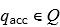
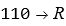
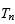
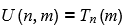
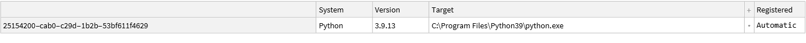

Penrose Encoding and graph visualization.
Diana Itzel Vázquez Santiago.
Emmanuel Isaac Juárez Caballero.
Jesús Eduardo Hermosilla Díaz.
Maestría en Inteligencia Artificial, generación 2021-2023
Introducción:
Las Máquinas de Turing fueron propuestas por el matemático Alan Turing en 1936, son dispositivos computacionales abstractos capaces de simular la lógica de cualquier algoritmo, lo cual las convierte en una poderosa herramienta matemática para ayudar a investigar el alcance y las limitaciones de lo que se puede calcular. Desde su propuesta, las Maquinas de Turing han marcado su importancia como el modelo de computación más utilizado en las ciencias de la computación y la teoría de la complejidad.
En términos generales, las Maquinas de Turing están conformadas por cintas infinitas con representaciones binarias y un diagrama de estados o lista de instrucciones que determinaran el comportamiento de la máquina, en cada paso el estado actual y el símbolo leído en la cinta determinaran el siguiente estado, el símbolo que se emitirá en la cinta y la dirección a la cual se moverá el cabezal (derecha o izquierda).
La limitante principal de las Maquinas de Turing es que precisamente, como se mencionó previamente, simulan un cálculo especifico, por lo que para cada nuevo cálculo que se quiera simular es necesario construir una maquina diferente, sin embargo, es posible codificar la lista de instrucciones de cualquier máquina de Turing en una cadena y construir una máquina de Turing que espere en su cinta una cadena que describa una lista de instrucciones, seguida de una cadena que describa la cinta de entrada, y compute la cinta que la Máquina de Turing codificada habría computado, esta Máquina de Turing capaz de emular el comportamiento de cualquier otra Máquina de Turing es conocida como la Maquina de Turing Universal.
Si bien la cinta infinita que usan las Maquinas de Turing ya tiene una representación binaria, es necesaria una codificación que permita a la maquina distinguir entre espacios, instrucciones, números, etc. Distintos autores han propuesto sus codificaciones para lidiar con este problema, uno de ellos es Roger Penrose que propone una serie de equivalencias para lograr una codificación simple y eficiente.
En este proyecto se presenta la codificación de Penrose aplicada a un número m con notación decimal que representará las instrucciones de la  -ésima Máquina de Turing, para posteriormente construir el diagrama de estados de dicha Máquina y el comportamiento que tendrá dado un número de entrada.
-ésima Máquina de Turing, para posteriormente construir el diagrama de estados de dicha Máquina y el comportamiento que tendrá dado un número de entrada.
Marco Teórico:
En 1936 y de manera independiente fueron publicados tres artículos; “Finite Combinatory Processes—Formulation 1” por Emil Post y que da origen a la máquina de POST, “An Unsolvable Problem of Elementary Number Theory” por Alonzo Church el cual formula el cálculo y “On computable numbers, with an application to the Entscheidungsproblem” por Alan Turing que da origen a las máquinas de Turing.
En esencia la máquina de Post publicada por Emil Post y la máquina de Turing son equivalentes, de igual manera la máquina de Turing y el cálculo de Church son equivalentes.
La propuesta hecha por Turing es similar a los autómatas finitos pero con una memoria ilimitada y sin restricciones. En este sentido la máquina de Turing es un modelo de cómputo general, las máquinas de Turing pueden llevar a cabo las mismas operaciones que una computadora real, sin embargo, esto no implica que todos los problemas puedan ser resueltos por una máquina de Turing.
Cinco años antes de que la propuesta de Turing fuese publicada, K. Göedel (1931) probó su teorema de incompletitud, el cual se puede entender como la no existencia de una teoría matemática que pueda ser enteramente demostrable, es decir, que sea demostrable a partir de algo que no fuesen supuestos.
Formalmente esto se dice según Göedel como:
“Para toda fórmula A de la lógica cuantificacional de primer orden, si A es lógicamente verdadera, entonces A es deducible”. Dicho formalmente: “Si ╞ A, entonces ├ A”
Esto está intrínsecamente relacionado con lo propuesto por Church/Turing, pues en sus trabajos ellos proponen que las máquinas de Turing solo son capaces de computar funciones recursivamente numerables.
Una máquina de Turing consiste de un control finito que puede estar en cualquier estado de un conjunto finito de estados. El modelo propuesto por Turing usa una cinta infinita como método de almacenamiento (memoria); tiene un cabezal, el cual puede leer, escribir y moverse a lo largo de la cinta.
Inicialmente la cinta contiene únicamente una cadena de entrada, si la máquina necesita guardar información escribirá sobre la cinta. Para poder acceder a la información la máquina puede mover su cabezal. La máquina continua con el proceso de computación asta que decide producir una salida, las salidas de aceptación y de rechazo son obtenidas a partir del diseño de los mismos, por otro lado, si no se tiene una opción donde la máquina tenga un estado de aceptación o rechazo la máquina seguirá computando para siempre, es decir sin parar.
Algo importante a considerar es las diferencias que presenta con respecto a los autómatas finitos.
- Una máquina de Turing puede escribir sobre la cinta y leer a partir de ella.
- El proceso de lecto-escritura puede llevarse a cabo moviéndose a la izquierda o a la derecha.
- La cinta es infinita.
- Los estados de aceptación o rechazo toman efecto de manera inmediata.
Formalmente, una máquina de Turing es una 7-tupla son cojuntos finitos y:
- es el conjunto de estados,
-  es la entrada del alfabeto la cual no contiene a ,
es la entrada del alfabeto la cual no contiene a ,
- es la cinta del alfabeto, donde y ,
- es la función de transición,
- es el estado inicial,
-  es el estado de aceptación, y
- es el estado de rechazo, y en donde se debe cumplir que: .
* Un aspecto importante a considerar es que en general la función de transición actúa sobre  , sin embargo, puede determinarse que para una máquina de Turing que tenga algoritmo soluble en un tiempo finito la función de transición actuará sobre donde denota el valor a partir del cual la máquina se detiene, es decir,
, sin embargo, puede determinarse que para una máquina de Turing que tenga algoritmo soluble en un tiempo finito la función de transición actuará sobre donde denota el valor a partir del cual la máquina se detiene, es decir,  “generará” estados de la forma
“generará” estados de la forma  .
.
Pese a que la representación anterior es sumamente útil para llevar a cabo el cómputo, una representación alternativa es propuesta por Penrose , en donde, de manera similar a lo descrito anteriormente describe a la máquina de Turing como un dispositivo orientado a la realización del cómputo en general compuesto por una cinta, un cabezal y la transición de derecha a izquierda. En este caso se propone una cinta sobre la cual el cabezal se moverá, esta estará conformada por casillas “rellenas” de , en este caso el denota una casilla en blanco y el 1 como las casillas no vacías.
Un aspecto importante a considerar es que los estados que componen a la máquina han de ser tales que sean finitos, de manera que el comportamiento de la máquina de Turing estará completamente determinado por un estado interno y la entrada de la cinta, misma que como se mencionó previamente está compuesta únicamente de 0’s y 1’s.
En particular hemos de decir que siempre comenzaremos en el estado 0 y la cinta siempre deberá moverse a la derecha, esto por las razones expuestas previamente. A partir de aquí el comportamiento de la máquina de Turing será completamente determinado por las transiciones/reglas que determinan la misma.
Es posible asociar un estado de la máquina de Turing a un número natural (Considérese que ), bajo esta conversión podemos realizar un mapeo en un sistema numérico equivalente. El sistema binario nos servirá para llevar a cabo la codificación de los elementos de la cinta, esto es fácilmente visible si se toma en cuenta que la codificación de la cinta está compuesta por 0’s y 1’s. Las razones por las que la cinta está codificada en binario en lugar de algún otro sistema como el unario recae en el hecho del tamaño de memoria, pese a que para números pequeños el sistema unario es muy eficaz en números grandes el sistema binario es más compacto.
Un aspecto importante a considerar es que en el proceso descrito por Penrose para llevar a cabo la codificación se considera una “variante” del binario, la cual es descrita como _binario_ extendido. El procedimiento para convertir una salida de binario a binario extendido es sencillo, se siguen las reglas: “, → 110”, “0 → 1”, “1→10”
En la codificación de Penrose es posible codificar a los estados que componen a una máquina de Turing de la siguiente manera:

A este proceso podemos llamarle traducción de la máquina de Turing o Codificación de Penrose, pese a que las razones de esta codificación no han sido descritas formalmente aquí es posible advertir que el resultado de estas nos darán una estructura de grafo, similar a la propuesta inicialmente con la definición formal de máquina de Turing.
Podemos resumir lo descrito previamente en una serie de pasos:
* Consideremos a un conjunto de valores que representen los estados finitos de la cinta.
* Podemos referirnos a los valores como instrucciones/operaciones, en donde la coma solo denota el espacio entre los números.
La codificación para denotar a los números se hace en binario considerando que 0 “,0→1”, “110” de manera que el proceso de escritura en binario expandido seria mediante la lectura de los valores en binario y mediante el uso de las sustituciones previas.
* Una condición importante es que los ceros iniciales a la izquierda son reduntantes, pues no expresan ningún valor en la codificación individual de cada número.
De esta manera es posible expresar a los elementos de la máquina de Turing en una codificación más compacta y legible pues ahora el funcionamiento de una máquina de Turing estará descrito por un conjunto finito de instrucciones.
La máquina de Turing Universal.
La forma de describir una máquina de Turing universal o UTM por sus siglas en inglés es en principio simple, su funcionamiento consiste en traducir una lista de instrucciones de una máquina de Turing arbitraria a una cadena de 0’s y 1’s representadas en una cinta. La cinta es entonces usada como la parte inicial de alguna entrada para alguna máquina de Turing, la cual es llamada UTM. La máquina de Turing es un mimetizador universal, la parte inicial de la cinta provee a la UTM de toda la información que necesita para imitar cualquier máquina de Turing  de manera exacta.
Para verificar su funcionamiento es importante tener en claro como se lleva a cabo el proceso sistemático de numeración de las máquinas de Turing. El proceso de decodificación se hace tomando en cuenta el proceso inverso a la codificación, considerando una salvedad, la introducción de unos caracteres de inicio y fin, los cuales están determinados por “110 → ,” y que se puede considerar únicamente como elementos que separan a los números que deben ser leídos. Por consiguiente se adopta la codificación:
para  ó ,
ó ,
para 1 ó ,
para ,
para ,
para
Bajo este procedimiento es posible etiquetar a las máquinas de Turing, en particular las primeras 13 son:
![Graphics:PlotLabel /. Options[{RowBox[{Máquina, , de, , Turing, , TemplateBox[<|boxes -> FormBox[SubscriptBox[StyleBox[System`Convert`CommonDump`ConvertText[T, System`Convert`HTMLDump`htmlsave, HTMLEntities -> {HTMLBasic}, AltMathOutput -> PlotLabel, WindowSize -> {2000, Automatic}, MathOutput -> PNG, ConvertClosed -> False, ConvertReverseClosed -> False, ConvertLinkedNotebooks -> False, CharacterEncoding -> Automatic, ConversionStyleEnvironment -> None, ConversionRules -> Automatic, HeadAttributes -> {}, HeadElements -> {}, CSS -> Automatic, ConvertLinkedNotebooks -> False, MathOutput -> GIF, GraphicsOutput -> GIF, Graphics3DOutput -> Automatic, ManipulateOutput -> CDF, ConvertClosed -> True, ConvertReverseClosed -> False, FullDocument -> True, AltMathOutput -> FileName, TableOutput -> {TextForm, Automatic}, AnimationOutput -> Automatic, FilesDirectory -> HTMLFiles, LinksDirectory -> HTMLLinks, HTMLEntities -> {HTML}, AllowBlockMathML -> False, ShowStyles -> True, DataUri -> False, MathMLOptions -> {UseUnicodePlane1Characters -> False, IncludeMarkupAnnotations -> False, Entities -> MathML}], System`Convert`CommonDump`ConvertText[TI, System`Convert`HTMLDump`htmlsave, HTMLEntities -> {HTMLBasic}, AltMathOutput -> PlotLabel, WindowSize -> {2000, Automatic}, MathOutput -> PNG, ConvertClosed -> False, ConvertReverseClosed -> False, ConvertLinkedNotebooks -> False, CharacterEncoding -> Automatic, ConversionStyleEnvironment -> None, ConversionRules -> Automatic, HeadAttributes -> {}, HeadElements -> {}, CSS -> Automatic, ConvertLinkedNotebooks -> False, MathOutput -> GIF, GraphicsOutput -> GIF, Graphics3DOutput -> Automatic, ManipulateOutput -> CDF, ConvertClosed -> True, ConvertReverseClosed -> False, FullDocument -> True, AltMathOutput -> FileName, TableOutput -> {TextForm, Automatic}, AnimationOutput -> Automatic, FilesDirectory -> HTMLFiles, LinksDirectory -> HTMLLinks, HTMLEntities -> {HTML}, AllowBlockMathML -> False, ShowStyles -> True, DataUri -> False, MathMLOptions -> {UseUnicodePlane1Characters -> False, IncludeMarkupAnnotations -> False, Entities -> MathML}]], System`Convert`CommonDump`ConvertText[0, System`Convert`HTMLDump`htmlsave, HTMLEntities -> {HTMLBasic}, AltMathOutput -> PlotLabel, WindowSize -> {2000, Automatic}, MathOutput -> PNG, ConvertClosed -> False, ConvertReverseClosed -> False, ConvertLinkedNotebooks -> False, CharacterEncoding -> Automatic, ConversionStyleEnvironment -> None, ConversionRules -> Automatic, HeadAttributes -> {}, HeadElements -> {}, CSS -> Automatic, ConvertLinkedNotebooks -> False, MathOutput -> GIF, GraphicsOutput -> GIF, Graphics3DOutput -> Automatic, ManipulateOutput -> CDF, ConvertClosed -> True, ConvertReverseClosed -> False, FullDocument -> True, AltMathOutput -> FileName, TableOutput -> {TextForm, Automatic}, AnimationOutput -> Automatic, FilesDirectory -> HTMLFiles, LinksDirectory -> HTMLLinks, HTMLEntities -> {HTML}, AllowBlockMathML -> False, ShowStyles -> True, DataUri -> False, MathMLOptions -> {UseUnicodePlane1Characters -> False, IncludeMarkupAnnotations -> False, Entities -> MathML}]], TraditionalForm], errors -> {}, input -> System`Convert`CommonDump`ConvertText[T_0, System`Convert`HTMLDump`htmlsave, HTMLEntities -> {HTMLBasic}, AltMathOutput -> PlotLabel, WindowSize -> {2000, Automatic}, MathOutput -> PNG, ConvertClosed -> False, ConvertReverseClosed -> False, ConvertLinkedNotebooks -> False, CharacterEncoding -> Automatic, ConversionStyleEnvironment -> None, ConversionRules -> Automatic, HeadAttributes -> {}, HeadElements -> {}, CSS -> Automatic, ConvertLinkedNotebooks -> False, MathOutput -> GIF, GraphicsOutput -> GIF, Graphics3DOutput -> Automatic, ManipulateOutput -> CDF, ConvertClosed -> True, ConvertReverseClosed -> False, FullDocument -> True, AltMathOutput -> FileName, TableOutput -> {TextForm, Automatic}, AnimationOutput -> Automatic, FilesDirectory -> HTMLFiles, LinksDirectory -> HTMLLinks, HTMLEntities -> {HTML}, AllowBlockMathML -> False, ShowStyles -> True, DataUri -> False, MathMLOptions -> {UseUnicodePlane1Characters -> False, IncludeMarkupAnnotations -> False, Entities -> MathML}], state -> System`Convert`CommonDump`ConvertText[Boxes, System`Convert`HTMLDump`htmlsave, HTMLEntities -> {HTMLBasic}, AltMathOutput -> PlotLabel, WindowSize -> {2000, Automatic}, MathOutput -> PNG, ConvertClosed -> False, ConvertReverseClosed -> False, ConvertLinkedNotebooks -> False, CharacterEncoding -> Automatic, ConversionStyleEnvironment -> None, ConversionRules -> Automatic, HeadAttributes -> {}, HeadElements -> {}, CSS -> Automatic, ConvertLinkedNotebooks -> False, MathOutput -> GIF, GraphicsOutput -> GIF, Graphics3DOutput -> Automatic, ManipulateOutput -> CDF, ConvertClosed -> True, ConvertReverseClosed -> False, FullDocument -> True, AltMathOutput -> FileName, TableOutput -> {TextForm, Automatic}, AnimationOutput -> Automatic, FilesDirectory -> HTMLFiles, LinksDirectory -> HTMLLinks, HTMLEntities -> {HTML}, AllowBlockMathML -> False, ShowStyles -> True, DataUri -> False, MathMLOptions -> {UseUnicodePlane1Characters -> False, IncludeMarkupAnnotations -> False, Entities -> MathML}]|>, TeXAssistantTemplate]}], , RowBox[{GraphicsBox[TagBox[RasterBox[NumericArray[<128,324,3>, UnsignedInteger8], {{0, 96.}, {243., 0}}, {0, 255}, ColorFunction -> RGBColor, ImageResolution -> {96., 96.}, SmoothingQuality -> System`Convert`CommonDump`ConvertText[High, System`Convert`HTMLDump`htmlsave, HTMLEntities -> {HTMLBasic}, AltMathOutput -> PlotLabel, WindowSize -> {2000, Automatic}, MathOutput -> PNG, ConvertClosed -> False, ConvertReverseClosed -> False, ConvertLinkedNotebooks -> False, CharacterEncoding -> Automatic, ConversionStyleEnvironment -> None, ConversionRules -> Automatic, HeadAttributes -> {}, HeadElements -> {}, CSS -> Automatic, ConvertLinkedNotebooks -> False, MathOutput -> GIF, GraphicsOutput -> GIF, Graphics3DOutput -> Automatic, ManipulateOutput -> CDF, ConvertClosed -> True, ConvertReverseClosed -> False, FullDocument -> True, AltMathOutput -> FileName, TableOutput -> {TextForm, Automatic}, AnimationOutput -> Automatic, FilesDirectory -> HTMLFiles, LinksDirectory -> HTMLLinks, HTMLEntities -> {HTML}, AllowBlockMathML -> False, ShowStyles -> True, DataUri -> False, MathMLOptions -> {UseUnicodePlane1Characters -> False, IncludeMarkupAnnotations -> False, Entities -> MathML}]], BoxForm`ImageTag[System`Convert`CommonDump`ConvertText[Byte, System`Convert`HTMLDump`htmlsave, HTMLEntities -> {HTMLBasic}, AltMathOutput -> PlotLabel, WindowSize -> {2000, Automatic}, MathOutput -> PNG, ConvertClosed -> False, ConvertReverseClosed -> False, ConvertLinkedNotebooks -> False, CharacterEncoding -> Automatic, ConversionStyleEnvironment -> None, ConversionRules -> Automatic, HeadAttributes -> {}, HeadElements -> {}, CSS -> Automatic, ConvertLinkedNotebooks -> False, MathOutput -> GIF, GraphicsOutput -> GIF, Graphics3DOutput -> Automatic, ManipulateOutput -> CDF, ConvertClosed -> True, ConvertReverseClosed -> False, FullDocument -> True, AltMathOutput -> FileName, TableOutput -> {TextForm, Automatic}, AnimationOutput -> Automatic, FilesDirectory -> HTMLFiles, LinksDirectory -> HTMLLinks, HTMLEntities -> {HTML}, AllowBlockMathML -> False, ShowStyles -> True, DataUri -> False, MathMLOptions -> {UseUnicodePlane1Characters -> False, IncludeMarkupAnnotations -> False, Entities -> MathML}], ColorSpace -> System`Convert`CommonDump`ConvertText[RGB, System`Convert`HTMLDump`htmlsave, HTMLEntities -> {HTMLBasic}, AltMathOutput -> PlotLabel, WindowSize -> {2000, Automatic}, MathOutput -> PNG, ConvertClosed -> False, ConvertReverseClosed -> False, ConvertLinkedNotebooks -> False, CharacterEncoding -> Automatic, ConversionStyleEnvironment -> None, ConversionRules -> Automatic, HeadAttributes -> {}, HeadElements -> {}, CSS -> Automatic, ConvertLinkedNotebooks -> False, MathOutput -> GIF, GraphicsOutput -> GIF, Graphics3DOutput -> Automatic, ManipulateOutput -> CDF, ConvertClosed -> True, ConvertReverseClosed -> False, FullDocument -> True, AltMathOutput -> FileName, TableOutput -> {TextForm, Automatic}, AnimationOutput -> Automatic, FilesDirectory -> HTMLFiles, LinksDirectory -> HTMLLinks, HTMLEntities -> {HTML}, AllowBlockMathML -> False, ShowStyles -> True, DataUri -> False, MathMLOptions -> {UseUnicodePlane1Characters -> False, IncludeMarkupAnnotations -> False, Entities -> MathML}], Interleaving -> True], Selectable -> False], DefaultBaseStyle -> System`Convert`CommonDump`ConvertText[ImageGraphics, System`Convert`HTMLDump`htmlsave, HTMLEntities -> {HTMLBasic}, AltMathOutput -> PlotLabel, WindowSize -> {2000, Automatic}, MathOutput -> PNG, ConvertClosed -> False, ConvertReverseClosed -> False, ConvertLinkedNotebooks -> False, CharacterEncoding -> Automatic, ConversionStyleEnvironment -> None, ConversionRules -> Automatic, HeadAttributes -> {}, HeadElements -> {}, CSS -> Automatic, ConvertLinkedNotebooks -> False, MathOutput -> GIF, GraphicsOutput -> GIF, Graphics3DOutput -> Automatic, ManipulateOutput -> CDF, ConvertClosed -> True, ConvertReverseClosed -> False, FullDocument -> True, AltMathOutput -> FileName, TableOutput -> {TextForm, Automatic}, AnimationOutput -> Automatic, FilesDirectory -> HTMLFiles, LinksDirectory -> HTMLLinks, HTMLEntities -> {HTML}, AllowBlockMathML -> False, ShowStyles -> True, DataUri -> False, MathMLOptions -> {UseUnicodePlane1Characters -> False, IncludeMarkupAnnotations -> False, Entities -> MathML}], ImageSize -> {487.75, Automatic}, ImageSizeRaw -> {243., 96.}, PlotRange -> {{0, 243.}, {0, 96.}}], GraphicsBox[NamespaceBox[System`Convert`CommonDump`ConvertText[NetworkGraphics, System`Convert`HTMLDump`htmlsave, HTMLEntities -> {HTMLBasic}, AltMathOutput -> PlotLabel, WindowSize -> {2000, Automatic}, MathOutput -> PNG, ConvertClosed -> False, ConvertReverseClosed -> False, ConvertLinkedNotebooks -> False, CharacterEncoding -> Automatic, ConversionStyleEnvironment -> None, ConversionRules -> Automatic, HeadAttributes -> {}, HeadElements -> {}, CSS -> Automatic, ConvertLinkedNotebooks -> False, MathOutput -> GIF, GraphicsOutput -> GIF, Graphics3DOutput -> Automatic, ManipulateOutput -> CDF, ConvertClosed -> True, ConvertReverseClosed -> False, FullDocument -> True, AltMathOutput -> FileName, TableOutput -> {TextForm, Automatic}, AnimationOutput -> Automatic, FilesDirectory -> HTMLFiles, LinksDirectory -> HTMLLinks, HTMLEntities -> {HTML}, AllowBlockMathML -> False, ShowStyles -> True, DataUri -> False, MathMLOptions -> {UseUnicodePlane1Characters -> False, IncludeMarkupAnnotations -> False, Entities -> MathML}], DynamicModuleBox[{Typeset`graph = HoldComplete[Graph[{0}, {{{1, 1}, {1, 1}}, Null}, {EdgeShapeFunction -> {{First[$CellContext`styles$24631 = RotateLeft[$CellContext`styles$24631]], GraphElementData[System`Convert`CommonDump`ConvertText[Arrow, System`Convert`HTMLDump`htmlsave, HTMLEntities -> {HTMLBasic}, AltMathOutput -> PlotLabel, WindowSize -> {2000, Automatic}, MathOutput -> PNG, ConvertClosed -> False, ConvertReverseClosed -> False, ConvertLinkedNotebooks -> False, CharacterEncoding -> Automatic, ConversionStyleEnvironment -> None, ConversionRules -> Automatic, HeadAttributes -> {}, HeadElements -> {}, CSS -> Automatic, ConvertLinkedNotebooks -> False, MathOutput -> GIF, GraphicsOutput -> GIF, Graphics3DOutput -> Automatic, ManipulateOutput -> CDF, ConvertClosed -> True, ConvertReverseClosed -> False, FullDocument -> True, AltMathOutput -> FileName, TableOutput -> {TextForm, Automatic}, AnimationOutput -> Automatic, FilesDirectory -> HTMLFiles, LinksDirectory -> HTMLLinks, HTMLEntities -> {HTML}, AllowBlockMathML -> False, ShowStyles -> True, DataUri -> False, MathMLOptions -> {UseUnicodePlane1Characters -> False, IncludeMarkupAnnotations -> False, Entities -> MathML}], System`Convert`CommonDump`ConvertText[ArrowSize, System`Convert`HTMLDump`htmlsave, HTMLEntities -> {HTMLBasic}, AltMathOutput -> PlotLabel, WindowSize -> {2000, Automatic}, MathOutput -> PNG, ConvertClosed -> False, ConvertReverseClosed -> False, ConvertLinkedNotebooks -> False, CharacterEncoding -> Automatic, ConversionStyleEnvironment -> None, ConversionRules -> Automatic, HeadAttributes -> {}, HeadElements -> {}, CSS -> Automatic, ConvertLinkedNotebooks -> False, MathOutput -> GIF, GraphicsOutput -> GIF, Graphics3DOutput -> Automatic, ManipulateOutput -> CDF, ConvertClosed -> True, ConvertReverseClosed -> False, FullDocument -> True, AltMathOutput -> FileName, TableOutput -> {TextForm, Automatic}, AnimationOutput -> Automatic, FilesDirectory -> HTMLFiles, LinksDirectory -> HTMLLinks, HTMLEntities -> {HTML}, AllowBlockMathML -> False, ShowStyles -> True, DataUri -> False, MathMLOptions -> {UseUnicodePlane1Characters -> False, IncludeMarkupAnnotations -> False, Entities -> MathML}] -> 0.01][##1] /. Arrowheads[$CellContext`ah$_] :> Arrowheads[Append[$CellContext`ah$, {0.0003, 0.7, -Graphics-}]]} & }, GraphLayout -> System`Convert`CommonDump`ConvertText[GravityEmbedding, System`Convert`HTMLDump`htmlsave, HTMLEntities -> {HTMLBasic}, AltMathOutput -> PlotLabel, WindowSize -> {2000, Automatic}, MathOutput -> PNG, ConvertClosed -> False, ConvertReverseClosed -> False, ConvertLinkedNotebooks -> False, CharacterEncoding -> Automatic, ConversionStyleEnvironment -> None, ConversionRules -> Automatic, HeadAttributes -> {}, HeadElements -> {}, CSS -> Automatic, ConvertLinkedNotebooks -> False, MathOutput -> GIF, GraphicsOutput -> GIF, Graphics3DOutput -> Automatic, ManipulateOutput -> CDF, ConvertClosed -> True, ConvertReverseClosed -> False, FullDocument -> True, AltMathOutput -> FileName, TableOutput -> {TextForm, Automatic}, AnimationOutput -> Automatic, FilesDirectory -> HTMLFiles, LinksDirectory -> HTMLLinks, HTMLEntities -> {HTML}, AllowBlockMathML -> False, ShowStyles -> True, DataUri -> False, MathMLOptions -> {UseUnicodePlane1Characters -> False, IncludeMarkupAnnotations -> False, Entities -> MathML}], ImageSize -> Large, VertexLabels -> {Placed[System`Convert`CommonDump`ConvertText[Name, System`Convert`HTMLDump`htmlsave, HTMLEntities -> {HTMLBasic}, AltMathOutput -> PlotLabel, WindowSize -> {2000, Automatic}, MathOutput -> PNG, ConvertClosed -> False, ConvertReverseClosed -> False, ConvertLinkedNotebooks -> False, CharacterEncoding -> Automatic, ConversionStyleEnvironment -> None, ConversionRules -> Automatic, HeadAttributes -> {}, HeadElements -> {}, CSS -> Automatic, ConvertLinkedNotebooks -> False, MathOutput -> GIF, GraphicsOutput -> GIF, Graphics3DOutput -> Automatic, ManipulateOutput -> CDF, ConvertClosed -> True, ConvertReverseClosed -> False, FullDocument -> True, AltMathOutput -> FileName, TableOutput -> {TextForm, Automatic}, AnimationOutput -> Automatic, FilesDirectory -> HTMLFiles, LinksDirectory -> HTMLLinks, HTMLEntities -> {HTML}, AllowBlockMathML -> False, ShowStyles -> True, DataUri -> False, MathMLOptions -> {UseUnicodePlane1Characters -> False, IncludeMarkupAnnotations -> False, Entities -> MathML}], Center]}, VertexSize -> {0.05}}]]}, TagBox[GraphicsGroupBox[{{Hue[0.6, 0.7, 0.5], Opacity[0.7], {RGBColor[0.368417, 0.506779, 0.709798], {Arrowheads[{{0.01, 0.8}, {0.0003, 0.7, GraphicsBox[InsetBox[FormBox[FrameBox[StringReplace[StringTake[System`Convert`CommonDump`ConvertText["00R", System`Convert`HTMLDump`htmlsave, HTMLEntities -> {HTMLBasic}, AltMathOutput -> PlotLabel, WindowSize -> {2000, Automatic}, MathOutput -> PNG, ConvertClosed -> False, ConvertReverseClosed -> False, ConvertLinkedNotebooks -> False, CharacterEncoding -> Automatic, ConversionStyleEnvironment -> None, ConversionRules -> Automatic, HeadAttributes -> {}, HeadElements -> {}, CSS -> Automatic, ConvertLinkedNotebooks -> False, MathOutput -> GIF, GraphicsOutput -> GIF, Graphics3DOutput -> Automatic, ManipulateOutput -> CDF, ConvertClosed -> True, ConvertReverseClosed -> False, FullDocument -> True, AltMathOutput -> FileName, TableOutput -> {TextForm, Automatic}, AnimationOutput -> Automatic, FilesDirectory -> HTMLFiles, LinksDirectory -> HTMLLinks, HTMLEntities -> {HTML}, AllowBlockMathML -> False, ShowStyles -> True, DataUri -> False, MathMLOptions -> {UseUnicodePlane1Characters -> False, IncludeMarkupAnnotations -> False, Entities -> MathML}], {2, -2}], {System`Convert`CommonDump`ConvertText[\n, System`Convert`HTMLDump`htmlsave, HTMLEntities -> {HTMLBasic}, AltMathOutput -> PlotLabel, WindowSize -> {2000, Automatic}, MathOutput -> PNG, ConvertClosed -> False, ConvertReverseClosed -> False, ConvertLinkedNotebooks -> False, CharacterEncoding -> Automatic, ConversionStyleEnvironment -> None, ConversionRules -> Automatic, HeadAttributes -> {}, HeadElements -> {}, CSS -> Automatic, ConvertLinkedNotebooks -> False, MathOutput -> GIF, GraphicsOutput -> GIF, Graphics3DOutput -> Automatic, ManipulateOutput -> CDF, ConvertClosed -> True, ConvertReverseClosed -> False, FullDocument -> True, AltMathOutput -> FileName, TableOutput -> {TextForm, Automatic}, AnimationOutput -> Automatic, FilesDirectory -> HTMLFiles, LinksDirectory -> HTMLLinks, HTMLEntities -> {HTML}, AllowBlockMathML -> False, ShowStyles -> True, DataUri -> False, MathMLOptions -> {UseUnicodePlane1Characters -> False, IncludeMarkupAnnotations -> False, Entities -> MathML}] -> System`Convert`CommonDump`ConvertText[, System`Convert`HTMLDump`htmlsave, HTMLEntities -> {HTMLBasic}, AltMathOutput -> PlotLabel, WindowSize -> {2000, Automatic}, MathOutput -> PNG, ConvertClosed -> False, ConvertReverseClosed -> False, ConvertLinkedNotebooks -> False, CharacterEncoding -> Automatic, ConversionStyleEnvironment -> None, ConversionRules -> Automatic, HeadAttributes -> {}, HeadElements -> {}, CSS -> Automatic, ConvertLinkedNotebooks -> False, MathOutput -> GIF, GraphicsOutput -> GIF, Graphics3DOutput -> Automatic, ManipulateOutput -> CDF, ConvertClosed -> True, ConvertReverseClosed -> False, FullDocument -> True, AltMathOutput -> FileName, TableOutput -> {TextForm, Automatic}, AnimationOutput -> Automatic, FilesDirectory -> HTMLFiles, LinksDirectory -> HTMLLinks, HTMLEntities -> {HTML}, AllowBlockMathML -> False, ShowStyles -> True, DataUri -> False, MathMLOptions -> {UseUnicodePlane1Characters -> False, IncludeMarkupAnnotations -> False, Entities -> MathML}], System`Convert`CommonDump`ConvertText[\r, System`Convert`HTMLDump`htmlsave, HTMLEntities -> {HTMLBasic}, AltMathOutput -> PlotLabel, WindowSize -> {2000, Automatic}, MathOutput -> PNG, ConvertClosed -> False, ConvertReverseClosed -> False, ConvertLinkedNotebooks -> False, CharacterEncoding -> Automatic, ConversionStyleEnvironment -> None, ConversionRules -> Automatic, HeadAttributes -> {}, HeadElements -> {}, CSS -> Automatic, ConvertLinkedNotebooks -> False, MathOutput -> GIF, GraphicsOutput -> GIF, Graphics3DOutput -> Automatic, ManipulateOutput -> CDF, ConvertClosed -> True, ConvertReverseClosed -> False, FullDocument -> True, AltMathOutput -> FileName, TableOutput -> {TextForm, Automatic}, AnimationOutput -> Automatic, FilesDirectory -> HTMLFiles, LinksDirectory -> HTMLLinks, HTMLEntities -> {HTML}, AllowBlockMathML -> False, ShowStyles -> True, DataUri -> False, MathMLOptions -> {UseUnicodePlane1Characters -> False, IncludeMarkupAnnotations -> False, Entities -> MathML}] -> System`Convert`CommonDump`ConvertText[<br />, System`Convert`HTMLDump`htmlsave, HTMLEntities -> {HTMLBasic}, AltMathOutput -> PlotLabel, WindowSize -> {2000, Automatic}, MathOutput -> PNG, ConvertClosed -> False, ConvertReverseClosed -> False, ConvertLinkedNotebooks -> False, CharacterEncoding -> Automatic, ConversionStyleEnvironment -> None, ConversionRules -> Automatic, HeadAttributes -> {}, HeadElements -> {}, CSS -> Automatic, ConvertLinkedNotebooks -> False, MathOutput -> GIF, GraphicsOutput -> GIF, Graphics3DOutput -> Automatic, ManipulateOutput -> CDF, ConvertClosed -> True, ConvertReverseClosed -> False, FullDocument -> True, AltMathOutput -> FileName, TableOutput -> {TextForm, Automatic}, AnimationOutput -> Automatic, FilesDirectory -> HTMLFiles, LinksDirectory -> HTMLLinks, HTMLEntities -> {HTML}, AllowBlockMathML -> False, ShowStyles -> True, DataUri -> False, MathMLOptions -> {UseUnicodePlane1Characters -> False, IncludeMarkupAnnotations -> False, Entities -> MathML}], System`Convert`CommonDump`ConvertText[\t, System`Convert`HTMLDump`htmlsave, HTMLEntities -> {HTMLBasic}, AltMathOutput -> PlotLabel, WindowSize -> {2000, Automatic}, MathOutput -> PNG, ConvertClosed -> False, ConvertReverseClosed -> False, ConvertLinkedNotebooks -> False, CharacterEncoding -> Automatic, ConversionStyleEnvironment -> None, ConversionRules -> Automatic, HeadAttributes -> {}, HeadElements -> {}, CSS -> Automatic, ConvertLinkedNotebooks -> False, MathOutput -> GIF, GraphicsOutput -> GIF, Graphics3DOutput -> Automatic, ManipulateOutput -> CDF, ConvertClosed -> True, ConvertReverseClosed -> False, FullDocument -> True, AltMathOutput -> FileName, TableOutput -> {TextForm, Automatic}, AnimationOutput -> Automatic, FilesDirectory -> HTMLFiles, LinksDirectory -> HTMLLinks, HTMLEntities -> {HTML}, AllowBlockMathML -> False, ShowStyles -> True, DataUri -> False, MathMLOptions -> {UseUnicodePlane1Characters -> False, IncludeMarkupAnnotations -> False, Entities -> MathML}] -> System`Convert`CommonDump`ConvertText[ , System`Convert`HTMLDump`htmlsave, HTMLEntities -> {HTMLBasic}, AltMathOutput -> PlotLabel, WindowSize -> {2000, Automatic}, MathOutput -> PNG, ConvertClosed -> False, ConvertReverseClosed -> False, ConvertLinkedNotebooks -> False, CharacterEncoding -> Automatic, ConversionStyleEnvironment -> None, ConversionRules -> Automatic, HeadAttributes -> {}, HeadElements -> {}, CSS -> Automatic, ConvertLinkedNotebooks -> False, MathOutput -> GIF, GraphicsOutput -> GIF, Graphics3DOutput -> Automatic, ManipulateOutput -> CDF, ConvertClosed -> True, ConvertReverseClosed -> False, FullDocument -> True, AltMathOutput -> FileName, TableOutput -> {TextForm, Automatic}, AnimationOutput -> Automatic, FilesDirectory -> HTMLFiles, LinksDirectory -> HTMLLinks, HTMLEntities -> {HTML}, AllowBlockMathML -> False, ShowStyles -> True, DataUri -> False, MathMLOptions -> {UseUnicodePlane1Characters -> False, IncludeMarkupAnnotations -> False, Entities -> MathML}]}], FrameStyle -> None, Background -> GrayLevel[1], StripOnInput -> False], TraditionalForm], {0, 0}]]}}], ArrowBox[BezierCurveBox[{{0., 0.}, {0.0431123, -0.0285062}, {0.0467712, -0.0649875}, {0.0339727, -0.0862114}, {-0.0339727, -0.0862114}, {-0.0467712, -0.0649875}, {-0.0431123, -0.0285062}, {0., 0.}}, SplineDegree -> 7]]}}, {RGBColor[0.880722, 0.611041, 0.142051], {Arrowheads[{{0.01, 0.8}, {0.0003, 0.7, GraphicsBox[InsetBox[FormBox[FrameBox[StringReplace[StringTake[System`Convert`CommonDump`ConvertText["10R", System`Convert`HTMLDump`htmlsave, HTMLEntities -> {HTMLBasic}, AltMathOutput -> PlotLabel, WindowSize -> {2000, Automatic}, MathOutput -> PNG, ConvertClosed -> False, ConvertReverseClosed -> False, ConvertLinkedNotebooks -> False, CharacterEncoding -> Automatic, ConversionStyleEnvironment -> None, ConversionRules -> Automatic, HeadAttributes -> {}, HeadElements -> {}, CSS -> Automatic, ConvertLinkedNotebooks -> False, MathOutput -> GIF, GraphicsOutput -> GIF, Graphics3DOutput -> Automatic, ManipulateOutput -> CDF, ConvertClosed -> True, ConvertReverseClosed -> False, FullDocument -> True, AltMathOutput -> FileName, TableOutput -> {TextForm, Automatic}, AnimationOutput -> Automatic, FilesDirectory -> HTMLFiles, LinksDirectory -> HTMLLinks, HTMLEntities -> {HTML}, AllowBlockMathML -> False, ShowStyles -> True, DataUri -> False, MathMLOptions -> {UseUnicodePlane1Characters -> False, IncludeMarkupAnnotations -> False, Entities -> MathML}], {2, -2}], {System`Convert`CommonDump`ConvertText[\n, System`Convert`HTMLDump`htmlsave, HTMLEntities -> {HTMLBasic}, AltMathOutput -> PlotLabel, WindowSize -> {2000, Automatic}, MathOutput -> PNG, ConvertClosed -> False, ConvertReverseClosed -> False, ConvertLinkedNotebooks -> False, CharacterEncoding -> Automatic, ConversionStyleEnvironment -> None, ConversionRules -> Automatic, HeadAttributes -> {}, HeadElements -> {}, CSS -> Automatic, ConvertLinkedNotebooks -> False, MathOutput -> GIF, GraphicsOutput -> GIF, Graphics3DOutput -> Automatic, ManipulateOutput -> CDF, ConvertClosed -> True, ConvertReverseClosed -> False, FullDocument -> True, AltMathOutput -> FileName, TableOutput -> {TextForm, Automatic}, AnimationOutput -> Automatic, FilesDirectory -> HTMLFiles, LinksDirectory -> HTMLLinks, HTMLEntities -> {HTML}, AllowBlockMathML -> False, ShowStyles -> True, DataUri -> False, MathMLOptions -> {UseUnicodePlane1Characters -> False, IncludeMarkupAnnotations -> False, Entities -> MathML}] -> System`Convert`CommonDump`ConvertText[, System`Convert`HTMLDump`htmlsave, HTMLEntities -> {HTMLBasic}, AltMathOutput -> PlotLabel, WindowSize -> {2000, Automatic}, MathOutput -> PNG, ConvertClosed -> False, ConvertReverseClosed -> False, ConvertLinkedNotebooks -> False, CharacterEncoding -> Automatic, ConversionStyleEnvironment -> None, ConversionRules -> Automatic, HeadAttributes -> {}, HeadElements -> {}, CSS -> Automatic, ConvertLinkedNotebooks -> False, MathOutput -> GIF, GraphicsOutput -> GIF, Graphics3DOutput -> Automatic, ManipulateOutput -> CDF, ConvertClosed -> True, ConvertReverseClosed -> False, FullDocument -> True, AltMathOutput -> FileName, TableOutput -> {TextForm, Automatic}, AnimationOutput -> Automatic, FilesDirectory -> HTMLFiles, LinksDirectory -> HTMLLinks, HTMLEntities -> {HTML}, AllowBlockMathML -> False, ShowStyles -> True, DataUri -> False, MathMLOptions -> {UseUnicodePlane1Characters -> False, IncludeMarkupAnnotations -> False, Entities -> MathML}], System`Convert`CommonDump`ConvertText[\r, System`Convert`HTMLDump`htmlsave, HTMLEntities -> {HTMLBasic}, AltMathOutput -> PlotLabel, WindowSize -> {2000, Automatic}, MathOutput -> PNG, ConvertClosed -> False, ConvertReverseClosed -> False, ConvertLinkedNotebooks -> False, CharacterEncoding -> Automatic, ConversionStyleEnvironment -> None, ConversionRules -> Automatic, HeadAttributes -> {}, HeadElements -> {}, CSS -> Automatic, ConvertLinkedNotebooks -> False, MathOutput -> GIF, GraphicsOutput -> GIF, Graphics3DOutput -> Automatic, ManipulateOutput -> CDF, ConvertClosed -> True, ConvertReverseClosed -> False, FullDocument -> True, AltMathOutput -> FileName, TableOutput -> {TextForm, Automatic}, AnimationOutput -> Automatic, FilesDirectory -> HTMLFiles, LinksDirectory -> HTMLLinks, HTMLEntities -> {HTML}, AllowBlockMathML -> False, ShowStyles -> True, DataUri -> False, MathMLOptions -> {UseUnicodePlane1Characters -> False, IncludeMarkupAnnotations -> False, Entities -> MathML}] -> System`Convert`CommonDump`ConvertText[<br />, System`Convert`HTMLDump`htmlsave, HTMLEntities -> {HTMLBasic}, AltMathOutput -> PlotLabel, WindowSize -> {2000, Automatic}, MathOutput -> PNG, ConvertClosed -> False, ConvertReverseClosed -> False, ConvertLinkedNotebooks -> False, CharacterEncoding -> Automatic, ConversionStyleEnvironment -> None, ConversionRules -> Automatic, HeadAttributes -> {}, HeadElements -> {}, CSS -> Automatic, ConvertLinkedNotebooks -> False, MathOutput -> GIF, GraphicsOutput -> GIF, Graphics3DOutput -> Automatic, ManipulateOutput -> CDF, ConvertClosed -> True, ConvertReverseClosed -> False, FullDocument -> True, AltMathOutput -> FileName, TableOutput -> {TextForm, Automatic}, AnimationOutput -> Automatic, FilesDirectory -> HTMLFiles, LinksDirectory -> HTMLLinks, HTMLEntities -> {HTML}, AllowBlockMathML -> False, ShowStyles -> True, DataUri -> False, MathMLOptions -> {UseUnicodePlane1Characters -> False, IncludeMarkupAnnotations -> False, Entities -> MathML}], System`Convert`CommonDump`ConvertText[\t, System`Convert`HTMLDump`htmlsave, HTMLEntities -> {HTMLBasic}, AltMathOutput -> PlotLabel, WindowSize -> {2000, Automatic}, MathOutput -> PNG, ConvertClosed -> False, ConvertReverseClosed -> False, ConvertLinkedNotebooks -> False, CharacterEncoding -> Automatic, ConversionStyleEnvironment -> None, ConversionRules -> Automatic, HeadAttributes -> {}, HeadElements -> {}, CSS -> Automatic, ConvertLinkedNotebooks -> False, MathOutput -> GIF, GraphicsOutput -> GIF, Graphics3DOutput -> Automatic, ManipulateOutput -> CDF, ConvertClosed -> True, ConvertReverseClosed -> False, FullDocument -> True, AltMathOutput -> FileName, TableOutput -> {TextForm, Automatic}, AnimationOutput -> Automatic, FilesDirectory -> HTMLFiles, LinksDirectory -> HTMLLinks, HTMLEntities -> {HTML}, AllowBlockMathML -> False, ShowStyles -> True, DataUri -> False, MathMLOptions -> {UseUnicodePlane1Characters -> False, IncludeMarkupAnnotations -> False, Entities -> MathML}] -> System`Convert`CommonDump`ConvertText[ , System`Convert`HTMLDump`htmlsave, HTMLEntities -> {HTMLBasic}, AltMathOutput -> PlotLabel, WindowSize -> {2000, Automatic}, MathOutput -> PNG, ConvertClosed -> False, ConvertReverseClosed -> False, ConvertLinkedNotebooks -> False, CharacterEncoding -> Automatic, ConversionStyleEnvironment -> None, ConversionRules -> Automatic, HeadAttributes -> {}, HeadElements -> {}, CSS -> Automatic, ConvertLinkedNotebooks -> False, MathOutput -> GIF, GraphicsOutput -> GIF, Graphics3DOutput -> Automatic, ManipulateOutput -> CDF, ConvertClosed -> True, ConvertReverseClosed -> False, FullDocument -> True, AltMathOutput -> FileName, TableOutput -> {TextForm, Automatic}, AnimationOutput -> Automatic, FilesDirectory -> HTMLFiles, LinksDirectory -> HTMLLinks, HTMLEntities -> {HTML}, AllowBlockMathML -> False, ShowStyles -> True, DataUri -> False, MathMLOptions -> {UseUnicodePlane1Characters -> False, IncludeMarkupAnnotations -> False, Entities -> MathML}]}], FrameStyle -> None, Background -> GrayLevel[1], StripOnInput -> False], TraditionalForm], {0, 0}]]}}], ArrowBox[BezierCurveBox[{{0., 0.}, {-0.0431123, 0.0285062}, {-0.0467712, 0.0649875}, {-0.0339727, 0.0862114}, {0.0339727, 0.0862114}, {0.0467712, 0.0649875}, {0.0431123, 0.0285062}, {0., 0.}}, SplineDegree -> 7]]}}}, {Hue[0.6, 0.2, 0.8], EdgeForm[{GrayLevel[0], Opacity[0.7]}], DiskBox[{0., 0.}, 0.025], InsetBox[System`Convert`CommonDump`ConvertText[0, System`Convert`HTMLDump`htmlsave, HTMLEntities -> {HTMLBasic}, AltMathOutput -> PlotLabel, WindowSize -> {2000, Automatic}, MathOutput -> PNG, ConvertClosed -> False, ConvertReverseClosed -> False, ConvertLinkedNotebooks -> False, CharacterEncoding -> Automatic, ConversionStyleEnvironment -> None, ConversionRules -> Automatic, HeadAttributes -> {}, HeadElements -> {}, CSS -> Automatic, ConvertLinkedNotebooks -> False, MathOutput -> GIF, GraphicsOutput -> GIF, Graphics3DOutput -> Automatic, ManipulateOutput -> CDF, ConvertClosed -> True, ConvertReverseClosed -> False, FullDocument -> True, AltMathOutput -> FileName, TableOutput -> {TextForm, Automatic}, AnimationOutput -> Automatic, FilesDirectory -> HTMLFiles, LinksDirectory -> HTMLLinks, HTMLEntities -> {HTML}, AllowBlockMathML -> False, ShowStyles -> True, DataUri -> False, MathMLOptions -> {UseUnicodePlane1Characters -> False, IncludeMarkupAnnotations -> False, Entities -> MathML}], {0., 0.}, BaseStyle -> System`Convert`CommonDump`ConvertText[Graphics, System`Convert`HTMLDump`htmlsave, HTMLEntities -> {HTMLBasic}, AltMathOutput -> PlotLabel, WindowSize -> {2000, Automatic}, MathOutput -> PNG, ConvertClosed -> False, ConvertReverseClosed -> False, ConvertLinkedNotebooks -> False, CharacterEncoding -> Automatic, ConversionStyleEnvironment -> None, ConversionRules -> Automatic, HeadAttributes -> {}, HeadElements -> {}, CSS -> Automatic, ConvertLinkedNotebooks -> False, MathOutput -> GIF, GraphicsOutput -> GIF, Graphics3DOutput -> Automatic, ManipulateOutput -> CDF, ConvertClosed -> True, ConvertReverseClosed -> False, FullDocument -> True, AltMathOutput -> FileName, TableOutput -> {TextForm, Automatic}, AnimationOutput -> Automatic, FilesDirectory -> HTMLFiles, LinksDirectory -> HTMLLinks, HTMLEntities -> {HTML}, AllowBlockMathML -> False, ShowStyles -> True, DataUri -> False, MathMLOptions -> {UseUnicodePlane1Characters -> False, IncludeMarkupAnnotations -> False, Entities -> MathML}]]}}], MouseAppearanceTag[System`Convert`CommonDump`ConvertText[NetworkGraphics, System`Convert`HTMLDump`htmlsave, HTMLEntities -> {HTMLBasic}, AltMathOutput -> PlotLabel, WindowSize -> {2000, Automatic}, MathOutput -> PNG, ConvertClosed -> False, ConvertReverseClosed -> False, ConvertLinkedNotebooks -> False, CharacterEncoding -> Automatic, ConversionStyleEnvironment -> None, ConversionRules -> Automatic, HeadAttributes -> {}, HeadElements -> {}, CSS -> Automatic, ConvertLinkedNotebooks -> False, MathOutput -> GIF, GraphicsOutput -> GIF, Graphics3DOutput -> Automatic, ManipulateOutput -> CDF, ConvertClosed -> True, ConvertReverseClosed -> False, FullDocument -> True, AltMathOutput -> FileName, TableOutput -> {TextForm, Automatic}, AnimationOutput -> Automatic, FilesDirectory -> HTMLFiles, LinksDirectory -> HTMLLinks, HTMLEntities -> {HTML}, AllowBlockMathML -> False, ShowStyles -> True, DataUri -> False, MathMLOptions -> {UseUnicodePlane1Characters -> False, IncludeMarkupAnnotations -> False, Entities -> MathML}]]], AllowKernelInitialization -> False]], DefaultBaseStyle -> {System`Convert`CommonDump`ConvertText[NetworkGraphics, System`Convert`HTMLDump`htmlsave, HTMLEntities -> {HTMLBasic}, AltMathOutput -> PlotLabel, WindowSize -> {2000, Automatic}, MathOutput -> PNG, ConvertClosed -> False, ConvertReverseClosed -> False, ConvertLinkedNotebooks -> False, CharacterEncoding -> Automatic, ConversionStyleEnvironment -> None, ConversionRules -> Automatic, HeadAttributes -> {}, HeadElements -> {}, CSS -> Automatic, ConvertLinkedNotebooks -> False, MathOutput -> GIF, GraphicsOutput -> GIF, Graphics3DOutput -> Automatic, ManipulateOutput -> CDF, ConvertClosed -> True, ConvertReverseClosed -> False, FullDocument -> True, AltMathOutput -> FileName, TableOutput -> {TextForm, Automatic}, AnimationOutput -> Automatic, FilesDirectory -> HTMLFiles, LinksDirectory -> HTMLLinks, HTMLEntities -> {HTML}, AllowBlockMathML -> False, ShowStyles -> True, DataUri -> False, MathMLOptions -> {UseUnicodePlane1Characters -> False, IncludeMarkupAnnotations -> False, Entities -> MathML}], FrontEnd`GraphicsHighlightColor -> Hue[0.8, 1., 0.6]}, FormatType -> TraditionalForm, FrameTicks -> None, ImageSize -> Large, PlotRangePadding -> 0.1]}]}]](HTMLFiles/TuringMachines_43.gif)
![Graphics:PlotLabel /. Options[{RowBox[{RowBox[{Máquina, , de, , Turing, , TemplateBox[<|boxes -> FormBox[SubscriptBox[StyleBox[System`Convert`CommonDump`ConvertText[T, System`Convert`HTMLDump`htmlsave, HTMLEntities -> {HTMLBasic}, AltMathOutput -> PlotLabel, WindowSize -> {2000, Automatic}, MathOutput -> PNG, ConvertClosed -> False, ConvertReverseClosed -> False, ConvertLinkedNotebooks -> False, CharacterEncoding -> Automatic, ConversionStyleEnvironment -> None, ConversionRules -> Automatic, HeadAttributes -> {}, HeadElements -> {}, CSS -> Automatic, ConvertLinkedNotebooks -> False, MathOutput -> GIF, GraphicsOutput -> GIF, Graphics3DOutput -> Automatic, ManipulateOutput -> CDF, ConvertClosed -> True, ConvertReverseClosed -> False, FullDocument -> True, AltMathOutput -> FileName, TableOutput -> {TextForm, Automatic}, AnimationOutput -> Automatic, FilesDirectory -> HTMLFiles, LinksDirectory -> HTMLLinks, HTMLEntities -> {HTML}, AllowBlockMathML -> False, ShowStyles -> True, DataUri -> False, MathMLOptions -> {UseUnicodePlane1Characters -> False, IncludeMarkupAnnotations -> False, Entities -> MathML}], System`Convert`CommonDump`ConvertText[TI, System`Convert`HTMLDump`htmlsave, HTMLEntities -> {HTMLBasic}, AltMathOutput -> PlotLabel, WindowSize -> {2000, Automatic}, MathOutput -> PNG, ConvertClosed -> False, ConvertReverseClosed -> False, ConvertLinkedNotebooks -> False, CharacterEncoding -> Automatic, ConversionStyleEnvironment -> None, ConversionRules -> Automatic, HeadAttributes -> {}, HeadElements -> {}, CSS -> Automatic, ConvertLinkedNotebooks -> False, MathOutput -> GIF, GraphicsOutput -> GIF, Graphics3DOutput -> Automatic, ManipulateOutput -> CDF, ConvertClosed -> True, ConvertReverseClosed -> False, FullDocument -> True, AltMathOutput -> FileName, TableOutput -> {TextForm, Automatic}, AnimationOutput -> Automatic, FilesDirectory -> HTMLFiles, LinksDirectory -> HTMLLinks, HTMLEntities -> {HTML}, AllowBlockMathML -> False, ShowStyles -> True, DataUri -> False, MathMLOptions -> {UseUnicodePlane1Characters -> False, IncludeMarkupAnnotations -> False, Entities -> MathML}]], System`Convert`CommonDump`ConvertText[1, System`Convert`HTMLDump`htmlsave, HTMLEntities -> {HTMLBasic}, AltMathOutput -> PlotLabel, WindowSize -> {2000, Automatic}, MathOutput -> PNG, ConvertClosed -> False, ConvertReverseClosed -> False, ConvertLinkedNotebooks -> False, CharacterEncoding -> Automatic, ConversionStyleEnvironment -> None, ConversionRules -> Automatic, HeadAttributes -> {}, HeadElements -> {}, CSS -> Automatic, ConvertLinkedNotebooks -> False, MathOutput -> GIF, GraphicsOutput -> GIF, Graphics3DOutput -> Automatic, ManipulateOutput -> CDF, ConvertClosed -> True, ConvertReverseClosed -> False, FullDocument -> True, AltMathOutput -> FileName, TableOutput -> {TextForm, Automatic}, AnimationOutput -> Automatic, FilesDirectory -> HTMLFiles, LinksDirectory -> HTMLLinks, HTMLEntities -> {HTML}, AllowBlockMathML -> False, ShowStyles -> True, DataUri -> False, MathMLOptions -> {UseUnicodePlane1Characters -> False, IncludeMarkupAnnotations -> False, Entities -> MathML}]], TraditionalForm], errors -> {}, input -> System`Convert`CommonDump`ConvertText[T_1, System`Convert`HTMLDump`htmlsave, HTMLEntities -> {HTMLBasic}, AltMathOutput -> PlotLabel, WindowSize -> {2000, Automatic}, MathOutput -> PNG, ConvertClosed -> False, ConvertReverseClosed -> False, ConvertLinkedNotebooks -> False, CharacterEncoding -> Automatic, ConversionStyleEnvironment -> None, ConversionRules -> Automatic, HeadAttributes -> {}, HeadElements -> {}, CSS -> Automatic, ConvertLinkedNotebooks -> False, MathOutput -> GIF, GraphicsOutput -> GIF, Graphics3DOutput -> Automatic, ManipulateOutput -> CDF, ConvertClosed -> True, ConvertReverseClosed -> False, FullDocument -> True, AltMathOutput -> FileName, TableOutput -> {TextForm, Automatic}, AnimationOutput -> Automatic, FilesDirectory -> HTMLFiles, LinksDirectory -> HTMLLinks, HTMLEntities -> {HTML}, AllowBlockMathML -> False, ShowStyles -> True, DataUri -> False, MathMLOptions -> {UseUnicodePlane1Characters -> False, IncludeMarkupAnnotations -> False, Entities -> MathML}], state -> System`Convert`CommonDump`ConvertText[Boxes, System`Convert`HTMLDump`htmlsave, HTMLEntities -> {HTMLBasic}, AltMathOutput -> PlotLabel, WindowSize -> {2000, Automatic}, MathOutput -> PNG, ConvertClosed -> False, ConvertReverseClosed -> False, ConvertLinkedNotebooks -> False, CharacterEncoding -> Automatic, ConversionStyleEnvironment -> None, ConversionRules -> Automatic, HeadAttributes -> {}, HeadElements -> {}, CSS -> Automatic, ConvertLinkedNotebooks -> False, MathOutput -> GIF, GraphicsOutput -> GIF, Graphics3DOutput -> Automatic, ManipulateOutput -> CDF, ConvertClosed -> True, ConvertReverseClosed -> False, FullDocument -> True, AltMathOutput -> FileName, TableOutput -> {TextForm, Automatic}, AnimationOutput -> Automatic, FilesDirectory -> HTMLFiles, LinksDirectory -> HTMLLinks, HTMLEntities -> {HTML}, AllowBlockMathML -> False, ShowStyles -> True, DataUri -> False, MathMLOptions -> {UseUnicodePlane1Characters -> False, IncludeMarkupAnnotations -> False, Entities -> MathML}]|>, TeXAssistantTemplate]}], }], , RowBox[{GraphicsBox[TagBox[RasterBox[NumericArray[<127,318,3>, UnsignedInteger8], {{0, 95.25}, {238.5, 0}}, {0, 255}, ColorFunction -> RGBColor, ImageResolution -> {96., 96.}, SmoothingQuality -> System`Convert`CommonDump`ConvertText[High, System`Convert`HTMLDump`htmlsave, HTMLEntities -> {HTMLBasic}, AltMathOutput -> PlotLabel, WindowSize -> {2000, Automatic}, MathOutput -> PNG, ConvertClosed -> False, ConvertReverseClosed -> False, ConvertLinkedNotebooks -> False, CharacterEncoding -> Automatic, ConversionStyleEnvironment -> None, ConversionRules -> Automatic, HeadAttributes -> {}, HeadElements -> {}, CSS -> Automatic, ConvertLinkedNotebooks -> False, MathOutput -> GIF, GraphicsOutput -> GIF, Graphics3DOutput -> Automatic, ManipulateOutput -> CDF, ConvertClosed -> True, ConvertReverseClosed -> False, FullDocument -> True, AltMathOutput -> FileName, TableOutput -> {TextForm, Automatic}, AnimationOutput -> Automatic, FilesDirectory -> HTMLFiles, LinksDirectory -> HTMLLinks, HTMLEntities -> {HTML}, AllowBlockMathML -> False, ShowStyles -> True, DataUri -> False, MathMLOptions -> {UseUnicodePlane1Characters -> False, IncludeMarkupAnnotations -> False, Entities -> MathML}]], BoxForm`ImageTag[System`Convert`CommonDump`ConvertText[Byte, System`Convert`HTMLDump`htmlsave, HTMLEntities -> {HTMLBasic}, AltMathOutput -> PlotLabel, WindowSize -> {2000, Automatic}, MathOutput -> PNG, ConvertClosed -> False, ConvertReverseClosed -> False, ConvertLinkedNotebooks -> False, CharacterEncoding -> Automatic, ConversionStyleEnvironment -> None, ConversionRules -> Automatic, HeadAttributes -> {}, HeadElements -> {}, CSS -> Automatic, ConvertLinkedNotebooks -> False, MathOutput -> GIF, GraphicsOutput -> GIF, Graphics3DOutput -> Automatic, ManipulateOutput -> CDF, ConvertClosed -> True, ConvertReverseClosed -> False, FullDocument -> True, AltMathOutput -> FileName, TableOutput -> {TextForm, Automatic}, AnimationOutput -> Automatic, FilesDirectory -> HTMLFiles, LinksDirectory -> HTMLLinks, HTMLEntities -> {HTML}, AllowBlockMathML -> False, ShowStyles -> True, DataUri -> False, MathMLOptions -> {UseUnicodePlane1Characters -> False, IncludeMarkupAnnotations -> False, Entities -> MathML}], ColorSpace -> System`Convert`CommonDump`ConvertText[RGB, System`Convert`HTMLDump`htmlsave, HTMLEntities -> {HTMLBasic}, AltMathOutput -> PlotLabel, WindowSize -> {2000, Automatic}, MathOutput -> PNG, ConvertClosed -> False, ConvertReverseClosed -> False, ConvertLinkedNotebooks -> False, CharacterEncoding -> Automatic, ConversionStyleEnvironment -> None, ConversionRules -> Automatic, HeadAttributes -> {}, HeadElements -> {}, CSS -> Automatic, ConvertLinkedNotebooks -> False, MathOutput -> GIF, GraphicsOutput -> GIF, Graphics3DOutput -> Automatic, ManipulateOutput -> CDF, ConvertClosed -> True, ConvertReverseClosed -> False, FullDocument -> True, AltMathOutput -> FileName, TableOutput -> {TextForm, Automatic}, AnimationOutput -> Automatic, FilesDirectory -> HTMLFiles, LinksDirectory -> HTMLLinks, HTMLEntities -> {HTML}, AllowBlockMathML -> False, ShowStyles -> True, DataUri -> False, MathMLOptions -> {UseUnicodePlane1Characters -> False, IncludeMarkupAnnotations -> False, Entities -> MathML}], Interleaving -> True], Selectable -> False], DefaultBaseStyle -> System`Convert`CommonDump`ConvertText[ImageGraphics, System`Convert`HTMLDump`htmlsave, HTMLEntities -> {HTMLBasic}, AltMathOutput -> PlotLabel, WindowSize -> {2000, Automatic}, MathOutput -> PNG, ConvertClosed -> False, ConvertReverseClosed -> False, ConvertLinkedNotebooks -> False, CharacterEncoding -> Automatic, ConversionStyleEnvironment -> None, ConversionRules -> Automatic, HeadAttributes -> {}, HeadElements -> {}, CSS -> Automatic, ConvertLinkedNotebooks -> False, MathOutput -> GIF, GraphicsOutput -> GIF, Graphics3DOutput -> Automatic, ManipulateOutput -> CDF, ConvertClosed -> True, ConvertReverseClosed -> False, FullDocument -> True, AltMathOutput -> FileName, TableOutput -> {TextForm, Automatic}, AnimationOutput -> Automatic, FilesDirectory -> HTMLFiles, LinksDirectory -> HTMLLinks, HTMLEntities -> {HTML}, AllowBlockMathML -> False, ShowStyles -> True, DataUri -> False, MathMLOptions -> {UseUnicodePlane1Characters -> False, IncludeMarkupAnnotations -> False, Entities -> MathML}], ImageSize -> {332.625, Automatic}, ImageSizeRaw -> {238.5, 95.25}, PlotRange -> {{0, 238.5}, {0, 95.25}}], GraphicsBox[TagBox[RasterBox[NumericArray[<411,285,3>, UnsignedInteger8], {{0, 308.25}, {213.75, 0}}, {0, 255}, ColorFunction -> RGBColor, ImageResolution -> {96., 96.}, SmoothingQuality -> System`Convert`CommonDump`ConvertText[High, System`Convert`HTMLDump`htmlsave, HTMLEntities -> {HTMLBasic}, AltMathOutput -> PlotLabel, WindowSize -> {2000, Automatic}, MathOutput -> PNG, ConvertClosed -> False, ConvertReverseClosed -> False, ConvertLinkedNotebooks -> False, CharacterEncoding -> Automatic, ConversionStyleEnvironment -> None, ConversionRules -> Automatic, HeadAttributes -> {}, HeadElements -> {}, CSS -> Automatic, ConvertLinkedNotebooks -> False, MathOutput -> GIF, GraphicsOutput -> GIF, Graphics3DOutput -> Automatic, ManipulateOutput -> CDF, ConvertClosed -> True, ConvertReverseClosed -> False, FullDocument -> True, AltMathOutput -> FileName, TableOutput -> {TextForm, Automatic}, AnimationOutput -> Automatic, FilesDirectory -> HTMLFiles, LinksDirectory -> HTMLLinks, HTMLEntities -> {HTML}, AllowBlockMathML -> False, ShowStyles -> True, DataUri -> False, MathMLOptions -> {UseUnicodePlane1Characters -> False, IncludeMarkupAnnotations -> False, Entities -> MathML}]], BoxForm`ImageTag[System`Convert`CommonDump`ConvertText[Byte, System`Convert`HTMLDump`htmlsave, HTMLEntities -> {HTMLBasic}, AltMathOutput -> PlotLabel, WindowSize -> {2000, Automatic}, MathOutput -> PNG, ConvertClosed -> False, ConvertReverseClosed -> False, ConvertLinkedNotebooks -> False, CharacterEncoding -> Automatic, ConversionStyleEnvironment -> None, ConversionRules -> Automatic, HeadAttributes -> {}, HeadElements -> {}, CSS -> Automatic, ConvertLinkedNotebooks -> False, MathOutput -> GIF, GraphicsOutput -> GIF, Graphics3DOutput -> Automatic, ManipulateOutput -> CDF, ConvertClosed -> True, ConvertReverseClosed -> False, FullDocument -> True, AltMathOutput -> FileName, TableOutput -> {TextForm, Automatic}, AnimationOutput -> Automatic, FilesDirectory -> HTMLFiles, LinksDirectory -> HTMLLinks, HTMLEntities -> {HTML}, AllowBlockMathML -> False, ShowStyles -> True, DataUri -> False, MathMLOptions -> {UseUnicodePlane1Characters -> False, IncludeMarkupAnnotations -> False, Entities -> MathML}], ColorSpace -> System`Convert`CommonDump`ConvertText[RGB, System`Convert`HTMLDump`htmlsave, HTMLEntities -> {HTMLBasic}, AltMathOutput -> PlotLabel, WindowSize -> {2000, Automatic}, MathOutput -> PNG, ConvertClosed -> False, ConvertReverseClosed -> False, ConvertLinkedNotebooks -> False, CharacterEncoding -> Automatic, ConversionStyleEnvironment -> None, ConversionRules -> Automatic, HeadAttributes -> {}, HeadElements -> {}, CSS -> Automatic, ConvertLinkedNotebooks -> False, MathOutput -> GIF, GraphicsOutput -> GIF, Graphics3DOutput -> Automatic, ManipulateOutput -> CDF, ConvertClosed -> True, ConvertReverseClosed -> False, FullDocument -> True, AltMathOutput -> FileName, TableOutput -> {TextForm, Automatic}, AnimationOutput -> Automatic, FilesDirectory -> HTMLFiles, LinksDirectory -> HTMLLinks, HTMLEntities -> {HTML}, AllowBlockMathML -> False, ShowStyles -> True, DataUri -> False, MathMLOptions -> {UseUnicodePlane1Characters -> False, IncludeMarkupAnnotations -> False, Entities -> MathML}], Interleaving -> True], Selectable -> False], DefaultBaseStyle -> System`Convert`CommonDump`ConvertText[ImageGraphics, System`Convert`HTMLDump`htmlsave, HTMLEntities -> {HTMLBasic}, AltMathOutput -> PlotLabel, WindowSize -> {2000, Automatic}, MathOutput -> PNG, ConvertClosed -> False, ConvertReverseClosed -> False, ConvertLinkedNotebooks -> False, CharacterEncoding -> Automatic, ConversionStyleEnvironment -> None, ConversionRules -> Automatic, HeadAttributes -> {}, HeadElements -> {}, CSS -> Automatic, ConvertLinkedNotebooks -> False, MathOutput -> GIF, GraphicsOutput -> GIF, Graphics3DOutput -> Automatic, ManipulateOutput -> CDF, ConvertClosed -> True, ConvertReverseClosed -> False, FullDocument -> True, AltMathOutput -> FileName, TableOutput -> {TextForm, Automatic}, AnimationOutput -> Automatic, FilesDirectory -> HTMLFiles, LinksDirectory -> HTMLLinks, HTMLEntities -> {HTML}, AllowBlockMathML -> False, ShowStyles -> True, DataUri -> False, MathMLOptions -> {UseUnicodePlane1Characters -> False, IncludeMarkupAnnotations -> False, Entities -> MathML}], ImageSize -> {224.437, Automatic}, ImageSizeRaw -> {213.75, 308.25}, PlotRange -> {{0, 213.75}, {0, 308.25}}]}]}]](HTMLFiles/TuringMachines_44.gif)
![Graphics:PlotLabel /. Options[{RowBox[{RowBox[{Máquina, , de, , Turing, , TemplateBox[<|boxes -> FormBox[SubscriptBox[StyleBox[System`Convert`CommonDump`ConvertText[T, System`Convert`HTMLDump`htmlsave, HTMLEntities -> {HTMLBasic}, AltMathOutput -> PlotLabel, WindowSize -> {2000, Automatic}, MathOutput -> PNG, ConvertClosed -> False, ConvertReverseClosed -> False, ConvertLinkedNotebooks -> False, CharacterEncoding -> Automatic, ConversionStyleEnvironment -> None, ConversionRules -> Automatic, HeadAttributes -> {}, HeadElements -> {}, CSS -> Automatic, ConvertLinkedNotebooks -> False, MathOutput -> GIF, GraphicsOutput -> GIF, Graphics3DOutput -> Automatic, ManipulateOutput -> CDF, ConvertClosed -> True, ConvertReverseClosed -> False, FullDocument -> True, AltMathOutput -> FileName, TableOutput -> {TextForm, Automatic}, AnimationOutput -> Automatic, FilesDirectory -> HTMLFiles, LinksDirectory -> HTMLLinks, HTMLEntities -> {HTML}, AllowBlockMathML -> False, ShowStyles -> True, DataUri -> False, MathMLOptions -> {UseUnicodePlane1Characters -> False, IncludeMarkupAnnotations -> False, Entities -> MathML}], System`Convert`CommonDump`ConvertText[TI, System`Convert`HTMLDump`htmlsave, HTMLEntities -> {HTMLBasic}, AltMathOutput -> PlotLabel, WindowSize -> {2000, Automatic}, MathOutput -> PNG, ConvertClosed -> False, ConvertReverseClosed -> False, ConvertLinkedNotebooks -> False, CharacterEncoding -> Automatic, ConversionStyleEnvironment -> None, ConversionRules -> Automatic, HeadAttributes -> {}, HeadElements -> {}, CSS -> Automatic, ConvertLinkedNotebooks -> False, MathOutput -> GIF, GraphicsOutput -> GIF, Graphics3DOutput -> Automatic, ManipulateOutput -> CDF, ConvertClosed -> True, ConvertReverseClosed -> False, FullDocument -> True, AltMathOutput -> FileName, TableOutput -> {TextForm, Automatic}, AnimationOutput -> Automatic, FilesDirectory -> HTMLFiles, LinksDirectory -> HTMLLinks, HTMLEntities -> {HTML}, AllowBlockMathML -> False, ShowStyles -> True, DataUri -> False, MathMLOptions -> {UseUnicodePlane1Characters -> False, IncludeMarkupAnnotations -> False, Entities -> MathML}]], System`Convert`CommonDump`ConvertText[2, System`Convert`HTMLDump`htmlsave, HTMLEntities -> {HTMLBasic}, AltMathOutput -> PlotLabel, WindowSize -> {2000, Automatic}, MathOutput -> PNG, ConvertClosed -> False, ConvertReverseClosed -> False, ConvertLinkedNotebooks -> False, CharacterEncoding -> Automatic, ConversionStyleEnvironment -> None, ConversionRules -> Automatic, HeadAttributes -> {}, HeadElements -> {}, CSS -> Automatic, ConvertLinkedNotebooks -> False, MathOutput -> GIF, GraphicsOutput -> GIF, Graphics3DOutput -> Automatic, ManipulateOutput -> CDF, ConvertClosed -> True, ConvertReverseClosed -> False, FullDocument -> True, AltMathOutput -> FileName, TableOutput -> {TextForm, Automatic}, AnimationOutput -> Automatic, FilesDirectory -> HTMLFiles, LinksDirectory -> HTMLLinks, HTMLEntities -> {HTML}, AllowBlockMathML -> False, ShowStyles -> True, DataUri -> False, MathMLOptions -> {UseUnicodePlane1Characters -> False, IncludeMarkupAnnotations -> False, Entities -> MathML}]], TraditionalForm], errors -> {}, input -> System`Convert`CommonDump`ConvertText[T_2, System`Convert`HTMLDump`htmlsave, HTMLEntities -> {HTMLBasic}, AltMathOutput -> PlotLabel, WindowSize -> {2000, Automatic}, MathOutput -> PNG, ConvertClosed -> False, ConvertReverseClosed -> False, ConvertLinkedNotebooks -> False, CharacterEncoding -> Automatic, ConversionStyleEnvironment -> None, ConversionRules -> Automatic, HeadAttributes -> {}, HeadElements -> {}, CSS -> Automatic, ConvertLinkedNotebooks -> False, MathOutput -> GIF, GraphicsOutput -> GIF, Graphics3DOutput -> Automatic, ManipulateOutput -> CDF, ConvertClosed -> True, ConvertReverseClosed -> False, FullDocument -> True, AltMathOutput -> FileName, TableOutput -> {TextForm, Automatic}, AnimationOutput -> Automatic, FilesDirectory -> HTMLFiles, LinksDirectory -> HTMLLinks, HTMLEntities -> {HTML}, AllowBlockMathML -> False, ShowStyles -> True, DataUri -> False, MathMLOptions -> {UseUnicodePlane1Characters -> False, IncludeMarkupAnnotations -> False, Entities -> MathML}], state -> System`Convert`CommonDump`ConvertText[Boxes, System`Convert`HTMLDump`htmlsave, HTMLEntities -> {HTMLBasic}, AltMathOutput -> PlotLabel, WindowSize -> {2000, Automatic}, MathOutput -> PNG, ConvertClosed -> False, ConvertReverseClosed -> False, ConvertLinkedNotebooks -> False, CharacterEncoding -> Automatic, ConversionStyleEnvironment -> None, ConversionRules -> Automatic, HeadAttributes -> {}, HeadElements -> {}, CSS -> Automatic, ConvertLinkedNotebooks -> False, MathOutput -> GIF, GraphicsOutput -> GIF, Graphics3DOutput -> Automatic, ManipulateOutput -> CDF, ConvertClosed -> True, ConvertReverseClosed -> False, FullDocument -> True, AltMathOutput -> FileName, TableOutput -> {TextForm, Automatic}, AnimationOutput -> Automatic, FilesDirectory -> HTMLFiles, LinksDirectory -> HTMLLinks, HTMLEntities -> {HTML}, AllowBlockMathML -> False, ShowStyles -> True, DataUri -> False, MathMLOptions -> {UseUnicodePlane1Characters -> False, IncludeMarkupAnnotations -> False, Entities -> MathML}]|>, TeXAssistantTemplate]}], }], , RowBox[{GraphicsBox[TagBox[RasterBox[NumericArray[<120,302,3>, UnsignedInteger8], {{0, 90.}, {226.5, 0}}, {0, 255}, ColorFunction -> RGBColor, ImageResolution -> {96., 96.}, SmoothingQuality -> System`Convert`CommonDump`ConvertText[High, System`Convert`HTMLDump`htmlsave, HTMLEntities -> {HTMLBasic}, AltMathOutput -> PlotLabel, WindowSize -> {2000, Automatic}, MathOutput -> PNG, ConvertClosed -> False, ConvertReverseClosed -> False, ConvertLinkedNotebooks -> False, CharacterEncoding -> Automatic, ConversionStyleEnvironment -> None, ConversionRules -> Automatic, HeadAttributes -> {}, HeadElements -> {}, CSS -> Automatic, ConvertLinkedNotebooks -> False, MathOutput -> GIF, GraphicsOutput -> GIF, Graphics3DOutput -> Automatic, ManipulateOutput -> CDF, ConvertClosed -> True, ConvertReverseClosed -> False, FullDocument -> True, AltMathOutput -> FileName, TableOutput -> {TextForm, Automatic}, AnimationOutput -> Automatic, FilesDirectory -> HTMLFiles, LinksDirectory -> HTMLLinks, HTMLEntities -> {HTML}, AllowBlockMathML -> False, ShowStyles -> True, DataUri -> False, MathMLOptions -> {UseUnicodePlane1Characters -> False, IncludeMarkupAnnotations -> False, Entities -> MathML}]], BoxForm`ImageTag[System`Convert`CommonDump`ConvertText[Byte, System`Convert`HTMLDump`htmlsave, HTMLEntities -> {HTMLBasic}, AltMathOutput -> PlotLabel, WindowSize -> {2000, Automatic}, MathOutput -> PNG, ConvertClosed -> False, ConvertReverseClosed -> False, ConvertLinkedNotebooks -> False, CharacterEncoding -> Automatic, ConversionStyleEnvironment -> None, ConversionRules -> Automatic, HeadAttributes -> {}, HeadElements -> {}, CSS -> Automatic, ConvertLinkedNotebooks -> False, MathOutput -> GIF, GraphicsOutput -> GIF, Graphics3DOutput -> Automatic, ManipulateOutput -> CDF, ConvertClosed -> True, ConvertReverseClosed -> False, FullDocument -> True, AltMathOutput -> FileName, TableOutput -> {TextForm, Automatic}, AnimationOutput -> Automatic, FilesDirectory -> HTMLFiles, LinksDirectory -> HTMLLinks, HTMLEntities -> {HTML}, AllowBlockMathML -> False, ShowStyles -> True, DataUri -> False, MathMLOptions -> {UseUnicodePlane1Characters -> False, IncludeMarkupAnnotations -> False, Entities -> MathML}], ColorSpace -> System`Convert`CommonDump`ConvertText[RGB, System`Convert`HTMLDump`htmlsave, HTMLEntities -> {HTMLBasic}, AltMathOutput -> PlotLabel, WindowSize -> {2000, Automatic}, MathOutput -> PNG, ConvertClosed -> False, ConvertReverseClosed -> False, ConvertLinkedNotebooks -> False, CharacterEncoding -> Automatic, ConversionStyleEnvironment -> None, ConversionRules -> Automatic, HeadAttributes -> {}, HeadElements -> {}, CSS -> Automatic, ConvertLinkedNotebooks -> False, MathOutput -> GIF, GraphicsOutput -> GIF, Graphics3DOutput -> Automatic, ManipulateOutput -> CDF, ConvertClosed -> True, ConvertReverseClosed -> False, FullDocument -> True, AltMathOutput -> FileName, TableOutput -> {TextForm, Automatic}, AnimationOutput -> Automatic, FilesDirectory -> HTMLFiles, LinksDirectory -> HTMLLinks, HTMLEntities -> {HTML}, AllowBlockMathML -> False, ShowStyles -> True, DataUri -> False, MathMLOptions -> {UseUnicodePlane1Characters -> False, IncludeMarkupAnnotations -> False, Entities -> MathML}], Interleaving -> True], Selectable -> False], DefaultBaseStyle -> System`Convert`CommonDump`ConvertText[ImageGraphics, System`Convert`HTMLDump`htmlsave, HTMLEntities -> {HTMLBasic}, AltMathOutput -> PlotLabel, WindowSize -> {2000, Automatic}, MathOutput -> PNG, ConvertClosed -> False, ConvertReverseClosed -> False, ConvertLinkedNotebooks -> False, CharacterEncoding -> Automatic, ConversionStyleEnvironment -> None, ConversionRules -> Automatic, HeadAttributes -> {}, HeadElements -> {}, CSS -> Automatic, ConvertLinkedNotebooks -> False, MathOutput -> GIF, GraphicsOutput -> GIF, Graphics3DOutput -> Automatic, ManipulateOutput -> CDF, ConvertClosed -> True, ConvertReverseClosed -> False, FullDocument -> True, AltMathOutput -> FileName, TableOutput -> {TextForm, Automatic}, AnimationOutput -> Automatic, FilesDirectory -> HTMLFiles, LinksDirectory -> HTMLLinks, HTMLEntities -> {HTML}, AllowBlockMathML -> False, ShowStyles -> True, DataUri -> False, MathMLOptions -> {UseUnicodePlane1Characters -> False, IncludeMarkupAnnotations -> False, Entities -> MathML}], ImageSize -> {315.625, Automatic}, ImageSizeRaw -> {226.5, 90.}, PlotRange -> {{0, 226.5}, {0, 90.}}], GraphicsBox[TagBox[RasterBox[NumericArray[<415,290,3>, UnsignedInteger8], {{0, 311.25}, {217.5, 0}}, {0, 255}, ColorFunction -> RGBColor, ImageResolution -> {96., 96.}, SmoothingQuality -> System`Convert`CommonDump`ConvertText[High, System`Convert`HTMLDump`htmlsave, HTMLEntities -> {HTMLBasic}, AltMathOutput -> PlotLabel, WindowSize -> {2000, Automatic}, MathOutput -> PNG, ConvertClosed -> False, ConvertReverseClosed -> False, ConvertLinkedNotebooks -> False, CharacterEncoding -> Automatic, ConversionStyleEnvironment -> None, ConversionRules -> Automatic, HeadAttributes -> {}, HeadElements -> {}, CSS -> Automatic, ConvertLinkedNotebooks -> False, MathOutput -> GIF, GraphicsOutput -> GIF, Graphics3DOutput -> Automatic, ManipulateOutput -> CDF, ConvertClosed -> True, ConvertReverseClosed -> False, FullDocument -> True, AltMathOutput -> FileName, TableOutput -> {TextForm, Automatic}, AnimationOutput -> Automatic, FilesDirectory -> HTMLFiles, LinksDirectory -> HTMLLinks, HTMLEntities -> {HTML}, AllowBlockMathML -> False, ShowStyles -> True, DataUri -> False, MathMLOptions -> {UseUnicodePlane1Characters -> False, IncludeMarkupAnnotations -> False, Entities -> MathML}]], BoxForm`ImageTag[System`Convert`CommonDump`ConvertText[Byte, System`Convert`HTMLDump`htmlsave, HTMLEntities -> {HTMLBasic}, AltMathOutput -> PlotLabel, WindowSize -> {2000, Automatic}, MathOutput -> PNG, ConvertClosed -> False, ConvertReverseClosed -> False, ConvertLinkedNotebooks -> False, CharacterEncoding -> Automatic, ConversionStyleEnvironment -> None, ConversionRules -> Automatic, HeadAttributes -> {}, HeadElements -> {}, CSS -> Automatic, ConvertLinkedNotebooks -> False, MathOutput -> GIF, GraphicsOutput -> GIF, Graphics3DOutput -> Automatic, ManipulateOutput -> CDF, ConvertClosed -> True, ConvertReverseClosed -> False, FullDocument -> True, AltMathOutput -> FileName, TableOutput -> {TextForm, Automatic}, AnimationOutput -> Automatic, FilesDirectory -> HTMLFiles, LinksDirectory -> HTMLLinks, HTMLEntities -> {HTML}, AllowBlockMathML -> False, ShowStyles -> True, DataUri -> False, MathMLOptions -> {UseUnicodePlane1Characters -> False, IncludeMarkupAnnotations -> False, Entities -> MathML}], ColorSpace -> System`Convert`CommonDump`ConvertText[RGB, System`Convert`HTMLDump`htmlsave, HTMLEntities -> {HTMLBasic}, AltMathOutput -> PlotLabel, WindowSize -> {2000, Automatic}, MathOutput -> PNG, ConvertClosed -> False, ConvertReverseClosed -> False, ConvertLinkedNotebooks -> False, CharacterEncoding -> Automatic, ConversionStyleEnvironment -> None, ConversionRules -> Automatic, HeadAttributes -> {}, HeadElements -> {}, CSS -> Automatic, ConvertLinkedNotebooks -> False, MathOutput -> GIF, GraphicsOutput -> GIF, Graphics3DOutput -> Automatic, ManipulateOutput -> CDF, ConvertClosed -> True, ConvertReverseClosed -> False, FullDocument -> True, AltMathOutput -> FileName, TableOutput -> {TextForm, Automatic}, AnimationOutput -> Automatic, FilesDirectory -> HTMLFiles, LinksDirectory -> HTMLLinks, HTMLEntities -> {HTML}, AllowBlockMathML -> False, ShowStyles -> True, DataUri -> False, MathMLOptions -> {UseUnicodePlane1Characters -> False, IncludeMarkupAnnotations -> False, Entities -> MathML}], Interleaving -> True], Selectable -> False], DefaultBaseStyle -> System`Convert`CommonDump`ConvertText[ImageGraphics, System`Convert`HTMLDump`htmlsave, HTMLEntities -> {HTMLBasic}, AltMathOutput -> PlotLabel, WindowSize -> {2000, Automatic}, MathOutput -> PNG, ConvertClosed -> False, ConvertReverseClosed -> False, ConvertLinkedNotebooks -> False, CharacterEncoding -> Automatic, ConversionStyleEnvironment -> None, ConversionRules -> Automatic, HeadAttributes -> {}, HeadElements -> {}, CSS -> Automatic, ConvertLinkedNotebooks -> False, MathOutput -> GIF, GraphicsOutput -> GIF, Graphics3DOutput -> Automatic, ManipulateOutput -> CDF, ConvertClosed -> True, ConvertReverseClosed -> False, FullDocument -> True, AltMathOutput -> FileName, TableOutput -> {TextForm, Automatic}, AnimationOutput -> Automatic, FilesDirectory -> HTMLFiles, LinksDirectory -> HTMLLinks, HTMLEntities -> {HTML}, AllowBlockMathML -> False, ShowStyles -> True, DataUri -> False, MathMLOptions -> {UseUnicodePlane1Characters -> False, IncludeMarkupAnnotations -> False, Entities -> MathML}], ImageSize -> {193.375, Automatic}, ImageSizeRaw -> {217.5, 311.25}, PlotRange -> {{0, 217.5}, {0, 311.25}}]}]}]](HTMLFiles/TuringMachines_45.gif)
![Graphics:PlotLabel /. Options[{RowBox[{RowBox[{Máquina, , de, , Turing, , TemplateBox[<|boxes -> FormBox[SubscriptBox[StyleBox[System`Convert`CommonDump`ConvertText[T, System`Convert`HTMLDump`htmlsave, HTMLEntities -> {HTMLBasic}, AltMathOutput -> PlotLabel, WindowSize -> {2000, Automatic}, MathOutput -> PNG, ConvertClosed -> False, ConvertReverseClosed -> False, ConvertLinkedNotebooks -> False, CharacterEncoding -> Automatic, ConversionStyleEnvironment -> None, ConversionRules -> Automatic, HeadAttributes -> {}, HeadElements -> {}, CSS -> Automatic, ConvertLinkedNotebooks -> False, MathOutput -> GIF, GraphicsOutput -> GIF, Graphics3DOutput -> Automatic, ManipulateOutput -> CDF, ConvertClosed -> True, ConvertReverseClosed -> False, FullDocument -> True, AltMathOutput -> FileName, TableOutput -> {TextForm, Automatic}, AnimationOutput -> Automatic, FilesDirectory -> HTMLFiles, LinksDirectory -> HTMLLinks, HTMLEntities -> {HTML}, AllowBlockMathML -> False, ShowStyles -> True, DataUri -> False, MathMLOptions -> {UseUnicodePlane1Characters -> False, IncludeMarkupAnnotations -> False, Entities -> MathML}], System`Convert`CommonDump`ConvertText[TI, System`Convert`HTMLDump`htmlsave, HTMLEntities -> {HTMLBasic}, AltMathOutput -> PlotLabel, WindowSize -> {2000, Automatic}, MathOutput -> PNG, ConvertClosed -> False, ConvertReverseClosed -> False, ConvertLinkedNotebooks -> False, CharacterEncoding -> Automatic, ConversionStyleEnvironment -> None, ConversionRules -> Automatic, HeadAttributes -> {}, HeadElements -> {}, CSS -> Automatic, ConvertLinkedNotebooks -> False, MathOutput -> GIF, GraphicsOutput -> GIF, Graphics3DOutput -> Automatic, ManipulateOutput -> CDF, ConvertClosed -> True, ConvertReverseClosed -> False, FullDocument -> True, AltMathOutput -> FileName, TableOutput -> {TextForm, Automatic}, AnimationOutput -> Automatic, FilesDirectory -> HTMLFiles, LinksDirectory -> HTMLLinks, HTMLEntities -> {HTML}, AllowBlockMathML -> False, ShowStyles -> True, DataUri -> False, MathMLOptions -> {UseUnicodePlane1Characters -> False, IncludeMarkupAnnotations -> False, Entities -> MathML}]], System`Convert`CommonDump`ConvertText[3, System`Convert`HTMLDump`htmlsave, HTMLEntities -> {HTMLBasic}, AltMathOutput -> PlotLabel, WindowSize -> {2000, Automatic}, MathOutput -> PNG, ConvertClosed -> False, ConvertReverseClosed -> False, ConvertLinkedNotebooks -> False, CharacterEncoding -> Automatic, ConversionStyleEnvironment -> None, ConversionRules -> Automatic, HeadAttributes -> {}, HeadElements -> {}, CSS -> Automatic, ConvertLinkedNotebooks -> False, MathOutput -> GIF, GraphicsOutput -> GIF, Graphics3DOutput -> Automatic, ManipulateOutput -> CDF, ConvertClosed -> True, ConvertReverseClosed -> False, FullDocument -> True, AltMathOutput -> FileName, TableOutput -> {TextForm, Automatic}, AnimationOutput -> Automatic, FilesDirectory -> HTMLFiles, LinksDirectory -> HTMLLinks, HTMLEntities -> {HTML}, AllowBlockMathML -> False, ShowStyles -> True, DataUri -> False, MathMLOptions -> {UseUnicodePlane1Characters -> False, IncludeMarkupAnnotations -> False, Entities -> MathML}]], TraditionalForm], errors -> {}, input -> System`Convert`CommonDump`ConvertText[T_3, System`Convert`HTMLDump`htmlsave, HTMLEntities -> {HTMLBasic}, AltMathOutput -> PlotLabel, WindowSize -> {2000, Automatic}, MathOutput -> PNG, ConvertClosed -> False, ConvertReverseClosed -> False, ConvertLinkedNotebooks -> False, CharacterEncoding -> Automatic, ConversionStyleEnvironment -> None, ConversionRules -> Automatic, HeadAttributes -> {}, HeadElements -> {}, CSS -> Automatic, ConvertLinkedNotebooks -> False, MathOutput -> GIF, GraphicsOutput -> GIF, Graphics3DOutput -> Automatic, ManipulateOutput -> CDF, ConvertClosed -> True, ConvertReverseClosed -> False, FullDocument -> True, AltMathOutput -> FileName, TableOutput -> {TextForm, Automatic}, AnimationOutput -> Automatic, FilesDirectory -> HTMLFiles, LinksDirectory -> HTMLLinks, HTMLEntities -> {HTML}, AllowBlockMathML -> False, ShowStyles -> True, DataUri -> False, MathMLOptions -> {UseUnicodePlane1Characters -> False, IncludeMarkupAnnotations -> False, Entities -> MathML}], state -> System`Convert`CommonDump`ConvertText[Boxes, System`Convert`HTMLDump`htmlsave, HTMLEntities -> {HTMLBasic}, AltMathOutput -> PlotLabel, WindowSize -> {2000, Automatic}, MathOutput -> PNG, ConvertClosed -> False, ConvertReverseClosed -> False, ConvertLinkedNotebooks -> False, CharacterEncoding -> Automatic, ConversionStyleEnvironment -> None, ConversionRules -> Automatic, HeadAttributes -> {}, HeadElements -> {}, CSS -> Automatic, ConvertLinkedNotebooks -> False, MathOutput -> GIF, GraphicsOutput -> GIF, Graphics3DOutput -> Automatic, ManipulateOutput -> CDF, ConvertClosed -> True, ConvertReverseClosed -> False, FullDocument -> True, AltMathOutput -> FileName, TableOutput -> {TextForm, Automatic}, AnimationOutput -> Automatic, FilesDirectory -> HTMLFiles, LinksDirectory -> HTMLLinks, HTMLEntities -> {HTML}, AllowBlockMathML -> False, ShowStyles -> True, DataUri -> False, MathMLOptions -> {UseUnicodePlane1Characters -> False, IncludeMarkupAnnotations -> False, Entities -> MathML}]|>, TeXAssistantTemplate]}], }], , RowBox[{GraphicsBox[TagBox[RasterBox[NumericArray[<117,296,3>, UnsignedInteger8], {{0, 87.75}, {222., 0}}, {0, 255}, ColorFunction -> RGBColor, ImageResolution -> {96., 96.}, SmoothingQuality -> System`Convert`CommonDump`ConvertText[High, System`Convert`HTMLDump`htmlsave, HTMLEntities -> {HTMLBasic}, AltMathOutput -> PlotLabel, WindowSize -> {2000, Automatic}, MathOutput -> PNG, ConvertClosed -> False, ConvertReverseClosed -> False, ConvertLinkedNotebooks -> False, CharacterEncoding -> Automatic, ConversionStyleEnvironment -> None, ConversionRules -> Automatic, HeadAttributes -> {}, HeadElements -> {}, CSS -> Automatic, ConvertLinkedNotebooks -> False, MathOutput -> GIF, GraphicsOutput -> GIF, Graphics3DOutput -> Automatic, ManipulateOutput -> CDF, ConvertClosed -> True, ConvertReverseClosed -> False, FullDocument -> True, AltMathOutput -> FileName, TableOutput -> {TextForm, Automatic}, AnimationOutput -> Automatic, FilesDirectory -> HTMLFiles, LinksDirectory -> HTMLLinks, HTMLEntities -> {HTML}, AllowBlockMathML -> False, ShowStyles -> True, DataUri -> False, MathMLOptions -> {UseUnicodePlane1Characters -> False, IncludeMarkupAnnotations -> False, Entities -> MathML}]], BoxForm`ImageTag[System`Convert`CommonDump`ConvertText[Byte, System`Convert`HTMLDump`htmlsave, HTMLEntities -> {HTMLBasic}, AltMathOutput -> PlotLabel, WindowSize -> {2000, Automatic}, MathOutput -> PNG, ConvertClosed -> False, ConvertReverseClosed -> False, ConvertLinkedNotebooks -> False, CharacterEncoding -> Automatic, ConversionStyleEnvironment -> None, ConversionRules -> Automatic, HeadAttributes -> {}, HeadElements -> {}, CSS -> Automatic, ConvertLinkedNotebooks -> False, MathOutput -> GIF, GraphicsOutput -> GIF, Graphics3DOutput -> Automatic, ManipulateOutput -> CDF, ConvertClosed -> True, ConvertReverseClosed -> False, FullDocument -> True, AltMathOutput -> FileName, TableOutput -> {TextForm, Automatic}, AnimationOutput -> Automatic, FilesDirectory -> HTMLFiles, LinksDirectory -> HTMLLinks, HTMLEntities -> {HTML}, AllowBlockMathML -> False, ShowStyles -> True, DataUri -> False, MathMLOptions -> {UseUnicodePlane1Characters -> False, IncludeMarkupAnnotations -> False, Entities -> MathML}], ColorSpace -> System`Convert`CommonDump`ConvertText[RGB, System`Convert`HTMLDump`htmlsave, HTMLEntities -> {HTMLBasic}, AltMathOutput -> PlotLabel, WindowSize -> {2000, Automatic}, MathOutput -> PNG, ConvertClosed -> False, ConvertReverseClosed -> False, ConvertLinkedNotebooks -> False, CharacterEncoding -> Automatic, ConversionStyleEnvironment -> None, ConversionRules -> Automatic, HeadAttributes -> {}, HeadElements -> {}, CSS -> Automatic, ConvertLinkedNotebooks -> False, MathOutput -> GIF, GraphicsOutput -> GIF, Graphics3DOutput -> Automatic, ManipulateOutput -> CDF, ConvertClosed -> True, ConvertReverseClosed -> False, FullDocument -> True, AltMathOutput -> FileName, TableOutput -> {TextForm, Automatic}, AnimationOutput -> Automatic, FilesDirectory -> HTMLFiles, LinksDirectory -> HTMLLinks, HTMLEntities -> {HTML}, AllowBlockMathML -> False, ShowStyles -> True, DataUri -> False, MathMLOptions -> {UseUnicodePlane1Characters -> False, IncludeMarkupAnnotations -> False, Entities -> MathML}], Interleaving -> True], Selectable -> False], DefaultBaseStyle -> System`Convert`CommonDump`ConvertText[ImageGraphics, System`Convert`HTMLDump`htmlsave, HTMLEntities -> {HTMLBasic}, AltMathOutput -> PlotLabel, WindowSize -> {2000, Automatic}, MathOutput -> PNG, ConvertClosed -> False, ConvertReverseClosed -> False, ConvertLinkedNotebooks -> False, CharacterEncoding -> Automatic, ConversionStyleEnvironment -> None, ConversionRules -> Automatic, HeadAttributes -> {}, HeadElements -> {}, CSS -> Automatic, ConvertLinkedNotebooks -> False, MathOutput -> GIF, GraphicsOutput -> GIF, Graphics3DOutput -> Automatic, ManipulateOutput -> CDF, ConvertClosed -> True, ConvertReverseClosed -> False, FullDocument -> True, AltMathOutput -> FileName, TableOutput -> {TextForm, Automatic}, AnimationOutput -> Automatic, FilesDirectory -> HTMLFiles, LinksDirectory -> HTMLLinks, HTMLEntities -> {HTML}, AllowBlockMathML -> False, ShowStyles -> True, DataUri -> False, MathMLOptions -> {UseUnicodePlane1Characters -> False, IncludeMarkupAnnotations -> False, Entities -> MathML}], ImageSize -> {341.5, Automatic}, ImageSizeRaw -> {222., 87.75}, PlotRange -> {{0, 222.}, {0, 87.75}}], GraphicsBox[TagBox[RasterBox[NumericArray[<420,261,3>, UnsignedInteger8], {{0, 315.}, {195.75, 0}}, {0, 255}, ColorFunction -> RGBColor, ImageResolution -> {96., 96.}, SmoothingQuality -> System`Convert`CommonDump`ConvertText[High, System`Convert`HTMLDump`htmlsave, HTMLEntities -> {HTMLBasic}, AltMathOutput -> PlotLabel, WindowSize -> {2000, Automatic}, MathOutput -> PNG, ConvertClosed -> False, ConvertReverseClosed -> False, ConvertLinkedNotebooks -> False, CharacterEncoding -> Automatic, ConversionStyleEnvironment -> None, ConversionRules -> Automatic, HeadAttributes -> {}, HeadElements -> {}, CSS -> Automatic, ConvertLinkedNotebooks -> False, MathOutput -> GIF, GraphicsOutput -> GIF, Graphics3DOutput -> Automatic, ManipulateOutput -> CDF, ConvertClosed -> True, ConvertReverseClosed -> False, FullDocument -> True, AltMathOutput -> FileName, TableOutput -> {TextForm, Automatic}, AnimationOutput -> Automatic, FilesDirectory -> HTMLFiles, LinksDirectory -> HTMLLinks, HTMLEntities -> {HTML}, AllowBlockMathML -> False, ShowStyles -> True, DataUri -> False, MathMLOptions -> {UseUnicodePlane1Characters -> False, IncludeMarkupAnnotations -> False, Entities -> MathML}]], BoxForm`ImageTag[System`Convert`CommonDump`ConvertText[Byte, System`Convert`HTMLDump`htmlsave, HTMLEntities -> {HTMLBasic}, AltMathOutput -> PlotLabel, WindowSize -> {2000, Automatic}, MathOutput -> PNG, ConvertClosed -> False, ConvertReverseClosed -> False, ConvertLinkedNotebooks -> False, CharacterEncoding -> Automatic, ConversionStyleEnvironment -> None, ConversionRules -> Automatic, HeadAttributes -> {}, HeadElements -> {}, CSS -> Automatic, ConvertLinkedNotebooks -> False, MathOutput -> GIF, GraphicsOutput -> GIF, Graphics3DOutput -> Automatic, ManipulateOutput -> CDF, ConvertClosed -> True, ConvertReverseClosed -> False, FullDocument -> True, AltMathOutput -> FileName, TableOutput -> {TextForm, Automatic}, AnimationOutput -> Automatic, FilesDirectory -> HTMLFiles, LinksDirectory -> HTMLLinks, HTMLEntities -> {HTML}, AllowBlockMathML -> False, ShowStyles -> True, DataUri -> False, MathMLOptions -> {UseUnicodePlane1Characters -> False, IncludeMarkupAnnotations -> False, Entities -> MathML}], ColorSpace -> System`Convert`CommonDump`ConvertText[RGB, System`Convert`HTMLDump`htmlsave, HTMLEntities -> {HTMLBasic}, AltMathOutput -> PlotLabel, WindowSize -> {2000, Automatic}, MathOutput -> PNG, ConvertClosed -> False, ConvertReverseClosed -> False, ConvertLinkedNotebooks -> False, CharacterEncoding -> Automatic, ConversionStyleEnvironment -> None, ConversionRules -> Automatic, HeadAttributes -> {}, HeadElements -> {}, CSS -> Automatic, ConvertLinkedNotebooks -> False, MathOutput -> GIF, GraphicsOutput -> GIF, Graphics3DOutput -> Automatic, ManipulateOutput -> CDF, ConvertClosed -> True, ConvertReverseClosed -> False, FullDocument -> True, AltMathOutput -> FileName, TableOutput -> {TextForm, Automatic}, AnimationOutput -> Automatic, FilesDirectory -> HTMLFiles, LinksDirectory -> HTMLLinks, HTMLEntities -> {HTML}, AllowBlockMathML -> False, ShowStyles -> True, DataUri -> False, MathMLOptions -> {UseUnicodePlane1Characters -> False, IncludeMarkupAnnotations -> False, Entities -> MathML}], Interleaving -> True], Selectable -> False], DefaultBaseStyle -> System`Convert`CommonDump`ConvertText[ImageGraphics, System`Convert`HTMLDump`htmlsave, HTMLEntities -> {HTMLBasic}, AltMathOutput -> PlotLabel, WindowSize -> {2000, Automatic}, MathOutput -> PNG, ConvertClosed -> False, ConvertReverseClosed -> False, ConvertLinkedNotebooks -> False, CharacterEncoding -> Automatic, ConversionStyleEnvironment -> None, ConversionRules -> Automatic, HeadAttributes -> {}, HeadElements -> {}, CSS -> Automatic, ConvertLinkedNotebooks -> False, MathOutput -> GIF, GraphicsOutput -> GIF, Graphics3DOutput -> Automatic, ManipulateOutput -> CDF, ConvertClosed -> True, ConvertReverseClosed -> False, FullDocument -> True, AltMathOutput -> FileName, TableOutput -> {TextForm, Automatic}, AnimationOutput -> Automatic, FilesDirectory -> HTMLFiles, LinksDirectory -> HTMLLinks, HTMLEntities -> {HTML}, AllowBlockMathML -> False, ShowStyles -> True, DataUri -> False, MathMLOptions -> {UseUnicodePlane1Characters -> False, IncludeMarkupAnnotations -> False, Entities -> MathML}], ImageSize -> {219.937, Automatic}, ImageSizeRaw -> {195.75, 315.}, PlotRange -> {{0, 195.75}, {0, 315.}}]}]}]](HTMLFiles/TuringMachines_46.gif)
![Graphics:PlotLabel /. Options[{RowBox[{RowBox[{Máquina, , de, , Turing, , TemplateBox[<|boxes -> FormBox[SubscriptBox[StyleBox[System`Convert`CommonDump`ConvertText[T, System`Convert`HTMLDump`htmlsave, HTMLEntities -> {HTMLBasic}, AltMathOutput -> PlotLabel, WindowSize -> {2000, Automatic}, MathOutput -> PNG, ConvertClosed -> False, ConvertReverseClosed -> False, ConvertLinkedNotebooks -> False, CharacterEncoding -> Automatic, ConversionStyleEnvironment -> None, ConversionRules -> Automatic, HeadAttributes -> {}, HeadElements -> {}, CSS -> Automatic, ConvertLinkedNotebooks -> False, MathOutput -> GIF, GraphicsOutput -> GIF, Graphics3DOutput -> Automatic, ManipulateOutput -> CDF, ConvertClosed -> True, ConvertReverseClosed -> False, FullDocument -> True, AltMathOutput -> FileName, TableOutput -> {TextForm, Automatic}, AnimationOutput -> Automatic, FilesDirectory -> HTMLFiles, LinksDirectory -> HTMLLinks, HTMLEntities -> {HTML}, AllowBlockMathML -> False, ShowStyles -> True, DataUri -> False, MathMLOptions -> {UseUnicodePlane1Characters -> False, IncludeMarkupAnnotations -> False, Entities -> MathML}], System`Convert`CommonDump`ConvertText[TI, System`Convert`HTMLDump`htmlsave, HTMLEntities -> {HTMLBasic}, AltMathOutput -> PlotLabel, WindowSize -> {2000, Automatic}, MathOutput -> PNG, ConvertClosed -> False, ConvertReverseClosed -> False, ConvertLinkedNotebooks -> False, CharacterEncoding -> Automatic, ConversionStyleEnvironment -> None, ConversionRules -> Automatic, HeadAttributes -> {}, HeadElements -> {}, CSS -> Automatic, ConvertLinkedNotebooks -> False, MathOutput -> GIF, GraphicsOutput -> GIF, Graphics3DOutput -> Automatic, ManipulateOutput -> CDF, ConvertClosed -> True, ConvertReverseClosed -> False, FullDocument -> True, AltMathOutput -> FileName, TableOutput -> {TextForm, Automatic}, AnimationOutput -> Automatic, FilesDirectory -> HTMLFiles, LinksDirectory -> HTMLLinks, HTMLEntities -> {HTML}, AllowBlockMathML -> False, ShowStyles -> True, DataUri -> False, MathMLOptions -> {UseUnicodePlane1Characters -> False, IncludeMarkupAnnotations -> False, Entities -> MathML}]], System`Convert`CommonDump`ConvertText[4, System`Convert`HTMLDump`htmlsave, HTMLEntities -> {HTMLBasic}, AltMathOutput -> PlotLabel, WindowSize -> {2000, Automatic}, MathOutput -> PNG, ConvertClosed -> False, ConvertReverseClosed -> False, ConvertLinkedNotebooks -> False, CharacterEncoding -> Automatic, ConversionStyleEnvironment -> None, ConversionRules -> Automatic, HeadAttributes -> {}, HeadElements -> {}, CSS -> Automatic, ConvertLinkedNotebooks -> False, MathOutput -> GIF, GraphicsOutput -> GIF, Graphics3DOutput -> Automatic, ManipulateOutput -> CDF, ConvertClosed -> True, ConvertReverseClosed -> False, FullDocument -> True, AltMathOutput -> FileName, TableOutput -> {TextForm, Automatic}, AnimationOutput -> Automatic, FilesDirectory -> HTMLFiles, LinksDirectory -> HTMLLinks, HTMLEntities -> {HTML}, AllowBlockMathML -> False, ShowStyles -> True, DataUri -> False, MathMLOptions -> {UseUnicodePlane1Characters -> False, IncludeMarkupAnnotations -> False, Entities -> MathML}]], TraditionalForm], errors -> {}, input -> System`Convert`CommonDump`ConvertText[T_4, System`Convert`HTMLDump`htmlsave, HTMLEntities -> {HTMLBasic}, AltMathOutput -> PlotLabel, WindowSize -> {2000, Automatic}, MathOutput -> PNG, ConvertClosed -> False, ConvertReverseClosed -> False, ConvertLinkedNotebooks -> False, CharacterEncoding -> Automatic, ConversionStyleEnvironment -> None, ConversionRules -> Automatic, HeadAttributes -> {}, HeadElements -> {}, CSS -> Automatic, ConvertLinkedNotebooks -> False, MathOutput -> GIF, GraphicsOutput -> GIF, Graphics3DOutput -> Automatic, ManipulateOutput -> CDF, ConvertClosed -> True, ConvertReverseClosed -> False, FullDocument -> True, AltMathOutput -> FileName, TableOutput -> {TextForm, Automatic}, AnimationOutput -> Automatic, FilesDirectory -> HTMLFiles, LinksDirectory -> HTMLLinks, HTMLEntities -> {HTML}, AllowBlockMathML -> False, ShowStyles -> True, DataUri -> False, MathMLOptions -> {UseUnicodePlane1Characters -> False, IncludeMarkupAnnotations -> False, Entities -> MathML}], state -> System`Convert`CommonDump`ConvertText[Boxes, System`Convert`HTMLDump`htmlsave, HTMLEntities -> {HTMLBasic}, AltMathOutput -> PlotLabel, WindowSize -> {2000, Automatic}, MathOutput -> PNG, ConvertClosed -> False, ConvertReverseClosed -> False, ConvertLinkedNotebooks -> False, CharacterEncoding -> Automatic, ConversionStyleEnvironment -> None, ConversionRules -> Automatic, HeadAttributes -> {}, HeadElements -> {}, CSS -> Automatic, ConvertLinkedNotebooks -> False, MathOutput -> GIF, GraphicsOutput -> GIF, Graphics3DOutput -> Automatic, ManipulateOutput -> CDF, ConvertClosed -> True, ConvertReverseClosed -> False, FullDocument -> True, AltMathOutput -> FileName, TableOutput -> {TextForm, Automatic}, AnimationOutput -> Automatic, FilesDirectory -> HTMLFiles, LinksDirectory -> HTMLLinks, HTMLEntities -> {HTML}, AllowBlockMathML -> False, ShowStyles -> True, DataUri -> False, MathMLOptions -> {UseUnicodePlane1Characters -> False, IncludeMarkupAnnotations -> False, Entities -> MathML}]|>, TeXAssistantTemplate]}], }], , RowBox[{GraphicsBox[TagBox[RasterBox[NumericArray[<116,303,3>, UnsignedInteger8], {{0, 87.}, {227.25, 0}}, {0, 255}, ColorFunction -> RGBColor, ImageResolution -> {96., 96.}, SmoothingQuality -> System`Convert`CommonDump`ConvertText[High, System`Convert`HTMLDump`htmlsave, HTMLEntities -> {HTMLBasic}, AltMathOutput -> PlotLabel, WindowSize -> {2000, Automatic}, MathOutput -> PNG, ConvertClosed -> False, ConvertReverseClosed -> False, ConvertLinkedNotebooks -> False, CharacterEncoding -> Automatic, ConversionStyleEnvironment -> None, ConversionRules -> Automatic, HeadAttributes -> {}, HeadElements -> {}, CSS -> Automatic, ConvertLinkedNotebooks -> False, MathOutput -> GIF, GraphicsOutput -> GIF, Graphics3DOutput -> Automatic, ManipulateOutput -> CDF, ConvertClosed -> True, ConvertReverseClosed -> False, FullDocument -> True, AltMathOutput -> FileName, TableOutput -> {TextForm, Automatic}, AnimationOutput -> Automatic, FilesDirectory -> HTMLFiles, LinksDirectory -> HTMLLinks, HTMLEntities -> {HTML}, AllowBlockMathML -> False, ShowStyles -> True, DataUri -> False, MathMLOptions -> {UseUnicodePlane1Characters -> False, IncludeMarkupAnnotations -> False, Entities -> MathML}]], BoxForm`ImageTag[System`Convert`CommonDump`ConvertText[Byte, System`Convert`HTMLDump`htmlsave, HTMLEntities -> {HTMLBasic}, AltMathOutput -> PlotLabel, WindowSize -> {2000, Automatic}, MathOutput -> PNG, ConvertClosed -> False, ConvertReverseClosed -> False, ConvertLinkedNotebooks -> False, CharacterEncoding -> Automatic, ConversionStyleEnvironment -> None, ConversionRules -> Automatic, HeadAttributes -> {}, HeadElements -> {}, CSS -> Automatic, ConvertLinkedNotebooks -> False, MathOutput -> GIF, GraphicsOutput -> GIF, Graphics3DOutput -> Automatic, ManipulateOutput -> CDF, ConvertClosed -> True, ConvertReverseClosed -> False, FullDocument -> True, AltMathOutput -> FileName, TableOutput -> {TextForm, Automatic}, AnimationOutput -> Automatic, FilesDirectory -> HTMLFiles, LinksDirectory -> HTMLLinks, HTMLEntities -> {HTML}, AllowBlockMathML -> False, ShowStyles -> True, DataUri -> False, MathMLOptions -> {UseUnicodePlane1Characters -> False, IncludeMarkupAnnotations -> False, Entities -> MathML}], ColorSpace -> System`Convert`CommonDump`ConvertText[RGB, System`Convert`HTMLDump`htmlsave, HTMLEntities -> {HTMLBasic}, AltMathOutput -> PlotLabel, WindowSize -> {2000, Automatic}, MathOutput -> PNG, ConvertClosed -> False, ConvertReverseClosed -> False, ConvertLinkedNotebooks -> False, CharacterEncoding -> Automatic, ConversionStyleEnvironment -> None, ConversionRules -> Automatic, HeadAttributes -> {}, HeadElements -> {}, CSS -> Automatic, ConvertLinkedNotebooks -> False, MathOutput -> GIF, GraphicsOutput -> GIF, Graphics3DOutput -> Automatic, ManipulateOutput -> CDF, ConvertClosed -> True, ConvertReverseClosed -> False, FullDocument -> True, AltMathOutput -> FileName, TableOutput -> {TextForm, Automatic}, AnimationOutput -> Automatic, FilesDirectory -> HTMLFiles, LinksDirectory -> HTMLLinks, HTMLEntities -> {HTML}, AllowBlockMathML -> False, ShowStyles -> True, DataUri -> False, MathMLOptions -> {UseUnicodePlane1Characters -> False, IncludeMarkupAnnotations -> False, Entities -> MathML}], Interleaving -> True], Selectable -> False], DefaultBaseStyle -> System`Convert`CommonDump`ConvertText[ImageGraphics, System`Convert`HTMLDump`htmlsave, HTMLEntities -> {HTMLBasic}, AltMathOutput -> PlotLabel, WindowSize -> {2000, Automatic}, MathOutput -> PNG, ConvertClosed -> False, ConvertReverseClosed -> False, ConvertLinkedNotebooks -> False, CharacterEncoding -> Automatic, ConversionStyleEnvironment -> None, ConversionRules -> Automatic, HeadAttributes -> {}, HeadElements -> {}, CSS -> Automatic, ConvertLinkedNotebooks -> False, MathOutput -> GIF, GraphicsOutput -> GIF, Graphics3DOutput -> Automatic, ManipulateOutput -> CDF, ConvertClosed -> True, ConvertReverseClosed -> False, FullDocument -> True, AltMathOutput -> FileName, TableOutput -> {TextForm, Automatic}, AnimationOutput -> Automatic, FilesDirectory -> HTMLFiles, LinksDirectory -> HTMLLinks, HTMLEntities -> {HTML}, AllowBlockMathML -> False, ShowStyles -> True, DataUri -> False, MathMLOptions -> {UseUnicodePlane1Characters -> False, IncludeMarkupAnnotations -> False, Entities -> MathML}], ImageSize -> {311.813, Automatic}, ImageSizeRaw -> {227.25, 87.}, PlotRange -> {{0, 227.25}, {0, 87.}}], GraphicsBox[NamespaceBox[System`Convert`CommonDump`ConvertText[NetworkGraphics, System`Convert`HTMLDump`htmlsave, HTMLEntities -> {HTMLBasic}, AltMathOutput -> PlotLabel, WindowSize -> {2000, Automatic}, MathOutput -> PNG, ConvertClosed -> False, ConvertReverseClosed -> False, ConvertLinkedNotebooks -> False, CharacterEncoding -> Automatic, ConversionStyleEnvironment -> None, ConversionRules -> Automatic, HeadAttributes -> {}, HeadElements -> {}, CSS -> Automatic, ConvertLinkedNotebooks -> False, MathOutput -> GIF, GraphicsOutput -> GIF, Graphics3DOutput -> Automatic, ManipulateOutput -> CDF, ConvertClosed -> True, ConvertReverseClosed -> False, FullDocument -> True, AltMathOutput -> FileName, TableOutput -> {TextForm, Automatic}, AnimationOutput -> Automatic, FilesDirectory -> HTMLFiles, LinksDirectory -> HTMLLinks, HTMLEntities -> {HTML}, AllowBlockMathML -> False, ShowStyles -> True, DataUri -> False, MathMLOptions -> {UseUnicodePlane1Characters -> False, IncludeMarkupAnnotations -> False, Entities -> MathML}], DynamicModuleBox[{Typeset`graph = HoldComplete[Graph[{0, 1}, {{{1, 1}, {1, 2}}, Null}, {EdgeShapeFunction -> {{First[$CellContext`styles$12592 = RotateLeft[$CellContext`styles$12592]], GraphElementData[System`Convert`CommonDump`ConvertText[Arrow, System`Convert`HTMLDump`htmlsave, HTMLEntities -> {HTMLBasic}, AltMathOutput -> PlotLabel, WindowSize -> {2000, Automatic}, MathOutput -> PNG, ConvertClosed -> False, ConvertReverseClosed -> False, ConvertLinkedNotebooks -> False, CharacterEncoding -> Automatic, ConversionStyleEnvironment -> None, ConversionRules -> Automatic, HeadAttributes -> {}, HeadElements -> {}, CSS -> Automatic, ConvertLinkedNotebooks -> False, MathOutput -> GIF, GraphicsOutput -> GIF, Graphics3DOutput -> Automatic, ManipulateOutput -> CDF, ConvertClosed -> True, ConvertReverseClosed -> False, FullDocument -> True, AltMathOutput -> FileName, TableOutput -> {TextForm, Automatic}, AnimationOutput -> Automatic, FilesDirectory -> HTMLFiles, LinksDirectory -> HTMLLinks, HTMLEntities -> {HTML}, AllowBlockMathML -> False, ShowStyles -> True, DataUri -> False, MathMLOptions -> {UseUnicodePlane1Characters -> False, IncludeMarkupAnnotations -> False, Entities -> MathML}], System`Convert`CommonDump`ConvertText[ArrowSize, System`Convert`HTMLDump`htmlsave, HTMLEntities -> {HTMLBasic}, AltMathOutput -> PlotLabel, WindowSize -> {2000, Automatic}, MathOutput -> PNG, ConvertClosed -> False, ConvertReverseClosed -> False, ConvertLinkedNotebooks -> False, CharacterEncoding -> Automatic, ConversionStyleEnvironment -> None, ConversionRules -> Automatic, HeadAttributes -> {}, HeadElements -> {}, CSS -> Automatic, ConvertLinkedNotebooks -> False, MathOutput -> GIF, GraphicsOutput -> GIF, Graphics3DOutput -> Automatic, ManipulateOutput -> CDF, ConvertClosed -> True, ConvertReverseClosed -> False, FullDocument -> True, AltMathOutput -> FileName, TableOutput -> {TextForm, Automatic}, AnimationOutput -> Automatic, FilesDirectory -> HTMLFiles, LinksDirectory -> HTMLLinks, HTMLEntities -> {HTML}, AllowBlockMathML -> False, ShowStyles -> True, DataUri -> False, MathMLOptions -> {UseUnicodePlane1Characters -> False, IncludeMarkupAnnotations -> False, Entities -> MathML}] -> 0.01][##1] /. Arrowheads[$CellContext`ah$_] :> Arrowheads[Append[$CellContext`ah$, {0.0003, 0.7, -Graphics-}]]} & }, GraphLayout -> System`Convert`CommonDump`ConvertText[GravityEmbedding, System`Convert`HTMLDump`htmlsave, HTMLEntities -> {HTMLBasic}, AltMathOutput -> PlotLabel, WindowSize -> {2000, Automatic}, MathOutput -> PNG, ConvertClosed -> False, ConvertReverseClosed -> False, ConvertLinkedNotebooks -> False, CharacterEncoding -> Automatic, ConversionStyleEnvironment -> None, ConversionRules -> Automatic, HeadAttributes -> {}, HeadElements -> {}, CSS -> Automatic, ConvertLinkedNotebooks -> False, MathOutput -> GIF, GraphicsOutput -> GIF, Graphics3DOutput -> Automatic, ManipulateOutput -> CDF, ConvertClosed -> True, ConvertReverseClosed -> False, FullDocument -> True, AltMathOutput -> FileName, TableOutput -> {TextForm, Automatic}, AnimationOutput -> Automatic, FilesDirectory -> HTMLFiles, LinksDirectory -> HTMLLinks, HTMLEntities -> {HTML}, AllowBlockMathML -> False, ShowStyles -> True, DataUri -> False, MathMLOptions -> {UseUnicodePlane1Characters -> False, IncludeMarkupAnnotations -> False, Entities -> MathML}], ImageSize -> Large, VertexLabels -> {Placed[System`Convert`CommonDump`ConvertText[Name, System`Convert`HTMLDump`htmlsave, HTMLEntities -> {HTMLBasic}, AltMathOutput -> PlotLabel, WindowSize -> {2000, Automatic}, MathOutput -> PNG, ConvertClosed -> False, ConvertReverseClosed -> False, ConvertLinkedNotebooks -> False, CharacterEncoding -> Automatic, ConversionStyleEnvironment -> None, ConversionRules -> Automatic, HeadAttributes -> {}, HeadElements -> {}, CSS -> Automatic, ConvertLinkedNotebooks -> False, MathOutput -> GIF, GraphicsOutput -> GIF, Graphics3DOutput -> Automatic, ManipulateOutput -> CDF, ConvertClosed -> True, ConvertReverseClosed -> False, FullDocument -> True, AltMathOutput -> FileName, TableOutput -> {TextForm, Automatic}, AnimationOutput -> Automatic, FilesDirectory -> HTMLFiles, LinksDirectory -> HTMLLinks, HTMLEntities -> {HTML}, AllowBlockMathML -> False, ShowStyles -> True, DataUri -> False, MathMLOptions -> {UseUnicodePlane1Characters -> False, IncludeMarkupAnnotations -> False, Entities -> MathML}], Center]}, VertexSize -> {0.05}}]]}, TagBox[GraphicsGroupBox[{{Hue[0.6, 0.7, 0.5], Opacity[0.7], {RGBColor[0.368417, 0.506779, 0.709798], {Arrowheads[{{0.01, 0.8}, {0.0003, 0.7, GraphicsBox[InsetBox[FormBox[FrameBox[StringReplace[StringTake[System`Convert`CommonDump`ConvertText["00R", System`Convert`HTMLDump`htmlsave, HTMLEntities -> {HTMLBasic}, AltMathOutput -> PlotLabel, WindowSize -> {2000, Automatic}, MathOutput -> PNG, ConvertClosed -> False, ConvertReverseClosed -> False, ConvertLinkedNotebooks -> False, CharacterEncoding -> Automatic, ConversionStyleEnvironment -> None, ConversionRules -> Automatic, HeadAttributes -> {}, HeadElements -> {}, CSS -> Automatic, ConvertLinkedNotebooks -> False, MathOutput -> GIF, GraphicsOutput -> GIF, Graphics3DOutput -> Automatic, ManipulateOutput -> CDF, ConvertClosed -> True, ConvertReverseClosed -> False, FullDocument -> True, AltMathOutput -> FileName, TableOutput -> {TextForm, Automatic}, AnimationOutput -> Automatic, FilesDirectory -> HTMLFiles, LinksDirectory -> HTMLLinks, HTMLEntities -> {HTML}, AllowBlockMathML -> False, ShowStyles -> True, DataUri -> False, MathMLOptions -> {UseUnicodePlane1Characters -> False, IncludeMarkupAnnotations -> False, Entities -> MathML}], {2, -2}], {System`Convert`CommonDump`ConvertText[\n, System`Convert`HTMLDump`htmlsave, HTMLEntities -> {HTMLBasic}, AltMathOutput -> PlotLabel, WindowSize -> {2000, Automatic}, MathOutput -> PNG, ConvertClosed -> False, ConvertReverseClosed -> False, ConvertLinkedNotebooks -> False, CharacterEncoding -> Automatic, ConversionStyleEnvironment -> None, ConversionRules -> Automatic, HeadAttributes -> {}, HeadElements -> {}, CSS -> Automatic, ConvertLinkedNotebooks -> False, MathOutput -> GIF, GraphicsOutput -> GIF, Graphics3DOutput -> Automatic, ManipulateOutput -> CDF, ConvertClosed -> True, ConvertReverseClosed -> False, FullDocument -> True, AltMathOutput -> FileName, TableOutput -> {TextForm, Automatic}, AnimationOutput -> Automatic, FilesDirectory -> HTMLFiles, LinksDirectory -> HTMLLinks, HTMLEntities -> {HTML}, AllowBlockMathML -> False, ShowStyles -> True, DataUri -> False, MathMLOptions -> {UseUnicodePlane1Characters -> False, IncludeMarkupAnnotations -> False, Entities -> MathML}] -> System`Convert`CommonDump`ConvertText[, System`Convert`HTMLDump`htmlsave, HTMLEntities -> {HTMLBasic}, AltMathOutput -> PlotLabel, WindowSize -> {2000, Automatic}, MathOutput -> PNG, ConvertClosed -> False, ConvertReverseClosed -> False, ConvertLinkedNotebooks -> False, CharacterEncoding -> Automatic, ConversionStyleEnvironment -> None, ConversionRules -> Automatic, HeadAttributes -> {}, HeadElements -> {}, CSS -> Automatic, ConvertLinkedNotebooks -> False, MathOutput -> GIF, GraphicsOutput -> GIF, Graphics3DOutput -> Automatic, ManipulateOutput -> CDF, ConvertClosed -> True, ConvertReverseClosed -> False, FullDocument -> True, AltMathOutput -> FileName, TableOutput -> {TextForm, Automatic}, AnimationOutput -> Automatic, FilesDirectory -> HTMLFiles, LinksDirectory -> HTMLLinks, HTMLEntities -> {HTML}, AllowBlockMathML -> False, ShowStyles -> True, DataUri -> False, MathMLOptions -> {UseUnicodePlane1Characters -> False, IncludeMarkupAnnotations -> False, Entities -> MathML}], System`Convert`CommonDump`ConvertText[\r, System`Convert`HTMLDump`htmlsave, HTMLEntities -> {HTMLBasic}, AltMathOutput -> PlotLabel, WindowSize -> {2000, Automatic}, MathOutput -> PNG, ConvertClosed -> False, ConvertReverseClosed -> False, ConvertLinkedNotebooks -> False, CharacterEncoding -> Automatic, ConversionStyleEnvironment -> None, ConversionRules -> Automatic, HeadAttributes -> {}, HeadElements -> {}, CSS -> Automatic, ConvertLinkedNotebooks -> False, MathOutput -> GIF, GraphicsOutput -> GIF, Graphics3DOutput -> Automatic, ManipulateOutput -> CDF, ConvertClosed -> True, ConvertReverseClosed -> False, FullDocument -> True, AltMathOutput -> FileName, TableOutput -> {TextForm, Automatic}, AnimationOutput -> Automatic, FilesDirectory -> HTMLFiles, LinksDirectory -> HTMLLinks, HTMLEntities -> {HTML}, AllowBlockMathML -> False, ShowStyles -> True, DataUri -> False, MathMLOptions -> {UseUnicodePlane1Characters -> False, IncludeMarkupAnnotations -> False, Entities -> MathML}] -> System`Convert`CommonDump`ConvertText[<br />, System`Convert`HTMLDump`htmlsave, HTMLEntities -> {HTMLBasic}, AltMathOutput -> PlotLabel, WindowSize -> {2000, Automatic}, MathOutput -> PNG, ConvertClosed -> False, ConvertReverseClosed -> False, ConvertLinkedNotebooks -> False, CharacterEncoding -> Automatic, ConversionStyleEnvironment -> None, ConversionRules -> Automatic, HeadAttributes -> {}, HeadElements -> {}, CSS -> Automatic, ConvertLinkedNotebooks -> False, MathOutput -> GIF, GraphicsOutput -> GIF, Graphics3DOutput -> Automatic, ManipulateOutput -> CDF, ConvertClosed -> True, ConvertReverseClosed -> False, FullDocument -> True, AltMathOutput -> FileName, TableOutput -> {TextForm, Automatic}, AnimationOutput -> Automatic, FilesDirectory -> HTMLFiles, LinksDirectory -> HTMLLinks, HTMLEntities -> {HTML}, AllowBlockMathML -> False, ShowStyles -> True, DataUri -> False, MathMLOptions -> {UseUnicodePlane1Characters -> False, IncludeMarkupAnnotations -> False, Entities -> MathML}], System`Convert`CommonDump`ConvertText[\t, System`Convert`HTMLDump`htmlsave, HTMLEntities -> {HTMLBasic}, AltMathOutput -> PlotLabel, WindowSize -> {2000, Automatic}, MathOutput -> PNG, ConvertClosed -> False, ConvertReverseClosed -> False, ConvertLinkedNotebooks -> False, CharacterEncoding -> Automatic, ConversionStyleEnvironment -> None, ConversionRules -> Automatic, HeadAttributes -> {}, HeadElements -> {}, CSS -> Automatic, ConvertLinkedNotebooks -> False, MathOutput -> GIF, GraphicsOutput -> GIF, Graphics3DOutput -> Automatic, ManipulateOutput -> CDF, ConvertClosed -> True, ConvertReverseClosed -> False, FullDocument -> True, AltMathOutput -> FileName, TableOutput -> {TextForm, Automatic}, AnimationOutput -> Automatic, FilesDirectory -> HTMLFiles, LinksDirectory -> HTMLLinks, HTMLEntities -> {HTML}, AllowBlockMathML -> False, ShowStyles -> True, DataUri -> False, MathMLOptions -> {UseUnicodePlane1Characters -> False, IncludeMarkupAnnotations -> False, Entities -> MathML}] -> System`Convert`CommonDump`ConvertText[ , System`Convert`HTMLDump`htmlsave, HTMLEntities -> {HTMLBasic}, AltMathOutput -> PlotLabel, WindowSize -> {2000, Automatic}, MathOutput -> PNG, ConvertClosed -> False, ConvertReverseClosed -> False, ConvertLinkedNotebooks -> False, CharacterEncoding -> Automatic, ConversionStyleEnvironment -> None, ConversionRules -> Automatic, HeadAttributes -> {}, HeadElements -> {}, CSS -> Automatic, ConvertLinkedNotebooks -> False, MathOutput -> GIF, GraphicsOutput -> GIF, Graphics3DOutput -> Automatic, ManipulateOutput -> CDF, ConvertClosed -> True, ConvertReverseClosed -> False, FullDocument -> True, AltMathOutput -> FileName, TableOutput -> {TextForm, Automatic}, AnimationOutput -> Automatic, FilesDirectory -> HTMLFiles, LinksDirectory -> HTMLLinks, HTMLEntities -> {HTML}, AllowBlockMathML -> False, ShowStyles -> True, DataUri -> False, MathMLOptions -> {UseUnicodePlane1Characters -> False, IncludeMarkupAnnotations -> False, Entities -> MathML}]}], FrameStyle -> None, Background -> GrayLevel[1], StripOnInput -> False], TraditionalForm], {0, 0}]]}}], ArrowBox[BezierCurveBox[{{-0.904955, 0.353737}, {-1.23838, 0.162716}, {-1.59449, 0.288675}, {-1.72184, 0.510898}, {-1.32425, 1.0722}, {-1.07236, 1.0258}, {-0.835383, 0.731658}, {-0.904955, 0.353737}}, SplineDegree -> 7]]}}, {RGBColor[0.880722, 0.611041, 0.142051], {Arrowheads[{{0.01, 0.8}, {0.0003, 0.7, GraphicsBox[InsetBox[FormBox[FrameBox[StringReplace[StringTake[System`Convert`CommonDump`ConvertText["10R", System`Convert`HTMLDump`htmlsave, HTMLEntities -> {HTMLBasic}, AltMathOutput -> PlotLabel, WindowSize -> {2000, Automatic}, MathOutput -> PNG, ConvertClosed -> False, ConvertReverseClosed -> False, ConvertLinkedNotebooks -> False, CharacterEncoding -> Automatic, ConversionStyleEnvironment -> None, ConversionRules -> Automatic, HeadAttributes -> {}, HeadElements -> {}, CSS -> Automatic, ConvertLinkedNotebooks -> False, MathOutput -> GIF, GraphicsOutput -> GIF, Graphics3DOutput -> Automatic, ManipulateOutput -> CDF, ConvertClosed -> True, ConvertReverseClosed -> False, FullDocument -> True, AltMathOutput -> FileName, TableOutput -> {TextForm, Automatic}, AnimationOutput -> Automatic, FilesDirectory -> HTMLFiles, LinksDirectory -> HTMLLinks, HTMLEntities -> {HTML}, AllowBlockMathML -> False, ShowStyles -> True, DataUri -> False, MathMLOptions -> {UseUnicodePlane1Characters -> False, IncludeMarkupAnnotations -> False, Entities -> MathML}], {2, -2}], {System`Convert`CommonDump`ConvertText[\n, System`Convert`HTMLDump`htmlsave, HTMLEntities -> {HTMLBasic}, AltMathOutput -> PlotLabel, WindowSize -> {2000, Automatic}, MathOutput -> PNG, ConvertClosed -> False, ConvertReverseClosed -> False, ConvertLinkedNotebooks -> False, CharacterEncoding -> Automatic, ConversionStyleEnvironment -> None, ConversionRules -> Automatic, HeadAttributes -> {}, HeadElements -> {}, CSS -> Automatic, ConvertLinkedNotebooks -> False, MathOutput -> GIF, GraphicsOutput -> GIF, Graphics3DOutput -> Automatic, ManipulateOutput -> CDF, ConvertClosed -> True, ConvertReverseClosed -> False, FullDocument -> True, AltMathOutput -> FileName, TableOutput -> {TextForm, Automatic}, AnimationOutput -> Automatic, FilesDirectory -> HTMLFiles, LinksDirectory -> HTMLLinks, HTMLEntities -> {HTML}, AllowBlockMathML -> False, ShowStyles -> True, DataUri -> False, MathMLOptions -> {UseUnicodePlane1Characters -> False, IncludeMarkupAnnotations -> False, Entities -> MathML}] -> System`Convert`CommonDump`ConvertText[, System`Convert`HTMLDump`htmlsave, HTMLEntities -> {HTMLBasic}, AltMathOutput -> PlotLabel, WindowSize -> {2000, Automatic}, MathOutput -> PNG, ConvertClosed -> False, ConvertReverseClosed -> False, ConvertLinkedNotebooks -> False, CharacterEncoding -> Automatic, ConversionStyleEnvironment -> None, ConversionRules -> Automatic, HeadAttributes -> {}, HeadElements -> {}, CSS -> Automatic, ConvertLinkedNotebooks -> False, MathOutput -> GIF, GraphicsOutput -> GIF, Graphics3DOutput -> Automatic, ManipulateOutput -> CDF, ConvertClosed -> True, ConvertReverseClosed -> False, FullDocument -> True, AltMathOutput -> FileName, TableOutput -> {TextForm, Automatic}, AnimationOutput -> Automatic, FilesDirectory -> HTMLFiles, LinksDirectory -> HTMLLinks, HTMLEntities -> {HTML}, AllowBlockMathML -> False, ShowStyles -> True, DataUri -> False, MathMLOptions -> {UseUnicodePlane1Characters -> False, IncludeMarkupAnnotations -> False, Entities -> MathML}], System`Convert`CommonDump`ConvertText[\r, System`Convert`HTMLDump`htmlsave, HTMLEntities -> {HTMLBasic}, AltMathOutput -> PlotLabel, WindowSize -> {2000, Automatic}, MathOutput -> PNG, ConvertClosed -> False, ConvertReverseClosed -> False, ConvertLinkedNotebooks -> False, CharacterEncoding -> Automatic, ConversionStyleEnvironment -> None, ConversionRules -> Automatic, HeadAttributes -> {}, HeadElements -> {}, CSS -> Automatic, ConvertLinkedNotebooks -> False, MathOutput -> GIF, GraphicsOutput -> GIF, Graphics3DOutput -> Automatic, ManipulateOutput -> CDF, ConvertClosed -> True, ConvertReverseClosed -> False, FullDocument -> True, AltMathOutput -> FileName, TableOutput -> {TextForm, Automatic}, AnimationOutput -> Automatic, FilesDirectory -> HTMLFiles, LinksDirectory -> HTMLLinks, HTMLEntities -> {HTML}, AllowBlockMathML -> False, ShowStyles -> True, DataUri -> False, MathMLOptions -> {UseUnicodePlane1Characters -> False, IncludeMarkupAnnotations -> False, Entities -> MathML}] -> System`Convert`CommonDump`ConvertText[<br />, System`Convert`HTMLDump`htmlsave, HTMLEntities -> {HTMLBasic}, AltMathOutput -> PlotLabel, WindowSize -> {2000, Automatic}, MathOutput -> PNG, ConvertClosed -> False, ConvertReverseClosed -> False, ConvertLinkedNotebooks -> False, CharacterEncoding -> Automatic, ConversionStyleEnvironment -> None, ConversionRules -> Automatic, HeadAttributes -> {}, HeadElements -> {}, CSS -> Automatic, ConvertLinkedNotebooks -> False, MathOutput -> GIF, GraphicsOutput -> GIF, Graphics3DOutput -> Automatic, ManipulateOutput -> CDF, ConvertClosed -> True, ConvertReverseClosed -> False, FullDocument -> True, AltMathOutput -> FileName, TableOutput -> {TextForm, Automatic}, AnimationOutput -> Automatic, FilesDirectory -> HTMLFiles, LinksDirectory -> HTMLLinks, HTMLEntities -> {HTML}, AllowBlockMathML -> False, ShowStyles -> True, DataUri -> False, MathMLOptions -> {UseUnicodePlane1Characters -> False, IncludeMarkupAnnotations -> False, Entities -> MathML}], System`Convert`CommonDump`ConvertText[\t, System`Convert`HTMLDump`htmlsave, HTMLEntities -> {HTMLBasic}, AltMathOutput -> PlotLabel, WindowSize -> {2000, Automatic}, MathOutput -> PNG, ConvertClosed -> False, ConvertReverseClosed -> False, ConvertLinkedNotebooks -> False, CharacterEncoding -> Automatic, ConversionStyleEnvironment -> None, ConversionRules -> Automatic, HeadAttributes -> {}, HeadElements -> {}, CSS -> Automatic, ConvertLinkedNotebooks -> False, MathOutput -> GIF, GraphicsOutput -> GIF, Graphics3DOutput -> Automatic, ManipulateOutput -> CDF, ConvertClosed -> True, ConvertReverseClosed -> False, FullDocument -> True, AltMathOutput -> FileName, TableOutput -> {TextForm, Automatic}, AnimationOutput -> Automatic, FilesDirectory -> HTMLFiles, LinksDirectory -> HTMLLinks, HTMLEntities -> {HTML}, AllowBlockMathML -> False, ShowStyles -> True, DataUri -> False, MathMLOptions -> {UseUnicodePlane1Characters -> False, IncludeMarkupAnnotations -> False, Entities -> MathML}] -> System`Convert`CommonDump`ConvertText[ , System`Convert`HTMLDump`htmlsave, HTMLEntities -> {HTMLBasic}, AltMathOutput -> PlotLabel, WindowSize -> {2000, Automatic}, MathOutput -> PNG, ConvertClosed -> False, ConvertReverseClosed -> False, ConvertLinkedNotebooks -> False, CharacterEncoding -> Automatic, ConversionStyleEnvironment -> None, ConversionRules -> Automatic, HeadAttributes -> {}, HeadElements -> {}, CSS -> Automatic, ConvertLinkedNotebooks -> False, MathOutput -> GIF, GraphicsOutput -> GIF, Graphics3DOutput -> Automatic, ManipulateOutput -> CDF, ConvertClosed -> True, ConvertReverseClosed -> False, FullDocument -> True, AltMathOutput -> FileName, TableOutput -> {TextForm, Automatic}, AnimationOutput -> Automatic, FilesDirectory -> HTMLFiles, LinksDirectory -> HTMLLinks, HTMLEntities -> {HTML}, AllowBlockMathML -> False, ShowStyles -> True, DataUri -> False, MathMLOptions -> {UseUnicodePlane1Characters -> False, IncludeMarkupAnnotations -> False, Entities -> MathML}]}], FrameStyle -> None, Background -> GrayLevel[1], StripOnInput -> False], TraditionalForm], {0, 0}]]}}], ArrowBox[{{-0.904955, 0.353737}, {0.586113, -0.702435}}]}}}, {Hue[0.6, 0.2, 0.8], EdgeForm[{GrayLevel[0], Opacity[0.7]}], {DiskBox[{-0.904955, 0.353737}, 0.0456808], InsetBox[System`Convert`CommonDump`ConvertText[0, System`Convert`HTMLDump`htmlsave, HTMLEntities -> {HTMLBasic}, AltMathOutput -> PlotLabel, WindowSize -> {2000, Automatic}, MathOutput -> PNG, ConvertClosed -> False, ConvertReverseClosed -> False, ConvertLinkedNotebooks -> False, CharacterEncoding -> Automatic, ConversionStyleEnvironment -> None, ConversionRules -> Automatic, HeadAttributes -> {}, HeadElements -> {}, CSS -> Automatic, ConvertLinkedNotebooks -> False, MathOutput -> GIF, GraphicsOutput -> GIF, Graphics3DOutput -> Automatic, ManipulateOutput -> CDF, ConvertClosed -> True, ConvertReverseClosed -> False, FullDocument -> True, AltMathOutput -> FileName, TableOutput -> {TextForm, Automatic}, AnimationOutput -> Automatic, FilesDirectory -> HTMLFiles, LinksDirectory -> HTMLLinks, HTMLEntities -> {HTML}, AllowBlockMathML -> False, ShowStyles -> True, DataUri -> False, MathMLOptions -> {UseUnicodePlane1Characters -> False, IncludeMarkupAnnotations -> False, Entities -> MathML}], {-0.904955, 0.353737}, BaseStyle -> System`Convert`CommonDump`ConvertText[Graphics, System`Convert`HTMLDump`htmlsave, HTMLEntities -> {HTMLBasic}, AltMathOutput -> PlotLabel, WindowSize -> {2000, Automatic}, MathOutput -> PNG, ConvertClosed -> False, ConvertReverseClosed -> False, ConvertLinkedNotebooks -> False, CharacterEncoding -> Automatic, ConversionStyleEnvironment -> None, ConversionRules -> Automatic, HeadAttributes -> {}, HeadElements -> {}, CSS -> Automatic, ConvertLinkedNotebooks -> False, MathOutput -> GIF, GraphicsOutput -> GIF, Graphics3DOutput -> Automatic, ManipulateOutput -> CDF, ConvertClosed -> True, ConvertReverseClosed -> False, FullDocument -> True, AltMathOutput -> FileName, TableOutput -> {TextForm, Automatic}, AnimationOutput -> Automatic, FilesDirectory -> HTMLFiles, LinksDirectory -> HTMLLinks, HTMLEntities -> {HTML}, AllowBlockMathML -> False, ShowStyles -> True, DataUri -> False, MathMLOptions -> {UseUnicodePlane1Characters -> False, IncludeMarkupAnnotations -> False, Entities -> MathML}]]}, {DiskBox[{0.586113, -0.702435}, 0.0456808], InsetBox[System`Convert`CommonDump`ConvertText[1, System`Convert`HTMLDump`htmlsave, HTMLEntities -> {HTMLBasic}, AltMathOutput -> PlotLabel, WindowSize -> {2000, Automatic}, MathOutput -> PNG, ConvertClosed -> False, ConvertReverseClosed -> False, ConvertLinkedNotebooks -> False, CharacterEncoding -> Automatic, ConversionStyleEnvironment -> None, ConversionRules -> Automatic, HeadAttributes -> {}, HeadElements -> {}, CSS -> Automatic, ConvertLinkedNotebooks -> False, MathOutput -> GIF, GraphicsOutput -> GIF, Graphics3DOutput -> Automatic, ManipulateOutput -> CDF, ConvertClosed -> True, ConvertReverseClosed -> False, FullDocument -> True, AltMathOutput -> FileName, TableOutput -> {TextForm, Automatic}, AnimationOutput -> Automatic, FilesDirectory -> HTMLFiles, LinksDirectory -> HTMLLinks, HTMLEntities -> {HTML}, AllowBlockMathML -> False, ShowStyles -> True, DataUri -> False, MathMLOptions -> {UseUnicodePlane1Characters -> False, IncludeMarkupAnnotations -> False, Entities -> MathML}], {0.586113, -0.702435}, BaseStyle -> System`Convert`CommonDump`ConvertText[Graphics, System`Convert`HTMLDump`htmlsave, HTMLEntities -> {HTMLBasic}, AltMathOutput -> PlotLabel, WindowSize -> {2000, Automatic}, MathOutput -> PNG, ConvertClosed -> False, ConvertReverseClosed -> False, ConvertLinkedNotebooks -> False, CharacterEncoding -> Automatic, ConversionStyleEnvironment -> None, ConversionRules -> Automatic, HeadAttributes -> {}, HeadElements -> {}, CSS -> Automatic, ConvertLinkedNotebooks -> False, MathOutput -> GIF, GraphicsOutput -> GIF, Graphics3DOutput -> Automatic, ManipulateOutput -> CDF, ConvertClosed -> True, ConvertReverseClosed -> False, FullDocument -> True, AltMathOutput -> FileName, TableOutput -> {TextForm, Automatic}, AnimationOutput -> Automatic, FilesDirectory -> HTMLFiles, LinksDirectory -> HTMLLinks, HTMLEntities -> {HTML}, AllowBlockMathML -> False, ShowStyles -> True, DataUri -> False, MathMLOptions -> {UseUnicodePlane1Characters -> False, IncludeMarkupAnnotations -> False, Entities -> MathML}]]}}}], MouseAppearanceTag[System`Convert`CommonDump`ConvertText[NetworkGraphics, System`Convert`HTMLDump`htmlsave, HTMLEntities -> {HTMLBasic}, AltMathOutput -> PlotLabel, WindowSize -> {2000, Automatic}, MathOutput -> PNG, ConvertClosed -> False, ConvertReverseClosed -> False, ConvertLinkedNotebooks -> False, CharacterEncoding -> Automatic, ConversionStyleEnvironment -> None, ConversionRules -> Automatic, HeadAttributes -> {}, HeadElements -> {}, CSS -> Automatic, ConvertLinkedNotebooks -> False, MathOutput -> GIF, GraphicsOutput -> GIF, Graphics3DOutput -> Automatic, ManipulateOutput -> CDF, ConvertClosed -> True, ConvertReverseClosed -> False, FullDocument -> True, AltMathOutput -> FileName, TableOutput -> {TextForm, Automatic}, AnimationOutput -> Automatic, FilesDirectory -> HTMLFiles, LinksDirectory -> HTMLLinks, HTMLEntities -> {HTML}, AllowBlockMathML -> False, ShowStyles -> True, DataUri -> False, MathMLOptions -> {UseUnicodePlane1Characters -> False, IncludeMarkupAnnotations -> False, Entities -> MathML}]]], AllowKernelInitialization -> False]], DefaultBaseStyle -> {System`Convert`CommonDump`ConvertText[NetworkGraphics, System`Convert`HTMLDump`htmlsave, HTMLEntities -> {HTMLBasic}, AltMathOutput -> PlotLabel, WindowSize -> {2000, Automatic}, MathOutput -> PNG, ConvertClosed -> False, ConvertReverseClosed -> False, ConvertLinkedNotebooks -> False, CharacterEncoding -> Automatic, ConversionStyleEnvironment -> None, ConversionRules -> Automatic, HeadAttributes -> {}, HeadElements -> {}, CSS -> Automatic, ConvertLinkedNotebooks -> False, MathOutput -> GIF, GraphicsOutput -> GIF, Graphics3DOutput -> Automatic, ManipulateOutput -> CDF, ConvertClosed -> True, ConvertReverseClosed -> False, FullDocument -> True, AltMathOutput -> FileName, TableOutput -> {TextForm, Automatic}, AnimationOutput -> Automatic, FilesDirectory -> HTMLFiles, LinksDirectory -> HTMLLinks, HTMLEntities -> {HTML}, AllowBlockMathML -> False, ShowStyles -> True, DataUri -> False, MathMLOptions -> {UseUnicodePlane1Characters -> False, IncludeMarkupAnnotations -> False, Entities -> MathML}], FrontEnd`GraphicsHighlightColor -> Hue[0.8, 1., 0.6]}, FormatType -> TraditionalForm, FrameTicks -> None, ImageSize -> {436.714, Automatic}]}]}]](HTMLFiles/TuringMachines_47.gif)
![Graphics:PlotLabel /. Options[{RowBox[{Máquina, , de, , Turing, , TemplateBox[<|boxes -> FormBox[SubscriptBox[StyleBox[System`Convert`CommonDump`ConvertText[T, System`Convert`HTMLDump`htmlsave, HTMLEntities -> {HTMLBasic}, AltMathOutput -> PlotLabel, WindowSize -> {2000, Automatic}, MathOutput -> PNG, ConvertClosed -> False, ConvertReverseClosed -> False, ConvertLinkedNotebooks -> False, CharacterEncoding -> Automatic, ConversionStyleEnvironment -> None, ConversionRules -> Automatic, HeadAttributes -> {}, HeadElements -> {}, CSS -> Automatic, ConvertLinkedNotebooks -> False, MathOutput -> GIF, GraphicsOutput -> GIF, Graphics3DOutput -> Automatic, ManipulateOutput -> CDF, ConvertClosed -> True, ConvertReverseClosed -> False, FullDocument -> True, AltMathOutput -> FileName, TableOutput -> {TextForm, Automatic}, AnimationOutput -> Automatic, FilesDirectory -> HTMLFiles, LinksDirectory -> HTMLLinks, HTMLEntities -> {HTML}, AllowBlockMathML -> False, ShowStyles -> True, DataUri -> False, MathMLOptions -> {UseUnicodePlane1Characters -> False, IncludeMarkupAnnotations -> False, Entities -> MathML}], System`Convert`CommonDump`ConvertText[TI, System`Convert`HTMLDump`htmlsave, HTMLEntities -> {HTMLBasic}, AltMathOutput -> PlotLabel, WindowSize -> {2000, Automatic}, MathOutput -> PNG, ConvertClosed -> False, ConvertReverseClosed -> False, ConvertLinkedNotebooks -> False, CharacterEncoding -> Automatic, ConversionStyleEnvironment -> None, ConversionRules -> Automatic, HeadAttributes -> {}, HeadElements -> {}, CSS -> Automatic, ConvertLinkedNotebooks -> False, MathOutput -> GIF, GraphicsOutput -> GIF, Graphics3DOutput -> Automatic, ManipulateOutput -> CDF, ConvertClosed -> True, ConvertReverseClosed -> False, FullDocument -> True, AltMathOutput -> FileName, TableOutput -> {TextForm, Automatic}, AnimationOutput -> Automatic, FilesDirectory -> HTMLFiles, LinksDirectory -> HTMLLinks, HTMLEntities -> {HTML}, AllowBlockMathML -> False, ShowStyles -> True, DataUri -> False, MathMLOptions -> {UseUnicodePlane1Characters -> False, IncludeMarkupAnnotations -> False, Entities -> MathML}]], System`Convert`CommonDump`ConvertText[5, System`Convert`HTMLDump`htmlsave, HTMLEntities -> {HTMLBasic}, AltMathOutput -> PlotLabel, WindowSize -> {2000, Automatic}, MathOutput -> PNG, ConvertClosed -> False, ConvertReverseClosed -> False, ConvertLinkedNotebooks -> False, CharacterEncoding -> Automatic, ConversionStyleEnvironment -> None, ConversionRules -> Automatic, HeadAttributes -> {}, HeadElements -> {}, CSS -> Automatic, ConvertLinkedNotebooks -> False, MathOutput -> GIF, GraphicsOutput -> GIF, Graphics3DOutput -> Automatic, ManipulateOutput -> CDF, ConvertClosed -> True, ConvertReverseClosed -> False, FullDocument -> True, AltMathOutput -> FileName, TableOutput -> {TextForm, Automatic}, AnimationOutput -> Automatic, FilesDirectory -> HTMLFiles, LinksDirectory -> HTMLLinks, HTMLEntities -> {HTML}, AllowBlockMathML -> False, ShowStyles -> True, DataUri -> False, MathMLOptions -> {UseUnicodePlane1Characters -> False, IncludeMarkupAnnotations -> False, Entities -> MathML}]], TraditionalForm], errors -> {}, input -> System`Convert`CommonDump`ConvertText[T_5, System`Convert`HTMLDump`htmlsave, HTMLEntities -> {HTMLBasic}, AltMathOutput -> PlotLabel, WindowSize -> {2000, Automatic}, MathOutput -> PNG, ConvertClosed -> False, ConvertReverseClosed -> False, ConvertLinkedNotebooks -> False, CharacterEncoding -> Automatic, ConversionStyleEnvironment -> None, ConversionRules -> Automatic, HeadAttributes -> {}, HeadElements -> {}, CSS -> Automatic, ConvertLinkedNotebooks -> False, MathOutput -> GIF, GraphicsOutput -> GIF, Graphics3DOutput -> Automatic, ManipulateOutput -> CDF, ConvertClosed -> True, ConvertReverseClosed -> False, FullDocument -> True, AltMathOutput -> FileName, TableOutput -> {TextForm, Automatic}, AnimationOutput -> Automatic, FilesDirectory -> HTMLFiles, LinksDirectory -> HTMLLinks, HTMLEntities -> {HTML}, AllowBlockMathML -> False, ShowStyles -> True, DataUri -> False, MathMLOptions -> {UseUnicodePlane1Characters -> False, IncludeMarkupAnnotations -> False, Entities -> MathML}], state -> System`Convert`CommonDump`ConvertText[Boxes, System`Convert`HTMLDump`htmlsave, HTMLEntities -> {HTMLBasic}, AltMathOutput -> PlotLabel, WindowSize -> {2000, Automatic}, MathOutput -> PNG, ConvertClosed -> False, ConvertReverseClosed -> False, ConvertLinkedNotebooks -> False, CharacterEncoding -> Automatic, ConversionStyleEnvironment -> None, ConversionRules -> Automatic, HeadAttributes -> {}, HeadElements -> {}, CSS -> Automatic, ConvertLinkedNotebooks -> False, MathOutput -> GIF, GraphicsOutput -> GIF, Graphics3DOutput -> Automatic, ManipulateOutput -> CDF, ConvertClosed -> True, ConvertReverseClosed -> False, FullDocument -> True, AltMathOutput -> FileName, TableOutput -> {TextForm, Automatic}, AnimationOutput -> Automatic, FilesDirectory -> HTMLFiles, LinksDirectory -> HTMLLinks, HTMLEntities -> {HTML}, AllowBlockMathML -> False, ShowStyles -> True, DataUri -> False, MathMLOptions -> {UseUnicodePlane1Characters -> False, IncludeMarkupAnnotations -> False, Entities -> MathML}]|>, TeXAssistantTemplate]}], , RowBox[{GraphicsBox[TagBox[RasterBox[NumericArray[<119,306,3>, UnsignedInteger8], {{0, 89.25}, {229.5, 0}}, {0, 255}, ColorFunction -> RGBColor, ImageResolution -> {96., 96.}, SmoothingQuality -> System`Convert`CommonDump`ConvertText[High, System`Convert`HTMLDump`htmlsave, HTMLEntities -> {HTMLBasic}, AltMathOutput -> PlotLabel, WindowSize -> {2000, Automatic}, MathOutput -> PNG, ConvertClosed -> False, ConvertReverseClosed -> False, ConvertLinkedNotebooks -> False, CharacterEncoding -> Automatic, ConversionStyleEnvironment -> None, ConversionRules -> Automatic, HeadAttributes -> {}, HeadElements -> {}, CSS -> Automatic, ConvertLinkedNotebooks -> False, MathOutput -> GIF, GraphicsOutput -> GIF, Graphics3DOutput -> Automatic, ManipulateOutput -> CDF, ConvertClosed -> True, ConvertReverseClosed -> False, FullDocument -> True, AltMathOutput -> FileName, TableOutput -> {TextForm, Automatic}, AnimationOutput -> Automatic, FilesDirectory -> HTMLFiles, LinksDirectory -> HTMLLinks, HTMLEntities -> {HTML}, AllowBlockMathML -> False, ShowStyles -> True, DataUri -> False, MathMLOptions -> {UseUnicodePlane1Characters -> False, IncludeMarkupAnnotations -> False, Entities -> MathML}]], BoxForm`ImageTag[System`Convert`CommonDump`ConvertText[Byte, System`Convert`HTMLDump`htmlsave, HTMLEntities -> {HTMLBasic}, AltMathOutput -> PlotLabel, WindowSize -> {2000, Automatic}, MathOutput -> PNG, ConvertClosed -> False, ConvertReverseClosed -> False, ConvertLinkedNotebooks -> False, CharacterEncoding -> Automatic, ConversionStyleEnvironment -> None, ConversionRules -> Automatic, HeadAttributes -> {}, HeadElements -> {}, CSS -> Automatic, ConvertLinkedNotebooks -> False, MathOutput -> GIF, GraphicsOutput -> GIF, Graphics3DOutput -> Automatic, ManipulateOutput -> CDF, ConvertClosed -> True, ConvertReverseClosed -> False, FullDocument -> True, AltMathOutput -> FileName, TableOutput -> {TextForm, Automatic}, AnimationOutput -> Automatic, FilesDirectory -> HTMLFiles, LinksDirectory -> HTMLLinks, HTMLEntities -> {HTML}, AllowBlockMathML -> False, ShowStyles -> True, DataUri -> False, MathMLOptions -> {UseUnicodePlane1Characters -> False, IncludeMarkupAnnotations -> False, Entities -> MathML}], ColorSpace -> System`Convert`CommonDump`ConvertText[RGB, System`Convert`HTMLDump`htmlsave, HTMLEntities -> {HTMLBasic}, AltMathOutput -> PlotLabel, WindowSize -> {2000, Automatic}, MathOutput -> PNG, ConvertClosed -> False, ConvertReverseClosed -> False, ConvertLinkedNotebooks -> False, CharacterEncoding -> Automatic, ConversionStyleEnvironment -> None, ConversionRules -> Automatic, HeadAttributes -> {}, HeadElements -> {}, CSS -> Automatic, ConvertLinkedNotebooks -> False, MathOutput -> GIF, GraphicsOutput -> GIF, Graphics3DOutput -> Automatic, ManipulateOutput -> CDF, ConvertClosed -> True, ConvertReverseClosed -> False, FullDocument -> True, AltMathOutput -> FileName, TableOutput -> {TextForm, Automatic}, AnimationOutput -> Automatic, FilesDirectory -> HTMLFiles, LinksDirectory -> HTMLLinks, HTMLEntities -> {HTML}, AllowBlockMathML -> False, ShowStyles -> True, DataUri -> False, MathMLOptions -> {UseUnicodePlane1Characters -> False, IncludeMarkupAnnotations -> False, Entities -> MathML}], Interleaving -> True], Selectable -> False], DefaultBaseStyle -> System`Convert`CommonDump`ConvertText[ImageGraphics, System`Convert`HTMLDump`htmlsave, HTMLEntities -> {HTMLBasic}, AltMathOutput -> PlotLabel, WindowSize -> {2000, Automatic}, MathOutput -> PNG, ConvertClosed -> False, ConvertReverseClosed -> False, ConvertLinkedNotebooks -> False, CharacterEncoding -> Automatic, ConversionStyleEnvironment -> None, ConversionRules -> Automatic, HeadAttributes -> {}, HeadElements -> {}, CSS -> Automatic, ConvertLinkedNotebooks -> False, MathOutput -> GIF, GraphicsOutput -> GIF, Graphics3DOutput -> Automatic, ManipulateOutput -> CDF, ConvertClosed -> True, ConvertReverseClosed -> False, FullDocument -> True, AltMathOutput -> FileName, TableOutput -> {TextForm, Automatic}, AnimationOutput -> Automatic, FilesDirectory -> HTMLFiles, LinksDirectory -> HTMLLinks, HTMLEntities -> {HTML}, AllowBlockMathML -> False, ShowStyles -> True, DataUri -> False, MathMLOptions -> {UseUnicodePlane1Characters -> False, IncludeMarkupAnnotations -> False, Entities -> MathML}], ImageSize -> {329.375, Automatic}, ImageSizeRaw -> {229.5, 89.25}, PlotRange -> {{0, 229.5}, {0, 89.25}}], GraphicsBox[NamespaceBox[System`Convert`CommonDump`ConvertText[NetworkGraphics, System`Convert`HTMLDump`htmlsave, HTMLEntities -> {HTMLBasic}, AltMathOutput -> PlotLabel, WindowSize -> {2000, Automatic}, MathOutput -> PNG, ConvertClosed -> False, ConvertReverseClosed -> False, ConvertLinkedNotebooks -> False, CharacterEncoding -> Automatic, ConversionStyleEnvironment -> None, ConversionRules -> Automatic, HeadAttributes -> {}, HeadElements -> {}, CSS -> Automatic, ConvertLinkedNotebooks -> False, MathOutput -> GIF, GraphicsOutput -> GIF, Graphics3DOutput -> Automatic, ManipulateOutput -> CDF, ConvertClosed -> True, ConvertReverseClosed -> False, FullDocument -> True, AltMathOutput -> FileName, TableOutput -> {TextForm, Automatic}, AnimationOutput -> Automatic, FilesDirectory -> HTMLFiles, LinksDirectory -> HTMLLinks, HTMLEntities -> {HTML}, AllowBlockMathML -> False, ShowStyles -> True, DataUri -> False, MathMLOptions -> {UseUnicodePlane1Characters -> False, IncludeMarkupAnnotations -> False, Entities -> MathML}], DynamicModuleBox[{Typeset`graph = HoldComplete[Graph[{0}, {{{1, 1}, {1, 1}}, Null}, {EdgeShapeFunction -> {{First[$CellContext`styles$14970 = RotateLeft[$CellContext`styles$14970]], GraphElementData[System`Convert`CommonDump`ConvertText[Arrow, System`Convert`HTMLDump`htmlsave, HTMLEntities -> {HTMLBasic}, AltMathOutput -> PlotLabel, WindowSize -> {2000, Automatic}, MathOutput -> PNG, ConvertClosed -> False, ConvertReverseClosed -> False, ConvertLinkedNotebooks -> False, CharacterEncoding -> Automatic, ConversionStyleEnvironment -> None, ConversionRules -> Automatic, HeadAttributes -> {}, HeadElements -> {}, CSS -> Automatic, ConvertLinkedNotebooks -> False, MathOutput -> GIF, GraphicsOutput -> GIF, Graphics3DOutput -> Automatic, ManipulateOutput -> CDF, ConvertClosed -> True, ConvertReverseClosed -> False, FullDocument -> True, AltMathOutput -> FileName, TableOutput -> {TextForm, Automatic}, AnimationOutput -> Automatic, FilesDirectory -> HTMLFiles, LinksDirectory -> HTMLLinks, HTMLEntities -> {HTML}, AllowBlockMathML -> False, ShowStyles -> True, DataUri -> False, MathMLOptions -> {UseUnicodePlane1Characters -> False, IncludeMarkupAnnotations -> False, Entities -> MathML}], System`Convert`CommonDump`ConvertText[ArrowSize, System`Convert`HTMLDump`htmlsave, HTMLEntities -> {HTMLBasic}, AltMathOutput -> PlotLabel, WindowSize -> {2000, Automatic}, MathOutput -> PNG, ConvertClosed -> False, ConvertReverseClosed -> False, ConvertLinkedNotebooks -> False, CharacterEncoding -> Automatic, ConversionStyleEnvironment -> None, ConversionRules -> Automatic, HeadAttributes -> {}, HeadElements -> {}, CSS -> Automatic, ConvertLinkedNotebooks -> False, MathOutput -> GIF, GraphicsOutput -> GIF, Graphics3DOutput -> Automatic, ManipulateOutput -> CDF, ConvertClosed -> True, ConvertReverseClosed -> False, FullDocument -> True, AltMathOutput -> FileName, TableOutput -> {TextForm, Automatic}, AnimationOutput -> Automatic, FilesDirectory -> HTMLFiles, LinksDirectory -> HTMLLinks, HTMLEntities -> {HTML}, AllowBlockMathML -> False, ShowStyles -> True, DataUri -> False, MathMLOptions -> {UseUnicodePlane1Characters -> False, IncludeMarkupAnnotations -> False, Entities -> MathML}] -> 0.01][##1] /. Arrowheads[$CellContext`ah$_] :> Arrowheads[Append[$CellContext`ah$, {0.0003, 0.7, -Graphics-}]]} & }, GraphLayout -> System`Convert`CommonDump`ConvertText[GravityEmbedding, System`Convert`HTMLDump`htmlsave, HTMLEntities -> {HTMLBasic}, AltMathOutput -> PlotLabel, WindowSize -> {2000, Automatic}, MathOutput -> PNG, ConvertClosed -> False, ConvertReverseClosed -> False, ConvertLinkedNotebooks -> False, CharacterEncoding -> Automatic, ConversionStyleEnvironment -> None, ConversionRules -> Automatic, HeadAttributes -> {}, HeadElements -> {}, CSS -> Automatic, ConvertLinkedNotebooks -> False, MathOutput -> GIF, GraphicsOutput -> GIF, Graphics3DOutput -> Automatic, ManipulateOutput -> CDF, ConvertClosed -> True, ConvertReverseClosed -> False, FullDocument -> True, AltMathOutput -> FileName, TableOutput -> {TextForm, Automatic}, AnimationOutput -> Automatic, FilesDirectory -> HTMLFiles, LinksDirectory -> HTMLLinks, HTMLEntities -> {HTML}, AllowBlockMathML -> False, ShowStyles -> True, DataUri -> False, MathMLOptions -> {UseUnicodePlane1Characters -> False, IncludeMarkupAnnotations -> False, Entities -> MathML}], ImageSize -> Large, VertexLabels -> {Placed[System`Convert`CommonDump`ConvertText[Name, System`Convert`HTMLDump`htmlsave, HTMLEntities -> {HTMLBasic}, AltMathOutput -> PlotLabel, WindowSize -> {2000, Automatic}, MathOutput -> PNG, ConvertClosed -> False, ConvertReverseClosed -> False, ConvertLinkedNotebooks -> False, CharacterEncoding -> Automatic, ConversionStyleEnvironment -> None, ConversionRules -> Automatic, HeadAttributes -> {}, HeadElements -> {}, CSS -> Automatic, ConvertLinkedNotebooks -> False, MathOutput -> GIF, GraphicsOutput -> GIF, Graphics3DOutput -> Automatic, ManipulateOutput -> CDF, ConvertClosed -> True, ConvertReverseClosed -> False, FullDocument -> True, AltMathOutput -> FileName, TableOutput -> {TextForm, Automatic}, AnimationOutput -> Automatic, FilesDirectory -> HTMLFiles, LinksDirectory -> HTMLLinks, HTMLEntities -> {HTML}, AllowBlockMathML -> False, ShowStyles -> True, DataUri -> False, MathMLOptions -> {UseUnicodePlane1Characters -> False, IncludeMarkupAnnotations -> False, Entities -> MathML}], Center]}, VertexSize -> {0.05}}]]}, TagBox[GraphicsGroupBox[{{Hue[0.6, 0.7, 0.5], Opacity[0.7], {RGBColor[0.368417, 0.506779, 0.709798], {Arrowheads[{{0.01, 0.8}, {0.0003, 0.7, GraphicsBox[InsetBox[FormBox[FrameBox[StringReplace[StringTake[System`Convert`CommonDump`ConvertText["00R", System`Convert`HTMLDump`htmlsave, HTMLEntities -> {HTMLBasic}, AltMathOutput -> PlotLabel, WindowSize -> {2000, Automatic}, MathOutput -> PNG, ConvertClosed -> False, ConvertReverseClosed -> False, ConvertLinkedNotebooks -> False, CharacterEncoding -> Automatic, ConversionStyleEnvironment -> None, ConversionRules -> Automatic, HeadAttributes -> {}, HeadElements -> {}, CSS -> Automatic, ConvertLinkedNotebooks -> False, MathOutput -> GIF, GraphicsOutput -> GIF, Graphics3DOutput -> Automatic, ManipulateOutput -> CDF, ConvertClosed -> True, ConvertReverseClosed -> False, FullDocument -> True, AltMathOutput -> FileName, TableOutput -> {TextForm, Automatic}, AnimationOutput -> Automatic, FilesDirectory -> HTMLFiles, LinksDirectory -> HTMLLinks, HTMLEntities -> {HTML}, AllowBlockMathML -> False, ShowStyles -> True, DataUri -> False, MathMLOptions -> {UseUnicodePlane1Characters -> False, IncludeMarkupAnnotations -> False, Entities -> MathML}], {2, -2}], {System`Convert`CommonDump`ConvertText[\n, System`Convert`HTMLDump`htmlsave, HTMLEntities -> {HTMLBasic}, AltMathOutput -> PlotLabel, WindowSize -> {2000, Automatic}, MathOutput -> PNG, ConvertClosed -> False, ConvertReverseClosed -> False, ConvertLinkedNotebooks -> False, CharacterEncoding -> Automatic, ConversionStyleEnvironment -> None, ConversionRules -> Automatic, HeadAttributes -> {}, HeadElements -> {}, CSS -> Automatic, ConvertLinkedNotebooks -> False, MathOutput -> GIF, GraphicsOutput -> GIF, Graphics3DOutput -> Automatic, ManipulateOutput -> CDF, ConvertClosed -> True, ConvertReverseClosed -> False, FullDocument -> True, AltMathOutput -> FileName, TableOutput -> {TextForm, Automatic}, AnimationOutput -> Automatic, FilesDirectory -> HTMLFiles, LinksDirectory -> HTMLLinks, HTMLEntities -> {HTML}, AllowBlockMathML -> False, ShowStyles -> True, DataUri -> False, MathMLOptions -> {UseUnicodePlane1Characters -> False, IncludeMarkupAnnotations -> False, Entities -> MathML}] -> System`Convert`CommonDump`ConvertText[, System`Convert`HTMLDump`htmlsave, HTMLEntities -> {HTMLBasic}, AltMathOutput -> PlotLabel, WindowSize -> {2000, Automatic}, MathOutput -> PNG, ConvertClosed -> False, ConvertReverseClosed -> False, ConvertLinkedNotebooks -> False, CharacterEncoding -> Automatic, ConversionStyleEnvironment -> None, ConversionRules -> Automatic, HeadAttributes -> {}, HeadElements -> {}, CSS -> Automatic, ConvertLinkedNotebooks -> False, MathOutput -> GIF, GraphicsOutput -> GIF, Graphics3DOutput -> Automatic, ManipulateOutput -> CDF, ConvertClosed -> True, ConvertReverseClosed -> False, FullDocument -> True, AltMathOutput -> FileName, TableOutput -> {TextForm, Automatic}, AnimationOutput -> Automatic, FilesDirectory -> HTMLFiles, LinksDirectory -> HTMLLinks, HTMLEntities -> {HTML}, AllowBlockMathML -> False, ShowStyles -> True, DataUri -> False, MathMLOptions -> {UseUnicodePlane1Characters -> False, IncludeMarkupAnnotations -> False, Entities -> MathML}], System`Convert`CommonDump`ConvertText[\r, System`Convert`HTMLDump`htmlsave, HTMLEntities -> {HTMLBasic}, AltMathOutput -> PlotLabel, WindowSize -> {2000, Automatic}, MathOutput -> PNG, ConvertClosed -> False, ConvertReverseClosed -> False, ConvertLinkedNotebooks -> False, CharacterEncoding -> Automatic, ConversionStyleEnvironment -> None, ConversionRules -> Automatic, HeadAttributes -> {}, HeadElements -> {}, CSS -> Automatic, ConvertLinkedNotebooks -> False, MathOutput -> GIF, GraphicsOutput -> GIF, Graphics3DOutput -> Automatic, ManipulateOutput -> CDF, ConvertClosed -> True, ConvertReverseClosed -> False, FullDocument -> True, AltMathOutput -> FileName, TableOutput -> {TextForm, Automatic}, AnimationOutput -> Automatic, FilesDirectory -> HTMLFiles, LinksDirectory -> HTMLLinks, HTMLEntities -> {HTML}, AllowBlockMathML -> False, ShowStyles -> True, DataUri -> False, MathMLOptions -> {UseUnicodePlane1Characters -> False, IncludeMarkupAnnotations -> False, Entities -> MathML}] -> System`Convert`CommonDump`ConvertText[<br />, System`Convert`HTMLDump`htmlsave, HTMLEntities -> {HTMLBasic}, AltMathOutput -> PlotLabel, WindowSize -> {2000, Automatic}, MathOutput -> PNG, ConvertClosed -> False, ConvertReverseClosed -> False, ConvertLinkedNotebooks -> False, CharacterEncoding -> Automatic, ConversionStyleEnvironment -> None, ConversionRules -> Automatic, HeadAttributes -> {}, HeadElements -> {}, CSS -> Automatic, ConvertLinkedNotebooks -> False, MathOutput -> GIF, GraphicsOutput -> GIF, Graphics3DOutput -> Automatic, ManipulateOutput -> CDF, ConvertClosed -> True, ConvertReverseClosed -> False, FullDocument -> True, AltMathOutput -> FileName, TableOutput -> {TextForm, Automatic}, AnimationOutput -> Automatic, FilesDirectory -> HTMLFiles, LinksDirectory -> HTMLLinks, HTMLEntities -> {HTML}, AllowBlockMathML -> False, ShowStyles -> True, DataUri -> False, MathMLOptions -> {UseUnicodePlane1Characters -> False, IncludeMarkupAnnotations -> False, Entities -> MathML}], System`Convert`CommonDump`ConvertText[\t, System`Convert`HTMLDump`htmlsave, HTMLEntities -> {HTMLBasic}, AltMathOutput -> PlotLabel, WindowSize -> {2000, Automatic}, MathOutput -> PNG, ConvertClosed -> False, ConvertReverseClosed -> False, ConvertLinkedNotebooks -> False, CharacterEncoding -> Automatic, ConversionStyleEnvironment -> None, ConversionRules -> Automatic, HeadAttributes -> {}, HeadElements -> {}, CSS -> Automatic, ConvertLinkedNotebooks -> False, MathOutput -> GIF, GraphicsOutput -> GIF, Graphics3DOutput -> Automatic, ManipulateOutput -> CDF, ConvertClosed -> True, ConvertReverseClosed -> False, FullDocument -> True, AltMathOutput -> FileName, TableOutput -> {TextForm, Automatic}, AnimationOutput -> Automatic, FilesDirectory -> HTMLFiles, LinksDirectory -> HTMLLinks, HTMLEntities -> {HTML}, AllowBlockMathML -> False, ShowStyles -> True, DataUri -> False, MathMLOptions -> {UseUnicodePlane1Characters -> False, IncludeMarkupAnnotations -> False, Entities -> MathML}] -> System`Convert`CommonDump`ConvertText[ , System`Convert`HTMLDump`htmlsave, HTMLEntities -> {HTMLBasic}, AltMathOutput -> PlotLabel, WindowSize -> {2000, Automatic}, MathOutput -> PNG, ConvertClosed -> False, ConvertReverseClosed -> False, ConvertLinkedNotebooks -> False, CharacterEncoding -> Automatic, ConversionStyleEnvironment -> None, ConversionRules -> Automatic, HeadAttributes -> {}, HeadElements -> {}, CSS -> Automatic, ConvertLinkedNotebooks -> False, MathOutput -> GIF, GraphicsOutput -> GIF, Graphics3DOutput -> Automatic, ManipulateOutput -> CDF, ConvertClosed -> True, ConvertReverseClosed -> False, FullDocument -> True, AltMathOutput -> FileName, TableOutput -> {TextForm, Automatic}, AnimationOutput -> Automatic, FilesDirectory -> HTMLFiles, LinksDirectory -> HTMLLinks, HTMLEntities -> {HTML}, AllowBlockMathML -> False, ShowStyles -> True, DataUri -> False, MathMLOptions -> {UseUnicodePlane1Characters -> False, IncludeMarkupAnnotations -> False, Entities -> MathML}]}], FrameStyle -> None, Background -> GrayLevel[1], StripOnInput -> False], TraditionalForm], {0, 0}]]}}], ArrowBox[BezierCurveBox[{{0., 0.}, {0.0431123, -0.0285062}, {0.0467712, -0.0649875}, {0.0339727, -0.0862114}, {-0.0339727, -0.0862114}, {-0.0467712, -0.0649875}, {-0.0431123, -0.0285062}, {0., 0.}}, SplineDegree -> 7]]}}, {RGBColor[0.880722, 0.611041, 0.142051], {Arrowheads[{{0.01, 0.8}, {0.0003, 0.7, GraphicsBox[InsetBox[FormBox[FrameBox[StringReplace[StringTake[System`Convert`CommonDump`ConvertText["11L", System`Convert`HTMLDump`htmlsave, HTMLEntities -> {HTMLBasic}, AltMathOutput -> PlotLabel, WindowSize -> {2000, Automatic}, MathOutput -> PNG, ConvertClosed -> False, ConvertReverseClosed -> False, ConvertLinkedNotebooks -> False, CharacterEncoding -> Automatic, ConversionStyleEnvironment -> None, ConversionRules -> Automatic, HeadAttributes -> {}, HeadElements -> {}, CSS -> Automatic, ConvertLinkedNotebooks -> False, MathOutput -> GIF, GraphicsOutput -> GIF, Graphics3DOutput -> Automatic, ManipulateOutput -> CDF, ConvertClosed -> True, ConvertReverseClosed -> False, FullDocument -> True, AltMathOutput -> FileName, TableOutput -> {TextForm, Automatic}, AnimationOutput -> Automatic, FilesDirectory -> HTMLFiles, LinksDirectory -> HTMLLinks, HTMLEntities -> {HTML}, AllowBlockMathML -> False, ShowStyles -> True, DataUri -> False, MathMLOptions -> {UseUnicodePlane1Characters -> False, IncludeMarkupAnnotations -> False, Entities -> MathML}], {2, -2}], {System`Convert`CommonDump`ConvertText[\n, System`Convert`HTMLDump`htmlsave, HTMLEntities -> {HTMLBasic}, AltMathOutput -> PlotLabel, WindowSize -> {2000, Automatic}, MathOutput -> PNG, ConvertClosed -> False, ConvertReverseClosed -> False, ConvertLinkedNotebooks -> False, CharacterEncoding -> Automatic, ConversionStyleEnvironment -> None, ConversionRules -> Automatic, HeadAttributes -> {}, HeadElements -> {}, CSS -> Automatic, ConvertLinkedNotebooks -> False, MathOutput -> GIF, GraphicsOutput -> GIF, Graphics3DOutput -> Automatic, ManipulateOutput -> CDF, ConvertClosed -> True, ConvertReverseClosed -> False, FullDocument -> True, AltMathOutput -> FileName, TableOutput -> {TextForm, Automatic}, AnimationOutput -> Automatic, FilesDirectory -> HTMLFiles, LinksDirectory -> HTMLLinks, HTMLEntities -> {HTML}, AllowBlockMathML -> False, ShowStyles -> True, DataUri -> False, MathMLOptions -> {UseUnicodePlane1Characters -> False, IncludeMarkupAnnotations -> False, Entities -> MathML}] -> System`Convert`CommonDump`ConvertText[, System`Convert`HTMLDump`htmlsave, HTMLEntities -> {HTMLBasic}, AltMathOutput -> PlotLabel, WindowSize -> {2000, Automatic}, MathOutput -> PNG, ConvertClosed -> False, ConvertReverseClosed -> False, ConvertLinkedNotebooks -> False, CharacterEncoding -> Automatic, ConversionStyleEnvironment -> None, ConversionRules -> Automatic, HeadAttributes -> {}, HeadElements -> {}, CSS -> Automatic, ConvertLinkedNotebooks -> False, MathOutput -> GIF, GraphicsOutput -> GIF, Graphics3DOutput -> Automatic, ManipulateOutput -> CDF, ConvertClosed -> True, ConvertReverseClosed -> False, FullDocument -> True, AltMathOutput -> FileName, TableOutput -> {TextForm, Automatic}, AnimationOutput -> Automatic, FilesDirectory -> HTMLFiles, LinksDirectory -> HTMLLinks, HTMLEntities -> {HTML}, AllowBlockMathML -> False, ShowStyles -> True, DataUri -> False, MathMLOptions -> {UseUnicodePlane1Characters -> False, IncludeMarkupAnnotations -> False, Entities -> MathML}], System`Convert`CommonDump`ConvertText[\r, System`Convert`HTMLDump`htmlsave, HTMLEntities -> {HTMLBasic}, AltMathOutput -> PlotLabel, WindowSize -> {2000, Automatic}, MathOutput -> PNG, ConvertClosed -> False, ConvertReverseClosed -> False, ConvertLinkedNotebooks -> False, CharacterEncoding -> Automatic, ConversionStyleEnvironment -> None, ConversionRules -> Automatic, HeadAttributes -> {}, HeadElements -> {}, CSS -> Automatic, ConvertLinkedNotebooks -> False, MathOutput -> GIF, GraphicsOutput -> GIF, Graphics3DOutput -> Automatic, ManipulateOutput -> CDF, ConvertClosed -> True, ConvertReverseClosed -> False, FullDocument -> True, AltMathOutput -> FileName, TableOutput -> {TextForm, Automatic}, AnimationOutput -> Automatic, FilesDirectory -> HTMLFiles, LinksDirectory -> HTMLLinks, HTMLEntities -> {HTML}, AllowBlockMathML -> False, ShowStyles -> True, DataUri -> False, MathMLOptions -> {UseUnicodePlane1Characters -> False, IncludeMarkupAnnotations -> False, Entities -> MathML}] -> System`Convert`CommonDump`ConvertText[<br />, System`Convert`HTMLDump`htmlsave, HTMLEntities -> {HTMLBasic}, AltMathOutput -> PlotLabel, WindowSize -> {2000, Automatic}, MathOutput -> PNG, ConvertClosed -> False, ConvertReverseClosed -> False, ConvertLinkedNotebooks -> False, CharacterEncoding -> Automatic, ConversionStyleEnvironment -> None, ConversionRules -> Automatic, HeadAttributes -> {}, HeadElements -> {}, CSS -> Automatic, ConvertLinkedNotebooks -> False, MathOutput -> GIF, GraphicsOutput -> GIF, Graphics3DOutput -> Automatic, ManipulateOutput -> CDF, ConvertClosed -> True, ConvertReverseClosed -> False, FullDocument -> True, AltMathOutput -> FileName, TableOutput -> {TextForm, Automatic}, AnimationOutput -> Automatic, FilesDirectory -> HTMLFiles, LinksDirectory -> HTMLLinks, HTMLEntities -> {HTML}, AllowBlockMathML -> False, ShowStyles -> True, DataUri -> False, MathMLOptions -> {UseUnicodePlane1Characters -> False, IncludeMarkupAnnotations -> False, Entities -> MathML}], System`Convert`CommonDump`ConvertText[\t, System`Convert`HTMLDump`htmlsave, HTMLEntities -> {HTMLBasic}, AltMathOutput -> PlotLabel, WindowSize -> {2000, Automatic}, MathOutput -> PNG, ConvertClosed -> False, ConvertReverseClosed -> False, ConvertLinkedNotebooks -> False, CharacterEncoding -> Automatic, ConversionStyleEnvironment -> None, ConversionRules -> Automatic, HeadAttributes -> {}, HeadElements -> {}, CSS -> Automatic, ConvertLinkedNotebooks -> False, MathOutput -> GIF, GraphicsOutput -> GIF, Graphics3DOutput -> Automatic, ManipulateOutput -> CDF, ConvertClosed -> True, ConvertReverseClosed -> False, FullDocument -> True, AltMathOutput -> FileName, TableOutput -> {TextForm, Automatic}, AnimationOutput -> Automatic, FilesDirectory -> HTMLFiles, LinksDirectory -> HTMLLinks, HTMLEntities -> {HTML}, AllowBlockMathML -> False, ShowStyles -> True, DataUri -> False, MathMLOptions -> {UseUnicodePlane1Characters -> False, IncludeMarkupAnnotations -> False, Entities -> MathML}] -> System`Convert`CommonDump`ConvertText[ , System`Convert`HTMLDump`htmlsave, HTMLEntities -> {HTMLBasic}, AltMathOutput -> PlotLabel, WindowSize -> {2000, Automatic}, MathOutput -> PNG, ConvertClosed -> False, ConvertReverseClosed -> False, ConvertLinkedNotebooks -> False, CharacterEncoding -> Automatic, ConversionStyleEnvironment -> None, ConversionRules -> Automatic, HeadAttributes -> {}, HeadElements -> {}, CSS -> Automatic, ConvertLinkedNotebooks -> False, MathOutput -> GIF, GraphicsOutput -> GIF, Graphics3DOutput -> Automatic, ManipulateOutput -> CDF, ConvertClosed -> True, ConvertReverseClosed -> False, FullDocument -> True, AltMathOutput -> FileName, TableOutput -> {TextForm, Automatic}, AnimationOutput -> Automatic, FilesDirectory -> HTMLFiles, LinksDirectory -> HTMLLinks, HTMLEntities -> {HTML}, AllowBlockMathML -> False, ShowStyles -> True, DataUri -> False, MathMLOptions -> {UseUnicodePlane1Characters -> False, IncludeMarkupAnnotations -> False, Entities -> MathML}]}], FrameStyle -> None, Background -> GrayLevel[1], StripOnInput -> False], TraditionalForm], {0, 0}]]}}], ArrowBox[BezierCurveBox[{{0., 0.}, {-0.0431123, 0.0285062}, {-0.0467712, 0.0649875}, {-0.0339727, 0.0862114}, {0.0339727, 0.0862114}, {0.0467712, 0.0649875}, {0.0431123, 0.0285062}, {0., 0.}}, SplineDegree -> 7]]}}}, {Hue[0.6, 0.2, 0.8], EdgeForm[{GrayLevel[0], Opacity[0.7]}], DiskBox[{0., 0.}, 0.025], InsetBox[System`Convert`CommonDump`ConvertText[0, System`Convert`HTMLDump`htmlsave, HTMLEntities -> {HTMLBasic}, AltMathOutput -> PlotLabel, WindowSize -> {2000, Automatic}, MathOutput -> PNG, ConvertClosed -> False, ConvertReverseClosed -> False, ConvertLinkedNotebooks -> False, CharacterEncoding -> Automatic, ConversionStyleEnvironment -> None, ConversionRules -> Automatic, HeadAttributes -> {}, HeadElements -> {}, CSS -> Automatic, ConvertLinkedNotebooks -> False, MathOutput -> GIF, GraphicsOutput -> GIF, Graphics3DOutput -> Automatic, ManipulateOutput -> CDF, ConvertClosed -> True, ConvertReverseClosed -> False, FullDocument -> True, AltMathOutput -> FileName, TableOutput -> {TextForm, Automatic}, AnimationOutput -> Automatic, FilesDirectory -> HTMLFiles, LinksDirectory -> HTMLLinks, HTMLEntities -> {HTML}, AllowBlockMathML -> False, ShowStyles -> True, DataUri -> False, MathMLOptions -> {UseUnicodePlane1Characters -> False, IncludeMarkupAnnotations -> False, Entities -> MathML}], {0., 0.}, BaseStyle -> System`Convert`CommonDump`ConvertText[Graphics, System`Convert`HTMLDump`htmlsave, HTMLEntities -> {HTMLBasic}, AltMathOutput -> PlotLabel, WindowSize -> {2000, Automatic}, MathOutput -> PNG, ConvertClosed -> False, ConvertReverseClosed -> False, ConvertLinkedNotebooks -> False, CharacterEncoding -> Automatic, ConversionStyleEnvironment -> None, ConversionRules -> Automatic, HeadAttributes -> {}, HeadElements -> {}, CSS -> Automatic, ConvertLinkedNotebooks -> False, MathOutput -> GIF, GraphicsOutput -> GIF, Graphics3DOutput -> Automatic, ManipulateOutput -> CDF, ConvertClosed -> True, ConvertReverseClosed -> False, FullDocument -> True, AltMathOutput -> FileName, TableOutput -> {TextForm, Automatic}, AnimationOutput -> Automatic, FilesDirectory -> HTMLFiles, LinksDirectory -> HTMLLinks, HTMLEntities -> {HTML}, AllowBlockMathML -> False, ShowStyles -> True, DataUri -> False, MathMLOptions -> {UseUnicodePlane1Characters -> False, IncludeMarkupAnnotations -> False, Entities -> MathML}]]}}], MouseAppearanceTag[System`Convert`CommonDump`ConvertText[NetworkGraphics, System`Convert`HTMLDump`htmlsave, HTMLEntities -> {HTMLBasic}, AltMathOutput -> PlotLabel, WindowSize -> {2000, Automatic}, MathOutput -> PNG, ConvertClosed -> False, ConvertReverseClosed -> False, ConvertLinkedNotebooks -> False, CharacterEncoding -> Automatic, ConversionStyleEnvironment -> None, ConversionRules -> Automatic, HeadAttributes -> {}, HeadElements -> {}, CSS -> Automatic, ConvertLinkedNotebooks -> False, MathOutput -> GIF, GraphicsOutput -> GIF, Graphics3DOutput -> Automatic, ManipulateOutput -> CDF, ConvertClosed -> True, ConvertReverseClosed -> False, FullDocument -> True, AltMathOutput -> FileName, TableOutput -> {TextForm, Automatic}, AnimationOutput -> Automatic, FilesDirectory -> HTMLFiles, LinksDirectory -> HTMLLinks, HTMLEntities -> {HTML}, AllowBlockMathML -> False, ShowStyles -> True, DataUri -> False, MathMLOptions -> {UseUnicodePlane1Characters -> False, IncludeMarkupAnnotations -> False, Entities -> MathML}]]], AllowKernelInitialization -> False]], DefaultBaseStyle -> {System`Convert`CommonDump`ConvertText[NetworkGraphics, System`Convert`HTMLDump`htmlsave, HTMLEntities -> {HTMLBasic}, AltMathOutput -> PlotLabel, WindowSize -> {2000, Automatic}, MathOutput -> PNG, ConvertClosed -> False, ConvertReverseClosed -> False, ConvertLinkedNotebooks -> False, CharacterEncoding -> Automatic, ConversionStyleEnvironment -> None, ConversionRules -> Automatic, HeadAttributes -> {}, HeadElements -> {}, CSS -> Automatic, ConvertLinkedNotebooks -> False, MathOutput -> GIF, GraphicsOutput -> GIF, Graphics3DOutput -> Automatic, ManipulateOutput -> CDF, ConvertClosed -> True, ConvertReverseClosed -> False, FullDocument -> True, AltMathOutput -> FileName, TableOutput -> {TextForm, Automatic}, AnimationOutput -> Automatic, FilesDirectory -> HTMLFiles, LinksDirectory -> HTMLLinks, HTMLEntities -> {HTML}, AllowBlockMathML -> False, ShowStyles -> True, DataUri -> False, MathMLOptions -> {UseUnicodePlane1Characters -> False, IncludeMarkupAnnotations -> False, Entities -> MathML}], FrontEnd`GraphicsHighlightColor -> Hue[0.8, 1., 0.6]}, FormatType -> TraditionalForm, FrameTicks -> None, ImageSize -> {Automatic, 390.}, PlotRangePadding -> 0.1]}]}]](HTMLFiles/TuringMachines_48.gif)
![Graphics:PlotLabel /. Options[{RowBox[{RowBox[{Máquina, , de, , Turing, , TemplateBox[<|boxes -> FormBox[SubscriptBox[StyleBox[System`Convert`CommonDump`ConvertText[T, System`Convert`HTMLDump`htmlsave, HTMLEntities -> {HTMLBasic}, AltMathOutput -> PlotLabel, WindowSize -> {2000, Automatic}, MathOutput -> PNG, ConvertClosed -> False, ConvertReverseClosed -> False, ConvertLinkedNotebooks -> False, CharacterEncoding -> Automatic, ConversionStyleEnvironment -> None, ConversionRules -> Automatic, HeadAttributes -> {}, HeadElements -> {}, CSS -> Automatic, ConvertLinkedNotebooks -> False, MathOutput -> GIF, GraphicsOutput -> GIF, Graphics3DOutput -> Automatic, ManipulateOutput -> CDF, ConvertClosed -> True, ConvertReverseClosed -> False, FullDocument -> True, AltMathOutput -> FileName, TableOutput -> {TextForm, Automatic}, AnimationOutput -> Automatic, FilesDirectory -> HTMLFiles, LinksDirectory -> HTMLLinks, HTMLEntities -> {HTML}, AllowBlockMathML -> False, ShowStyles -> True, DataUri -> False, MathMLOptions -> {UseUnicodePlane1Characters -> False, IncludeMarkupAnnotations -> False, Entities -> MathML}], System`Convert`CommonDump`ConvertText[TI, System`Convert`HTMLDump`htmlsave, HTMLEntities -> {HTMLBasic}, AltMathOutput -> PlotLabel, WindowSize -> {2000, Automatic}, MathOutput -> PNG, ConvertClosed -> False, ConvertReverseClosed -> False, ConvertLinkedNotebooks -> False, CharacterEncoding -> Automatic, ConversionStyleEnvironment -> None, ConversionRules -> Automatic, HeadAttributes -> {}, HeadElements -> {}, CSS -> Automatic, ConvertLinkedNotebooks -> False, MathOutput -> GIF, GraphicsOutput -> GIF, Graphics3DOutput -> Automatic, ManipulateOutput -> CDF, ConvertClosed -> True, ConvertReverseClosed -> False, FullDocument -> True, AltMathOutput -> FileName, TableOutput -> {TextForm, Automatic}, AnimationOutput -> Automatic, FilesDirectory -> HTMLFiles, LinksDirectory -> HTMLLinks, HTMLEntities -> {HTML}, AllowBlockMathML -> False, ShowStyles -> True, DataUri -> False, MathMLOptions -> {UseUnicodePlane1Characters -> False, IncludeMarkupAnnotations -> False, Entities -> MathML}]], System`Convert`CommonDump`ConvertText[6, System`Convert`HTMLDump`htmlsave, HTMLEntities -> {HTMLBasic}, AltMathOutput -> PlotLabel, WindowSize -> {2000, Automatic}, MathOutput -> PNG, ConvertClosed -> False, ConvertReverseClosed -> False, ConvertLinkedNotebooks -> False, CharacterEncoding -> Automatic, ConversionStyleEnvironment -> None, ConversionRules -> Automatic, HeadAttributes -> {}, HeadElements -> {}, CSS -> Automatic, ConvertLinkedNotebooks -> False, MathOutput -> GIF, GraphicsOutput -> GIF, Graphics3DOutput -> Automatic, ManipulateOutput -> CDF, ConvertClosed -> True, ConvertReverseClosed -> False, FullDocument -> True, AltMathOutput -> FileName, TableOutput -> {TextForm, Automatic}, AnimationOutput -> Automatic, FilesDirectory -> HTMLFiles, LinksDirectory -> HTMLLinks, HTMLEntities -> {HTML}, AllowBlockMathML -> False, ShowStyles -> True, DataUri -> False, MathMLOptions -> {UseUnicodePlane1Characters -> False, IncludeMarkupAnnotations -> False, Entities -> MathML}]], TraditionalForm], errors -> {}, input -> System`Convert`CommonDump`ConvertText[T_6, System`Convert`HTMLDump`htmlsave, HTMLEntities -> {HTMLBasic}, AltMathOutput -> PlotLabel, WindowSize -> {2000, Automatic}, MathOutput -> PNG, ConvertClosed -> False, ConvertReverseClosed -> False, ConvertLinkedNotebooks -> False, CharacterEncoding -> Automatic, ConversionStyleEnvironment -> None, ConversionRules -> Automatic, HeadAttributes -> {}, HeadElements -> {}, CSS -> Automatic, ConvertLinkedNotebooks -> False, MathOutput -> GIF, GraphicsOutput -> GIF, Graphics3DOutput -> Automatic, ManipulateOutput -> CDF, ConvertClosed -> True, ConvertReverseClosed -> False, FullDocument -> True, AltMathOutput -> FileName, TableOutput -> {TextForm, Automatic}, AnimationOutput -> Automatic, FilesDirectory -> HTMLFiles, LinksDirectory -> HTMLLinks, HTMLEntities -> {HTML}, AllowBlockMathML -> False, ShowStyles -> True, DataUri -> False, MathMLOptions -> {UseUnicodePlane1Characters -> False, IncludeMarkupAnnotations -> False, Entities -> MathML}], state -> System`Convert`CommonDump`ConvertText[Boxes, System`Convert`HTMLDump`htmlsave, HTMLEntities -> {HTMLBasic}, AltMathOutput -> PlotLabel, WindowSize -> {2000, Automatic}, MathOutput -> PNG, ConvertClosed -> False, ConvertReverseClosed -> False, ConvertLinkedNotebooks -> False, CharacterEncoding -> Automatic, ConversionStyleEnvironment -> None, ConversionRules -> Automatic, HeadAttributes -> {}, HeadElements -> {}, CSS -> Automatic, ConvertLinkedNotebooks -> False, MathOutput -> GIF, GraphicsOutput -> GIF, Graphics3DOutput -> Automatic, ManipulateOutput -> CDF, ConvertClosed -> True, ConvertReverseClosed -> False, FullDocument -> True, AltMathOutput -> FileName, TableOutput -> {TextForm, Automatic}, AnimationOutput -> Automatic, FilesDirectory -> HTMLFiles, LinksDirectory -> HTMLLinks, HTMLEntities -> {HTML}, AllowBlockMathML -> False, ShowStyles -> True, DataUri -> False, MathMLOptions -> {UseUnicodePlane1Characters -> False, IncludeMarkupAnnotations -> False, Entities -> MathML}]|>, TeXAssistantTemplate]}], }], , RowBox[{GraphicsBox[TagBox[RasterBox[NumericArray[<152,312,3>, UnsignedInteger8], {{0, 114.}, {234., 0}}, {0, 255}, ColorFunction -> RGBColor, ImageResolution -> {96., 96.}, SmoothingQuality -> System`Convert`CommonDump`ConvertText[High, System`Convert`HTMLDump`htmlsave, HTMLEntities -> {HTMLBasic}, AltMathOutput -> PlotLabel, WindowSize -> {2000, Automatic}, MathOutput -> PNG, ConvertClosed -> False, ConvertReverseClosed -> False, ConvertLinkedNotebooks -> False, CharacterEncoding -> Automatic, ConversionStyleEnvironment -> None, ConversionRules -> Automatic, HeadAttributes -> {}, HeadElements -> {}, CSS -> Automatic, ConvertLinkedNotebooks -> False, MathOutput -> GIF, GraphicsOutput -> GIF, Graphics3DOutput -> Automatic, ManipulateOutput -> CDF, ConvertClosed -> True, ConvertReverseClosed -> False, FullDocument -> True, AltMathOutput -> FileName, TableOutput -> {TextForm, Automatic}, AnimationOutput -> Automatic, FilesDirectory -> HTMLFiles, LinksDirectory -> HTMLLinks, HTMLEntities -> {HTML}, AllowBlockMathML -> False, ShowStyles -> True, DataUri -> False, MathMLOptions -> {UseUnicodePlane1Characters -> False, IncludeMarkupAnnotations -> False, Entities -> MathML}]], BoxForm`ImageTag[System`Convert`CommonDump`ConvertText[Byte, System`Convert`HTMLDump`htmlsave, HTMLEntities -> {HTMLBasic}, AltMathOutput -> PlotLabel, WindowSize -> {2000, Automatic}, MathOutput -> PNG, ConvertClosed -> False, ConvertReverseClosed -> False, ConvertLinkedNotebooks -> False, CharacterEncoding -> Automatic, ConversionStyleEnvironment -> None, ConversionRules -> Automatic, HeadAttributes -> {}, HeadElements -> {}, CSS -> Automatic, ConvertLinkedNotebooks -> False, MathOutput -> GIF, GraphicsOutput -> GIF, Graphics3DOutput -> Automatic, ManipulateOutput -> CDF, ConvertClosed -> True, ConvertReverseClosed -> False, FullDocument -> True, AltMathOutput -> FileName, TableOutput -> {TextForm, Automatic}, AnimationOutput -> Automatic, FilesDirectory -> HTMLFiles, LinksDirectory -> HTMLLinks, HTMLEntities -> {HTML}, AllowBlockMathML -> False, ShowStyles -> True, DataUri -> False, MathMLOptions -> {UseUnicodePlane1Characters -> False, IncludeMarkupAnnotations -> False, Entities -> MathML}], ColorSpace -> System`Convert`CommonDump`ConvertText[RGB, System`Convert`HTMLDump`htmlsave, HTMLEntities -> {HTMLBasic}, AltMathOutput -> PlotLabel, WindowSize -> {2000, Automatic}, MathOutput -> PNG, ConvertClosed -> False, ConvertReverseClosed -> False, ConvertLinkedNotebooks -> False, CharacterEncoding -> Automatic, ConversionStyleEnvironment -> None, ConversionRules -> Automatic, HeadAttributes -> {}, HeadElements -> {}, CSS -> Automatic, ConvertLinkedNotebooks -> False, MathOutput -> GIF, GraphicsOutput -> GIF, Graphics3DOutput -> Automatic, ManipulateOutput -> CDF, ConvertClosed -> True, ConvertReverseClosed -> False, FullDocument -> True, AltMathOutput -> FileName, TableOutput -> {TextForm, Automatic}, AnimationOutput -> Automatic, FilesDirectory -> HTMLFiles, LinksDirectory -> HTMLLinks, HTMLEntities -> {HTML}, AllowBlockMathML -> False, ShowStyles -> True, DataUri -> False, MathMLOptions -> {UseUnicodePlane1Characters -> False, IncludeMarkupAnnotations -> False, Entities -> MathML}], Interleaving -> True], Selectable -> False], DefaultBaseStyle -> System`Convert`CommonDump`ConvertText[ImageGraphics, System`Convert`HTMLDump`htmlsave, HTMLEntities -> {HTMLBasic}, AltMathOutput -> PlotLabel, WindowSize -> {2000, Automatic}, MathOutput -> PNG, ConvertClosed -> False, ConvertReverseClosed -> False, ConvertLinkedNotebooks -> False, CharacterEncoding -> Automatic, ConversionStyleEnvironment -> None, ConversionRules -> Automatic, HeadAttributes -> {}, HeadElements -> {}, CSS -> Automatic, ConvertLinkedNotebooks -> False, MathOutput -> GIF, GraphicsOutput -> GIF, Graphics3DOutput -> Automatic, ManipulateOutput -> CDF, ConvertClosed -> True, ConvertReverseClosed -> False, FullDocument -> True, AltMathOutput -> FileName, TableOutput -> {TextForm, Automatic}, AnimationOutput -> Automatic, FilesDirectory -> HTMLFiles, LinksDirectory -> HTMLLinks, HTMLEntities -> {HTML}, AllowBlockMathML -> False, ShowStyles -> True, DataUri -> False, MathMLOptions -> {UseUnicodePlane1Characters -> False, IncludeMarkupAnnotations -> False, Entities -> MathML}], ImageSize -> {352.5, Automatic}, ImageSizeRaw -> {234., 114.}, PlotRange -> {{0, 234.}, {0, 114.}}], GraphicsBox[NamespaceBox[System`Convert`CommonDump`ConvertText[NetworkGraphics, System`Convert`HTMLDump`htmlsave, HTMLEntities -> {HTMLBasic}, AltMathOutput -> PlotLabel, WindowSize -> {2000, Automatic}, MathOutput -> PNG, ConvertClosed -> False, ConvertReverseClosed -> False, ConvertLinkedNotebooks -> False, CharacterEncoding -> Automatic, ConversionStyleEnvironment -> None, ConversionRules -> Automatic, HeadAttributes -> {}, HeadElements -> {}, CSS -> Automatic, ConvertLinkedNotebooks -> False, MathOutput -> GIF, GraphicsOutput -> GIF, Graphics3DOutput -> Automatic, ManipulateOutput -> CDF, ConvertClosed -> True, ConvertReverseClosed -> False, FullDocument -> True, AltMathOutput -> FileName, TableOutput -> {TextForm, Automatic}, AnimationOutput -> Automatic, FilesDirectory -> HTMLFiles, LinksDirectory -> HTMLLinks, HTMLEntities -> {HTML}, AllowBlockMathML -> False, ShowStyles -> True, DataUri -> False, MathMLOptions -> {UseUnicodePlane1Characters -> False, IncludeMarkupAnnotations -> False, Entities -> MathML}], DynamicModuleBox[{Typeset`graph = HoldComplete[Graph[{0, 1}, {{{1, 1}, {1, 1}, {2, 1}}, Null}, {EdgeShapeFunction -> {{First[$CellContext`styles$16175 = RotateLeft[$CellContext`styles$16175]], GraphElementData[System`Convert`CommonDump`ConvertText[Arrow, System`Convert`HTMLDump`htmlsave, HTMLEntities -> {HTMLBasic}, AltMathOutput -> PlotLabel, WindowSize -> {2000, Automatic}, MathOutput -> PNG, ConvertClosed -> False, ConvertReverseClosed -> False, ConvertLinkedNotebooks -> False, CharacterEncoding -> Automatic, ConversionStyleEnvironment -> None, ConversionRules -> Automatic, HeadAttributes -> {}, HeadElements -> {}, CSS -> Automatic, ConvertLinkedNotebooks -> False, MathOutput -> GIF, GraphicsOutput -> GIF, Graphics3DOutput -> Automatic, ManipulateOutput -> CDF, ConvertClosed -> True, ConvertReverseClosed -> False, FullDocument -> True, AltMathOutput -> FileName, TableOutput -> {TextForm, Automatic}, AnimationOutput -> Automatic, FilesDirectory -> HTMLFiles, LinksDirectory -> HTMLLinks, HTMLEntities -> {HTML}, AllowBlockMathML -> False, ShowStyles -> True, DataUri -> False, MathMLOptions -> {UseUnicodePlane1Characters -> False, IncludeMarkupAnnotations -> False, Entities -> MathML}], System`Convert`CommonDump`ConvertText[ArrowSize, System`Convert`HTMLDump`htmlsave, HTMLEntities -> {HTMLBasic}, AltMathOutput -> PlotLabel, WindowSize -> {2000, Automatic}, MathOutput -> PNG, ConvertClosed -> False, ConvertReverseClosed -> False, ConvertLinkedNotebooks -> False, CharacterEncoding -> Automatic, ConversionStyleEnvironment -> None, ConversionRules -> Automatic, HeadAttributes -> {}, HeadElements -> {}, CSS -> Automatic, ConvertLinkedNotebooks -> False, MathOutput -> GIF, GraphicsOutput -> GIF, Graphics3DOutput -> Automatic, ManipulateOutput -> CDF, ConvertClosed -> True, ConvertReverseClosed -> False, FullDocument -> True, AltMathOutput -> FileName, TableOutput -> {TextForm, Automatic}, AnimationOutput -> Automatic, FilesDirectory -> HTMLFiles, LinksDirectory -> HTMLLinks, HTMLEntities -> {HTML}, AllowBlockMathML -> False, ShowStyles -> True, DataUri -> False, MathMLOptions -> {UseUnicodePlane1Characters -> False, IncludeMarkupAnnotations -> False, Entities -> MathML}] -> 0.01][##1] /. Arrowheads[$CellContext`ah$_] :> Arrowheads[Append[$CellContext`ah$, {0.0003, 0.7, -Graphics-}]]} & }, GraphLayout -> System`Convert`CommonDump`ConvertText[GravityEmbedding, System`Convert`HTMLDump`htmlsave, HTMLEntities -> {HTMLBasic}, AltMathOutput -> PlotLabel, WindowSize -> {2000, Automatic}, MathOutput -> PNG, ConvertClosed -> False, ConvertReverseClosed -> False, ConvertLinkedNotebooks -> False, CharacterEncoding -> Automatic, ConversionStyleEnvironment -> None, ConversionRules -> Automatic, HeadAttributes -> {}, HeadElements -> {}, CSS -> Automatic, ConvertLinkedNotebooks -> False, MathOutput -> GIF, GraphicsOutput -> GIF, Graphics3DOutput -> Automatic, ManipulateOutput -> CDF, ConvertClosed -> True, ConvertReverseClosed -> False, FullDocument -> True, AltMathOutput -> FileName, TableOutput -> {TextForm, Automatic}, AnimationOutput -> Automatic, FilesDirectory -> HTMLFiles, LinksDirectory -> HTMLLinks, HTMLEntities -> {HTML}, AllowBlockMathML -> False, ShowStyles -> True, DataUri -> False, MathMLOptions -> {UseUnicodePlane1Characters -> False, IncludeMarkupAnnotations -> False, Entities -> MathML}], ImageSize -> Large, VertexLabels -> {Placed[System`Convert`CommonDump`ConvertText[Name, System`Convert`HTMLDump`htmlsave, HTMLEntities -> {HTMLBasic}, AltMathOutput -> PlotLabel, WindowSize -> {2000, Automatic}, MathOutput -> PNG, ConvertClosed -> False, ConvertReverseClosed -> False, ConvertLinkedNotebooks -> False, CharacterEncoding -> Automatic, ConversionStyleEnvironment -> None, ConversionRules -> Automatic, HeadAttributes -> {}, HeadElements -> {}, CSS -> Automatic, ConvertLinkedNotebooks -> False, MathOutput -> GIF, GraphicsOutput -> GIF, Graphics3DOutput -> Automatic, ManipulateOutput -> CDF, ConvertClosed -> True, ConvertReverseClosed -> False, FullDocument -> True, AltMathOutput -> FileName, TableOutput -> {TextForm, Automatic}, AnimationOutput -> Automatic, FilesDirectory -> HTMLFiles, LinksDirectory -> HTMLLinks, HTMLEntities -> {HTML}, AllowBlockMathML -> False, ShowStyles -> True, DataUri -> False, MathMLOptions -> {UseUnicodePlane1Characters -> False, IncludeMarkupAnnotations -> False, Entities -> MathML}], Center]}, VertexSize -> {0.05}}]]}, TagBox[GraphicsGroupBox[{{Hue[0.6, 0.7, 0.5], Opacity[0.7], {RGBColor[0.368417, 0.506779, 0.709798], {Arrowheads[{{0.01, 0.8}, {0.0003, 0.7, GraphicsBox[InsetBox[FormBox[FrameBox[StringReplace[StringTake[System`Convert`CommonDump`ConvertText["00R", System`Convert`HTMLDump`htmlsave, HTMLEntities -> {HTMLBasic}, AltMathOutput -> PlotLabel, WindowSize -> {2000, Automatic}, MathOutput -> PNG, ConvertClosed -> False, ConvertReverseClosed -> False, ConvertLinkedNotebooks -> False, CharacterEncoding -> Automatic, ConversionStyleEnvironment -> None, ConversionRules -> Automatic, HeadAttributes -> {}, HeadElements -> {}, CSS -> Automatic, ConvertLinkedNotebooks -> False, MathOutput -> GIF, GraphicsOutput -> GIF, Graphics3DOutput -> Automatic, ManipulateOutput -> CDF, ConvertClosed -> True, ConvertReverseClosed -> False, FullDocument -> True, AltMathOutput -> FileName, TableOutput -> {TextForm, Automatic}, AnimationOutput -> Automatic, FilesDirectory -> HTMLFiles, LinksDirectory -> HTMLLinks, HTMLEntities -> {HTML}, AllowBlockMathML -> False, ShowStyles -> True, DataUri -> False, MathMLOptions -> {UseUnicodePlane1Characters -> False, IncludeMarkupAnnotations -> False, Entities -> MathML}], {2, -2}], {System`Convert`CommonDump`ConvertText[\n, System`Convert`HTMLDump`htmlsave, HTMLEntities -> {HTMLBasic}, AltMathOutput -> PlotLabel, WindowSize -> {2000, Automatic}, MathOutput -> PNG, ConvertClosed -> False, ConvertReverseClosed -> False, ConvertLinkedNotebooks -> False, CharacterEncoding -> Automatic, ConversionStyleEnvironment -> None, ConversionRules -> Automatic, HeadAttributes -> {}, HeadElements -> {}, CSS -> Automatic, ConvertLinkedNotebooks -> False, MathOutput -> GIF, GraphicsOutput -> GIF, Graphics3DOutput -> Automatic, ManipulateOutput -> CDF, ConvertClosed -> True, ConvertReverseClosed -> False, FullDocument -> True, AltMathOutput -> FileName, TableOutput -> {TextForm, Automatic}, AnimationOutput -> Automatic, FilesDirectory -> HTMLFiles, LinksDirectory -> HTMLLinks, HTMLEntities -> {HTML}, AllowBlockMathML -> False, ShowStyles -> True, DataUri -> False, MathMLOptions -> {UseUnicodePlane1Characters -> False, IncludeMarkupAnnotations -> False, Entities -> MathML}] -> System`Convert`CommonDump`ConvertText[, System`Convert`HTMLDump`htmlsave, HTMLEntities -> {HTMLBasic}, AltMathOutput -> PlotLabel, WindowSize -> {2000, Automatic}, MathOutput -> PNG, ConvertClosed -> False, ConvertReverseClosed -> False, ConvertLinkedNotebooks -> False, CharacterEncoding -> Automatic, ConversionStyleEnvironment -> None, ConversionRules -> Automatic, HeadAttributes -> {}, HeadElements -> {}, CSS -> Automatic, ConvertLinkedNotebooks -> False, MathOutput -> GIF, GraphicsOutput -> GIF, Graphics3DOutput -> Automatic, ManipulateOutput -> CDF, ConvertClosed -> True, ConvertReverseClosed -> False, FullDocument -> True, AltMathOutput -> FileName, TableOutput -> {TextForm, Automatic}, AnimationOutput -> Automatic, FilesDirectory -> HTMLFiles, LinksDirectory -> HTMLLinks, HTMLEntities -> {HTML}, AllowBlockMathML -> False, ShowStyles -> True, DataUri -> False, MathMLOptions -> {UseUnicodePlane1Characters -> False, IncludeMarkupAnnotations -> False, Entities -> MathML}], System`Convert`CommonDump`ConvertText[\r, System`Convert`HTMLDump`htmlsave, HTMLEntities -> {HTMLBasic}, AltMathOutput -> PlotLabel, WindowSize -> {2000, Automatic}, MathOutput -> PNG, ConvertClosed -> False, ConvertReverseClosed -> False, ConvertLinkedNotebooks -> False, CharacterEncoding -> Automatic, ConversionStyleEnvironment -> None, ConversionRules -> Automatic, HeadAttributes -> {}, HeadElements -> {}, CSS -> Automatic, ConvertLinkedNotebooks -> False, MathOutput -> GIF, GraphicsOutput -> GIF, Graphics3DOutput -> Automatic, ManipulateOutput -> CDF, ConvertClosed -> True, ConvertReverseClosed -> False, FullDocument -> True, AltMathOutput -> FileName, TableOutput -> {TextForm, Automatic}, AnimationOutput -> Automatic, FilesDirectory -> HTMLFiles, LinksDirectory -> HTMLLinks, HTMLEntities -> {HTML}, AllowBlockMathML -> False, ShowStyles -> True, DataUri -> False, MathMLOptions -> {UseUnicodePlane1Characters -> False, IncludeMarkupAnnotations -> False, Entities -> MathML}] -> System`Convert`CommonDump`ConvertText[<br />, System`Convert`HTMLDump`htmlsave, HTMLEntities -> {HTMLBasic}, AltMathOutput -> PlotLabel, WindowSize -> {2000, Automatic}, MathOutput -> PNG, ConvertClosed -> False, ConvertReverseClosed -> False, ConvertLinkedNotebooks -> False, CharacterEncoding -> Automatic, ConversionStyleEnvironment -> None, ConversionRules -> Automatic, HeadAttributes -> {}, HeadElements -> {}, CSS -> Automatic, ConvertLinkedNotebooks -> False, MathOutput -> GIF, GraphicsOutput -> GIF, Graphics3DOutput -> Automatic, ManipulateOutput -> CDF, ConvertClosed -> True, ConvertReverseClosed -> False, FullDocument -> True, AltMathOutput -> FileName, TableOutput -> {TextForm, Automatic}, AnimationOutput -> Automatic, FilesDirectory -> HTMLFiles, LinksDirectory -> HTMLLinks, HTMLEntities -> {HTML}, AllowBlockMathML -> False, ShowStyles -> True, DataUri -> False, MathMLOptions -> {UseUnicodePlane1Characters -> False, IncludeMarkupAnnotations -> False, Entities -> MathML}], System`Convert`CommonDump`ConvertText[\t, System`Convert`HTMLDump`htmlsave, HTMLEntities -> {HTMLBasic}, AltMathOutput -> PlotLabel, WindowSize -> {2000, Automatic}, MathOutput -> PNG, ConvertClosed -> False, ConvertReverseClosed -> False, ConvertLinkedNotebooks -> False, CharacterEncoding -> Automatic, ConversionStyleEnvironment -> None, ConversionRules -> Automatic, HeadAttributes -> {}, HeadElements -> {}, CSS -> Automatic, ConvertLinkedNotebooks -> False, MathOutput -> GIF, GraphicsOutput -> GIF, Graphics3DOutput -> Automatic, ManipulateOutput -> CDF, ConvertClosed -> True, ConvertReverseClosed -> False, FullDocument -> True, AltMathOutput -> FileName, TableOutput -> {TextForm, Automatic}, AnimationOutput -> Automatic, FilesDirectory -> HTMLFiles, LinksDirectory -> HTMLLinks, HTMLEntities -> {HTML}, AllowBlockMathML -> False, ShowStyles -> True, DataUri -> False, MathMLOptions -> {UseUnicodePlane1Characters -> False, IncludeMarkupAnnotations -> False, Entities -> MathML}] -> System`Convert`CommonDump`ConvertText[ , System`Convert`HTMLDump`htmlsave, HTMLEntities -> {HTMLBasic}, AltMathOutput -> PlotLabel, WindowSize -> {2000, Automatic}, MathOutput -> PNG, ConvertClosed -> False, ConvertReverseClosed -> False, ConvertLinkedNotebooks -> False, CharacterEncoding -> Automatic, ConversionStyleEnvironment -> None, ConversionRules -> Automatic, HeadAttributes -> {}, HeadElements -> {}, CSS -> Automatic, ConvertLinkedNotebooks -> False, MathOutput -> GIF, GraphicsOutput -> GIF, Graphics3DOutput -> Automatic, ManipulateOutput -> CDF, ConvertClosed -> True, ConvertReverseClosed -> False, FullDocument -> True, AltMathOutput -> FileName, TableOutput -> {TextForm, Automatic}, AnimationOutput -> Automatic, FilesDirectory -> HTMLFiles, LinksDirectory -> HTMLLinks, HTMLEntities -> {HTML}, AllowBlockMathML -> False, ShowStyles -> True, DataUri -> False, MathMLOptions -> {UseUnicodePlane1Characters -> False, IncludeMarkupAnnotations -> False, Entities -> MathML}]}], FrameStyle -> None, Background -> GrayLevel[1], StripOnInput -> False], TraditionalForm], {0, 0}]]}}], ArrowBox[BezierCurveBox[{{-0.828019, -0.0753149}, {-0.453354, -0.432806}, {-0.470356, -0.705898}, {-0.581682, -0.853056}, {-1.09546, -0.846055}, {-1.20273, -0.695919}, {-1.21229, -0.422465}, {-0.828019, -0.0753149}}, SplineDegree -> 7]]}}, {RGBColor[0.880722, 0.611041, 0.142051], {Arrowheads[{{0.01, 0.8}, {0.0003, 0.7, GraphicsBox[InsetBox[FormBox[FrameBox[StringReplace[StringTake[System`Convert`CommonDump`ConvertText["10R", System`Convert`HTMLDump`htmlsave, HTMLEntities -> {HTMLBasic}, AltMathOutput -> PlotLabel, WindowSize -> {2000, Automatic}, MathOutput -> PNG, ConvertClosed -> False, ConvertReverseClosed -> False, ConvertLinkedNotebooks -> False, CharacterEncoding -> Automatic, ConversionStyleEnvironment -> None, ConversionRules -> Automatic, HeadAttributes -> {}, HeadElements -> {}, CSS -> Automatic, ConvertLinkedNotebooks -> False, MathOutput -> GIF, GraphicsOutput -> GIF, Graphics3DOutput -> Automatic, ManipulateOutput -> CDF, ConvertClosed -> True, ConvertReverseClosed -> False, FullDocument -> True, AltMathOutput -> FileName, TableOutput -> {TextForm, Automatic}, AnimationOutput -> Automatic, FilesDirectory -> HTMLFiles, LinksDirectory -> HTMLLinks, HTMLEntities -> {HTML}, AllowBlockMathML -> False, ShowStyles -> True, DataUri -> False, MathMLOptions -> {UseUnicodePlane1Characters -> False, IncludeMarkupAnnotations -> False, Entities -> MathML}], {2, -2}], {System`Convert`CommonDump`ConvertText[\n, System`Convert`HTMLDump`htmlsave, HTMLEntities -> {HTMLBasic}, AltMathOutput -> PlotLabel, WindowSize -> {2000, Automatic}, MathOutput -> PNG, ConvertClosed -> False, ConvertReverseClosed -> False, ConvertLinkedNotebooks -> False, CharacterEncoding -> Automatic, ConversionStyleEnvironment -> None, ConversionRules -> Automatic, HeadAttributes -> {}, HeadElements -> {}, CSS -> Automatic, ConvertLinkedNotebooks -> False, MathOutput -> GIF, GraphicsOutput -> GIF, Graphics3DOutput -> Automatic, ManipulateOutput -> CDF, ConvertClosed -> True, ConvertReverseClosed -> False, FullDocument -> True, AltMathOutput -> FileName, TableOutput -> {TextForm, Automatic}, AnimationOutput -> Automatic, FilesDirectory -> HTMLFiles, LinksDirectory -> HTMLLinks, HTMLEntities -> {HTML}, AllowBlockMathML -> False, ShowStyles -> True, DataUri -> False, MathMLOptions -> {UseUnicodePlane1Characters -> False, IncludeMarkupAnnotations -> False, Entities -> MathML}] -> System`Convert`CommonDump`ConvertText[, System`Convert`HTMLDump`htmlsave, HTMLEntities -> {HTMLBasic}, AltMathOutput -> PlotLabel, WindowSize -> {2000, Automatic}, MathOutput -> PNG, ConvertClosed -> False, ConvertReverseClosed -> False, ConvertLinkedNotebooks -> False, CharacterEncoding -> Automatic, ConversionStyleEnvironment -> None, ConversionRules -> Automatic, HeadAttributes -> {}, HeadElements -> {}, CSS -> Automatic, ConvertLinkedNotebooks -> False, MathOutput -> GIF, GraphicsOutput -> GIF, Graphics3DOutput -> Automatic, ManipulateOutput -> CDF, ConvertClosed -> True, ConvertReverseClosed -> False, FullDocument -> True, AltMathOutput -> FileName, TableOutput -> {TextForm, Automatic}, AnimationOutput -> Automatic, FilesDirectory -> HTMLFiles, LinksDirectory -> HTMLLinks, HTMLEntities -> {HTML}, AllowBlockMathML -> False, ShowStyles -> True, DataUri -> False, MathMLOptions -> {UseUnicodePlane1Characters -> False, IncludeMarkupAnnotations -> False, Entities -> MathML}], System`Convert`CommonDump`ConvertText[\r, System`Convert`HTMLDump`htmlsave, HTMLEntities -> {HTMLBasic}, AltMathOutput -> PlotLabel, WindowSize -> {2000, Automatic}, MathOutput -> PNG, ConvertClosed -> False, ConvertReverseClosed -> False, ConvertLinkedNotebooks -> False, CharacterEncoding -> Automatic, ConversionStyleEnvironment -> None, ConversionRules -> Automatic, HeadAttributes -> {}, HeadElements -> {}, CSS -> Automatic, ConvertLinkedNotebooks -> False, MathOutput -> GIF, GraphicsOutput -> GIF, Graphics3DOutput -> Automatic, ManipulateOutput -> CDF, ConvertClosed -> True, ConvertReverseClosed -> False, FullDocument -> True, AltMathOutput -> FileName, TableOutput -> {TextForm, Automatic}, AnimationOutput -> Automatic, FilesDirectory -> HTMLFiles, LinksDirectory -> HTMLLinks, HTMLEntities -> {HTML}, AllowBlockMathML -> False, ShowStyles -> True, DataUri -> False, MathMLOptions -> {UseUnicodePlane1Characters -> False, IncludeMarkupAnnotations -> False, Entities -> MathML}] -> System`Convert`CommonDump`ConvertText[<br />, System`Convert`HTMLDump`htmlsave, HTMLEntities -> {HTMLBasic}, AltMathOutput -> PlotLabel, WindowSize -> {2000, Automatic}, MathOutput -> PNG, ConvertClosed -> False, ConvertReverseClosed -> False, ConvertLinkedNotebooks -> False, CharacterEncoding -> Automatic, ConversionStyleEnvironment -> None, ConversionRules -> Automatic, HeadAttributes -> {}, HeadElements -> {}, CSS -> Automatic, ConvertLinkedNotebooks -> False, MathOutput -> GIF, GraphicsOutput -> GIF, Graphics3DOutput -> Automatic, ManipulateOutput -> CDF, ConvertClosed -> True, ConvertReverseClosed -> False, FullDocument -> True, AltMathOutput -> FileName, TableOutput -> {TextForm, Automatic}, AnimationOutput -> Automatic, FilesDirectory -> HTMLFiles, LinksDirectory -> HTMLLinks, HTMLEntities -> {HTML}, AllowBlockMathML -> False, ShowStyles -> True, DataUri -> False, MathMLOptions -> {UseUnicodePlane1Characters -> False, IncludeMarkupAnnotations -> False, Entities -> MathML}], System`Convert`CommonDump`ConvertText[\t, System`Convert`HTMLDump`htmlsave, HTMLEntities -> {HTMLBasic}, AltMathOutput -> PlotLabel, WindowSize -> {2000, Automatic}, MathOutput -> PNG, ConvertClosed -> False, ConvertReverseClosed -> False, ConvertLinkedNotebooks -> False, CharacterEncoding -> Automatic, ConversionStyleEnvironment -> None, ConversionRules -> Automatic, HeadAttributes -> {}, HeadElements -> {}, CSS -> Automatic, ConvertLinkedNotebooks -> False, MathOutput -> GIF, GraphicsOutput -> GIF, Graphics3DOutput -> Automatic, ManipulateOutput -> CDF, ConvertClosed -> True, ConvertReverseClosed -> False, FullDocument -> True, AltMathOutput -> FileName, TableOutput -> {TextForm, Automatic}, AnimationOutput -> Automatic, FilesDirectory -> HTMLFiles, LinksDirectory -> HTMLLinks, HTMLEntities -> {HTML}, AllowBlockMathML -> False, ShowStyles -> True, DataUri -> False, MathMLOptions -> {UseUnicodePlane1Characters -> False, IncludeMarkupAnnotations -> False, Entities -> MathML}] -> System`Convert`CommonDump`ConvertText[ , System`Convert`HTMLDump`htmlsave, HTMLEntities -> {HTMLBasic}, AltMathOutput -> PlotLabel, WindowSize -> {2000, Automatic}, MathOutput -> PNG, ConvertClosed -> False, ConvertReverseClosed -> False, ConvertLinkedNotebooks -> False, CharacterEncoding -> Automatic, ConversionStyleEnvironment -> None, ConversionRules -> Automatic, HeadAttributes -> {}, HeadElements -> {}, CSS -> Automatic, ConvertLinkedNotebooks -> False, MathOutput -> GIF, GraphicsOutput -> GIF, Graphics3DOutput -> Automatic, ManipulateOutput -> CDF, ConvertClosed -> True, ConvertReverseClosed -> False, FullDocument -> True, AltMathOutput -> FileName, TableOutput -> {TextForm, Automatic}, AnimationOutput -> Automatic, FilesDirectory -> HTMLFiles, LinksDirectory -> HTMLLinks, HTMLEntities -> {HTML}, AllowBlockMathML -> False, ShowStyles -> True, DataUri -> False, MathMLOptions -> {UseUnicodePlane1Characters -> False, IncludeMarkupAnnotations -> False, Entities -> MathML}]}], FrameStyle -> None, Background -> GrayLevel[1], StripOnInput -> False], TraditionalForm], {0, 0}]]}}], ArrowBox[BezierCurveBox[{{-0.828019, -0.0753149}, {-1.34126, -0.00632128}, {-1.48802, 0.224608}, {-1.48446, 0.409097}, {-1.06469, 0.705422}, {-0.889653, 0.647015}, {-0.721191, 0.431402}, {-0.828019, -0.0753149}}, SplineDegree -> 7]]}}, {RGBColor[0.560181, 0.691569, 0.194885], {Arrowheads[{{0.01, 0.8}, {0.0003, 0.7, GraphicsBox[InsetBox[FormBox[FrameBox[StringReplace[StringTake[System`Convert`CommonDump`ConvertText["00R", System`Convert`HTMLDump`htmlsave, HTMLEntities -> {HTMLBasic}, AltMathOutput -> PlotLabel, WindowSize -> {2000, Automatic}, MathOutput -> PNG, ConvertClosed -> False, ConvertReverseClosed -> False, ConvertLinkedNotebooks -> False, CharacterEncoding -> Automatic, ConversionStyleEnvironment -> None, ConversionRules -> Automatic, HeadAttributes -> {}, HeadElements -> {}, CSS -> Automatic, ConvertLinkedNotebooks -> False, MathOutput -> GIF, GraphicsOutput -> GIF, Graphics3DOutput -> Automatic, ManipulateOutput -> CDF, ConvertClosed -> True, ConvertReverseClosed -> False, FullDocument -> True, AltMathOutput -> FileName, TableOutput -> {TextForm, Automatic}, AnimationOutput -> Automatic, FilesDirectory -> HTMLFiles, LinksDirectory -> HTMLLinks, HTMLEntities -> {HTML}, AllowBlockMathML -> False, ShowStyles -> True, DataUri -> False, MathMLOptions -> {UseUnicodePlane1Characters -> False, IncludeMarkupAnnotations -> False, Entities -> MathML}], {2, -2}], {System`Convert`CommonDump`ConvertText[\n, System`Convert`HTMLDump`htmlsave, HTMLEntities -> {HTMLBasic}, AltMathOutput -> PlotLabel, WindowSize -> {2000, Automatic}, MathOutput -> PNG, ConvertClosed -> False, ConvertReverseClosed -> False, ConvertLinkedNotebooks -> False, CharacterEncoding -> Automatic, ConversionStyleEnvironment -> None, ConversionRules -> Automatic, HeadAttributes -> {}, HeadElements -> {}, CSS -> Automatic, ConvertLinkedNotebooks -> False, MathOutput -> GIF, GraphicsOutput -> GIF, Graphics3DOutput -> Automatic, ManipulateOutput -> CDF, ConvertClosed -> True, ConvertReverseClosed -> False, FullDocument -> True, AltMathOutput -> FileName, TableOutput -> {TextForm, Automatic}, AnimationOutput -> Automatic, FilesDirectory -> HTMLFiles, LinksDirectory -> HTMLLinks, HTMLEntities -> {HTML}, AllowBlockMathML -> False, ShowStyles -> True, DataUri -> False, MathMLOptions -> {UseUnicodePlane1Characters -> False, IncludeMarkupAnnotations -> False, Entities -> MathML}] -> System`Convert`CommonDump`ConvertText[, System`Convert`HTMLDump`htmlsave, HTMLEntities -> {HTMLBasic}, AltMathOutput -> PlotLabel, WindowSize -> {2000, Automatic}, MathOutput -> PNG, ConvertClosed -> False, ConvertReverseClosed -> False, ConvertLinkedNotebooks -> False, CharacterEncoding -> Automatic, ConversionStyleEnvironment -> None, ConversionRules -> Automatic, HeadAttributes -> {}, HeadElements -> {}, CSS -> Automatic, ConvertLinkedNotebooks -> False, MathOutput -> GIF, GraphicsOutput -> GIF, Graphics3DOutput -> Automatic, ManipulateOutput -> CDF, ConvertClosed -> True, ConvertReverseClosed -> False, FullDocument -> True, AltMathOutput -> FileName, TableOutput -> {TextForm, Automatic}, AnimationOutput -> Automatic, FilesDirectory -> HTMLFiles, LinksDirectory -> HTMLLinks, HTMLEntities -> {HTML}, AllowBlockMathML -> False, ShowStyles -> True, DataUri -> False, MathMLOptions -> {UseUnicodePlane1Characters -> False, IncludeMarkupAnnotations -> False, Entities -> MathML}], System`Convert`CommonDump`ConvertText[\r, System`Convert`HTMLDump`htmlsave, HTMLEntities -> {HTMLBasic}, AltMathOutput -> PlotLabel, WindowSize -> {2000, Automatic}, MathOutput -> PNG, ConvertClosed -> False, ConvertReverseClosed -> False, ConvertLinkedNotebooks -> False, CharacterEncoding -> Automatic, ConversionStyleEnvironment -> None, ConversionRules -> Automatic, HeadAttributes -> {}, HeadElements -> {}, CSS -> Automatic, ConvertLinkedNotebooks -> False, MathOutput -> GIF, GraphicsOutput -> GIF, Graphics3DOutput -> Automatic, ManipulateOutput -> CDF, ConvertClosed -> True, ConvertReverseClosed -> False, FullDocument -> True, AltMathOutput -> FileName, TableOutput -> {TextForm, Automatic}, AnimationOutput -> Automatic, FilesDirectory -> HTMLFiles, LinksDirectory -> HTMLLinks, HTMLEntities -> {HTML}, AllowBlockMathML -> False, ShowStyles -> True, DataUri -> False, MathMLOptions -> {UseUnicodePlane1Characters -> False, IncludeMarkupAnnotations -> False, Entities -> MathML}] -> System`Convert`CommonDump`ConvertText[<br />, System`Convert`HTMLDump`htmlsave, HTMLEntities -> {HTMLBasic}, AltMathOutput -> PlotLabel, WindowSize -> {2000, Automatic}, MathOutput -> PNG, ConvertClosed -> False, ConvertReverseClosed -> False, ConvertLinkedNotebooks -> False, CharacterEncoding -> Automatic, ConversionStyleEnvironment -> None, ConversionRules -> Automatic, HeadAttributes -> {}, HeadElements -> {}, CSS -> Automatic, ConvertLinkedNotebooks -> False, MathOutput -> GIF, GraphicsOutput -> GIF, Graphics3DOutput -> Automatic, ManipulateOutput -> CDF, ConvertClosed -> True, ConvertReverseClosed -> False, FullDocument -> True, AltMathOutput -> FileName, TableOutput -> {TextForm, Automatic}, AnimationOutput -> Automatic, FilesDirectory -> HTMLFiles, LinksDirectory -> HTMLLinks, HTMLEntities -> {HTML}, AllowBlockMathML -> False, ShowStyles -> True, DataUri -> False, MathMLOptions -> {UseUnicodePlane1Characters -> False, IncludeMarkupAnnotations -> False, Entities -> MathML}], System`Convert`CommonDump`ConvertText[\t, System`Convert`HTMLDump`htmlsave, HTMLEntities -> {HTMLBasic}, AltMathOutput -> PlotLabel, WindowSize -> {2000, Automatic}, MathOutput -> PNG, ConvertClosed -> False, ConvertReverseClosed -> False, ConvertLinkedNotebooks -> False, CharacterEncoding -> Automatic, ConversionStyleEnvironment -> None, ConversionRules -> Automatic, HeadAttributes -> {}, HeadElements -> {}, CSS -> Automatic, ConvertLinkedNotebooks -> False, MathOutput -> GIF, GraphicsOutput -> GIF, Graphics3DOutput -> Automatic, ManipulateOutput -> CDF, ConvertClosed -> True, ConvertReverseClosed -> False, FullDocument -> True, AltMathOutput -> FileName, TableOutput -> {TextForm, Automatic}, AnimationOutput -> Automatic, FilesDirectory -> HTMLFiles, LinksDirectory -> HTMLLinks, HTMLEntities -> {HTML}, AllowBlockMathML -> False, ShowStyles -> True, DataUri -> False, MathMLOptions -> {UseUnicodePlane1Characters -> False, IncludeMarkupAnnotations -> False, Entities -> MathML}] -> System`Convert`CommonDump`ConvertText[ , System`Convert`HTMLDump`htmlsave, HTMLEntities -> {HTMLBasic}, AltMathOutput -> PlotLabel, WindowSize -> {2000, Automatic}, MathOutput -> PNG, ConvertClosed -> False, ConvertReverseClosed -> False, ConvertLinkedNotebooks -> False, CharacterEncoding -> Automatic, ConversionStyleEnvironment -> None, ConversionRules -> Automatic, HeadAttributes -> {}, HeadElements -> {}, CSS -> Automatic, ConvertLinkedNotebooks -> False, MathOutput -> GIF, GraphicsOutput -> GIF, Graphics3DOutput -> Automatic, ManipulateOutput -> CDF, ConvertClosed -> True, ConvertReverseClosed -> False, FullDocument -> True, AltMathOutput -> FileName, TableOutput -> {TextForm, Automatic}, AnimationOutput -> Automatic, FilesDirectory -> HTMLFiles, LinksDirectory -> HTMLLinks, HTMLEntities -> {HTML}, AllowBlockMathML -> False, ShowStyles -> True, DataUri -> False, MathMLOptions -> {UseUnicodePlane1Characters -> False, IncludeMarkupAnnotations -> False, Entities -> MathML}]}], FrameStyle -> None, Background -> GrayLevel[1], StripOnInput -> False], TraditionalForm], {0, 0}]]}}], ArrowBox[{{0.831063, 0.438871}, {-0.828019, -0.0753149}}]}}}, {Hue[0.6, 0.2, 0.8], EdgeForm[{GrayLevel[0], Opacity[0.7]}], {DiskBox[{-0.828019, -0.0753149}, 0.0434233], InsetBox[System`Convert`CommonDump`ConvertText[0, System`Convert`HTMLDump`htmlsave, HTMLEntities -> {HTMLBasic}, AltMathOutput -> PlotLabel, WindowSize -> {2000, Automatic}, MathOutput -> PNG, ConvertClosed -> False, ConvertReverseClosed -> False, ConvertLinkedNotebooks -> False, CharacterEncoding -> Automatic, ConversionStyleEnvironment -> None, ConversionRules -> Automatic, HeadAttributes -> {}, HeadElements -> {}, CSS -> Automatic, ConvertLinkedNotebooks -> False, MathOutput -> GIF, GraphicsOutput -> GIF, Graphics3DOutput -> Automatic, ManipulateOutput -> CDF, ConvertClosed -> True, ConvertReverseClosed -> False, FullDocument -> True, AltMathOutput -> FileName, TableOutput -> {TextForm, Automatic}, AnimationOutput -> Automatic, FilesDirectory -> HTMLFiles, LinksDirectory -> HTMLLinks, HTMLEntities -> {HTML}, AllowBlockMathML -> False, ShowStyles -> True, DataUri -> False, MathMLOptions -> {UseUnicodePlane1Characters -> False, IncludeMarkupAnnotations -> False, Entities -> MathML}], {-0.828019, -0.0753149}, BaseStyle -> System`Convert`CommonDump`ConvertText[Graphics, System`Convert`HTMLDump`htmlsave, HTMLEntities -> {HTMLBasic}, AltMathOutput -> PlotLabel, WindowSize -> {2000, Automatic}, MathOutput -> PNG, ConvertClosed -> False, ConvertReverseClosed -> False, ConvertLinkedNotebooks -> False, CharacterEncoding -> Automatic, ConversionStyleEnvironment -> None, ConversionRules -> Automatic, HeadAttributes -> {}, HeadElements -> {}, CSS -> Automatic, ConvertLinkedNotebooks -> False, MathOutput -> GIF, GraphicsOutput -> GIF, Graphics3DOutput -> Automatic, ManipulateOutput -> CDF, ConvertClosed -> True, ConvertReverseClosed -> False, FullDocument -> True, AltMathOutput -> FileName, TableOutput -> {TextForm, Automatic}, AnimationOutput -> Automatic, FilesDirectory -> HTMLFiles, LinksDirectory -> HTMLLinks, HTMLEntities -> {HTML}, AllowBlockMathML -> False, ShowStyles -> True, DataUri -> False, MathMLOptions -> {UseUnicodePlane1Characters -> False, IncludeMarkupAnnotations -> False, Entities -> MathML}]]}, {DiskBox[{0.831063, 0.438871}, 0.0434233], InsetBox[System`Convert`CommonDump`ConvertText[1, System`Convert`HTMLDump`htmlsave, HTMLEntities -> {HTMLBasic}, AltMathOutput -> PlotLabel, WindowSize -> {2000, Automatic}, MathOutput -> PNG, ConvertClosed -> False, ConvertReverseClosed -> False, ConvertLinkedNotebooks -> False, CharacterEncoding -> Automatic, ConversionStyleEnvironment -> None, ConversionRules -> Automatic, HeadAttributes -> {}, HeadElements -> {}, CSS -> Automatic, ConvertLinkedNotebooks -> False, MathOutput -> GIF, GraphicsOutput -> GIF, Graphics3DOutput -> Automatic, ManipulateOutput -> CDF, ConvertClosed -> True, ConvertReverseClosed -> False, FullDocument -> True, AltMathOutput -> FileName, TableOutput -> {TextForm, Automatic}, AnimationOutput -> Automatic, FilesDirectory -> HTMLFiles, LinksDirectory -> HTMLLinks, HTMLEntities -> {HTML}, AllowBlockMathML -> False, ShowStyles -> True, DataUri -> False, MathMLOptions -> {UseUnicodePlane1Characters -> False, IncludeMarkupAnnotations -> False, Entities -> MathML}], {0.831063, 0.438871}, BaseStyle -> System`Convert`CommonDump`ConvertText[Graphics, System`Convert`HTMLDump`htmlsave, HTMLEntities -> {HTMLBasic}, AltMathOutput -> PlotLabel, WindowSize -> {2000, Automatic}, MathOutput -> PNG, ConvertClosed -> False, ConvertReverseClosed -> False, ConvertLinkedNotebooks -> False, CharacterEncoding -> Automatic, ConversionStyleEnvironment -> None, ConversionRules -> Automatic, HeadAttributes -> {}, HeadElements -> {}, CSS -> Automatic, ConvertLinkedNotebooks -> False, MathOutput -> GIF, GraphicsOutput -> GIF, Graphics3DOutput -> Automatic, ManipulateOutput -> CDF, ConvertClosed -> True, ConvertReverseClosed -> False, FullDocument -> True, AltMathOutput -> FileName, TableOutput -> {TextForm, Automatic}, AnimationOutput -> Automatic, FilesDirectory -> HTMLFiles, LinksDirectory -> HTMLLinks, HTMLEntities -> {HTML}, AllowBlockMathML -> False, ShowStyles -> True, DataUri -> False, MathMLOptions -> {UseUnicodePlane1Characters -> False, IncludeMarkupAnnotations -> False, Entities -> MathML}]]}}}], MouseAppearanceTag[System`Convert`CommonDump`ConvertText[NetworkGraphics, System`Convert`HTMLDump`htmlsave, HTMLEntities -> {HTMLBasic}, AltMathOutput -> PlotLabel, WindowSize -> {2000, Automatic}, MathOutput -> PNG, ConvertClosed -> False, ConvertReverseClosed -> False, ConvertLinkedNotebooks -> False, CharacterEncoding -> Automatic, ConversionStyleEnvironment -> None, ConversionRules -> Automatic, HeadAttributes -> {}, HeadElements -> {}, CSS -> Automatic, ConvertLinkedNotebooks -> False, MathOutput -> GIF, GraphicsOutput -> GIF, Graphics3DOutput -> Automatic, ManipulateOutput -> CDF, ConvertClosed -> True, ConvertReverseClosed -> False, FullDocument -> True, AltMathOutput -> FileName, TableOutput -> {TextForm, Automatic}, AnimationOutput -> Automatic, FilesDirectory -> HTMLFiles, LinksDirectory -> HTMLLinks, HTMLEntities -> {HTML}, AllowBlockMathML -> False, ShowStyles -> True, DataUri -> False, MathMLOptions -> {UseUnicodePlane1Characters -> False, IncludeMarkupAnnotations -> False, Entities -> MathML}]]], AllowKernelInitialization -> False]], DefaultBaseStyle -> {System`Convert`CommonDump`ConvertText[NetworkGraphics, System`Convert`HTMLDump`htmlsave, HTMLEntities -> {HTMLBasic}, AltMathOutput -> PlotLabel, WindowSize -> {2000, Automatic}, MathOutput -> PNG, ConvertClosed -> False, ConvertReverseClosed -> False, ConvertLinkedNotebooks -> False, CharacterEncoding -> Automatic, ConversionStyleEnvironment -> None, ConversionRules -> Automatic, HeadAttributes -> {}, HeadElements -> {}, CSS -> Automatic, ConvertLinkedNotebooks -> False, MathOutput -> GIF, GraphicsOutput -> GIF, Graphics3DOutput -> Automatic, ManipulateOutput -> CDF, ConvertClosed -> True, ConvertReverseClosed -> False, FullDocument -> True, AltMathOutput -> FileName, TableOutput -> {TextForm, Automatic}, AnimationOutput -> Automatic, FilesDirectory -> HTMLFiles, LinksDirectory -> HTMLLinks, HTMLEntities -> {HTML}, AllowBlockMathML -> False, ShowStyles -> True, DataUri -> False, MathMLOptions -> {UseUnicodePlane1Characters -> False, IncludeMarkupAnnotations -> False, Entities -> MathML}], FrontEnd`GraphicsHighlightColor -> Hue[0.8, 1., 0.6]}, FormatType -> TraditionalForm, FrameTicks -> None, ImageSize -> Large]}]}]](HTMLFiles/TuringMachines_49.gif)
![Graphics:PlotLabel /. Options[{RowBox[{Máquina, , de, , Turing, , TemplateBox[<|boxes -> FormBox[SubscriptBox[StyleBox[System`Convert`CommonDump`ConvertText[T, System`Convert`HTMLDump`htmlsave, HTMLEntities -> {HTMLBasic}, AltMathOutput -> PlotLabel, WindowSize -> {2000, Automatic}, MathOutput -> PNG, ConvertClosed -> False, ConvertReverseClosed -> False, ConvertLinkedNotebooks -> False, CharacterEncoding -> Automatic, ConversionStyleEnvironment -> None, ConversionRules -> Automatic, HeadAttributes -> {}, HeadElements -> {}, CSS -> Automatic, ConvertLinkedNotebooks -> False, MathOutput -> GIF, GraphicsOutput -> GIF, Graphics3DOutput -> Automatic, ManipulateOutput -> CDF, ConvertClosed -> True, ConvertReverseClosed -> False, FullDocument -> True, AltMathOutput -> FileName, TableOutput -> {TextForm, Automatic}, AnimationOutput -> Automatic, FilesDirectory -> HTMLFiles, LinksDirectory -> HTMLLinks, HTMLEntities -> {HTML}, AllowBlockMathML -> False, ShowStyles -> True, DataUri -> False, MathMLOptions -> {UseUnicodePlane1Characters -> False, IncludeMarkupAnnotations -> False, Entities -> MathML}], System`Convert`CommonDump`ConvertText[TI, System`Convert`HTMLDump`htmlsave, HTMLEntities -> {HTMLBasic}, AltMathOutput -> PlotLabel, WindowSize -> {2000, Automatic}, MathOutput -> PNG, ConvertClosed -> False, ConvertReverseClosed -> False, ConvertLinkedNotebooks -> False, CharacterEncoding -> Automatic, ConversionStyleEnvironment -> None, ConversionRules -> Automatic, HeadAttributes -> {}, HeadElements -> {}, CSS -> Automatic, ConvertLinkedNotebooks -> False, MathOutput -> GIF, GraphicsOutput -> GIF, Graphics3DOutput -> Automatic, ManipulateOutput -> CDF, ConvertClosed -> True, ConvertReverseClosed -> False, FullDocument -> True, AltMathOutput -> FileName, TableOutput -> {TextForm, Automatic}, AnimationOutput -> Automatic, FilesDirectory -> HTMLFiles, LinksDirectory -> HTMLLinks, HTMLEntities -> {HTML}, AllowBlockMathML -> False, ShowStyles -> True, DataUri -> False, MathMLOptions -> {UseUnicodePlane1Characters -> False, IncludeMarkupAnnotations -> False, Entities -> MathML}]], System`Convert`CommonDump`ConvertText[7, System`Convert`HTMLDump`htmlsave, HTMLEntities -> {HTMLBasic}, AltMathOutput -> PlotLabel, WindowSize -> {2000, Automatic}, MathOutput -> PNG, ConvertClosed -> False, ConvertReverseClosed -> False, ConvertLinkedNotebooks -> False, CharacterEncoding -> Automatic, ConversionStyleEnvironment -> None, ConversionRules -> Automatic, HeadAttributes -> {}, HeadElements -> {}, CSS -> Automatic, ConvertLinkedNotebooks -> False, MathOutput -> GIF, GraphicsOutput -> GIF, Graphics3DOutput -> Automatic, ManipulateOutput -> CDF, ConvertClosed -> True, ConvertReverseClosed -> False, FullDocument -> True, AltMathOutput -> FileName, TableOutput -> {TextForm, Automatic}, AnimationOutput -> Automatic, FilesDirectory -> HTMLFiles, LinksDirectory -> HTMLLinks, HTMLEntities -> {HTML}, AllowBlockMathML -> False, ShowStyles -> True, DataUri -> False, MathMLOptions -> {UseUnicodePlane1Characters -> False, IncludeMarkupAnnotations -> False, Entities -> MathML}]], TraditionalForm], errors -> {}, input -> System`Convert`CommonDump`ConvertText[T_7, System`Convert`HTMLDump`htmlsave, HTMLEntities -> {HTMLBasic}, AltMathOutput -> PlotLabel, WindowSize -> {2000, Automatic}, MathOutput -> PNG, ConvertClosed -> False, ConvertReverseClosed -> False, ConvertLinkedNotebooks -> False, CharacterEncoding -> Automatic, ConversionStyleEnvironment -> None, ConversionRules -> Automatic, HeadAttributes -> {}, HeadElements -> {}, CSS -> Automatic, ConvertLinkedNotebooks -> False, MathOutput -> GIF, GraphicsOutput -> GIF, Graphics3DOutput -> Automatic, ManipulateOutput -> CDF, ConvertClosed -> True, ConvertReverseClosed -> False, FullDocument -> True, AltMathOutput -> FileName, TableOutput -> {TextForm, Automatic}, AnimationOutput -> Automatic, FilesDirectory -> HTMLFiles, LinksDirectory -> HTMLLinks, HTMLEntities -> {HTML}, AllowBlockMathML -> False, ShowStyles -> True, DataUri -> False, MathMLOptions -> {UseUnicodePlane1Characters -> False, IncludeMarkupAnnotations -> False, Entities -> MathML}], state -> System`Convert`CommonDump`ConvertText[Boxes, System`Convert`HTMLDump`htmlsave, HTMLEntities -> {HTMLBasic}, AltMathOutput -> PlotLabel, WindowSize -> {2000, Automatic}, MathOutput -> PNG, ConvertClosed -> False, ConvertReverseClosed -> False, ConvertLinkedNotebooks -> False, CharacterEncoding -> Automatic, ConversionStyleEnvironment -> None, ConversionRules -> Automatic, HeadAttributes -> {}, HeadElements -> {}, CSS -> Automatic, ConvertLinkedNotebooks -> False, MathOutput -> GIF, GraphicsOutput -> GIF, Graphics3DOutput -> Automatic, ManipulateOutput -> CDF, ConvertClosed -> True, ConvertReverseClosed -> False, FullDocument -> True, AltMathOutput -> FileName, TableOutput -> {TextForm, Automatic}, AnimationOutput -> Automatic, FilesDirectory -> HTMLFiles, LinksDirectory -> HTMLLinks, HTMLEntities -> {HTML}, AllowBlockMathML -> False, ShowStyles -> True, DataUri -> False, MathMLOptions -> {UseUnicodePlane1Characters -> False, IncludeMarkupAnnotations -> False, Entities -> MathML}]|>, TeXAssistantTemplate], , (La máquina de Turing 7 no tiene visualización del grafo )}], , RowBox[{GraphicsBox[TagBox[RasterBox[NumericArray[<145,356,3>, UnsignedInteger8], {{0, 108.75}, {267., 0}}, {0, 255}, ColorFunction -> RGBColor, ImageResolution -> {96., 96.}, SmoothingQuality -> System`Convert`CommonDump`ConvertText[High, System`Convert`HTMLDump`htmlsave, HTMLEntities -> {HTMLBasic}, AltMathOutput -> PlotLabel, WindowSize -> {2000, Automatic}, MathOutput -> PNG, ConvertClosed -> False, ConvertReverseClosed -> False, ConvertLinkedNotebooks -> False, CharacterEncoding -> Automatic, ConversionStyleEnvironment -> None, ConversionRules -> Automatic, HeadAttributes -> {}, HeadElements -> {}, CSS -> Automatic, ConvertLinkedNotebooks -> False, MathOutput -> GIF, GraphicsOutput -> GIF, Graphics3DOutput -> Automatic, ManipulateOutput -> CDF, ConvertClosed -> True, ConvertReverseClosed -> False, FullDocument -> True, AltMathOutput -> FileName, TableOutput -> {TextForm, Automatic}, AnimationOutput -> Automatic, FilesDirectory -> HTMLFiles, LinksDirectory -> HTMLLinks, HTMLEntities -> {HTML}, AllowBlockMathML -> False, ShowStyles -> True, DataUri -> False, MathMLOptions -> {UseUnicodePlane1Characters -> False, IncludeMarkupAnnotations -> False, Entities -> MathML}]], BoxForm`ImageTag[System`Convert`CommonDump`ConvertText[Byte, System`Convert`HTMLDump`htmlsave, HTMLEntities -> {HTMLBasic}, AltMathOutput -> PlotLabel, WindowSize -> {2000, Automatic}, MathOutput -> PNG, ConvertClosed -> False, ConvertReverseClosed -> False, ConvertLinkedNotebooks -> False, CharacterEncoding -> Automatic, ConversionStyleEnvironment -> None, ConversionRules -> Automatic, HeadAttributes -> {}, HeadElements -> {}, CSS -> Automatic, ConvertLinkedNotebooks -> False, MathOutput -> GIF, GraphicsOutput -> GIF, Graphics3DOutput -> Automatic, ManipulateOutput -> CDF, ConvertClosed -> True, ConvertReverseClosed -> False, FullDocument -> True, AltMathOutput -> FileName, TableOutput -> {TextForm, Automatic}, AnimationOutput -> Automatic, FilesDirectory -> HTMLFiles, LinksDirectory -> HTMLLinks, HTMLEntities -> {HTML}, AllowBlockMathML -> False, ShowStyles -> True, DataUri -> False, MathMLOptions -> {UseUnicodePlane1Characters -> False, IncludeMarkupAnnotations -> False, Entities -> MathML}], ColorSpace -> System`Convert`CommonDump`ConvertText[RGB, System`Convert`HTMLDump`htmlsave, HTMLEntities -> {HTMLBasic}, AltMathOutput -> PlotLabel, WindowSize -> {2000, Automatic}, MathOutput -> PNG, ConvertClosed -> False, ConvertReverseClosed -> False, ConvertLinkedNotebooks -> False, CharacterEncoding -> Automatic, ConversionStyleEnvironment -> None, ConversionRules -> Automatic, HeadAttributes -> {}, HeadElements -> {}, CSS -> Automatic, ConvertLinkedNotebooks -> False, MathOutput -> GIF, GraphicsOutput -> GIF, Graphics3DOutput -> Automatic, ManipulateOutput -> CDF, ConvertClosed -> True, ConvertReverseClosed -> False, FullDocument -> True, AltMathOutput -> FileName, TableOutput -> {TextForm, Automatic}, AnimationOutput -> Automatic, FilesDirectory -> HTMLFiles, LinksDirectory -> HTMLLinks, HTMLEntities -> {HTML}, AllowBlockMathML -> False, ShowStyles -> True, DataUri -> False, MathMLOptions -> {UseUnicodePlane1Characters -> False, IncludeMarkupAnnotations -> False, Entities -> MathML}], Interleaving -> True], Selectable -> False], DefaultBaseStyle -> System`Convert`CommonDump`ConvertText[ImageGraphics, System`Convert`HTMLDump`htmlsave, HTMLEntities -> {HTMLBasic}, AltMathOutput -> PlotLabel, WindowSize -> {2000, Automatic}, MathOutput -> PNG, ConvertClosed -> False, ConvertReverseClosed -> False, ConvertLinkedNotebooks -> False, CharacterEncoding -> Automatic, ConversionStyleEnvironment -> None, ConversionRules -> Automatic, HeadAttributes -> {}, HeadElements -> {}, CSS -> Automatic, ConvertLinkedNotebooks -> False, MathOutput -> GIF, GraphicsOutput -> GIF, Graphics3DOutput -> Automatic, ManipulateOutput -> CDF, ConvertClosed -> True, ConvertReverseClosed -> False, FullDocument -> True, AltMathOutput -> FileName, TableOutput -> {TextForm, Automatic}, AnimationOutput -> Automatic, FilesDirectory -> HTMLFiles, LinksDirectory -> HTMLLinks, HTMLEntities -> {HTML}, AllowBlockMathML -> False, ShowStyles -> True, DataUri -> False, MathMLOptions -> {UseUnicodePlane1Characters -> False, IncludeMarkupAnnotations -> False, Entities -> MathML}], ImageSize -> {302.75, Automatic}, ImageSizeRaw -> {267., 108.75}, PlotRange -> {{0, 267.}, {0, 108.75}}], GraphicsBox[TagBox[RasterBox[NumericArray[<1200,1200,4>, UnsignedInteger8], {{0, 900.}, {900., 0}}, {0, 255}, ColorFunction -> RGBColor, ImageResolution -> {96., 96.}, SmoothingQuality -> System`Convert`CommonDump`ConvertText[High, System`Convert`HTMLDump`htmlsave, HTMLEntities -> {HTMLBasic}, AltMathOutput -> PlotLabel, WindowSize -> {2000, Automatic}, MathOutput -> PNG, ConvertClosed -> False, ConvertReverseClosed -> False, ConvertLinkedNotebooks -> False, CharacterEncoding -> Automatic, ConversionStyleEnvironment -> None, ConversionRules -> Automatic, HeadAttributes -> {}, HeadElements -> {}, CSS -> Automatic, ConvertLinkedNotebooks -> False, MathOutput -> GIF, GraphicsOutput -> GIF, Graphics3DOutput -> Automatic, ManipulateOutput -> CDF, ConvertClosed -> True, ConvertReverseClosed -> False, FullDocument -> True, AltMathOutput -> FileName, TableOutput -> {TextForm, Automatic}, AnimationOutput -> Automatic, FilesDirectory -> HTMLFiles, LinksDirectory -> HTMLLinks, HTMLEntities -> {HTML}, AllowBlockMathML -> False, ShowStyles -> True, DataUri -> False, MathMLOptions -> {UseUnicodePlane1Characters -> False, IncludeMarkupAnnotations -> False, Entities -> MathML}]], BoxForm`ImageTag[System`Convert`CommonDump`ConvertText[Byte, System`Convert`HTMLDump`htmlsave, HTMLEntities -> {HTMLBasic}, AltMathOutput -> PlotLabel, WindowSize -> {2000, Automatic}, MathOutput -> PNG, ConvertClosed -> False, ConvertReverseClosed -> False, ConvertLinkedNotebooks -> False, CharacterEncoding -> Automatic, ConversionStyleEnvironment -> None, ConversionRules -> Automatic, HeadAttributes -> {}, HeadElements -> {}, CSS -> Automatic, ConvertLinkedNotebooks -> False, MathOutput -> GIF, GraphicsOutput -> GIF, Graphics3DOutput -> Automatic, ManipulateOutput -> CDF, ConvertClosed -> True, ConvertReverseClosed -> False, FullDocument -> True, AltMathOutput -> FileName, TableOutput -> {TextForm, Automatic}, AnimationOutput -> Automatic, FilesDirectory -> HTMLFiles, LinksDirectory -> HTMLLinks, HTMLEntities -> {HTML}, AllowBlockMathML -> False, ShowStyles -> True, DataUri -> False, MathMLOptions -> {UseUnicodePlane1Characters -> False, IncludeMarkupAnnotations -> False, Entities -> MathML}], ColorSpace -> System`Convert`CommonDump`ConvertText[RGB, System`Convert`HTMLDump`htmlsave, HTMLEntities -> {HTMLBasic}, AltMathOutput -> PlotLabel, WindowSize -> {2000, Automatic}, MathOutput -> PNG, ConvertClosed -> False, ConvertReverseClosed -> False, ConvertLinkedNotebooks -> False, CharacterEncoding -> Automatic, ConversionStyleEnvironment -> None, ConversionRules -> Automatic, HeadAttributes -> {}, HeadElements -> {}, CSS -> Automatic, ConvertLinkedNotebooks -> False, MathOutput -> GIF, GraphicsOutput -> GIF, Graphics3DOutput -> Automatic, ManipulateOutput -> CDF, ConvertClosed -> True, ConvertReverseClosed -> False, FullDocument -> True, AltMathOutput -> FileName, TableOutput -> {TextForm, Automatic}, AnimationOutput -> Automatic, FilesDirectory -> HTMLFiles, LinksDirectory -> HTMLLinks, HTMLEntities -> {HTML}, AllowBlockMathML -> False, ShowStyles -> True, DataUri -> False, MathMLOptions -> {UseUnicodePlane1Characters -> False, IncludeMarkupAnnotations -> False, Entities -> MathML}], Interleaving -> True], Selectable -> False], DefaultBaseStyle -> System`Convert`CommonDump`ConvertText[ImageGraphics, System`Convert`HTMLDump`htmlsave, HTMLEntities -> {HTMLBasic}, AltMathOutput -> PlotLabel, WindowSize -> {2000, Automatic}, MathOutput -> PNG, ConvertClosed -> False, ConvertReverseClosed -> False, ConvertLinkedNotebooks -> False, CharacterEncoding -> Automatic, ConversionStyleEnvironment -> None, ConversionRules -> Automatic, HeadAttributes -> {}, HeadElements -> {}, CSS -> Automatic, ConvertLinkedNotebooks -> False, MathOutput -> GIF, GraphicsOutput -> GIF, Graphics3DOutput -> Automatic, ManipulateOutput -> CDF, ConvertClosed -> True, ConvertReverseClosed -> False, FullDocument -> True, AltMathOutput -> FileName, TableOutput -> {TextForm, Automatic}, AnimationOutput -> Automatic, FilesDirectory -> HTMLFiles, LinksDirectory -> HTMLLinks, HTMLEntities -> {HTML}, AllowBlockMathML -> False, ShowStyles -> True, DataUri -> False, MathMLOptions -> {UseUnicodePlane1Characters -> False, IncludeMarkupAnnotations -> False, Entities -> MathML}], ImageSize -> {173., Automatic}, ImageSizeRaw -> {900., 900.}, PlotRange -> {{0, 900.}, {0, 900.}}]}]}]](HTMLFiles/TuringMachines_50.gif)
![Graphics:PlotLabel /. Options[{RowBox[{RowBox[{Máquina, , de, , Turing, , TemplateBox[<|boxes -> FormBox[SubscriptBox[StyleBox[System`Convert`CommonDump`ConvertText[T, System`Convert`HTMLDump`htmlsave, HTMLEntities -> {HTMLBasic}, AltMathOutput -> PlotLabel, WindowSize -> {2000, Automatic}, MathOutput -> PNG, ConvertClosed -> False, ConvertReverseClosed -> False, ConvertLinkedNotebooks -> False, CharacterEncoding -> Automatic, ConversionStyleEnvironment -> None, ConversionRules -> Automatic, HeadAttributes -> {}, HeadElements -> {}, CSS -> Automatic, ConvertLinkedNotebooks -> False, MathOutput -> GIF, GraphicsOutput -> GIF, Graphics3DOutput -> Automatic, ManipulateOutput -> CDF, ConvertClosed -> True, ConvertReverseClosed -> False, FullDocument -> True, AltMathOutput -> FileName, TableOutput -> {TextForm, Automatic}, AnimationOutput -> Automatic, FilesDirectory -> HTMLFiles, LinksDirectory -> HTMLLinks, HTMLEntities -> {HTML}, AllowBlockMathML -> False, ShowStyles -> True, DataUri -> False, MathMLOptions -> {UseUnicodePlane1Characters -> False, IncludeMarkupAnnotations -> False, Entities -> MathML}], System`Convert`CommonDump`ConvertText[TI, System`Convert`HTMLDump`htmlsave, HTMLEntities -> {HTMLBasic}, AltMathOutput -> PlotLabel, WindowSize -> {2000, Automatic}, MathOutput -> PNG, ConvertClosed -> False, ConvertReverseClosed -> False, ConvertLinkedNotebooks -> False, CharacterEncoding -> Automatic, ConversionStyleEnvironment -> None, ConversionRules -> Automatic, HeadAttributes -> {}, HeadElements -> {}, CSS -> Automatic, ConvertLinkedNotebooks -> False, MathOutput -> GIF, GraphicsOutput -> GIF, Graphics3DOutput -> Automatic, ManipulateOutput -> CDF, ConvertClosed -> True, ConvertReverseClosed -> False, FullDocument -> True, AltMathOutput -> FileName, TableOutput -> {TextForm, Automatic}, AnimationOutput -> Automatic, FilesDirectory -> HTMLFiles, LinksDirectory -> HTMLLinks, HTMLEntities -> {HTML}, AllowBlockMathML -> False, ShowStyles -> True, DataUri -> False, MathMLOptions -> {UseUnicodePlane1Characters -> False, IncludeMarkupAnnotations -> False, Entities -> MathML}]], System`Convert`CommonDump`ConvertText[8, System`Convert`HTMLDump`htmlsave, HTMLEntities -> {HTMLBasic}, AltMathOutput -> PlotLabel, WindowSize -> {2000, Automatic}, MathOutput -> PNG, ConvertClosed -> False, ConvertReverseClosed -> False, ConvertLinkedNotebooks -> False, CharacterEncoding -> Automatic, ConversionStyleEnvironment -> None, ConversionRules -> Automatic, HeadAttributes -> {}, HeadElements -> {}, CSS -> Automatic, ConvertLinkedNotebooks -> False, MathOutput -> GIF, GraphicsOutput -> GIF, Graphics3DOutput -> Automatic, ManipulateOutput -> CDF, ConvertClosed -> True, ConvertReverseClosed -> False, FullDocument -> True, AltMathOutput -> FileName, TableOutput -> {TextForm, Automatic}, AnimationOutput -> Automatic, FilesDirectory -> HTMLFiles, LinksDirectory -> HTMLLinks, HTMLEntities -> {HTML}, AllowBlockMathML -> False, ShowStyles -> True, DataUri -> False, MathMLOptions -> {UseUnicodePlane1Characters -> False, IncludeMarkupAnnotations -> False, Entities -> MathML}]], TraditionalForm], errors -> {}, input -> System`Convert`CommonDump`ConvertText[T_8, System`Convert`HTMLDump`htmlsave, HTMLEntities -> {HTMLBasic}, AltMathOutput -> PlotLabel, WindowSize -> {2000, Automatic}, MathOutput -> PNG, ConvertClosed -> False, ConvertReverseClosed -> False, ConvertLinkedNotebooks -> False, CharacterEncoding -> Automatic, ConversionStyleEnvironment -> None, ConversionRules -> Automatic, HeadAttributes -> {}, HeadElements -> {}, CSS -> Automatic, ConvertLinkedNotebooks -> False, MathOutput -> GIF, GraphicsOutput -> GIF, Graphics3DOutput -> Automatic, ManipulateOutput -> CDF, ConvertClosed -> True, ConvertReverseClosed -> False, FullDocument -> True, AltMathOutput -> FileName, TableOutput -> {TextForm, Automatic}, AnimationOutput -> Automatic, FilesDirectory -> HTMLFiles, LinksDirectory -> HTMLLinks, HTMLEntities -> {HTML}, AllowBlockMathML -> False, ShowStyles -> True, DataUri -> False, MathMLOptions -> {UseUnicodePlane1Characters -> False, IncludeMarkupAnnotations -> False, Entities -> MathML}], state -> System`Convert`CommonDump`ConvertText[Boxes, System`Convert`HTMLDump`htmlsave, HTMLEntities -> {HTMLBasic}, AltMathOutput -> PlotLabel, WindowSize -> {2000, Automatic}, MathOutput -> PNG, ConvertClosed -> False, ConvertReverseClosed -> False, ConvertLinkedNotebooks -> False, CharacterEncoding -> Automatic, ConversionStyleEnvironment -> None, ConversionRules -> Automatic, HeadAttributes -> {}, HeadElements -> {}, CSS -> Automatic, ConvertLinkedNotebooks -> False, MathOutput -> GIF, GraphicsOutput -> GIF, Graphics3DOutput -> Automatic, ManipulateOutput -> CDF, ConvertClosed -> True, ConvertReverseClosed -> False, FullDocument -> True, AltMathOutput -> FileName, TableOutput -> {TextForm, Automatic}, AnimationOutput -> Automatic, FilesDirectory -> HTMLFiles, LinksDirectory -> HTMLLinks, HTMLEntities -> {HTML}, AllowBlockMathML -> False, ShowStyles -> True, DataUri -> False, MathMLOptions -> {UseUnicodePlane1Characters -> False, IncludeMarkupAnnotations -> False, Entities -> MathML}]|>, TeXAssistantTemplate]}], }], , RowBox[{GraphicsBox[TagBox[RasterBox[NumericArray[<122,309,3>, UnsignedInteger8], {{0, 91.5}, {231.75, 0}}, {0, 255}, ColorFunction -> RGBColor, ImageResolution -> {96., 96.}, SmoothingQuality -> System`Convert`CommonDump`ConvertText[High, System`Convert`HTMLDump`htmlsave, HTMLEntities -> {HTMLBasic}, AltMathOutput -> PlotLabel, WindowSize -> {2000, Automatic}, MathOutput -> PNG, ConvertClosed -> False, ConvertReverseClosed -> False, ConvertLinkedNotebooks -> False, CharacterEncoding -> Automatic, ConversionStyleEnvironment -> None, ConversionRules -> Automatic, HeadAttributes -> {}, HeadElements -> {}, CSS -> Automatic, ConvertLinkedNotebooks -> False, MathOutput -> GIF, GraphicsOutput -> GIF, Graphics3DOutput -> Automatic, ManipulateOutput -> CDF, ConvertClosed -> True, ConvertReverseClosed -> False, FullDocument -> True, AltMathOutput -> FileName, TableOutput -> {TextForm, Automatic}, AnimationOutput -> Automatic, FilesDirectory -> HTMLFiles, LinksDirectory -> HTMLLinks, HTMLEntities -> {HTML}, AllowBlockMathML -> False, ShowStyles -> True, DataUri -> False, MathMLOptions -> {UseUnicodePlane1Characters -> False, IncludeMarkupAnnotations -> False, Entities -> MathML}]], BoxForm`ImageTag[System`Convert`CommonDump`ConvertText[Byte, System`Convert`HTMLDump`htmlsave, HTMLEntities -> {HTMLBasic}, AltMathOutput -> PlotLabel, WindowSize -> {2000, Automatic}, MathOutput -> PNG, ConvertClosed -> False, ConvertReverseClosed -> False, ConvertLinkedNotebooks -> False, CharacterEncoding -> Automatic, ConversionStyleEnvironment -> None, ConversionRules -> Automatic, HeadAttributes -> {}, HeadElements -> {}, CSS -> Automatic, ConvertLinkedNotebooks -> False, MathOutput -> GIF, GraphicsOutput -> GIF, Graphics3DOutput -> Automatic, ManipulateOutput -> CDF, ConvertClosed -> True, ConvertReverseClosed -> False, FullDocument -> True, AltMathOutput -> FileName, TableOutput -> {TextForm, Automatic}, AnimationOutput -> Automatic, FilesDirectory -> HTMLFiles, LinksDirectory -> HTMLLinks, HTMLEntities -> {HTML}, AllowBlockMathML -> False, ShowStyles -> True, DataUri -> False, MathMLOptions -> {UseUnicodePlane1Characters -> False, IncludeMarkupAnnotations -> False, Entities -> MathML}], ColorSpace -> System`Convert`CommonDump`ConvertText[RGB, System`Convert`HTMLDump`htmlsave, HTMLEntities -> {HTMLBasic}, AltMathOutput -> PlotLabel, WindowSize -> {2000, Automatic}, MathOutput -> PNG, ConvertClosed -> False, ConvertReverseClosed -> False, ConvertLinkedNotebooks -> False, CharacterEncoding -> Automatic, ConversionStyleEnvironment -> None, ConversionRules -> Automatic, HeadAttributes -> {}, HeadElements -> {}, CSS -> Automatic, ConvertLinkedNotebooks -> False, MathOutput -> GIF, GraphicsOutput -> GIF, Graphics3DOutput -> Automatic, ManipulateOutput -> CDF, ConvertClosed -> True, ConvertReverseClosed -> False, FullDocument -> True, AltMathOutput -> FileName, TableOutput -> {TextForm, Automatic}, AnimationOutput -> Automatic, FilesDirectory -> HTMLFiles, LinksDirectory -> HTMLLinks, HTMLEntities -> {HTML}, AllowBlockMathML -> False, ShowStyles -> True, DataUri -> False, MathMLOptions -> {UseUnicodePlane1Characters -> False, IncludeMarkupAnnotations -> False, Entities -> MathML}], Interleaving -> True], Selectable -> False], DefaultBaseStyle -> System`Convert`CommonDump`ConvertText[ImageGraphics, System`Convert`HTMLDump`htmlsave, HTMLEntities -> {HTMLBasic}, AltMathOutput -> PlotLabel, WindowSize -> {2000, Automatic}, MathOutput -> PNG, ConvertClosed -> False, ConvertReverseClosed -> False, ConvertLinkedNotebooks -> False, CharacterEncoding -> Automatic, ConversionStyleEnvironment -> None, ConversionRules -> Automatic, HeadAttributes -> {}, HeadElements -> {}, CSS -> Automatic, ConvertLinkedNotebooks -> False, MathOutput -> GIF, GraphicsOutput -> GIF, Graphics3DOutput -> Automatic, ManipulateOutput -> CDF, ConvertClosed -> True, ConvertReverseClosed -> False, FullDocument -> True, AltMathOutput -> FileName, TableOutput -> {TextForm, Automatic}, AnimationOutput -> Automatic, FilesDirectory -> HTMLFiles, LinksDirectory -> HTMLLinks, HTMLEntities -> {HTML}, AllowBlockMathML -> False, ShowStyles -> True, DataUri -> False, MathMLOptions -> {UseUnicodePlane1Characters -> False, IncludeMarkupAnnotations -> False, Entities -> MathML}], ImageSize -> {312.938, Automatic}, ImageSizeRaw -> {231.75, 91.5}, PlotRange -> {{0, 231.75}, {0, 91.5}}], GraphicsBox[NamespaceBox[System`Convert`CommonDump`ConvertText[NetworkGraphics, System`Convert`HTMLDump`htmlsave, HTMLEntities -> {HTMLBasic}, AltMathOutput -> PlotLabel, WindowSize -> {2000, Automatic}, MathOutput -> PNG, ConvertClosed -> False, ConvertReverseClosed -> False, ConvertLinkedNotebooks -> False, CharacterEncoding -> Automatic, ConversionStyleEnvironment -> None, ConversionRules -> Automatic, HeadAttributes -> {}, HeadElements -> {}, CSS -> Automatic, ConvertLinkedNotebooks -> False, MathOutput -> GIF, GraphicsOutput -> GIF, Graphics3DOutput -> Automatic, ManipulateOutput -> CDF, ConvertClosed -> True, ConvertReverseClosed -> False, FullDocument -> True, AltMathOutput -> FileName, TableOutput -> {TextForm, Automatic}, AnimationOutput -> Automatic, FilesDirectory -> HTMLFiles, LinksDirectory -> HTMLLinks, HTMLEntities -> {HTML}, AllowBlockMathML -> False, ShowStyles -> True, DataUri -> False, MathMLOptions -> {UseUnicodePlane1Characters -> False, IncludeMarkupAnnotations -> False, Entities -> MathML}], DynamicModuleBox[{Typeset`graph = HoldComplete[Graph[{0, 2}, {{{1, 1}, {1, 2}}, Null}, {EdgeShapeFunction -> {{First[$CellContext`styles$17656 = RotateLeft[$CellContext`styles$17656]], GraphElementData[System`Convert`CommonDump`ConvertText[Arrow, System`Convert`HTMLDump`htmlsave, HTMLEntities -> {HTMLBasic}, AltMathOutput -> PlotLabel, WindowSize -> {2000, Automatic}, MathOutput -> PNG, ConvertClosed -> False, ConvertReverseClosed -> False, ConvertLinkedNotebooks -> False, CharacterEncoding -> Automatic, ConversionStyleEnvironment -> None, ConversionRules -> Automatic, HeadAttributes -> {}, HeadElements -> {}, CSS -> Automatic, ConvertLinkedNotebooks -> False, MathOutput -> GIF, GraphicsOutput -> GIF, Graphics3DOutput -> Automatic, ManipulateOutput -> CDF, ConvertClosed -> True, ConvertReverseClosed -> False, FullDocument -> True, AltMathOutput -> FileName, TableOutput -> {TextForm, Automatic}, AnimationOutput -> Automatic, FilesDirectory -> HTMLFiles, LinksDirectory -> HTMLLinks, HTMLEntities -> {HTML}, AllowBlockMathML -> False, ShowStyles -> True, DataUri -> False, MathMLOptions -> {UseUnicodePlane1Characters -> False, IncludeMarkupAnnotations -> False, Entities -> MathML}], System`Convert`CommonDump`ConvertText[ArrowSize, System`Convert`HTMLDump`htmlsave, HTMLEntities -> {HTMLBasic}, AltMathOutput -> PlotLabel, WindowSize -> {2000, Automatic}, MathOutput -> PNG, ConvertClosed -> False, ConvertReverseClosed -> False, ConvertLinkedNotebooks -> False, CharacterEncoding -> Automatic, ConversionStyleEnvironment -> None, ConversionRules -> Automatic, HeadAttributes -> {}, HeadElements -> {}, CSS -> Automatic, ConvertLinkedNotebooks -> False, MathOutput -> GIF, GraphicsOutput -> GIF, Graphics3DOutput -> Automatic, ManipulateOutput -> CDF, ConvertClosed -> True, ConvertReverseClosed -> False, FullDocument -> True, AltMathOutput -> FileName, TableOutput -> {TextForm, Automatic}, AnimationOutput -> Automatic, FilesDirectory -> HTMLFiles, LinksDirectory -> HTMLLinks, HTMLEntities -> {HTML}, AllowBlockMathML -> False, ShowStyles -> True, DataUri -> False, MathMLOptions -> {UseUnicodePlane1Characters -> False, IncludeMarkupAnnotations -> False, Entities -> MathML}] -> 0.01][##1] /. Arrowheads[$CellContext`ah$_] :> Arrowheads[Append[$CellContext`ah$, {0.0003, 0.7, -Graphics-}]]} & }, GraphLayout -> System`Convert`CommonDump`ConvertText[GravityEmbedding, System`Convert`HTMLDump`htmlsave, HTMLEntities -> {HTMLBasic}, AltMathOutput -> PlotLabel, WindowSize -> {2000, Automatic}, MathOutput -> PNG, ConvertClosed -> False, ConvertReverseClosed -> False, ConvertLinkedNotebooks -> False, CharacterEncoding -> Automatic, ConversionStyleEnvironment -> None, ConversionRules -> Automatic, HeadAttributes -> {}, HeadElements -> {}, CSS -> Automatic, ConvertLinkedNotebooks -> False, MathOutput -> GIF, GraphicsOutput -> GIF, Graphics3DOutput -> Automatic, ManipulateOutput -> CDF, ConvertClosed -> True, ConvertReverseClosed -> False, FullDocument -> True, AltMathOutput -> FileName, TableOutput -> {TextForm, Automatic}, AnimationOutput -> Automatic, FilesDirectory -> HTMLFiles, LinksDirectory -> HTMLLinks, HTMLEntities -> {HTML}, AllowBlockMathML -> False, ShowStyles -> True, DataUri -> False, MathMLOptions -> {UseUnicodePlane1Characters -> False, IncludeMarkupAnnotations -> False, Entities -> MathML}], ImageSize -> Large, VertexLabels -> {Placed[System`Convert`CommonDump`ConvertText[Name, System`Convert`HTMLDump`htmlsave, HTMLEntities -> {HTMLBasic}, AltMathOutput -> PlotLabel, WindowSize -> {2000, Automatic}, MathOutput -> PNG, ConvertClosed -> False, ConvertReverseClosed -> False, ConvertLinkedNotebooks -> False, CharacterEncoding -> Automatic, ConversionStyleEnvironment -> None, ConversionRules -> Automatic, HeadAttributes -> {}, HeadElements -> {}, CSS -> Automatic, ConvertLinkedNotebooks -> False, MathOutput -> GIF, GraphicsOutput -> GIF, Graphics3DOutput -> Automatic, ManipulateOutput -> CDF, ConvertClosed -> True, ConvertReverseClosed -> False, FullDocument -> True, AltMathOutput -> FileName, TableOutput -> {TextForm, Automatic}, AnimationOutput -> Automatic, FilesDirectory -> HTMLFiles, LinksDirectory -> HTMLLinks, HTMLEntities -> {HTML}, AllowBlockMathML -> False, ShowStyles -> True, DataUri -> False, MathMLOptions -> {UseUnicodePlane1Characters -> False, IncludeMarkupAnnotations -> False, Entities -> MathML}], Center]}, VertexSize -> {0.05}}]]}, TagBox[GraphicsGroupBox[{{Hue[0.6, 0.7, 0.5], Opacity[0.7], {RGBColor[0.368417, 0.506779, 0.709798], {Arrowheads[{{0.01, 0.8}, {0.0003, 0.7, GraphicsBox[InsetBox[FormBox[FrameBox[StringReplace[StringTake[System`Convert`CommonDump`ConvertText["00R", System`Convert`HTMLDump`htmlsave, HTMLEntities -> {HTMLBasic}, AltMathOutput -> PlotLabel, WindowSize -> {2000, Automatic}, MathOutput -> PNG, ConvertClosed -> False, ConvertReverseClosed -> False, ConvertLinkedNotebooks -> False, CharacterEncoding -> Automatic, ConversionStyleEnvironment -> None, ConversionRules -> Automatic, HeadAttributes -> {}, HeadElements -> {}, CSS -> Automatic, ConvertLinkedNotebooks -> False, MathOutput -> GIF, GraphicsOutput -> GIF, Graphics3DOutput -> Automatic, ManipulateOutput -> CDF, ConvertClosed -> True, ConvertReverseClosed -> False, FullDocument -> True, AltMathOutput -> FileName, TableOutput -> {TextForm, Automatic}, AnimationOutput -> Automatic, FilesDirectory -> HTMLFiles, LinksDirectory -> HTMLLinks, HTMLEntities -> {HTML}, AllowBlockMathML -> False, ShowStyles -> True, DataUri -> False, MathMLOptions -> {UseUnicodePlane1Characters -> False, IncludeMarkupAnnotations -> False, Entities -> MathML}], {2, -2}], {System`Convert`CommonDump`ConvertText[\n, System`Convert`HTMLDump`htmlsave, HTMLEntities -> {HTMLBasic}, AltMathOutput -> PlotLabel, WindowSize -> {2000, Automatic}, MathOutput -> PNG, ConvertClosed -> False, ConvertReverseClosed -> False, ConvertLinkedNotebooks -> False, CharacterEncoding -> Automatic, ConversionStyleEnvironment -> None, ConversionRules -> Automatic, HeadAttributes -> {}, HeadElements -> {}, CSS -> Automatic, ConvertLinkedNotebooks -> False, MathOutput -> GIF, GraphicsOutput -> GIF, Graphics3DOutput -> Automatic, ManipulateOutput -> CDF, ConvertClosed -> True, ConvertReverseClosed -> False, FullDocument -> True, AltMathOutput -> FileName, TableOutput -> {TextForm, Automatic}, AnimationOutput -> Automatic, FilesDirectory -> HTMLFiles, LinksDirectory -> HTMLLinks, HTMLEntities -> {HTML}, AllowBlockMathML -> False, ShowStyles -> True, DataUri -> False, MathMLOptions -> {UseUnicodePlane1Characters -> False, IncludeMarkupAnnotations -> False, Entities -> MathML}] -> System`Convert`CommonDump`ConvertText[, System`Convert`HTMLDump`htmlsave, HTMLEntities -> {HTMLBasic}, AltMathOutput -> PlotLabel, WindowSize -> {2000, Automatic}, MathOutput -> PNG, ConvertClosed -> False, ConvertReverseClosed -> False, ConvertLinkedNotebooks -> False, CharacterEncoding -> Automatic, ConversionStyleEnvironment -> None, ConversionRules -> Automatic, HeadAttributes -> {}, HeadElements -> {}, CSS -> Automatic, ConvertLinkedNotebooks -> False, MathOutput -> GIF, GraphicsOutput -> GIF, Graphics3DOutput -> Automatic, ManipulateOutput -> CDF, ConvertClosed -> True, ConvertReverseClosed -> False, FullDocument -> True, AltMathOutput -> FileName, TableOutput -> {TextForm, Automatic}, AnimationOutput -> Automatic, FilesDirectory -> HTMLFiles, LinksDirectory -> HTMLLinks, HTMLEntities -> {HTML}, AllowBlockMathML -> False, ShowStyles -> True, DataUri -> False, MathMLOptions -> {UseUnicodePlane1Characters -> False, IncludeMarkupAnnotations -> False, Entities -> MathML}], System`Convert`CommonDump`ConvertText[\r, System`Convert`HTMLDump`htmlsave, HTMLEntities -> {HTMLBasic}, AltMathOutput -> PlotLabel, WindowSize -> {2000, Automatic}, MathOutput -> PNG, ConvertClosed -> False, ConvertReverseClosed -> False, ConvertLinkedNotebooks -> False, CharacterEncoding -> Automatic, ConversionStyleEnvironment -> None, ConversionRules -> Automatic, HeadAttributes -> {}, HeadElements -> {}, CSS -> Automatic, ConvertLinkedNotebooks -> False, MathOutput -> GIF, GraphicsOutput -> GIF, Graphics3DOutput -> Automatic, ManipulateOutput -> CDF, ConvertClosed -> True, ConvertReverseClosed -> False, FullDocument -> True, AltMathOutput -> FileName, TableOutput -> {TextForm, Automatic}, AnimationOutput -> Automatic, FilesDirectory -> HTMLFiles, LinksDirectory -> HTMLLinks, HTMLEntities -> {HTML}, AllowBlockMathML -> False, ShowStyles -> True, DataUri -> False, MathMLOptions -> {UseUnicodePlane1Characters -> False, IncludeMarkupAnnotations -> False, Entities -> MathML}] -> System`Convert`CommonDump`ConvertText[<br />, System`Convert`HTMLDump`htmlsave, HTMLEntities -> {HTMLBasic}, AltMathOutput -> PlotLabel, WindowSize -> {2000, Automatic}, MathOutput -> PNG, ConvertClosed -> False, ConvertReverseClosed -> False, ConvertLinkedNotebooks -> False, CharacterEncoding -> Automatic, ConversionStyleEnvironment -> None, ConversionRules -> Automatic, HeadAttributes -> {}, HeadElements -> {}, CSS -> Automatic, ConvertLinkedNotebooks -> False, MathOutput -> GIF, GraphicsOutput -> GIF, Graphics3DOutput -> Automatic, ManipulateOutput -> CDF, ConvertClosed -> True, ConvertReverseClosed -> False, FullDocument -> True, AltMathOutput -> FileName, TableOutput -> {TextForm, Automatic}, AnimationOutput -> Automatic, FilesDirectory -> HTMLFiles, LinksDirectory -> HTMLLinks, HTMLEntities -> {HTML}, AllowBlockMathML -> False, ShowStyles -> True, DataUri -> False, MathMLOptions -> {UseUnicodePlane1Characters -> False, IncludeMarkupAnnotations -> False, Entities -> MathML}], System`Convert`CommonDump`ConvertText[\t, System`Convert`HTMLDump`htmlsave, HTMLEntities -> {HTMLBasic}, AltMathOutput -> PlotLabel, WindowSize -> {2000, Automatic}, MathOutput -> PNG, ConvertClosed -> False, ConvertReverseClosed -> False, ConvertLinkedNotebooks -> False, CharacterEncoding -> Automatic, ConversionStyleEnvironment -> None, ConversionRules -> Automatic, HeadAttributes -> {}, HeadElements -> {}, CSS -> Automatic, ConvertLinkedNotebooks -> False, MathOutput -> GIF, GraphicsOutput -> GIF, Graphics3DOutput -> Automatic, ManipulateOutput -> CDF, ConvertClosed -> True, ConvertReverseClosed -> False, FullDocument -> True, AltMathOutput -> FileName, TableOutput -> {TextForm, Automatic}, AnimationOutput -> Automatic, FilesDirectory -> HTMLFiles, LinksDirectory -> HTMLLinks, HTMLEntities -> {HTML}, AllowBlockMathML -> False, ShowStyles -> True, DataUri -> False, MathMLOptions -> {UseUnicodePlane1Characters -> False, IncludeMarkupAnnotations -> False, Entities -> MathML}] -> System`Convert`CommonDump`ConvertText[ , System`Convert`HTMLDump`htmlsave, HTMLEntities -> {HTMLBasic}, AltMathOutput -> PlotLabel, WindowSize -> {2000, Automatic}, MathOutput -> PNG, ConvertClosed -> False, ConvertReverseClosed -> False, ConvertLinkedNotebooks -> False, CharacterEncoding -> Automatic, ConversionStyleEnvironment -> None, ConversionRules -> Automatic, HeadAttributes -> {}, HeadElements -> {}, CSS -> Automatic, ConvertLinkedNotebooks -> False, MathOutput -> GIF, GraphicsOutput -> GIF, Graphics3DOutput -> Automatic, ManipulateOutput -> CDF, ConvertClosed -> True, ConvertReverseClosed -> False, FullDocument -> True, AltMathOutput -> FileName, TableOutput -> {TextForm, Automatic}, AnimationOutput -> Automatic, FilesDirectory -> HTMLFiles, LinksDirectory -> HTMLLinks, HTMLEntities -> {HTML}, AllowBlockMathML -> False, ShowStyles -> True, DataUri -> False, MathMLOptions -> {UseUnicodePlane1Characters -> False, IncludeMarkupAnnotations -> False, Entities -> MathML}]}], FrameStyle -> None, Background -> GrayLevel[1], StripOnInput -> False], TraditionalForm], {0, 0}]]}}], ArrowBox[BezierCurveBox[{{-0.904955, 0.353737}, {-1.23838, 0.162716}, {-1.59449, 0.288675}, {-1.72184, 0.510898}, {-1.32425, 1.0722}, {-1.07236, 1.0258}, {-0.835383, 0.731658}, {-0.904955, 0.353737}}, SplineDegree -> 7]]}}, {RGBColor[0.880722, 0.611041, 0.142051], {Arrowheads[{{0.01, 0.8}, {0.0003, 0.7, GraphicsBox[InsetBox[FormBox[FrameBox[StringReplace[StringTake[System`Convert`CommonDump`ConvertText["10R", System`Convert`HTMLDump`htmlsave, HTMLEntities -> {HTMLBasic}, AltMathOutput -> PlotLabel, WindowSize -> {2000, Automatic}, MathOutput -> PNG, ConvertClosed -> False, ConvertReverseClosed -> False, ConvertLinkedNotebooks -> False, CharacterEncoding -> Automatic, ConversionStyleEnvironment -> None, ConversionRules -> Automatic, HeadAttributes -> {}, HeadElements -> {}, CSS -> Automatic, ConvertLinkedNotebooks -> False, MathOutput -> GIF, GraphicsOutput -> GIF, Graphics3DOutput -> Automatic, ManipulateOutput -> CDF, ConvertClosed -> True, ConvertReverseClosed -> False, FullDocument -> True, AltMathOutput -> FileName, TableOutput -> {TextForm, Automatic}, AnimationOutput -> Automatic, FilesDirectory -> HTMLFiles, LinksDirectory -> HTMLLinks, HTMLEntities -> {HTML}, AllowBlockMathML -> False, ShowStyles -> True, DataUri -> False, MathMLOptions -> {UseUnicodePlane1Characters -> False, IncludeMarkupAnnotations -> False, Entities -> MathML}], {2, -2}], {System`Convert`CommonDump`ConvertText[\n, System`Convert`HTMLDump`htmlsave, HTMLEntities -> {HTMLBasic}, AltMathOutput -> PlotLabel, WindowSize -> {2000, Automatic}, MathOutput -> PNG, ConvertClosed -> False, ConvertReverseClosed -> False, ConvertLinkedNotebooks -> False, CharacterEncoding -> Automatic, ConversionStyleEnvironment -> None, ConversionRules -> Automatic, HeadAttributes -> {}, HeadElements -> {}, CSS -> Automatic, ConvertLinkedNotebooks -> False, MathOutput -> GIF, GraphicsOutput -> GIF, Graphics3DOutput -> Automatic, ManipulateOutput -> CDF, ConvertClosed -> True, ConvertReverseClosed -> False, FullDocument -> True, AltMathOutput -> FileName, TableOutput -> {TextForm, Automatic}, AnimationOutput -> Automatic, FilesDirectory -> HTMLFiles, LinksDirectory -> HTMLLinks, HTMLEntities -> {HTML}, AllowBlockMathML -> False, ShowStyles -> True, DataUri -> False, MathMLOptions -> {UseUnicodePlane1Characters -> False, IncludeMarkupAnnotations -> False, Entities -> MathML}] -> System`Convert`CommonDump`ConvertText[, System`Convert`HTMLDump`htmlsave, HTMLEntities -> {HTMLBasic}, AltMathOutput -> PlotLabel, WindowSize -> {2000, Automatic}, MathOutput -> PNG, ConvertClosed -> False, ConvertReverseClosed -> False, ConvertLinkedNotebooks -> False, CharacterEncoding -> Automatic, ConversionStyleEnvironment -> None, ConversionRules -> Automatic, HeadAttributes -> {}, HeadElements -> {}, CSS -> Automatic, ConvertLinkedNotebooks -> False, MathOutput -> GIF, GraphicsOutput -> GIF, Graphics3DOutput -> Automatic, ManipulateOutput -> CDF, ConvertClosed -> True, ConvertReverseClosed -> False, FullDocument -> True, AltMathOutput -> FileName, TableOutput -> {TextForm, Automatic}, AnimationOutput -> Automatic, FilesDirectory -> HTMLFiles, LinksDirectory -> HTMLLinks, HTMLEntities -> {HTML}, AllowBlockMathML -> False, ShowStyles -> True, DataUri -> False, MathMLOptions -> {UseUnicodePlane1Characters -> False, IncludeMarkupAnnotations -> False, Entities -> MathML}], System`Convert`CommonDump`ConvertText[\r, System`Convert`HTMLDump`htmlsave, HTMLEntities -> {HTMLBasic}, AltMathOutput -> PlotLabel, WindowSize -> {2000, Automatic}, MathOutput -> PNG, ConvertClosed -> False, ConvertReverseClosed -> False, ConvertLinkedNotebooks -> False, CharacterEncoding -> Automatic, ConversionStyleEnvironment -> None, ConversionRules -> Automatic, HeadAttributes -> {}, HeadElements -> {}, CSS -> Automatic, ConvertLinkedNotebooks -> False, MathOutput -> GIF, GraphicsOutput -> GIF, Graphics3DOutput -> Automatic, ManipulateOutput -> CDF, ConvertClosed -> True, ConvertReverseClosed -> False, FullDocument -> True, AltMathOutput -> FileName, TableOutput -> {TextForm, Automatic}, AnimationOutput -> Automatic, FilesDirectory -> HTMLFiles, LinksDirectory -> HTMLLinks, HTMLEntities -> {HTML}, AllowBlockMathML -> False, ShowStyles -> True, DataUri -> False, MathMLOptions -> {UseUnicodePlane1Characters -> False, IncludeMarkupAnnotations -> False, Entities -> MathML}] -> System`Convert`CommonDump`ConvertText[<br />, System`Convert`HTMLDump`htmlsave, HTMLEntities -> {HTMLBasic}, AltMathOutput -> PlotLabel, WindowSize -> {2000, Automatic}, MathOutput -> PNG, ConvertClosed -> False, ConvertReverseClosed -> False, ConvertLinkedNotebooks -> False, CharacterEncoding -> Automatic, ConversionStyleEnvironment -> None, ConversionRules -> Automatic, HeadAttributes -> {}, HeadElements -> {}, CSS -> Automatic, ConvertLinkedNotebooks -> False, MathOutput -> GIF, GraphicsOutput -> GIF, Graphics3DOutput -> Automatic, ManipulateOutput -> CDF, ConvertClosed -> True, ConvertReverseClosed -> False, FullDocument -> True, AltMathOutput -> FileName, TableOutput -> {TextForm, Automatic}, AnimationOutput -> Automatic, FilesDirectory -> HTMLFiles, LinksDirectory -> HTMLLinks, HTMLEntities -> {HTML}, AllowBlockMathML -> False, ShowStyles -> True, DataUri -> False, MathMLOptions -> {UseUnicodePlane1Characters -> False, IncludeMarkupAnnotations -> False, Entities -> MathML}], System`Convert`CommonDump`ConvertText[\t, System`Convert`HTMLDump`htmlsave, HTMLEntities -> {HTMLBasic}, AltMathOutput -> PlotLabel, WindowSize -> {2000, Automatic}, MathOutput -> PNG, ConvertClosed -> False, ConvertReverseClosed -> False, ConvertLinkedNotebooks -> False, CharacterEncoding -> Automatic, ConversionStyleEnvironment -> None, ConversionRules -> Automatic, HeadAttributes -> {}, HeadElements -> {}, CSS -> Automatic, ConvertLinkedNotebooks -> False, MathOutput -> GIF, GraphicsOutput -> GIF, Graphics3DOutput -> Automatic, ManipulateOutput -> CDF, ConvertClosed -> True, ConvertReverseClosed -> False, FullDocument -> True, AltMathOutput -> FileName, TableOutput -> {TextForm, Automatic}, AnimationOutput -> Automatic, FilesDirectory -> HTMLFiles, LinksDirectory -> HTMLLinks, HTMLEntities -> {HTML}, AllowBlockMathML -> False, ShowStyles -> True, DataUri -> False, MathMLOptions -> {UseUnicodePlane1Characters -> False, IncludeMarkupAnnotations -> False, Entities -> MathML}] -> System`Convert`CommonDump`ConvertText[ , System`Convert`HTMLDump`htmlsave, HTMLEntities -> {HTMLBasic}, AltMathOutput -> PlotLabel, WindowSize -> {2000, Automatic}, MathOutput -> PNG, ConvertClosed -> False, ConvertReverseClosed -> False, ConvertLinkedNotebooks -> False, CharacterEncoding -> Automatic, ConversionStyleEnvironment -> None, ConversionRules -> Automatic, HeadAttributes -> {}, HeadElements -> {}, CSS -> Automatic, ConvertLinkedNotebooks -> False, MathOutput -> GIF, GraphicsOutput -> GIF, Graphics3DOutput -> Automatic, ManipulateOutput -> CDF, ConvertClosed -> True, ConvertReverseClosed -> False, FullDocument -> True, AltMathOutput -> FileName, TableOutput -> {TextForm, Automatic}, AnimationOutput -> Automatic, FilesDirectory -> HTMLFiles, LinksDirectory -> HTMLLinks, HTMLEntities -> {HTML}, AllowBlockMathML -> False, ShowStyles -> True, DataUri -> False, MathMLOptions -> {UseUnicodePlane1Characters -> False, IncludeMarkupAnnotations -> False, Entities -> MathML}]}], FrameStyle -> None, Background -> GrayLevel[1], StripOnInput -> False], TraditionalForm], {0, 0}]]}}], ArrowBox[{{-0.904955, 0.353737}, {0.586113, -0.702435}}]}}}, {Hue[0.6, 0.2, 0.8], EdgeForm[{GrayLevel[0], Opacity[0.7]}], {DiskBox[{-0.904955, 0.353737}, 0.0456808], InsetBox[System`Convert`CommonDump`ConvertText[0, System`Convert`HTMLDump`htmlsave, HTMLEntities -> {HTMLBasic}, AltMathOutput -> PlotLabel, WindowSize -> {2000, Automatic}, MathOutput -> PNG, ConvertClosed -> False, ConvertReverseClosed -> False, ConvertLinkedNotebooks -> False, CharacterEncoding -> Automatic, ConversionStyleEnvironment -> None, ConversionRules -> Automatic, HeadAttributes -> {}, HeadElements -> {}, CSS -> Automatic, ConvertLinkedNotebooks -> False, MathOutput -> GIF, GraphicsOutput -> GIF, Graphics3DOutput -> Automatic, ManipulateOutput -> CDF, ConvertClosed -> True, ConvertReverseClosed -> False, FullDocument -> True, AltMathOutput -> FileName, TableOutput -> {TextForm, Automatic}, AnimationOutput -> Automatic, FilesDirectory -> HTMLFiles, LinksDirectory -> HTMLLinks, HTMLEntities -> {HTML}, AllowBlockMathML -> False, ShowStyles -> True, DataUri -> False, MathMLOptions -> {UseUnicodePlane1Characters -> False, IncludeMarkupAnnotations -> False, Entities -> MathML}], {-0.904955, 0.353737}, BaseStyle -> System`Convert`CommonDump`ConvertText[Graphics, System`Convert`HTMLDump`htmlsave, HTMLEntities -> {HTMLBasic}, AltMathOutput -> PlotLabel, WindowSize -> {2000, Automatic}, MathOutput -> PNG, ConvertClosed -> False, ConvertReverseClosed -> False, ConvertLinkedNotebooks -> False, CharacterEncoding -> Automatic, ConversionStyleEnvironment -> None, ConversionRules -> Automatic, HeadAttributes -> {}, HeadElements -> {}, CSS -> Automatic, ConvertLinkedNotebooks -> False, MathOutput -> GIF, GraphicsOutput -> GIF, Graphics3DOutput -> Automatic, ManipulateOutput -> CDF, ConvertClosed -> True, ConvertReverseClosed -> False, FullDocument -> True, AltMathOutput -> FileName, TableOutput -> {TextForm, Automatic}, AnimationOutput -> Automatic, FilesDirectory -> HTMLFiles, LinksDirectory -> HTMLLinks, HTMLEntities -> {HTML}, AllowBlockMathML -> False, ShowStyles -> True, DataUri -> False, MathMLOptions -> {UseUnicodePlane1Characters -> False, IncludeMarkupAnnotations -> False, Entities -> MathML}]]}, {DiskBox[{0.586113, -0.702435}, 0.0456808], InsetBox[System`Convert`CommonDump`ConvertText[2, System`Convert`HTMLDump`htmlsave, HTMLEntities -> {HTMLBasic}, AltMathOutput -> PlotLabel, WindowSize -> {2000, Automatic}, MathOutput -> PNG, ConvertClosed -> False, ConvertReverseClosed -> False, ConvertLinkedNotebooks -> False, CharacterEncoding -> Automatic, ConversionStyleEnvironment -> None, ConversionRules -> Automatic, HeadAttributes -> {}, HeadElements -> {}, CSS -> Automatic, ConvertLinkedNotebooks -> False, MathOutput -> GIF, GraphicsOutput -> GIF, Graphics3DOutput -> Automatic, ManipulateOutput -> CDF, ConvertClosed -> True, ConvertReverseClosed -> False, FullDocument -> True, AltMathOutput -> FileName, TableOutput -> {TextForm, Automatic}, AnimationOutput -> Automatic, FilesDirectory -> HTMLFiles, LinksDirectory -> HTMLLinks, HTMLEntities -> {HTML}, AllowBlockMathML -> False, ShowStyles -> True, DataUri -> False, MathMLOptions -> {UseUnicodePlane1Characters -> False, IncludeMarkupAnnotations -> False, Entities -> MathML}], {0.586113, -0.702435}, BaseStyle -> System`Convert`CommonDump`ConvertText[Graphics, System`Convert`HTMLDump`htmlsave, HTMLEntities -> {HTMLBasic}, AltMathOutput -> PlotLabel, WindowSize -> {2000, Automatic}, MathOutput -> PNG, ConvertClosed -> False, ConvertReverseClosed -> False, ConvertLinkedNotebooks -> False, CharacterEncoding -> Automatic, ConversionStyleEnvironment -> None, ConversionRules -> Automatic, HeadAttributes -> {}, HeadElements -> {}, CSS -> Automatic, ConvertLinkedNotebooks -> False, MathOutput -> GIF, GraphicsOutput -> GIF, Graphics3DOutput -> Automatic, ManipulateOutput -> CDF, ConvertClosed -> True, ConvertReverseClosed -> False, FullDocument -> True, AltMathOutput -> FileName, TableOutput -> {TextForm, Automatic}, AnimationOutput -> Automatic, FilesDirectory -> HTMLFiles, LinksDirectory -> HTMLLinks, HTMLEntities -> {HTML}, AllowBlockMathML -> False, ShowStyles -> True, DataUri -> False, MathMLOptions -> {UseUnicodePlane1Characters -> False, IncludeMarkupAnnotations -> False, Entities -> MathML}]]}}}], MouseAppearanceTag[System`Convert`CommonDump`ConvertText[NetworkGraphics, System`Convert`HTMLDump`htmlsave, HTMLEntities -> {HTMLBasic}, AltMathOutput -> PlotLabel, WindowSize -> {2000, Automatic}, MathOutput -> PNG, ConvertClosed -> False, ConvertReverseClosed -> False, ConvertLinkedNotebooks -> False, CharacterEncoding -> Automatic, ConversionStyleEnvironment -> None, ConversionRules -> Automatic, HeadAttributes -> {}, HeadElements -> {}, CSS -> Automatic, ConvertLinkedNotebooks -> False, MathOutput -> GIF, GraphicsOutput -> GIF, Graphics3DOutput -> Automatic, ManipulateOutput -> CDF, ConvertClosed -> True, ConvertReverseClosed -> False, FullDocument -> True, AltMathOutput -> FileName, TableOutput -> {TextForm, Automatic}, AnimationOutput -> Automatic, FilesDirectory -> HTMLFiles, LinksDirectory -> HTMLLinks, HTMLEntities -> {HTML}, AllowBlockMathML -> False, ShowStyles -> True, DataUri -> False, MathMLOptions -> {UseUnicodePlane1Characters -> False, IncludeMarkupAnnotations -> False, Entities -> MathML}]]], AllowKernelInitialization -> False]], DefaultBaseStyle -> {System`Convert`CommonDump`ConvertText[NetworkGraphics, System`Convert`HTMLDump`htmlsave, HTMLEntities -> {HTMLBasic}, AltMathOutput -> PlotLabel, WindowSize -> {2000, Automatic}, MathOutput -> PNG, ConvertClosed -> False, ConvertReverseClosed -> False, ConvertLinkedNotebooks -> False, CharacterEncoding -> Automatic, ConversionStyleEnvironment -> None, ConversionRules -> Automatic, HeadAttributes -> {}, HeadElements -> {}, CSS -> Automatic, ConvertLinkedNotebooks -> False, MathOutput -> GIF, GraphicsOutput -> GIF, Graphics3DOutput -> Automatic, ManipulateOutput -> CDF, ConvertClosed -> True, ConvertReverseClosed -> False, FullDocument -> True, AltMathOutput -> FileName, TableOutput -> {TextForm, Automatic}, AnimationOutput -> Automatic, FilesDirectory -> HTMLFiles, LinksDirectory -> HTMLLinks, HTMLEntities -> {HTML}, AllowBlockMathML -> False, ShowStyles -> True, DataUri -> False, MathMLOptions -> {UseUnicodePlane1Characters -> False, IncludeMarkupAnnotations -> False, Entities -> MathML}], FrontEnd`GraphicsHighlightColor -> Hue[0.8, 1., 0.6]}, FormatType -> TraditionalForm, FrameTicks -> None, ImageSize -> Large]}]}]](HTMLFiles/TuringMachines_51.gif)
![Graphics:PlotLabel /. Options[{RowBox[{Máquina, , de, , Turing, , TemplateBox[<|boxes -> FormBox[SubscriptBox[StyleBox[System`Convert`CommonDump`ConvertText[T, System`Convert`HTMLDump`htmlsave, HTMLEntities -> {HTMLBasic}, AltMathOutput -> PlotLabel, WindowSize -> {2000, Automatic}, MathOutput -> PNG, ConvertClosed -> False, ConvertReverseClosed -> False, ConvertLinkedNotebooks -> False, CharacterEncoding -> Automatic, ConversionStyleEnvironment -> None, ConversionRules -> Automatic, HeadAttributes -> {}, HeadElements -> {}, CSS -> Automatic, ConvertLinkedNotebooks -> False, MathOutput -> GIF, GraphicsOutput -> GIF, Graphics3DOutput -> Automatic, ManipulateOutput -> CDF, ConvertClosed -> True, ConvertReverseClosed -> False, FullDocument -> True, AltMathOutput -> FileName, TableOutput -> {TextForm, Automatic}, AnimationOutput -> Automatic, FilesDirectory -> HTMLFiles, LinksDirectory -> HTMLLinks, HTMLEntities -> {HTML}, AllowBlockMathML -> False, ShowStyles -> True, DataUri -> False, MathMLOptions -> {UseUnicodePlane1Characters -> False, IncludeMarkupAnnotations -> False, Entities -> MathML}], System`Convert`CommonDump`ConvertText[TI, System`Convert`HTMLDump`htmlsave, HTMLEntities -> {HTMLBasic}, AltMathOutput -> PlotLabel, WindowSize -> {2000, Automatic}, MathOutput -> PNG, ConvertClosed -> False, ConvertReverseClosed -> False, ConvertLinkedNotebooks -> False, CharacterEncoding -> Automatic, ConversionStyleEnvironment -> None, ConversionRules -> Automatic, HeadAttributes -> {}, HeadElements -> {}, CSS -> Automatic, ConvertLinkedNotebooks -> False, MathOutput -> GIF, GraphicsOutput -> GIF, Graphics3DOutput -> Automatic, ManipulateOutput -> CDF, ConvertClosed -> True, ConvertReverseClosed -> False, FullDocument -> True, AltMathOutput -> FileName, TableOutput -> {TextForm, Automatic}, AnimationOutput -> Automatic, FilesDirectory -> HTMLFiles, LinksDirectory -> HTMLLinks, HTMLEntities -> {HTML}, AllowBlockMathML -> False, ShowStyles -> True, DataUri -> False, MathMLOptions -> {UseUnicodePlane1Characters -> False, IncludeMarkupAnnotations -> False, Entities -> MathML}]], System`Convert`CommonDump`ConvertText[9, System`Convert`HTMLDump`htmlsave, HTMLEntities -> {HTMLBasic}, AltMathOutput -> PlotLabel, WindowSize -> {2000, Automatic}, MathOutput -> PNG, ConvertClosed -> False, ConvertReverseClosed -> False, ConvertLinkedNotebooks -> False, CharacterEncoding -> Automatic, ConversionStyleEnvironment -> None, ConversionRules -> Automatic, HeadAttributes -> {}, HeadElements -> {}, CSS -> Automatic, ConvertLinkedNotebooks -> False, MathOutput -> GIF, GraphicsOutput -> GIF, Graphics3DOutput -> Automatic, ManipulateOutput -> CDF, ConvertClosed -> True, ConvertReverseClosed -> False, FullDocument -> True, AltMathOutput -> FileName, TableOutput -> {TextForm, Automatic}, AnimationOutput -> Automatic, FilesDirectory -> HTMLFiles, LinksDirectory -> HTMLLinks, HTMLEntities -> {HTML}, AllowBlockMathML -> False, ShowStyles -> True, DataUri -> False, MathMLOptions -> {UseUnicodePlane1Characters -> False, IncludeMarkupAnnotations -> False, Entities -> MathML}]], TraditionalForm], errors -> {}, input -> System`Convert`CommonDump`ConvertText[T_9, System`Convert`HTMLDump`htmlsave, HTMLEntities -> {HTMLBasic}, AltMathOutput -> PlotLabel, WindowSize -> {2000, Automatic}, MathOutput -> PNG, ConvertClosed -> False, ConvertReverseClosed -> False, ConvertLinkedNotebooks -> False, CharacterEncoding -> Automatic, ConversionStyleEnvironment -> None, ConversionRules -> Automatic, HeadAttributes -> {}, HeadElements -> {}, CSS -> Automatic, ConvertLinkedNotebooks -> False, MathOutput -> GIF, GraphicsOutput -> GIF, Graphics3DOutput -> Automatic, ManipulateOutput -> CDF, ConvertClosed -> True, ConvertReverseClosed -> False, FullDocument -> True, AltMathOutput -> FileName, TableOutput -> {TextForm, Automatic}, AnimationOutput -> Automatic, FilesDirectory -> HTMLFiles, LinksDirectory -> HTMLLinks, HTMLEntities -> {HTML}, AllowBlockMathML -> False, ShowStyles -> True, DataUri -> False, MathMLOptions -> {UseUnicodePlane1Characters -> False, IncludeMarkupAnnotations -> False, Entities -> MathML}], state -> System`Convert`CommonDump`ConvertText[Boxes, System`Convert`HTMLDump`htmlsave, HTMLEntities -> {HTMLBasic}, AltMathOutput -> PlotLabel, WindowSize -> {2000, Automatic}, MathOutput -> PNG, ConvertClosed -> False, ConvertReverseClosed -> False, ConvertLinkedNotebooks -> False, CharacterEncoding -> Automatic, ConversionStyleEnvironment -> None, ConversionRules -> Automatic, HeadAttributes -> {}, HeadElements -> {}, CSS -> Automatic, ConvertLinkedNotebooks -> False, MathOutput -> GIF, GraphicsOutput -> GIF, Graphics3DOutput -> Automatic, ManipulateOutput -> CDF, ConvertClosed -> True, ConvertReverseClosed -> False, FullDocument -> True, AltMathOutput -> FileName, TableOutput -> {TextForm, Automatic}, AnimationOutput -> Automatic, FilesDirectory -> HTMLFiles, LinksDirectory -> HTMLLinks, HTMLEntities -> {HTML}, AllowBlockMathML -> False, ShowStyles -> True, DataUri -> False, MathMLOptions -> {UseUnicodePlane1Characters -> False, IncludeMarkupAnnotations -> False, Entities -> MathML}]|>, TeXAssistantTemplate]}], , RowBox[{GraphicsBox[TagBox[RasterBox[NumericArray[<116,303,3>, UnsignedInteger8], {{0, 87.}, {227.25, 0}}, {0, 255}, ColorFunction -> RGBColor, ImageResolution -> {96., 96.}, SmoothingQuality -> System`Convert`CommonDump`ConvertText[High, System`Convert`HTMLDump`htmlsave, HTMLEntities -> {HTMLBasic}, AltMathOutput -> PlotLabel, WindowSize -> {2000, Automatic}, MathOutput -> PNG, ConvertClosed -> False, ConvertReverseClosed -> False, ConvertLinkedNotebooks -> False, CharacterEncoding -> Automatic, ConversionStyleEnvironment -> None, ConversionRules -> Automatic, HeadAttributes -> {}, HeadElements -> {}, CSS -> Automatic, ConvertLinkedNotebooks -> False, MathOutput -> GIF, GraphicsOutput -> GIF, Graphics3DOutput -> Automatic, ManipulateOutput -> CDF, ConvertClosed -> True, ConvertReverseClosed -> False, FullDocument -> True, AltMathOutput -> FileName, TableOutput -> {TextForm, Automatic}, AnimationOutput -> Automatic, FilesDirectory -> HTMLFiles, LinksDirectory -> HTMLLinks, HTMLEntities -> {HTML}, AllowBlockMathML -> False, ShowStyles -> True, DataUri -> False, MathMLOptions -> {UseUnicodePlane1Characters -> False, IncludeMarkupAnnotations -> False, Entities -> MathML}]], BoxForm`ImageTag[System`Convert`CommonDump`ConvertText[Byte, System`Convert`HTMLDump`htmlsave, HTMLEntities -> {HTMLBasic}, AltMathOutput -> PlotLabel, WindowSize -> {2000, Automatic}, MathOutput -> PNG, ConvertClosed -> False, ConvertReverseClosed -> False, ConvertLinkedNotebooks -> False, CharacterEncoding -> Automatic, ConversionStyleEnvironment -> None, ConversionRules -> Automatic, HeadAttributes -> {}, HeadElements -> {}, CSS -> Automatic, ConvertLinkedNotebooks -> False, MathOutput -> GIF, GraphicsOutput -> GIF, Graphics3DOutput -> Automatic, ManipulateOutput -> CDF, ConvertClosed -> True, ConvertReverseClosed -> False, FullDocument -> True, AltMathOutput -> FileName, TableOutput -> {TextForm, Automatic}, AnimationOutput -> Automatic, FilesDirectory -> HTMLFiles, LinksDirectory -> HTMLLinks, HTMLEntities -> {HTML}, AllowBlockMathML -> False, ShowStyles -> True, DataUri -> False, MathMLOptions -> {UseUnicodePlane1Characters -> False, IncludeMarkupAnnotations -> False, Entities -> MathML}], ColorSpace -> System`Convert`CommonDump`ConvertText[RGB, System`Convert`HTMLDump`htmlsave, HTMLEntities -> {HTMLBasic}, AltMathOutput -> PlotLabel, WindowSize -> {2000, Automatic}, MathOutput -> PNG, ConvertClosed -> False, ConvertReverseClosed -> False, ConvertLinkedNotebooks -> False, CharacterEncoding -> Automatic, ConversionStyleEnvironment -> None, ConversionRules -> Automatic, HeadAttributes -> {}, HeadElements -> {}, CSS -> Automatic, ConvertLinkedNotebooks -> False, MathOutput -> GIF, GraphicsOutput -> GIF, Graphics3DOutput -> Automatic, ManipulateOutput -> CDF, ConvertClosed -> True, ConvertReverseClosed -> False, FullDocument -> True, AltMathOutput -> FileName, TableOutput -> {TextForm, Automatic}, AnimationOutput -> Automatic, FilesDirectory -> HTMLFiles, LinksDirectory -> HTMLLinks, HTMLEntities -> {HTML}, AllowBlockMathML -> False, ShowStyles -> True, DataUri -> False, MathMLOptions -> {UseUnicodePlane1Characters -> False, IncludeMarkupAnnotations -> False, Entities -> MathML}], Interleaving -> True], Selectable -> False], DefaultBaseStyle -> System`Convert`CommonDump`ConvertText[ImageGraphics, System`Convert`HTMLDump`htmlsave, HTMLEntities -> {HTMLBasic}, AltMathOutput -> PlotLabel, WindowSize -> {2000, Automatic}, MathOutput -> PNG, ConvertClosed -> False, ConvertReverseClosed -> False, ConvertLinkedNotebooks -> False, CharacterEncoding -> Automatic, ConversionStyleEnvironment -> None, ConversionRules -> Automatic, HeadAttributes -> {}, HeadElements -> {}, CSS -> Automatic, ConvertLinkedNotebooks -> False, MathOutput -> GIF, GraphicsOutput -> GIF, Graphics3DOutput -> Automatic, ManipulateOutput -> CDF, ConvertClosed -> True, ConvertReverseClosed -> False, FullDocument -> True, AltMathOutput -> FileName, TableOutput -> {TextForm, Automatic}, AnimationOutput -> Automatic, FilesDirectory -> HTMLFiles, LinksDirectory -> HTMLLinks, HTMLEntities -> {HTML}, AllowBlockMathML -> False, ShowStyles -> True, DataUri -> False, MathMLOptions -> {UseUnicodePlane1Characters -> False, IncludeMarkupAnnotations -> False, Entities -> MathML}], ImageSize -> {411.813, Automatic}, ImageSizeRaw -> {227.25, 87.}, PlotRange -> {{0, 227.25}, {0, 87.}}], GraphicsBox[NamespaceBox[System`Convert`CommonDump`ConvertText[NetworkGraphics, System`Convert`HTMLDump`htmlsave, HTMLEntities -> {HTMLBasic}, AltMathOutput -> PlotLabel, WindowSize -> {2000, Automatic}, MathOutput -> PNG, ConvertClosed -> False, ConvertReverseClosed -> False, ConvertLinkedNotebooks -> False, CharacterEncoding -> Automatic, ConversionStyleEnvironment -> None, ConversionRules -> Automatic, HeadAttributes -> {}, HeadElements -> {}, CSS -> Automatic, ConvertLinkedNotebooks -> False, MathOutput -> GIF, GraphicsOutput -> GIF, Graphics3DOutput -> Automatic, ManipulateOutput -> CDF, ConvertClosed -> True, ConvertReverseClosed -> False, FullDocument -> True, AltMathOutput -> FileName, TableOutput -> {TextForm, Automatic}, AnimationOutput -> Automatic, FilesDirectory -> HTMLFiles, LinksDirectory -> HTMLLinks, HTMLEntities -> {HTML}, AllowBlockMathML -> False, ShowStyles -> True, DataUri -> False, MathMLOptions -> {UseUnicodePlane1Characters -> False, IncludeMarkupAnnotations -> False, Entities -> MathML}], DynamicModuleBox[{Typeset`graph = HoldComplete[Graph[{0, 1}, {{{1, 1}, {1, 2}}, Null}, {EdgeShapeFunction -> {{First[$CellContext`styles$23424 = RotateLeft[$CellContext`styles$23424]], GraphElementData[System`Convert`CommonDump`ConvertText[Arrow, System`Convert`HTMLDump`htmlsave, HTMLEntities -> {HTMLBasic}, AltMathOutput -> PlotLabel, WindowSize -> {2000, Automatic}, MathOutput -> PNG, ConvertClosed -> False, ConvertReverseClosed -> False, ConvertLinkedNotebooks -> False, CharacterEncoding -> Automatic, ConversionStyleEnvironment -> None, ConversionRules -> Automatic, HeadAttributes -> {}, HeadElements -> {}, CSS -> Automatic, ConvertLinkedNotebooks -> False, MathOutput -> GIF, GraphicsOutput -> GIF, Graphics3DOutput -> Automatic, ManipulateOutput -> CDF, ConvertClosed -> True, ConvertReverseClosed -> False, FullDocument -> True, AltMathOutput -> FileName, TableOutput -> {TextForm, Automatic}, AnimationOutput -> Automatic, FilesDirectory -> HTMLFiles, LinksDirectory -> HTMLLinks, HTMLEntities -> {HTML}, AllowBlockMathML -> False, ShowStyles -> True, DataUri -> False, MathMLOptions -> {UseUnicodePlane1Characters -> False, IncludeMarkupAnnotations -> False, Entities -> MathML}], System`Convert`CommonDump`ConvertText[ArrowSize, System`Convert`HTMLDump`htmlsave, HTMLEntities -> {HTMLBasic}, AltMathOutput -> PlotLabel, WindowSize -> {2000, Automatic}, MathOutput -> PNG, ConvertClosed -> False, ConvertReverseClosed -> False, ConvertLinkedNotebooks -> False, CharacterEncoding -> Automatic, ConversionStyleEnvironment -> None, ConversionRules -> Automatic, HeadAttributes -> {}, HeadElements -> {}, CSS -> Automatic, ConvertLinkedNotebooks -> False, MathOutput -> GIF, GraphicsOutput -> GIF, Graphics3DOutput -> Automatic, ManipulateOutput -> CDF, ConvertClosed -> True, ConvertReverseClosed -> False, FullDocument -> True, AltMathOutput -> FileName, TableOutput -> {TextForm, Automatic}, AnimationOutput -> Automatic, FilesDirectory -> HTMLFiles, LinksDirectory -> HTMLLinks, HTMLEntities -> {HTML}, AllowBlockMathML -> False, ShowStyles -> True, DataUri -> False, MathMLOptions -> {UseUnicodePlane1Characters -> False, IncludeMarkupAnnotations -> False, Entities -> MathML}] -> 0.01][##1] /. Arrowheads[$CellContext`ah$_] :> Arrowheads[Append[$CellContext`ah$, {0.0003, 0.7, -Graphics-}]]} & }, GraphLayout -> System`Convert`CommonDump`ConvertText[GravityEmbedding, System`Convert`HTMLDump`htmlsave, HTMLEntities -> {HTMLBasic}, AltMathOutput -> PlotLabel, WindowSize -> {2000, Automatic}, MathOutput -> PNG, ConvertClosed -> False, ConvertReverseClosed -> False, ConvertLinkedNotebooks -> False, CharacterEncoding -> Automatic, ConversionStyleEnvironment -> None, ConversionRules -> Automatic, HeadAttributes -> {}, HeadElements -> {}, CSS -> Automatic, ConvertLinkedNotebooks -> False, MathOutput -> GIF, GraphicsOutput -> GIF, Graphics3DOutput -> Automatic, ManipulateOutput -> CDF, ConvertClosed -> True, ConvertReverseClosed -> False, FullDocument -> True, AltMathOutput -> FileName, TableOutput -> {TextForm, Automatic}, AnimationOutput -> Automatic, FilesDirectory -> HTMLFiles, LinksDirectory -> HTMLLinks, HTMLEntities -> {HTML}, AllowBlockMathML -> False, ShowStyles -> True, DataUri -> False, MathMLOptions -> {UseUnicodePlane1Characters -> False, IncludeMarkupAnnotations -> False, Entities -> MathML}], ImageSize -> Large, VertexLabels -> {Placed[System`Convert`CommonDump`ConvertText[Name, System`Convert`HTMLDump`htmlsave, HTMLEntities -> {HTMLBasic}, AltMathOutput -> PlotLabel, WindowSize -> {2000, Automatic}, MathOutput -> PNG, ConvertClosed -> False, ConvertReverseClosed -> False, ConvertLinkedNotebooks -> False, CharacterEncoding -> Automatic, ConversionStyleEnvironment -> None, ConversionRules -> Automatic, HeadAttributes -> {}, HeadElements -> {}, CSS -> Automatic, ConvertLinkedNotebooks -> False, MathOutput -> GIF, GraphicsOutput -> GIF, Graphics3DOutput -> Automatic, ManipulateOutput -> CDF, ConvertClosed -> True, ConvertReverseClosed -> False, FullDocument -> True, AltMathOutput -> FileName, TableOutput -> {TextForm, Automatic}, AnimationOutput -> Automatic, FilesDirectory -> HTMLFiles, LinksDirectory -> HTMLLinks, HTMLEntities -> {HTML}, AllowBlockMathML -> False, ShowStyles -> True, DataUri -> False, MathMLOptions -> {UseUnicodePlane1Characters -> False, IncludeMarkupAnnotations -> False, Entities -> MathML}], Center]}, VertexSize -> {0.05}}]]}, TagBox[GraphicsGroupBox[{{Hue[0.6, 0.7, 0.5], Opacity[0.7], {RGBColor[0.368417, 0.506779, 0.709798], {Arrowheads[{{0.01, 0.8}, {0.0003, 0.7, GraphicsBox[InsetBox[FormBox[FrameBox[StringReplace[StringTake[System`Convert`CommonDump`ConvertText["00R", System`Convert`HTMLDump`htmlsave, HTMLEntities -> {HTMLBasic}, AltMathOutput -> PlotLabel, WindowSize -> {2000, Automatic}, MathOutput -> PNG, ConvertClosed -> False, ConvertReverseClosed -> False, ConvertLinkedNotebooks -> False, CharacterEncoding -> Automatic, ConversionStyleEnvironment -> None, ConversionRules -> Automatic, HeadAttributes -> {}, HeadElements -> {}, CSS -> Automatic, ConvertLinkedNotebooks -> False, MathOutput -> GIF, GraphicsOutput -> GIF, Graphics3DOutput -> Automatic, ManipulateOutput -> CDF, ConvertClosed -> True, ConvertReverseClosed -> False, FullDocument -> True, AltMathOutput -> FileName, TableOutput -> {TextForm, Automatic}, AnimationOutput -> Automatic, FilesDirectory -> HTMLFiles, LinksDirectory -> HTMLLinks, HTMLEntities -> {HTML}, AllowBlockMathML -> False, ShowStyles -> True, DataUri -> False, MathMLOptions -> {UseUnicodePlane1Characters -> False, IncludeMarkupAnnotations -> False, Entities -> MathML}], {2, -2}], {System`Convert`CommonDump`ConvertText[\n, System`Convert`HTMLDump`htmlsave, HTMLEntities -> {HTMLBasic}, AltMathOutput -> PlotLabel, WindowSize -> {2000, Automatic}, MathOutput -> PNG, ConvertClosed -> False, ConvertReverseClosed -> False, ConvertLinkedNotebooks -> False, CharacterEncoding -> Automatic, ConversionStyleEnvironment -> None, ConversionRules -> Automatic, HeadAttributes -> {}, HeadElements -> {}, CSS -> Automatic, ConvertLinkedNotebooks -> False, MathOutput -> GIF, GraphicsOutput -> GIF, Graphics3DOutput -> Automatic, ManipulateOutput -> CDF, ConvertClosed -> True, ConvertReverseClosed -> False, FullDocument -> True, AltMathOutput -> FileName, TableOutput -> {TextForm, Automatic}, AnimationOutput -> Automatic, FilesDirectory -> HTMLFiles, LinksDirectory -> HTMLLinks, HTMLEntities -> {HTML}, AllowBlockMathML -> False, ShowStyles -> True, DataUri -> False, MathMLOptions -> {UseUnicodePlane1Characters -> False, IncludeMarkupAnnotations -> False, Entities -> MathML}] -> System`Convert`CommonDump`ConvertText[, System`Convert`HTMLDump`htmlsave, HTMLEntities -> {HTMLBasic}, AltMathOutput -> PlotLabel, WindowSize -> {2000, Automatic}, MathOutput -> PNG, ConvertClosed -> False, ConvertReverseClosed -> False, ConvertLinkedNotebooks -> False, CharacterEncoding -> Automatic, ConversionStyleEnvironment -> None, ConversionRules -> Automatic, HeadAttributes -> {}, HeadElements -> {}, CSS -> Automatic, ConvertLinkedNotebooks -> False, MathOutput -> GIF, GraphicsOutput -> GIF, Graphics3DOutput -> Automatic, ManipulateOutput -> CDF, ConvertClosed -> True, ConvertReverseClosed -> False, FullDocument -> True, AltMathOutput -> FileName, TableOutput -> {TextForm, Automatic}, AnimationOutput -> Automatic, FilesDirectory -> HTMLFiles, LinksDirectory -> HTMLLinks, HTMLEntities -> {HTML}, AllowBlockMathML -> False, ShowStyles -> True, DataUri -> False, MathMLOptions -> {UseUnicodePlane1Characters -> False, IncludeMarkupAnnotations -> False, Entities -> MathML}], System`Convert`CommonDump`ConvertText[\r, System`Convert`HTMLDump`htmlsave, HTMLEntities -> {HTMLBasic}, AltMathOutput -> PlotLabel, WindowSize -> {2000, Automatic}, MathOutput -> PNG, ConvertClosed -> False, ConvertReverseClosed -> False, ConvertLinkedNotebooks -> False, CharacterEncoding -> Automatic, ConversionStyleEnvironment -> None, ConversionRules -> Automatic, HeadAttributes -> {}, HeadElements -> {}, CSS -> Automatic, ConvertLinkedNotebooks -> False, MathOutput -> GIF, GraphicsOutput -> GIF, Graphics3DOutput -> Automatic, ManipulateOutput -> CDF, ConvertClosed -> True, ConvertReverseClosed -> False, FullDocument -> True, AltMathOutput -> FileName, TableOutput -> {TextForm, Automatic}, AnimationOutput -> Automatic, FilesDirectory -> HTMLFiles, LinksDirectory -> HTMLLinks, HTMLEntities -> {HTML}, AllowBlockMathML -> False, ShowStyles -> True, DataUri -> False, MathMLOptions -> {UseUnicodePlane1Characters -> False, IncludeMarkupAnnotations -> False, Entities -> MathML}] -> System`Convert`CommonDump`ConvertText[<br />, System`Convert`HTMLDump`htmlsave, HTMLEntities -> {HTMLBasic}, AltMathOutput -> PlotLabel, WindowSize -> {2000, Automatic}, MathOutput -> PNG, ConvertClosed -> False, ConvertReverseClosed -> False, ConvertLinkedNotebooks -> False, CharacterEncoding -> Automatic, ConversionStyleEnvironment -> None, ConversionRules -> Automatic, HeadAttributes -> {}, HeadElements -> {}, CSS -> Automatic, ConvertLinkedNotebooks -> False, MathOutput -> GIF, GraphicsOutput -> GIF, Graphics3DOutput -> Automatic, ManipulateOutput -> CDF, ConvertClosed -> True, ConvertReverseClosed -> False, FullDocument -> True, AltMathOutput -> FileName, TableOutput -> {TextForm, Automatic}, AnimationOutput -> Automatic, FilesDirectory -> HTMLFiles, LinksDirectory -> HTMLLinks, HTMLEntities -> {HTML}, AllowBlockMathML -> False, ShowStyles -> True, DataUri -> False, MathMLOptions -> {UseUnicodePlane1Characters -> False, IncludeMarkupAnnotations -> False, Entities -> MathML}], System`Convert`CommonDump`ConvertText[\t, System`Convert`HTMLDump`htmlsave, HTMLEntities -> {HTMLBasic}, AltMathOutput -> PlotLabel, WindowSize -> {2000, Automatic}, MathOutput -> PNG, ConvertClosed -> False, ConvertReverseClosed -> False, ConvertLinkedNotebooks -> False, CharacterEncoding -> Automatic, ConversionStyleEnvironment -> None, ConversionRules -> Automatic, HeadAttributes -> {}, HeadElements -> {}, CSS -> Automatic, ConvertLinkedNotebooks -> False, MathOutput -> GIF, GraphicsOutput -> GIF, Graphics3DOutput -> Automatic, ManipulateOutput -> CDF, ConvertClosed -> True, ConvertReverseClosed -> False, FullDocument -> True, AltMathOutput -> FileName, TableOutput -> {TextForm, Automatic}, AnimationOutput -> Automatic, FilesDirectory -> HTMLFiles, LinksDirectory -> HTMLLinks, HTMLEntities -> {HTML}, AllowBlockMathML -> False, ShowStyles -> True, DataUri -> False, MathMLOptions -> {UseUnicodePlane1Characters -> False, IncludeMarkupAnnotations -> False, Entities -> MathML}] -> System`Convert`CommonDump`ConvertText[ , System`Convert`HTMLDump`htmlsave, HTMLEntities -> {HTMLBasic}, AltMathOutput -> PlotLabel, WindowSize -> {2000, Automatic}, MathOutput -> PNG, ConvertClosed -> False, ConvertReverseClosed -> False, ConvertLinkedNotebooks -> False, CharacterEncoding -> Automatic, ConversionStyleEnvironment -> None, ConversionRules -> Automatic, HeadAttributes -> {}, HeadElements -> {}, CSS -> Automatic, ConvertLinkedNotebooks -> False, MathOutput -> GIF, GraphicsOutput -> GIF, Graphics3DOutput -> Automatic, ManipulateOutput -> CDF, ConvertClosed -> True, ConvertReverseClosed -> False, FullDocument -> True, AltMathOutput -> FileName, TableOutput -> {TextForm, Automatic}, AnimationOutput -> Automatic, FilesDirectory -> HTMLFiles, LinksDirectory -> HTMLLinks, HTMLEntities -> {HTML}, AllowBlockMathML -> False, ShowStyles -> True, DataUri -> False, MathMLOptions -> {UseUnicodePlane1Characters -> False, IncludeMarkupAnnotations -> False, Entities -> MathML}]}], FrameStyle -> None, Background -> GrayLevel[1], StripOnInput -> False], TraditionalForm], {0, 0}]]}}], ArrowBox[BezierCurveBox[{{-0.904955, 0.353737}, {-1.23838, 0.162716}, {-1.59449, 0.288675}, {-1.72184, 0.510898}, {-1.32425, 1.0722}, {-1.07236, 1.0258}, {-0.835383, 0.731658}, {-0.904955, 0.353737}}, SplineDegree -> 7]]}}, {RGBColor[0.880722, 0.611041, 0.142051], {Arrowheads[{{0.01, 0.8}, {0.0003, 0.7, GraphicsBox[InsetBox[FormBox[FrameBox[StringReplace[StringTake[System`Convert`CommonDump`ConvertText["10L", System`Convert`HTMLDump`htmlsave, HTMLEntities -> {HTMLBasic}, AltMathOutput -> PlotLabel, WindowSize -> {2000, Automatic}, MathOutput -> PNG, ConvertClosed -> False, ConvertReverseClosed -> False, ConvertLinkedNotebooks -> False, CharacterEncoding -> Automatic, ConversionStyleEnvironment -> None, ConversionRules -> Automatic, HeadAttributes -> {}, HeadElements -> {}, CSS -> Automatic, ConvertLinkedNotebooks -> False, MathOutput -> GIF, GraphicsOutput -> GIF, Graphics3DOutput -> Automatic, ManipulateOutput -> CDF, ConvertClosed -> True, ConvertReverseClosed -> False, FullDocument -> True, AltMathOutput -> FileName, TableOutput -> {TextForm, Automatic}, AnimationOutput -> Automatic, FilesDirectory -> HTMLFiles, LinksDirectory -> HTMLLinks, HTMLEntities -> {HTML}, AllowBlockMathML -> False, ShowStyles -> True, DataUri -> False, MathMLOptions -> {UseUnicodePlane1Characters -> False, IncludeMarkupAnnotations -> False, Entities -> MathML}], {2, -2}], {System`Convert`CommonDump`ConvertText[\n, System`Convert`HTMLDump`htmlsave, HTMLEntities -> {HTMLBasic}, AltMathOutput -> PlotLabel, WindowSize -> {2000, Automatic}, MathOutput -> PNG, ConvertClosed -> False, ConvertReverseClosed -> False, ConvertLinkedNotebooks -> False, CharacterEncoding -> Automatic, ConversionStyleEnvironment -> None, ConversionRules -> Automatic, HeadAttributes -> {}, HeadElements -> {}, CSS -> Automatic, ConvertLinkedNotebooks -> False, MathOutput -> GIF, GraphicsOutput -> GIF, Graphics3DOutput -> Automatic, ManipulateOutput -> CDF, ConvertClosed -> True, ConvertReverseClosed -> False, FullDocument -> True, AltMathOutput -> FileName, TableOutput -> {TextForm, Automatic}, AnimationOutput -> Automatic, FilesDirectory -> HTMLFiles, LinksDirectory -> HTMLLinks, HTMLEntities -> {HTML}, AllowBlockMathML -> False, ShowStyles -> True, DataUri -> False, MathMLOptions -> {UseUnicodePlane1Characters -> False, IncludeMarkupAnnotations -> False, Entities -> MathML}] -> System`Convert`CommonDump`ConvertText[, System`Convert`HTMLDump`htmlsave, HTMLEntities -> {HTMLBasic}, AltMathOutput -> PlotLabel, WindowSize -> {2000, Automatic}, MathOutput -> PNG, ConvertClosed -> False, ConvertReverseClosed -> False, ConvertLinkedNotebooks -> False, CharacterEncoding -> Automatic, ConversionStyleEnvironment -> None, ConversionRules -> Automatic, HeadAttributes -> {}, HeadElements -> {}, CSS -> Automatic, ConvertLinkedNotebooks -> False, MathOutput -> GIF, GraphicsOutput -> GIF, Graphics3DOutput -> Automatic, ManipulateOutput -> CDF, ConvertClosed -> True, ConvertReverseClosed -> False, FullDocument -> True, AltMathOutput -> FileName, TableOutput -> {TextForm, Automatic}, AnimationOutput -> Automatic, FilesDirectory -> HTMLFiles, LinksDirectory -> HTMLLinks, HTMLEntities -> {HTML}, AllowBlockMathML -> False, ShowStyles -> True, DataUri -> False, MathMLOptions -> {UseUnicodePlane1Characters -> False, IncludeMarkupAnnotations -> False, Entities -> MathML}], System`Convert`CommonDump`ConvertText[\r, System`Convert`HTMLDump`htmlsave, HTMLEntities -> {HTMLBasic}, AltMathOutput -> PlotLabel, WindowSize -> {2000, Automatic}, MathOutput -> PNG, ConvertClosed -> False, ConvertReverseClosed -> False, ConvertLinkedNotebooks -> False, CharacterEncoding -> Automatic, ConversionStyleEnvironment -> None, ConversionRules -> Automatic, HeadAttributes -> {}, HeadElements -> {}, CSS -> Automatic, ConvertLinkedNotebooks -> False, MathOutput -> GIF, GraphicsOutput -> GIF, Graphics3DOutput -> Automatic, ManipulateOutput -> CDF, ConvertClosed -> True, ConvertReverseClosed -> False, FullDocument -> True, AltMathOutput -> FileName, TableOutput -> {TextForm, Automatic}, AnimationOutput -> Automatic, FilesDirectory -> HTMLFiles, LinksDirectory -> HTMLLinks, HTMLEntities -> {HTML}, AllowBlockMathML -> False, ShowStyles -> True, DataUri -> False, MathMLOptions -> {UseUnicodePlane1Characters -> False, IncludeMarkupAnnotations -> False, Entities -> MathML}] -> System`Convert`CommonDump`ConvertText[<br />, System`Convert`HTMLDump`htmlsave, HTMLEntities -> {HTMLBasic}, AltMathOutput -> PlotLabel, WindowSize -> {2000, Automatic}, MathOutput -> PNG, ConvertClosed -> False, ConvertReverseClosed -> False, ConvertLinkedNotebooks -> False, CharacterEncoding -> Automatic, ConversionStyleEnvironment -> None, ConversionRules -> Automatic, HeadAttributes -> {}, HeadElements -> {}, CSS -> Automatic, ConvertLinkedNotebooks -> False, MathOutput -> GIF, GraphicsOutput -> GIF, Graphics3DOutput -> Automatic, ManipulateOutput -> CDF, ConvertClosed -> True, ConvertReverseClosed -> False, FullDocument -> True, AltMathOutput -> FileName, TableOutput -> {TextForm, Automatic}, AnimationOutput -> Automatic, FilesDirectory -> HTMLFiles, LinksDirectory -> HTMLLinks, HTMLEntities -> {HTML}, AllowBlockMathML -> False, ShowStyles -> True, DataUri -> False, MathMLOptions -> {UseUnicodePlane1Characters -> False, IncludeMarkupAnnotations -> False, Entities -> MathML}], System`Convert`CommonDump`ConvertText[\t, System`Convert`HTMLDump`htmlsave, HTMLEntities -> {HTMLBasic}, AltMathOutput -> PlotLabel, WindowSize -> {2000, Automatic}, MathOutput -> PNG, ConvertClosed -> False, ConvertReverseClosed -> False, ConvertLinkedNotebooks -> False, CharacterEncoding -> Automatic, ConversionStyleEnvironment -> None, ConversionRules -> Automatic, HeadAttributes -> {}, HeadElements -> {}, CSS -> Automatic, ConvertLinkedNotebooks -> False, MathOutput -> GIF, GraphicsOutput -> GIF, Graphics3DOutput -> Automatic, ManipulateOutput -> CDF, ConvertClosed -> True, ConvertReverseClosed -> False, FullDocument -> True, AltMathOutput -> FileName, TableOutput -> {TextForm, Automatic}, AnimationOutput -> Automatic, FilesDirectory -> HTMLFiles, LinksDirectory -> HTMLLinks, HTMLEntities -> {HTML}, AllowBlockMathML -> False, ShowStyles -> True, DataUri -> False, MathMLOptions -> {UseUnicodePlane1Characters -> False, IncludeMarkupAnnotations -> False, Entities -> MathML}] -> System`Convert`CommonDump`ConvertText[ , System`Convert`HTMLDump`htmlsave, HTMLEntities -> {HTMLBasic}, AltMathOutput -> PlotLabel, WindowSize -> {2000, Automatic}, MathOutput -> PNG, ConvertClosed -> False, ConvertReverseClosed -> False, ConvertLinkedNotebooks -> False, CharacterEncoding -> Automatic, ConversionStyleEnvironment -> None, ConversionRules -> Automatic, HeadAttributes -> {}, HeadElements -> {}, CSS -> Automatic, ConvertLinkedNotebooks -> False, MathOutput -> GIF, GraphicsOutput -> GIF, Graphics3DOutput -> Automatic, ManipulateOutput -> CDF, ConvertClosed -> True, ConvertReverseClosed -> False, FullDocument -> True, AltMathOutput -> FileName, TableOutput -> {TextForm, Automatic}, AnimationOutput -> Automatic, FilesDirectory -> HTMLFiles, LinksDirectory -> HTMLLinks, HTMLEntities -> {HTML}, AllowBlockMathML -> False, ShowStyles -> True, DataUri -> False, MathMLOptions -> {UseUnicodePlane1Characters -> False, IncludeMarkupAnnotations -> False, Entities -> MathML}]}], FrameStyle -> None, Background -> GrayLevel[1], StripOnInput -> False], TraditionalForm], {0, 0}]]}}], ArrowBox[{{-0.904955, 0.353737}, {0.586113, -0.702435}}]}}}, {Hue[0.6, 0.2, 0.8], EdgeForm[{GrayLevel[0], Opacity[0.7]}], {DiskBox[{-0.904955, 0.353737}, 0.0456808], InsetBox[System`Convert`CommonDump`ConvertText[0, System`Convert`HTMLDump`htmlsave, HTMLEntities -> {HTMLBasic}, AltMathOutput -> PlotLabel, WindowSize -> {2000, Automatic}, MathOutput -> PNG, ConvertClosed -> False, ConvertReverseClosed -> False, ConvertLinkedNotebooks -> False, CharacterEncoding -> Automatic, ConversionStyleEnvironment -> None, ConversionRules -> Automatic, HeadAttributes -> {}, HeadElements -> {}, CSS -> Automatic, ConvertLinkedNotebooks -> False, MathOutput -> GIF, GraphicsOutput -> GIF, Graphics3DOutput -> Automatic, ManipulateOutput -> CDF, ConvertClosed -> True, ConvertReverseClosed -> False, FullDocument -> True, AltMathOutput -> FileName, TableOutput -> {TextForm, Automatic}, AnimationOutput -> Automatic, FilesDirectory -> HTMLFiles, LinksDirectory -> HTMLLinks, HTMLEntities -> {HTML}, AllowBlockMathML -> False, ShowStyles -> True, DataUri -> False, MathMLOptions -> {UseUnicodePlane1Characters -> False, IncludeMarkupAnnotations -> False, Entities -> MathML}], {-0.904955, 0.353737}, BaseStyle -> System`Convert`CommonDump`ConvertText[Graphics, System`Convert`HTMLDump`htmlsave, HTMLEntities -> {HTMLBasic}, AltMathOutput -> PlotLabel, WindowSize -> {2000, Automatic}, MathOutput -> PNG, ConvertClosed -> False, ConvertReverseClosed -> False, ConvertLinkedNotebooks -> False, CharacterEncoding -> Automatic, ConversionStyleEnvironment -> None, ConversionRules -> Automatic, HeadAttributes -> {}, HeadElements -> {}, CSS -> Automatic, ConvertLinkedNotebooks -> False, MathOutput -> GIF, GraphicsOutput -> GIF, Graphics3DOutput -> Automatic, ManipulateOutput -> CDF, ConvertClosed -> True, ConvertReverseClosed -> False, FullDocument -> True, AltMathOutput -> FileName, TableOutput -> {TextForm, Automatic}, AnimationOutput -> Automatic, FilesDirectory -> HTMLFiles, LinksDirectory -> HTMLLinks, HTMLEntities -> {HTML}, AllowBlockMathML -> False, ShowStyles -> True, DataUri -> False, MathMLOptions -> {UseUnicodePlane1Characters -> False, IncludeMarkupAnnotations -> False, Entities -> MathML}]]}, {DiskBox[{0.586113, -0.702435}, 0.0456808], InsetBox[System`Convert`CommonDump`ConvertText[1, System`Convert`HTMLDump`htmlsave, HTMLEntities -> {HTMLBasic}, AltMathOutput -> PlotLabel, WindowSize -> {2000, Automatic}, MathOutput -> PNG, ConvertClosed -> False, ConvertReverseClosed -> False, ConvertLinkedNotebooks -> False, CharacterEncoding -> Automatic, ConversionStyleEnvironment -> None, ConversionRules -> Automatic, HeadAttributes -> {}, HeadElements -> {}, CSS -> Automatic, ConvertLinkedNotebooks -> False, MathOutput -> GIF, GraphicsOutput -> GIF, Graphics3DOutput -> Automatic, ManipulateOutput -> CDF, ConvertClosed -> True, ConvertReverseClosed -> False, FullDocument -> True, AltMathOutput -> FileName, TableOutput -> {TextForm, Automatic}, AnimationOutput -> Automatic, FilesDirectory -> HTMLFiles, LinksDirectory -> HTMLLinks, HTMLEntities -> {HTML}, AllowBlockMathML -> False, ShowStyles -> True, DataUri -> False, MathMLOptions -> {UseUnicodePlane1Characters -> False, IncludeMarkupAnnotations -> False, Entities -> MathML}], {0.586113, -0.702435}, BaseStyle -> System`Convert`CommonDump`ConvertText[Graphics, System`Convert`HTMLDump`htmlsave, HTMLEntities -> {HTMLBasic}, AltMathOutput -> PlotLabel, WindowSize -> {2000, Automatic}, MathOutput -> PNG, ConvertClosed -> False, ConvertReverseClosed -> False, ConvertLinkedNotebooks -> False, CharacterEncoding -> Automatic, ConversionStyleEnvironment -> None, ConversionRules -> Automatic, HeadAttributes -> {}, HeadElements -> {}, CSS -> Automatic, ConvertLinkedNotebooks -> False, MathOutput -> GIF, GraphicsOutput -> GIF, Graphics3DOutput -> Automatic, ManipulateOutput -> CDF, ConvertClosed -> True, ConvertReverseClosed -> False, FullDocument -> True, AltMathOutput -> FileName, TableOutput -> {TextForm, Automatic}, AnimationOutput -> Automatic, FilesDirectory -> HTMLFiles, LinksDirectory -> HTMLLinks, HTMLEntities -> {HTML}, AllowBlockMathML -> False, ShowStyles -> True, DataUri -> False, MathMLOptions -> {UseUnicodePlane1Characters -> False, IncludeMarkupAnnotations -> False, Entities -> MathML}]]}}}], MouseAppearanceTag[System`Convert`CommonDump`ConvertText[NetworkGraphics, System`Convert`HTMLDump`htmlsave, HTMLEntities -> {HTMLBasic}, AltMathOutput -> PlotLabel, WindowSize -> {2000, Automatic}, MathOutput -> PNG, ConvertClosed -> False, ConvertReverseClosed -> False, ConvertLinkedNotebooks -> False, CharacterEncoding -> Automatic, ConversionStyleEnvironment -> None, ConversionRules -> Automatic, HeadAttributes -> {}, HeadElements -> {}, CSS -> Automatic, ConvertLinkedNotebooks -> False, MathOutput -> GIF, GraphicsOutput -> GIF, Graphics3DOutput -> Automatic, ManipulateOutput -> CDF, ConvertClosed -> True, ConvertReverseClosed -> False, FullDocument -> True, AltMathOutput -> FileName, TableOutput -> {TextForm, Automatic}, AnimationOutput -> Automatic, FilesDirectory -> HTMLFiles, LinksDirectory -> HTMLLinks, HTMLEntities -> {HTML}, AllowBlockMathML -> False, ShowStyles -> True, DataUri -> False, MathMLOptions -> {UseUnicodePlane1Characters -> False, IncludeMarkupAnnotations -> False, Entities -> MathML}]]], AllowKernelInitialization -> False]], DefaultBaseStyle -> {System`Convert`CommonDump`ConvertText[NetworkGraphics, System`Convert`HTMLDump`htmlsave, HTMLEntities -> {HTMLBasic}, AltMathOutput -> PlotLabel, WindowSize -> {2000, Automatic}, MathOutput -> PNG, ConvertClosed -> False, ConvertReverseClosed -> False, ConvertLinkedNotebooks -> False, CharacterEncoding -> Automatic, ConversionStyleEnvironment -> None, ConversionRules -> Automatic, HeadAttributes -> {}, HeadElements -> {}, CSS -> Automatic, ConvertLinkedNotebooks -> False, MathOutput -> GIF, GraphicsOutput -> GIF, Graphics3DOutput -> Automatic, ManipulateOutput -> CDF, ConvertClosed -> True, ConvertReverseClosed -> False, FullDocument -> True, AltMathOutput -> FileName, TableOutput -> {TextForm, Automatic}, AnimationOutput -> Automatic, FilesDirectory -> HTMLFiles, LinksDirectory -> HTMLLinks, HTMLEntities -> {HTML}, AllowBlockMathML -> False, ShowStyles -> True, DataUri -> False, MathMLOptions -> {UseUnicodePlane1Characters -> False, IncludeMarkupAnnotations -> False, Entities -> MathML}], FrontEnd`GraphicsHighlightColor -> Hue[0.8, 1., 0.6]}, FormatType -> TraditionalForm, FrameTicks -> None, ImageSize -> Large]}]}]](HTMLFiles/TuringMachines_52.gif)
![Graphics:PlotLabel /. Options[{RowBox[{Máquina, , de, , Turing, , TemplateBox[<|boxes -> FormBox[SubscriptBox[StyleBox[System`Convert`CommonDump`ConvertText[T, System`Convert`HTMLDump`htmlsave, HTMLEntities -> {HTMLBasic}, AltMathOutput -> PlotLabel, WindowSize -> {2000, Automatic}, MathOutput -> PNG, ConvertClosed -> False, ConvertReverseClosed -> False, ConvertLinkedNotebooks -> False, CharacterEncoding -> Automatic, ConversionStyleEnvironment -> None, ConversionRules -> Automatic, HeadAttributes -> {}, HeadElements -> {}, CSS -> Automatic, ConvertLinkedNotebooks -> False, MathOutput -> GIF, GraphicsOutput -> GIF, Graphics3DOutput -> Automatic, ManipulateOutput -> CDF, ConvertClosed -> True, ConvertReverseClosed -> False, FullDocument -> True, AltMathOutput -> FileName, TableOutput -> {TextForm, Automatic}, AnimationOutput -> Automatic, FilesDirectory -> HTMLFiles, LinksDirectory -> HTMLLinks, HTMLEntities -> {HTML}, AllowBlockMathML -> False, ShowStyles -> True, DataUri -> False, MathMLOptions -> {UseUnicodePlane1Characters -> False, IncludeMarkupAnnotations -> False, Entities -> MathML}], System`Convert`CommonDump`ConvertText[TI, System`Convert`HTMLDump`htmlsave, HTMLEntities -> {HTMLBasic}, AltMathOutput -> PlotLabel, WindowSize -> {2000, Automatic}, MathOutput -> PNG, ConvertClosed -> False, ConvertReverseClosed -> False, ConvertLinkedNotebooks -> False, CharacterEncoding -> Automatic, ConversionStyleEnvironment -> None, ConversionRules -> Automatic, HeadAttributes -> {}, HeadElements -> {}, CSS -> Automatic, ConvertLinkedNotebooks -> False, MathOutput -> GIF, GraphicsOutput -> GIF, Graphics3DOutput -> Automatic, ManipulateOutput -> CDF, ConvertClosed -> True, ConvertReverseClosed -> False, FullDocument -> True, AltMathOutput -> FileName, TableOutput -> {TextForm, Automatic}, AnimationOutput -> Automatic, FilesDirectory -> HTMLFiles, LinksDirectory -> HTMLLinks, HTMLEntities -> {HTML}, AllowBlockMathML -> False, ShowStyles -> True, DataUri -> False, MathMLOptions -> {UseUnicodePlane1Characters -> False, IncludeMarkupAnnotations -> False, Entities -> MathML}]], System`Convert`CommonDump`ConvertText[10, System`Convert`HTMLDump`htmlsave, HTMLEntities -> {HTMLBasic}, AltMathOutput -> PlotLabel, WindowSize -> {2000, Automatic}, MathOutput -> PNG, ConvertClosed -> False, ConvertReverseClosed -> False, ConvertLinkedNotebooks -> False, CharacterEncoding -> Automatic, ConversionStyleEnvironment -> None, ConversionRules -> Automatic, HeadAttributes -> {}, HeadElements -> {}, CSS -> Automatic, ConvertLinkedNotebooks -> False, MathOutput -> GIF, GraphicsOutput -> GIF, Graphics3DOutput -> Automatic, ManipulateOutput -> CDF, ConvertClosed -> True, ConvertReverseClosed -> False, FullDocument -> True, AltMathOutput -> FileName, TableOutput -> {TextForm, Automatic}, AnimationOutput -> Automatic, FilesDirectory -> HTMLFiles, LinksDirectory -> HTMLLinks, HTMLEntities -> {HTML}, AllowBlockMathML -> False, ShowStyles -> True, DataUri -> False, MathMLOptions -> {UseUnicodePlane1Characters -> False, IncludeMarkupAnnotations -> False, Entities -> MathML}]], TraditionalForm], errors -> {}, input -> System`Convert`CommonDump`ConvertText[T_{10}, System`Convert`HTMLDump`htmlsave, HTMLEntities -> {HTMLBasic}, AltMathOutput -> PlotLabel, WindowSize -> {2000, Automatic}, MathOutput -> PNG, ConvertClosed -> False, ConvertReverseClosed -> False, ConvertLinkedNotebooks -> False, CharacterEncoding -> Automatic, ConversionStyleEnvironment -> None, ConversionRules -> Automatic, HeadAttributes -> {}, HeadElements -> {}, CSS -> Automatic, ConvertLinkedNotebooks -> False, MathOutput -> GIF, GraphicsOutput -> GIF, Graphics3DOutput -> Automatic, ManipulateOutput -> CDF, ConvertClosed -> True, ConvertReverseClosed -> False, FullDocument -> True, AltMathOutput -> FileName, TableOutput -> {TextForm, Automatic}, AnimationOutput -> Automatic, FilesDirectory -> HTMLFiles, LinksDirectory -> HTMLLinks, HTMLEntities -> {HTML}, AllowBlockMathML -> False, ShowStyles -> True, DataUri -> False, MathMLOptions -> {UseUnicodePlane1Characters -> False, IncludeMarkupAnnotations -> False, Entities -> MathML}], state -> System`Convert`CommonDump`ConvertText[Boxes, System`Convert`HTMLDump`htmlsave, HTMLEntities -> {HTMLBasic}, AltMathOutput -> PlotLabel, WindowSize -> {2000, Automatic}, MathOutput -> PNG, ConvertClosed -> False, ConvertReverseClosed -> False, ConvertLinkedNotebooks -> False, CharacterEncoding -> Automatic, ConversionStyleEnvironment -> None, ConversionRules -> Automatic, HeadAttributes -> {}, HeadElements -> {}, CSS -> Automatic, ConvertLinkedNotebooks -> False, MathOutput -> GIF, GraphicsOutput -> GIF, Graphics3DOutput -> Automatic, ManipulateOutput -> CDF, ConvertClosed -> True, ConvertReverseClosed -> False, FullDocument -> True, AltMathOutput -> FileName, TableOutput -> {TextForm, Automatic}, AnimationOutput -> Automatic, FilesDirectory -> HTMLFiles, LinksDirectory -> HTMLLinks, HTMLEntities -> {HTML}, AllowBlockMathML -> False, ShowStyles -> True, DataUri -> False, MathMLOptions -> {UseUnicodePlane1Characters -> False, IncludeMarkupAnnotations -> False, Entities -> MathML}]|>, TeXAssistantTemplate]}], , RowBox[{GraphicsBox[TagBox[RasterBox[NumericArray[<117,297,3>, UnsignedInteger8], {{0, 87.75}, {222.75, 0}}, {0, 255}, ColorFunction -> RGBColor, ImageResolution -> {96., 96.}, SmoothingQuality -> System`Convert`CommonDump`ConvertText[High, System`Convert`HTMLDump`htmlsave, HTMLEntities -> {HTMLBasic}, AltMathOutput -> PlotLabel, WindowSize -> {2000, Automatic}, MathOutput -> PNG, ConvertClosed -> False, ConvertReverseClosed -> False, ConvertLinkedNotebooks -> False, CharacterEncoding -> Automatic, ConversionStyleEnvironment -> None, ConversionRules -> Automatic, HeadAttributes -> {}, HeadElements -> {}, CSS -> Automatic, ConvertLinkedNotebooks -> False, MathOutput -> GIF, GraphicsOutput -> GIF, Graphics3DOutput -> Automatic, ManipulateOutput -> CDF, ConvertClosed -> True, ConvertReverseClosed -> False, FullDocument -> True, AltMathOutput -> FileName, TableOutput -> {TextForm, Automatic}, AnimationOutput -> Automatic, FilesDirectory -> HTMLFiles, LinksDirectory -> HTMLLinks, HTMLEntities -> {HTML}, AllowBlockMathML -> False, ShowStyles -> True, DataUri -> False, MathMLOptions -> {UseUnicodePlane1Characters -> False, IncludeMarkupAnnotations -> False, Entities -> MathML}]], BoxForm`ImageTag[System`Convert`CommonDump`ConvertText[Byte, System`Convert`HTMLDump`htmlsave, HTMLEntities -> {HTMLBasic}, AltMathOutput -> PlotLabel, WindowSize -> {2000, Automatic}, MathOutput -> PNG, ConvertClosed -> False, ConvertReverseClosed -> False, ConvertLinkedNotebooks -> False, CharacterEncoding -> Automatic, ConversionStyleEnvironment -> None, ConversionRules -> Automatic, HeadAttributes -> {}, HeadElements -> {}, CSS -> Automatic, ConvertLinkedNotebooks -> False, MathOutput -> GIF, GraphicsOutput -> GIF, Graphics3DOutput -> Automatic, ManipulateOutput -> CDF, ConvertClosed -> True, ConvertReverseClosed -> False, FullDocument -> True, AltMathOutput -> FileName, TableOutput -> {TextForm, Automatic}, AnimationOutput -> Automatic, FilesDirectory -> HTMLFiles, LinksDirectory -> HTMLLinks, HTMLEntities -> {HTML}, AllowBlockMathML -> False, ShowStyles -> True, DataUri -> False, MathMLOptions -> {UseUnicodePlane1Characters -> False, IncludeMarkupAnnotations -> False, Entities -> MathML}], ColorSpace -> System`Convert`CommonDump`ConvertText[RGB, System`Convert`HTMLDump`htmlsave, HTMLEntities -> {HTMLBasic}, AltMathOutput -> PlotLabel, WindowSize -> {2000, Automatic}, MathOutput -> PNG, ConvertClosed -> False, ConvertReverseClosed -> False, ConvertLinkedNotebooks -> False, CharacterEncoding -> Automatic, ConversionStyleEnvironment -> None, ConversionRules -> Automatic, HeadAttributes -> {}, HeadElements -> {}, CSS -> Automatic, ConvertLinkedNotebooks -> False, MathOutput -> GIF, GraphicsOutput -> GIF, Graphics3DOutput -> Automatic, ManipulateOutput -> CDF, ConvertClosed -> True, ConvertReverseClosed -> False, FullDocument -> True, AltMathOutput -> FileName, TableOutput -> {TextForm, Automatic}, AnimationOutput -> Automatic, FilesDirectory -> HTMLFiles, LinksDirectory -> HTMLLinks, HTMLEntities -> {HTML}, AllowBlockMathML -> False, ShowStyles -> True, DataUri -> False, MathMLOptions -> {UseUnicodePlane1Characters -> False, IncludeMarkupAnnotations -> False, Entities -> MathML}], Interleaving -> True], Selectable -> False], DefaultBaseStyle -> System`Convert`CommonDump`ConvertText[ImageGraphics, System`Convert`HTMLDump`htmlsave, HTMLEntities -> {HTMLBasic}, AltMathOutput -> PlotLabel, WindowSize -> {2000, Automatic}, MathOutput -> PNG, ConvertClosed -> False, ConvertReverseClosed -> False, ConvertLinkedNotebooks -> False, CharacterEncoding -> Automatic, ConversionStyleEnvironment -> None, ConversionRules -> Automatic, HeadAttributes -> {}, HeadElements -> {}, CSS -> Automatic, ConvertLinkedNotebooks -> False, MathOutput -> GIF, GraphicsOutput -> GIF, Graphics3DOutput -> Automatic, ManipulateOutput -> CDF, ConvertClosed -> True, ConvertReverseClosed -> False, FullDocument -> True, AltMathOutput -> FileName, TableOutput -> {TextForm, Automatic}, AnimationOutput -> Automatic, FilesDirectory -> HTMLFiles, LinksDirectory -> HTMLLinks, HTMLEntities -> {HTML}, AllowBlockMathML -> False, ShowStyles -> True, DataUri -> False, MathMLOptions -> {UseUnicodePlane1Characters -> False, IncludeMarkupAnnotations -> False, Entities -> MathML}], ImageSize -> {474.687, Automatic}, ImageSizeRaw -> {222.75, 87.75}, PlotRange -> {{0, 222.75}, {0, 87.75}}], GraphicsBox[NamespaceBox[System`Convert`CommonDump`ConvertText[NetworkGraphics, System`Convert`HTMLDump`htmlsave, HTMLEntities -> {HTMLBasic}, AltMathOutput -> PlotLabel, WindowSize -> {2000, Automatic}, MathOutput -> PNG, ConvertClosed -> False, ConvertReverseClosed -> False, ConvertLinkedNotebooks -> False, CharacterEncoding -> Automatic, ConversionStyleEnvironment -> None, ConversionRules -> Automatic, HeadAttributes -> {}, HeadElements -> {}, CSS -> Automatic, ConvertLinkedNotebooks -> False, MathOutput -> GIF, GraphicsOutput -> GIF, Graphics3DOutput -> Automatic, ManipulateOutput -> CDF, ConvertClosed -> True, ConvertReverseClosed -> False, FullDocument -> True, AltMathOutput -> FileName, TableOutput -> {TextForm, Automatic}, AnimationOutput -> Automatic, FilesDirectory -> HTMLFiles, LinksDirectory -> HTMLLinks, HTMLEntities -> {HTML}, AllowBlockMathML -> False, ShowStyles -> True, DataUri -> False, MathMLOptions -> {UseUnicodePlane1Characters -> False, IncludeMarkupAnnotations -> False, Entities -> MathML}], DynamicModuleBox[{Typeset`graph = HoldComplete[Graph[{0, 1}, {{{1, 1}, {1, 2}}, Null}, {EdgeShapeFunction -> {{First[$CellContext`styles$19803 = RotateLeft[$CellContext`styles$19803]], GraphElementData[System`Convert`CommonDump`ConvertText[Arrow, System`Convert`HTMLDump`htmlsave, HTMLEntities -> {HTMLBasic}, AltMathOutput -> PlotLabel, WindowSize -> {2000, Automatic}, MathOutput -> PNG, ConvertClosed -> False, ConvertReverseClosed -> False, ConvertLinkedNotebooks -> False, CharacterEncoding -> Automatic, ConversionStyleEnvironment -> None, ConversionRules -> Automatic, HeadAttributes -> {}, HeadElements -> {}, CSS -> Automatic, ConvertLinkedNotebooks -> False, MathOutput -> GIF, GraphicsOutput -> GIF, Graphics3DOutput -> Automatic, ManipulateOutput -> CDF, ConvertClosed -> True, ConvertReverseClosed -> False, FullDocument -> True, AltMathOutput -> FileName, TableOutput -> {TextForm, Automatic}, AnimationOutput -> Automatic, FilesDirectory -> HTMLFiles, LinksDirectory -> HTMLLinks, HTMLEntities -> {HTML}, AllowBlockMathML -> False, ShowStyles -> True, DataUri -> False, MathMLOptions -> {UseUnicodePlane1Characters -> False, IncludeMarkupAnnotations -> False, Entities -> MathML}], System`Convert`CommonDump`ConvertText[ArrowSize, System`Convert`HTMLDump`htmlsave, HTMLEntities -> {HTMLBasic}, AltMathOutput -> PlotLabel, WindowSize -> {2000, Automatic}, MathOutput -> PNG, ConvertClosed -> False, ConvertReverseClosed -> False, ConvertLinkedNotebooks -> False, CharacterEncoding -> Automatic, ConversionStyleEnvironment -> None, ConversionRules -> Automatic, HeadAttributes -> {}, HeadElements -> {}, CSS -> Automatic, ConvertLinkedNotebooks -> False, MathOutput -> GIF, GraphicsOutput -> GIF, Graphics3DOutput -> Automatic, ManipulateOutput -> CDF, ConvertClosed -> True, ConvertReverseClosed -> False, FullDocument -> True, AltMathOutput -> FileName, TableOutput -> {TextForm, Automatic}, AnimationOutput -> Automatic, FilesDirectory -> HTMLFiles, LinksDirectory -> HTMLLinks, HTMLEntities -> {HTML}, AllowBlockMathML -> False, ShowStyles -> True, DataUri -> False, MathMLOptions -> {UseUnicodePlane1Characters -> False, IncludeMarkupAnnotations -> False, Entities -> MathML}] -> 0.01][##1] /. Arrowheads[$CellContext`ah$_] :> Arrowheads[Append[$CellContext`ah$, {0.0003, 0.7, -Graphics-}]]} & }, GraphLayout -> System`Convert`CommonDump`ConvertText[GravityEmbedding, System`Convert`HTMLDump`htmlsave, HTMLEntities -> {HTMLBasic}, AltMathOutput -> PlotLabel, WindowSize -> {2000, Automatic}, MathOutput -> PNG, ConvertClosed -> False, ConvertReverseClosed -> False, ConvertLinkedNotebooks -> False, CharacterEncoding -> Automatic, ConversionStyleEnvironment -> None, ConversionRules -> Automatic, HeadAttributes -> {}, HeadElements -> {}, CSS -> Automatic, ConvertLinkedNotebooks -> False, MathOutput -> GIF, GraphicsOutput -> GIF, Graphics3DOutput -> Automatic, ManipulateOutput -> CDF, ConvertClosed -> True, ConvertReverseClosed -> False, FullDocument -> True, AltMathOutput -> FileName, TableOutput -> {TextForm, Automatic}, AnimationOutput -> Automatic, FilesDirectory -> HTMLFiles, LinksDirectory -> HTMLLinks, HTMLEntities -> {HTML}, AllowBlockMathML -> False, ShowStyles -> True, DataUri -> False, MathMLOptions -> {UseUnicodePlane1Characters -> False, IncludeMarkupAnnotations -> False, Entities -> MathML}], ImageSize -> Large, VertexLabels -> {Placed[System`Convert`CommonDump`ConvertText[Name, System`Convert`HTMLDump`htmlsave, HTMLEntities -> {HTMLBasic}, AltMathOutput -> PlotLabel, WindowSize -> {2000, Automatic}, MathOutput -> PNG, ConvertClosed -> False, ConvertReverseClosed -> False, ConvertLinkedNotebooks -> False, CharacterEncoding -> Automatic, ConversionStyleEnvironment -> None, ConversionRules -> Automatic, HeadAttributes -> {}, HeadElements -> {}, CSS -> Automatic, ConvertLinkedNotebooks -> False, MathOutput -> GIF, GraphicsOutput -> GIF, Graphics3DOutput -> Automatic, ManipulateOutput -> CDF, ConvertClosed -> True, ConvertReverseClosed -> False, FullDocument -> True, AltMathOutput -> FileName, TableOutput -> {TextForm, Automatic}, AnimationOutput -> Automatic, FilesDirectory -> HTMLFiles, LinksDirectory -> HTMLLinks, HTMLEntities -> {HTML}, AllowBlockMathML -> False, ShowStyles -> True, DataUri -> False, MathMLOptions -> {UseUnicodePlane1Characters -> False, IncludeMarkupAnnotations -> False, Entities -> MathML}], Center]}, VertexSize -> {0.05}}]]}, TagBox[GraphicsGroupBox[{{Hue[0.6, 0.7, 0.5], Opacity[0.7], {RGBColor[0.368417, 0.506779, 0.709798], {Arrowheads[{{0.01, 0.8}, {0.0003, 0.7, GraphicsBox[InsetBox[FormBox[FrameBox[StringReplace[StringTake[System`Convert`CommonDump`ConvertText["00R", System`Convert`HTMLDump`htmlsave, HTMLEntities -> {HTMLBasic}, AltMathOutput -> PlotLabel, WindowSize -> {2000, Automatic}, MathOutput -> PNG, ConvertClosed -> False, ConvertReverseClosed -> False, ConvertLinkedNotebooks -> False, CharacterEncoding -> Automatic, ConversionStyleEnvironment -> None, ConversionRules -> Automatic, HeadAttributes -> {}, HeadElements -> {}, CSS -> Automatic, ConvertLinkedNotebooks -> False, MathOutput -> GIF, GraphicsOutput -> GIF, Graphics3DOutput -> Automatic, ManipulateOutput -> CDF, ConvertClosed -> True, ConvertReverseClosed -> False, FullDocument -> True, AltMathOutput -> FileName, TableOutput -> {TextForm, Automatic}, AnimationOutput -> Automatic, FilesDirectory -> HTMLFiles, LinksDirectory -> HTMLLinks, HTMLEntities -> {HTML}, AllowBlockMathML -> False, ShowStyles -> True, DataUri -> False, MathMLOptions -> {UseUnicodePlane1Characters -> False, IncludeMarkupAnnotations -> False, Entities -> MathML}], {2, -2}], {System`Convert`CommonDump`ConvertText[\n, System`Convert`HTMLDump`htmlsave, HTMLEntities -> {HTMLBasic}, AltMathOutput -> PlotLabel, WindowSize -> {2000, Automatic}, MathOutput -> PNG, ConvertClosed -> False, ConvertReverseClosed -> False, ConvertLinkedNotebooks -> False, CharacterEncoding -> Automatic, ConversionStyleEnvironment -> None, ConversionRules -> Automatic, HeadAttributes -> {}, HeadElements -> {}, CSS -> Automatic, ConvertLinkedNotebooks -> False, MathOutput -> GIF, GraphicsOutput -> GIF, Graphics3DOutput -> Automatic, ManipulateOutput -> CDF, ConvertClosed -> True, ConvertReverseClosed -> False, FullDocument -> True, AltMathOutput -> FileName, TableOutput -> {TextForm, Automatic}, AnimationOutput -> Automatic, FilesDirectory -> HTMLFiles, LinksDirectory -> HTMLLinks, HTMLEntities -> {HTML}, AllowBlockMathML -> False, ShowStyles -> True, DataUri -> False, MathMLOptions -> {UseUnicodePlane1Characters -> False, IncludeMarkupAnnotations -> False, Entities -> MathML}] -> System`Convert`CommonDump`ConvertText[, System`Convert`HTMLDump`htmlsave, HTMLEntities -> {HTMLBasic}, AltMathOutput -> PlotLabel, WindowSize -> {2000, Automatic}, MathOutput -> PNG, ConvertClosed -> False, ConvertReverseClosed -> False, ConvertLinkedNotebooks -> False, CharacterEncoding -> Automatic, ConversionStyleEnvironment -> None, ConversionRules -> Automatic, HeadAttributes -> {}, HeadElements -> {}, CSS -> Automatic, ConvertLinkedNotebooks -> False, MathOutput -> GIF, GraphicsOutput -> GIF, Graphics3DOutput -> Automatic, ManipulateOutput -> CDF, ConvertClosed -> True, ConvertReverseClosed -> False, FullDocument -> True, AltMathOutput -> FileName, TableOutput -> {TextForm, Automatic}, AnimationOutput -> Automatic, FilesDirectory -> HTMLFiles, LinksDirectory -> HTMLLinks, HTMLEntities -> {HTML}, AllowBlockMathML -> False, ShowStyles -> True, DataUri -> False, MathMLOptions -> {UseUnicodePlane1Characters -> False, IncludeMarkupAnnotations -> False, Entities -> MathML}], System`Convert`CommonDump`ConvertText[\r, System`Convert`HTMLDump`htmlsave, HTMLEntities -> {HTMLBasic}, AltMathOutput -> PlotLabel, WindowSize -> {2000, Automatic}, MathOutput -> PNG, ConvertClosed -> False, ConvertReverseClosed -> False, ConvertLinkedNotebooks -> False, CharacterEncoding -> Automatic, ConversionStyleEnvironment -> None, ConversionRules -> Automatic, HeadAttributes -> {}, HeadElements -> {}, CSS -> Automatic, ConvertLinkedNotebooks -> False, MathOutput -> GIF, GraphicsOutput -> GIF, Graphics3DOutput -> Automatic, ManipulateOutput -> CDF, ConvertClosed -> True, ConvertReverseClosed -> False, FullDocument -> True, AltMathOutput -> FileName, TableOutput -> {TextForm, Automatic}, AnimationOutput -> Automatic, FilesDirectory -> HTMLFiles, LinksDirectory -> HTMLLinks, HTMLEntities -> {HTML}, AllowBlockMathML -> False, ShowStyles -> True, DataUri -> False, MathMLOptions -> {UseUnicodePlane1Characters -> False, IncludeMarkupAnnotations -> False, Entities -> MathML}] -> System`Convert`CommonDump`ConvertText[<br />, System`Convert`HTMLDump`htmlsave, HTMLEntities -> {HTMLBasic}, AltMathOutput -> PlotLabel, WindowSize -> {2000, Automatic}, MathOutput -> PNG, ConvertClosed -> False, ConvertReverseClosed -> False, ConvertLinkedNotebooks -> False, CharacterEncoding -> Automatic, ConversionStyleEnvironment -> None, ConversionRules -> Automatic, HeadAttributes -> {}, HeadElements -> {}, CSS -> Automatic, ConvertLinkedNotebooks -> False, MathOutput -> GIF, GraphicsOutput -> GIF, Graphics3DOutput -> Automatic, ManipulateOutput -> CDF, ConvertClosed -> True, ConvertReverseClosed -> False, FullDocument -> True, AltMathOutput -> FileName, TableOutput -> {TextForm, Automatic}, AnimationOutput -> Automatic, FilesDirectory -> HTMLFiles, LinksDirectory -> HTMLLinks, HTMLEntities -> {HTML}, AllowBlockMathML -> False, ShowStyles -> True, DataUri -> False, MathMLOptions -> {UseUnicodePlane1Characters -> False, IncludeMarkupAnnotations -> False, Entities -> MathML}], System`Convert`CommonDump`ConvertText[\t, System`Convert`HTMLDump`htmlsave, HTMLEntities -> {HTMLBasic}, AltMathOutput -> PlotLabel, WindowSize -> {2000, Automatic}, MathOutput -> PNG, ConvertClosed -> False, ConvertReverseClosed -> False, ConvertLinkedNotebooks -> False, CharacterEncoding -> Automatic, ConversionStyleEnvironment -> None, ConversionRules -> Automatic, HeadAttributes -> {}, HeadElements -> {}, CSS -> Automatic, ConvertLinkedNotebooks -> False, MathOutput -> GIF, GraphicsOutput -> GIF, Graphics3DOutput -> Automatic, ManipulateOutput -> CDF, ConvertClosed -> True, ConvertReverseClosed -> False, FullDocument -> True, AltMathOutput -> FileName, TableOutput -> {TextForm, Automatic}, AnimationOutput -> Automatic, FilesDirectory -> HTMLFiles, LinksDirectory -> HTMLLinks, HTMLEntities -> {HTML}, AllowBlockMathML -> False, ShowStyles -> True, DataUri -> False, MathMLOptions -> {UseUnicodePlane1Characters -> False, IncludeMarkupAnnotations -> False, Entities -> MathML}] -> System`Convert`CommonDump`ConvertText[ , System`Convert`HTMLDump`htmlsave, HTMLEntities -> {HTMLBasic}, AltMathOutput -> PlotLabel, WindowSize -> {2000, Automatic}, MathOutput -> PNG, ConvertClosed -> False, ConvertReverseClosed -> False, ConvertLinkedNotebooks -> False, CharacterEncoding -> Automatic, ConversionStyleEnvironment -> None, ConversionRules -> Automatic, HeadAttributes -> {}, HeadElements -> {}, CSS -> Automatic, ConvertLinkedNotebooks -> False, MathOutput -> GIF, GraphicsOutput -> GIF, Graphics3DOutput -> Automatic, ManipulateOutput -> CDF, ConvertClosed -> True, ConvertReverseClosed -> False, FullDocument -> True, AltMathOutput -> FileName, TableOutput -> {TextForm, Automatic}, AnimationOutput -> Automatic, FilesDirectory -> HTMLFiles, LinksDirectory -> HTMLLinks, HTMLEntities -> {HTML}, AllowBlockMathML -> False, ShowStyles -> True, DataUri -> False, MathMLOptions -> {UseUnicodePlane1Characters -> False, IncludeMarkupAnnotations -> False, Entities -> MathML}]}], FrameStyle -> None, Background -> GrayLevel[1], StripOnInput -> False], TraditionalForm], {0, 0}]]}}], ArrowBox[BezierCurveBox[{{-0.904955, 0.353737}, {-1.23838, 0.162716}, {-1.59449, 0.288675}, {-1.72184, 0.510898}, {-1.32425, 1.0722}, {-1.07236, 1.0258}, {-0.835383, 0.731658}, {-0.904955, 0.353737}}, SplineDegree -> 7]]}}, {RGBColor[0.880722, 0.611041, 0.142051], {Arrowheads[{{0.01, 0.8}, {0.0003, 0.7, GraphicsBox[InsetBox[FormBox[FrameBox[StringReplace[StringTake[System`Convert`CommonDump`ConvertText["10L", System`Convert`HTMLDump`htmlsave, HTMLEntities -> {HTMLBasic}, AltMathOutput -> PlotLabel, WindowSize -> {2000, Automatic}, MathOutput -> PNG, ConvertClosed -> False, ConvertReverseClosed -> False, ConvertLinkedNotebooks -> False, CharacterEncoding -> Automatic, ConversionStyleEnvironment -> None, ConversionRules -> Automatic, HeadAttributes -> {}, HeadElements -> {}, CSS -> Automatic, ConvertLinkedNotebooks -> False, MathOutput -> GIF, GraphicsOutput -> GIF, Graphics3DOutput -> Automatic, ManipulateOutput -> CDF, ConvertClosed -> True, ConvertReverseClosed -> False, FullDocument -> True, AltMathOutput -> FileName, TableOutput -> {TextForm, Automatic}, AnimationOutput -> Automatic, FilesDirectory -> HTMLFiles, LinksDirectory -> HTMLLinks, HTMLEntities -> {HTML}, AllowBlockMathML -> False, ShowStyles -> True, DataUri -> False, MathMLOptions -> {UseUnicodePlane1Characters -> False, IncludeMarkupAnnotations -> False, Entities -> MathML}], {2, -2}], {System`Convert`CommonDump`ConvertText[\n, System`Convert`HTMLDump`htmlsave, HTMLEntities -> {HTMLBasic}, AltMathOutput -> PlotLabel, WindowSize -> {2000, Automatic}, MathOutput -> PNG, ConvertClosed -> False, ConvertReverseClosed -> False, ConvertLinkedNotebooks -> False, CharacterEncoding -> Automatic, ConversionStyleEnvironment -> None, ConversionRules -> Automatic, HeadAttributes -> {}, HeadElements -> {}, CSS -> Automatic, ConvertLinkedNotebooks -> False, MathOutput -> GIF, GraphicsOutput -> GIF, Graphics3DOutput -> Automatic, ManipulateOutput -> CDF, ConvertClosed -> True, ConvertReverseClosed -> False, FullDocument -> True, AltMathOutput -> FileName, TableOutput -> {TextForm, Automatic}, AnimationOutput -> Automatic, FilesDirectory -> HTMLFiles, LinksDirectory -> HTMLLinks, HTMLEntities -> {HTML}, AllowBlockMathML -> False, ShowStyles -> True, DataUri -> False, MathMLOptions -> {UseUnicodePlane1Characters -> False, IncludeMarkupAnnotations -> False, Entities -> MathML}] -> System`Convert`CommonDump`ConvertText[, System`Convert`HTMLDump`htmlsave, HTMLEntities -> {HTMLBasic}, AltMathOutput -> PlotLabel, WindowSize -> {2000, Automatic}, MathOutput -> PNG, ConvertClosed -> False, ConvertReverseClosed -> False, ConvertLinkedNotebooks -> False, CharacterEncoding -> Automatic, ConversionStyleEnvironment -> None, ConversionRules -> Automatic, HeadAttributes -> {}, HeadElements -> {}, CSS -> Automatic, ConvertLinkedNotebooks -> False, MathOutput -> GIF, GraphicsOutput -> GIF, Graphics3DOutput -> Automatic, ManipulateOutput -> CDF, ConvertClosed -> True, ConvertReverseClosed -> False, FullDocument -> True, AltMathOutput -> FileName, TableOutput -> {TextForm, Automatic}, AnimationOutput -> Automatic, FilesDirectory -> HTMLFiles, LinksDirectory -> HTMLLinks, HTMLEntities -> {HTML}, AllowBlockMathML -> False, ShowStyles -> True, DataUri -> False, MathMLOptions -> {UseUnicodePlane1Characters -> False, IncludeMarkupAnnotations -> False, Entities -> MathML}], System`Convert`CommonDump`ConvertText[\r, System`Convert`HTMLDump`htmlsave, HTMLEntities -> {HTMLBasic}, AltMathOutput -> PlotLabel, WindowSize -> {2000, Automatic}, MathOutput -> PNG, ConvertClosed -> False, ConvertReverseClosed -> False, ConvertLinkedNotebooks -> False, CharacterEncoding -> Automatic, ConversionStyleEnvironment -> None, ConversionRules -> Automatic, HeadAttributes -> {}, HeadElements -> {}, CSS -> Automatic, ConvertLinkedNotebooks -> False, MathOutput -> GIF, GraphicsOutput -> GIF, Graphics3DOutput -> Automatic, ManipulateOutput -> CDF, ConvertClosed -> True, ConvertReverseClosed -> False, FullDocument -> True, AltMathOutput -> FileName, TableOutput -> {TextForm, Automatic}, AnimationOutput -> Automatic, FilesDirectory -> HTMLFiles, LinksDirectory -> HTMLLinks, HTMLEntities -> {HTML}, AllowBlockMathML -> False, ShowStyles -> True, DataUri -> False, MathMLOptions -> {UseUnicodePlane1Characters -> False, IncludeMarkupAnnotations -> False, Entities -> MathML}] -> System`Convert`CommonDump`ConvertText[<br />, System`Convert`HTMLDump`htmlsave, HTMLEntities -> {HTMLBasic}, AltMathOutput -> PlotLabel, WindowSize -> {2000, Automatic}, MathOutput -> PNG, ConvertClosed -> False, ConvertReverseClosed -> False, ConvertLinkedNotebooks -> False, CharacterEncoding -> Automatic, ConversionStyleEnvironment -> None, ConversionRules -> Automatic, HeadAttributes -> {}, HeadElements -> {}, CSS -> Automatic, ConvertLinkedNotebooks -> False, MathOutput -> GIF, GraphicsOutput -> GIF, Graphics3DOutput -> Automatic, ManipulateOutput -> CDF, ConvertClosed -> True, ConvertReverseClosed -> False, FullDocument -> True, AltMathOutput -> FileName, TableOutput -> {TextForm, Automatic}, AnimationOutput -> Automatic, FilesDirectory -> HTMLFiles, LinksDirectory -> HTMLLinks, HTMLEntities -> {HTML}, AllowBlockMathML -> False, ShowStyles -> True, DataUri -> False, MathMLOptions -> {UseUnicodePlane1Characters -> False, IncludeMarkupAnnotations -> False, Entities -> MathML}], System`Convert`CommonDump`ConvertText[\t, System`Convert`HTMLDump`htmlsave, HTMLEntities -> {HTMLBasic}, AltMathOutput -> PlotLabel, WindowSize -> {2000, Automatic}, MathOutput -> PNG, ConvertClosed -> False, ConvertReverseClosed -> False, ConvertLinkedNotebooks -> False, CharacterEncoding -> Automatic, ConversionStyleEnvironment -> None, ConversionRules -> Automatic, HeadAttributes -> {}, HeadElements -> {}, CSS -> Automatic, ConvertLinkedNotebooks -> False, MathOutput -> GIF, GraphicsOutput -> GIF, Graphics3DOutput -> Automatic, ManipulateOutput -> CDF, ConvertClosed -> True, ConvertReverseClosed -> False, FullDocument -> True, AltMathOutput -> FileName, TableOutput -> {TextForm, Automatic}, AnimationOutput -> Automatic, FilesDirectory -> HTMLFiles, LinksDirectory -> HTMLLinks, HTMLEntities -> {HTML}, AllowBlockMathML -> False, ShowStyles -> True, DataUri -> False, MathMLOptions -> {UseUnicodePlane1Characters -> False, IncludeMarkupAnnotations -> False, Entities -> MathML}] -> System`Convert`CommonDump`ConvertText[ , System`Convert`HTMLDump`htmlsave, HTMLEntities -> {HTMLBasic}, AltMathOutput -> PlotLabel, WindowSize -> {2000, Automatic}, MathOutput -> PNG, ConvertClosed -> False, ConvertReverseClosed -> False, ConvertLinkedNotebooks -> False, CharacterEncoding -> Automatic, ConversionStyleEnvironment -> None, ConversionRules -> Automatic, HeadAttributes -> {}, HeadElements -> {}, CSS -> Automatic, ConvertLinkedNotebooks -> False, MathOutput -> GIF, GraphicsOutput -> GIF, Graphics3DOutput -> Automatic, ManipulateOutput -> CDF, ConvertClosed -> True, ConvertReverseClosed -> False, FullDocument -> True, AltMathOutput -> FileName, TableOutput -> {TextForm, Automatic}, AnimationOutput -> Automatic, FilesDirectory -> HTMLFiles, LinksDirectory -> HTMLLinks, HTMLEntities -> {HTML}, AllowBlockMathML -> False, ShowStyles -> True, DataUri -> False, MathMLOptions -> {UseUnicodePlane1Characters -> False, IncludeMarkupAnnotations -> False, Entities -> MathML}]}], FrameStyle -> None, Background -> GrayLevel[1], StripOnInput -> False], TraditionalForm], {0, 0}]]}}], ArrowBox[{{-0.904955, 0.353737}, {0.586113, -0.702435}}]}}}, {Hue[0.6, 0.2, 0.8], EdgeForm[{GrayLevel[0], Opacity[0.7]}], {DiskBox[{-0.904955, 0.353737}, 0.0456808], InsetBox[System`Convert`CommonDump`ConvertText[0, System`Convert`HTMLDump`htmlsave, HTMLEntities -> {HTMLBasic}, AltMathOutput -> PlotLabel, WindowSize -> {2000, Automatic}, MathOutput -> PNG, ConvertClosed -> False, ConvertReverseClosed -> False, ConvertLinkedNotebooks -> False, CharacterEncoding -> Automatic, ConversionStyleEnvironment -> None, ConversionRules -> Automatic, HeadAttributes -> {}, HeadElements -> {}, CSS -> Automatic, ConvertLinkedNotebooks -> False, MathOutput -> GIF, GraphicsOutput -> GIF, Graphics3DOutput -> Automatic, ManipulateOutput -> CDF, ConvertClosed -> True, ConvertReverseClosed -> False, FullDocument -> True, AltMathOutput -> FileName, TableOutput -> {TextForm, Automatic}, AnimationOutput -> Automatic, FilesDirectory -> HTMLFiles, LinksDirectory -> HTMLLinks, HTMLEntities -> {HTML}, AllowBlockMathML -> False, ShowStyles -> True, DataUri -> False, MathMLOptions -> {UseUnicodePlane1Characters -> False, IncludeMarkupAnnotations -> False, Entities -> MathML}], {-0.904955, 0.353737}, BaseStyle -> System`Convert`CommonDump`ConvertText[Graphics, System`Convert`HTMLDump`htmlsave, HTMLEntities -> {HTMLBasic}, AltMathOutput -> PlotLabel, WindowSize -> {2000, Automatic}, MathOutput -> PNG, ConvertClosed -> False, ConvertReverseClosed -> False, ConvertLinkedNotebooks -> False, CharacterEncoding -> Automatic, ConversionStyleEnvironment -> None, ConversionRules -> Automatic, HeadAttributes -> {}, HeadElements -> {}, CSS -> Automatic, ConvertLinkedNotebooks -> False, MathOutput -> GIF, GraphicsOutput -> GIF, Graphics3DOutput -> Automatic, ManipulateOutput -> CDF, ConvertClosed -> True, ConvertReverseClosed -> False, FullDocument -> True, AltMathOutput -> FileName, TableOutput -> {TextForm, Automatic}, AnimationOutput -> Automatic, FilesDirectory -> HTMLFiles, LinksDirectory -> HTMLLinks, HTMLEntities -> {HTML}, AllowBlockMathML -> False, ShowStyles -> True, DataUri -> False, MathMLOptions -> {UseUnicodePlane1Characters -> False, IncludeMarkupAnnotations -> False, Entities -> MathML}]]}, {DiskBox[{0.586113, -0.702435}, 0.0456808], InsetBox[System`Convert`CommonDump`ConvertText[1, System`Convert`HTMLDump`htmlsave, HTMLEntities -> {HTMLBasic}, AltMathOutput -> PlotLabel, WindowSize -> {2000, Automatic}, MathOutput -> PNG, ConvertClosed -> False, ConvertReverseClosed -> False, ConvertLinkedNotebooks -> False, CharacterEncoding -> Automatic, ConversionStyleEnvironment -> None, ConversionRules -> Automatic, HeadAttributes -> {}, HeadElements -> {}, CSS -> Automatic, ConvertLinkedNotebooks -> False, MathOutput -> GIF, GraphicsOutput -> GIF, Graphics3DOutput -> Automatic, ManipulateOutput -> CDF, ConvertClosed -> True, ConvertReverseClosed -> False, FullDocument -> True, AltMathOutput -> FileName, TableOutput -> {TextForm, Automatic}, AnimationOutput -> Automatic, FilesDirectory -> HTMLFiles, LinksDirectory -> HTMLLinks, HTMLEntities -> {HTML}, AllowBlockMathML -> False, ShowStyles -> True, DataUri -> False, MathMLOptions -> {UseUnicodePlane1Characters -> False, IncludeMarkupAnnotations -> False, Entities -> MathML}], {0.586113, -0.702435}, BaseStyle -> System`Convert`CommonDump`ConvertText[Graphics, System`Convert`HTMLDump`htmlsave, HTMLEntities -> {HTMLBasic}, AltMathOutput -> PlotLabel, WindowSize -> {2000, Automatic}, MathOutput -> PNG, ConvertClosed -> False, ConvertReverseClosed -> False, ConvertLinkedNotebooks -> False, CharacterEncoding -> Automatic, ConversionStyleEnvironment -> None, ConversionRules -> Automatic, HeadAttributes -> {}, HeadElements -> {}, CSS -> Automatic, ConvertLinkedNotebooks -> False, MathOutput -> GIF, GraphicsOutput -> GIF, Graphics3DOutput -> Automatic, ManipulateOutput -> CDF, ConvertClosed -> True, ConvertReverseClosed -> False, FullDocument -> True, AltMathOutput -> FileName, TableOutput -> {TextForm, Automatic}, AnimationOutput -> Automatic, FilesDirectory -> HTMLFiles, LinksDirectory -> HTMLLinks, HTMLEntities -> {HTML}, AllowBlockMathML -> False, ShowStyles -> True, DataUri -> False, MathMLOptions -> {UseUnicodePlane1Characters -> False, IncludeMarkupAnnotations -> False, Entities -> MathML}]]}}}], MouseAppearanceTag[System`Convert`CommonDump`ConvertText[NetworkGraphics, System`Convert`HTMLDump`htmlsave, HTMLEntities -> {HTMLBasic}, AltMathOutput -> PlotLabel, WindowSize -> {2000, Automatic}, MathOutput -> PNG, ConvertClosed -> False, ConvertReverseClosed -> False, ConvertLinkedNotebooks -> False, CharacterEncoding -> Automatic, ConversionStyleEnvironment -> None, ConversionRules -> Automatic, HeadAttributes -> {}, HeadElements -> {}, CSS -> Automatic, ConvertLinkedNotebooks -> False, MathOutput -> GIF, GraphicsOutput -> GIF, Graphics3DOutput -> Automatic, ManipulateOutput -> CDF, ConvertClosed -> True, ConvertReverseClosed -> False, FullDocument -> True, AltMathOutput -> FileName, TableOutput -> {TextForm, Automatic}, AnimationOutput -> Automatic, FilesDirectory -> HTMLFiles, LinksDirectory -> HTMLLinks, HTMLEntities -> {HTML}, AllowBlockMathML -> False, ShowStyles -> True, DataUri -> False, MathMLOptions -> {UseUnicodePlane1Characters -> False, IncludeMarkupAnnotations -> False, Entities -> MathML}]]], AllowKernelInitialization -> False]], DefaultBaseStyle -> {System`Convert`CommonDump`ConvertText[NetworkGraphics, System`Convert`HTMLDump`htmlsave, HTMLEntities -> {HTMLBasic}, AltMathOutput -> PlotLabel, WindowSize -> {2000, Automatic}, MathOutput -> PNG, ConvertClosed -> False, ConvertReverseClosed -> False, ConvertLinkedNotebooks -> False, CharacterEncoding -> Automatic, ConversionStyleEnvironment -> None, ConversionRules -> Automatic, HeadAttributes -> {}, HeadElements -> {}, CSS -> Automatic, ConvertLinkedNotebooks -> False, MathOutput -> GIF, GraphicsOutput -> GIF, Graphics3DOutput -> Automatic, ManipulateOutput -> CDF, ConvertClosed -> True, ConvertReverseClosed -> False, FullDocument -> True, AltMathOutput -> FileName, TableOutput -> {TextForm, Automatic}, AnimationOutput -> Automatic, FilesDirectory -> HTMLFiles, LinksDirectory -> HTMLLinks, HTMLEntities -> {HTML}, AllowBlockMathML -> False, ShowStyles -> True, DataUri -> False, MathMLOptions -> {UseUnicodePlane1Characters -> False, IncludeMarkupAnnotations -> False, Entities -> MathML}], FrontEnd`GraphicsHighlightColor -> Hue[0.8, 1., 0.6]}, FormatType -> TraditionalForm, FrameTicks -> None, ImageSize -> Large]}]}]](HTMLFiles/TuringMachines_53.gif)
![Graphics:PlotLabel /. Options[{RowBox[{Máquina, , de, , Turing, , TemplateBox[<|boxes -> FormBox[SubscriptBox[StyleBox[System`Convert`CommonDump`ConvertText[T, System`Convert`HTMLDump`htmlsave, HTMLEntities -> {HTMLBasic}, AltMathOutput -> PlotLabel, WindowSize -> {2000, Automatic}, MathOutput -> PNG, ConvertClosed -> False, ConvertReverseClosed -> False, ConvertLinkedNotebooks -> False, CharacterEncoding -> Automatic, ConversionStyleEnvironment -> None, ConversionRules -> Automatic, HeadAttributes -> {}, HeadElements -> {}, CSS -> Automatic, ConvertLinkedNotebooks -> False, MathOutput -> GIF, GraphicsOutput -> GIF, Graphics3DOutput -> Automatic, ManipulateOutput -> CDF, ConvertClosed -> True, ConvertReverseClosed -> False, FullDocument -> True, AltMathOutput -> FileName, TableOutput -> {TextForm, Automatic}, AnimationOutput -> Automatic, FilesDirectory -> HTMLFiles, LinksDirectory -> HTMLLinks, HTMLEntities -> {HTML}, AllowBlockMathML -> False, ShowStyles -> True, DataUri -> False, MathMLOptions -> {UseUnicodePlane1Characters -> False, IncludeMarkupAnnotations -> False, Entities -> MathML}], System`Convert`CommonDump`ConvertText[TI, System`Convert`HTMLDump`htmlsave, HTMLEntities -> {HTMLBasic}, AltMathOutput -> PlotLabel, WindowSize -> {2000, Automatic}, MathOutput -> PNG, ConvertClosed -> False, ConvertReverseClosed -> False, ConvertLinkedNotebooks -> False, CharacterEncoding -> Automatic, ConversionStyleEnvironment -> None, ConversionRules -> Automatic, HeadAttributes -> {}, HeadElements -> {}, CSS -> Automatic, ConvertLinkedNotebooks -> False, MathOutput -> GIF, GraphicsOutput -> GIF, Graphics3DOutput -> Automatic, ManipulateOutput -> CDF, ConvertClosed -> True, ConvertReverseClosed -> False, FullDocument -> True, AltMathOutput -> FileName, TableOutput -> {TextForm, Automatic}, AnimationOutput -> Automatic, FilesDirectory -> HTMLFiles, LinksDirectory -> HTMLLinks, HTMLEntities -> {HTML}, AllowBlockMathML -> False, ShowStyles -> True, DataUri -> False, MathMLOptions -> {UseUnicodePlane1Characters -> False, IncludeMarkupAnnotations -> False, Entities -> MathML}]], System`Convert`CommonDump`ConvertText[11, System`Convert`HTMLDump`htmlsave, HTMLEntities -> {HTMLBasic}, AltMathOutput -> PlotLabel, WindowSize -> {2000, Automatic}, MathOutput -> PNG, ConvertClosed -> False, ConvertReverseClosed -> False, ConvertLinkedNotebooks -> False, CharacterEncoding -> Automatic, ConversionStyleEnvironment -> None, ConversionRules -> Automatic, HeadAttributes -> {}, HeadElements -> {}, CSS -> Automatic, ConvertLinkedNotebooks -> False, MathOutput -> GIF, GraphicsOutput -> GIF, Graphics3DOutput -> Automatic, ManipulateOutput -> CDF, ConvertClosed -> True, ConvertReverseClosed -> False, FullDocument -> True, AltMathOutput -> FileName, TableOutput -> {TextForm, Automatic}, AnimationOutput -> Automatic, FilesDirectory -> HTMLFiles, LinksDirectory -> HTMLLinks, HTMLEntities -> {HTML}, AllowBlockMathML -> False, ShowStyles -> True, DataUri -> False, MathMLOptions -> {UseUnicodePlane1Characters -> False, IncludeMarkupAnnotations -> False, Entities -> MathML}]], TraditionalForm], errors -> {}, input -> System`Convert`CommonDump`ConvertText[T_{11}, System`Convert`HTMLDump`htmlsave, HTMLEntities -> {HTMLBasic}, AltMathOutput -> PlotLabel, WindowSize -> {2000, Automatic}, MathOutput -> PNG, ConvertClosed -> False, ConvertReverseClosed -> False, ConvertLinkedNotebooks -> False, CharacterEncoding -> Automatic, ConversionStyleEnvironment -> None, ConversionRules -> Automatic, HeadAttributes -> {}, HeadElements -> {}, CSS -> Automatic, ConvertLinkedNotebooks -> False, MathOutput -> GIF, GraphicsOutput -> GIF, Graphics3DOutput -> Automatic, ManipulateOutput -> CDF, ConvertClosed -> True, ConvertReverseClosed -> False, FullDocument -> True, AltMathOutput -> FileName, TableOutput -> {TextForm, Automatic}, AnimationOutput -> Automatic, FilesDirectory -> HTMLFiles, LinksDirectory -> HTMLLinks, HTMLEntities -> {HTML}, AllowBlockMathML -> False, ShowStyles -> True, DataUri -> False, MathMLOptions -> {UseUnicodePlane1Characters -> False, IncludeMarkupAnnotations -> False, Entities -> MathML}], state -> System`Convert`CommonDump`ConvertText[Boxes, System`Convert`HTMLDump`htmlsave, HTMLEntities -> {HTMLBasic}, AltMathOutput -> PlotLabel, WindowSize -> {2000, Automatic}, MathOutput -> PNG, ConvertClosed -> False, ConvertReverseClosed -> False, ConvertLinkedNotebooks -> False, CharacterEncoding -> Automatic, ConversionStyleEnvironment -> None, ConversionRules -> Automatic, HeadAttributes -> {}, HeadElements -> {}, CSS -> Automatic, ConvertLinkedNotebooks -> False, MathOutput -> GIF, GraphicsOutput -> GIF, Graphics3DOutput -> Automatic, ManipulateOutput -> CDF, ConvertClosed -> True, ConvertReverseClosed -> False, FullDocument -> True, AltMathOutput -> FileName, TableOutput -> {TextForm, Automatic}, AnimationOutput -> Automatic, FilesDirectory -> HTMLFiles, LinksDirectory -> HTMLLinks, HTMLEntities -> {HTML}, AllowBlockMathML -> False, ShowStyles -> True, DataUri -> False, MathMLOptions -> {UseUnicodePlane1Characters -> False, IncludeMarkupAnnotations -> False, Entities -> MathML}]|>, TeXAssistantTemplate]}], , RowBox[{GraphicsBox[TagBox[RasterBox[NumericArray[<129,312,3>, UnsignedInteger8], {{0, 96.75}, {234., 0}}, {0, 255}, ColorFunction -> RGBColor, ImageResolution -> {96., 96.}, SmoothingQuality -> System`Convert`CommonDump`ConvertText[High, System`Convert`HTMLDump`htmlsave, HTMLEntities -> {HTMLBasic}, AltMathOutput -> PlotLabel, WindowSize -> {2000, Automatic}, MathOutput -> PNG, ConvertClosed -> False, ConvertReverseClosed -> False, ConvertLinkedNotebooks -> False, CharacterEncoding -> Automatic, ConversionStyleEnvironment -> None, ConversionRules -> Automatic, HeadAttributes -> {}, HeadElements -> {}, CSS -> Automatic, ConvertLinkedNotebooks -> False, MathOutput -> GIF, GraphicsOutput -> GIF, Graphics3DOutput -> Automatic, ManipulateOutput -> CDF, ConvertClosed -> True, ConvertReverseClosed -> False, FullDocument -> True, AltMathOutput -> FileName, TableOutput -> {TextForm, Automatic}, AnimationOutput -> Automatic, FilesDirectory -> HTMLFiles, LinksDirectory -> HTMLLinks, HTMLEntities -> {HTML}, AllowBlockMathML -> False, ShowStyles -> True, DataUri -> False, MathMLOptions -> {UseUnicodePlane1Characters -> False, IncludeMarkupAnnotations -> False, Entities -> MathML}]], BoxForm`ImageTag[System`Convert`CommonDump`ConvertText[Byte, System`Convert`HTMLDump`htmlsave, HTMLEntities -> {HTMLBasic}, AltMathOutput -> PlotLabel, WindowSize -> {2000, Automatic}, MathOutput -> PNG, ConvertClosed -> False, ConvertReverseClosed -> False, ConvertLinkedNotebooks -> False, CharacterEncoding -> Automatic, ConversionStyleEnvironment -> None, ConversionRules -> Automatic, HeadAttributes -> {}, HeadElements -> {}, CSS -> Automatic, ConvertLinkedNotebooks -> False, MathOutput -> GIF, GraphicsOutput -> GIF, Graphics3DOutput -> Automatic, ManipulateOutput -> CDF, ConvertClosed -> True, ConvertReverseClosed -> False, FullDocument -> True, AltMathOutput -> FileName, TableOutput -> {TextForm, Automatic}, AnimationOutput -> Automatic, FilesDirectory -> HTMLFiles, LinksDirectory -> HTMLLinks, HTMLEntities -> {HTML}, AllowBlockMathML -> False, ShowStyles -> True, DataUri -> False, MathMLOptions -> {UseUnicodePlane1Characters -> False, IncludeMarkupAnnotations -> False, Entities -> MathML}], ColorSpace -> System`Convert`CommonDump`ConvertText[RGB, System`Convert`HTMLDump`htmlsave, HTMLEntities -> {HTMLBasic}, AltMathOutput -> PlotLabel, WindowSize -> {2000, Automatic}, MathOutput -> PNG, ConvertClosed -> False, ConvertReverseClosed -> False, ConvertLinkedNotebooks -> False, CharacterEncoding -> Automatic, ConversionStyleEnvironment -> None, ConversionRules -> Automatic, HeadAttributes -> {}, HeadElements -> {}, CSS -> Automatic, ConvertLinkedNotebooks -> False, MathOutput -> GIF, GraphicsOutput -> GIF, Graphics3DOutput -> Automatic, ManipulateOutput -> CDF, ConvertClosed -> True, ConvertReverseClosed -> False, FullDocument -> True, AltMathOutput -> FileName, TableOutput -> {TextForm, Automatic}, AnimationOutput -> Automatic, FilesDirectory -> HTMLFiles, LinksDirectory -> HTMLLinks, HTMLEntities -> {HTML}, AllowBlockMathML -> False, ShowStyles -> True, DataUri -> False, MathMLOptions -> {UseUnicodePlane1Characters -> False, IncludeMarkupAnnotations -> False, Entities -> MathML}], Interleaving -> True], Selectable -> False], DefaultBaseStyle -> System`Convert`CommonDump`ConvertText[ImageGraphics, System`Convert`HTMLDump`htmlsave, HTMLEntities -> {HTMLBasic}, AltMathOutput -> PlotLabel, WindowSize -> {2000, Automatic}, MathOutput -> PNG, ConvertClosed -> False, ConvertReverseClosed -> False, ConvertLinkedNotebooks -> False, CharacterEncoding -> Automatic, ConversionStyleEnvironment -> None, ConversionRules -> Automatic, HeadAttributes -> {}, HeadElements -> {}, CSS -> Automatic, ConvertLinkedNotebooks -> False, MathOutput -> GIF, GraphicsOutput -> GIF, Graphics3DOutput -> Automatic, ManipulateOutput -> CDF, ConvertClosed -> True, ConvertReverseClosed -> False, FullDocument -> True, AltMathOutput -> FileName, TableOutput -> {TextForm, Automatic}, AnimationOutput -> Automatic, FilesDirectory -> HTMLFiles, LinksDirectory -> HTMLLinks, HTMLEntities -> {HTML}, AllowBlockMathML -> False, ShowStyles -> True, DataUri -> False, MathMLOptions -> {UseUnicodePlane1Characters -> False, IncludeMarkupAnnotations -> False, Entities -> MathML}], ImageSize -> {351.5, Automatic}, ImageSizeRaw -> {234., 96.75}, PlotRange -> {{0, 234.}, {0, 96.75}}], GraphicsBox[NamespaceBox[System`Convert`CommonDump`ConvertText[NetworkGraphics, System`Convert`HTMLDump`htmlsave, HTMLEntities -> {HTMLBasic}, AltMathOutput -> PlotLabel, WindowSize -> {2000, Automatic}, MathOutput -> PNG, ConvertClosed -> False, ConvertReverseClosed -> False, ConvertLinkedNotebooks -> False, CharacterEncoding -> Automatic, ConversionStyleEnvironment -> None, ConversionRules -> Automatic, HeadAttributes -> {}, HeadElements -> {}, CSS -> Automatic, ConvertLinkedNotebooks -> False, MathOutput -> GIF, GraphicsOutput -> GIF, Graphics3DOutput -> Automatic, ManipulateOutput -> CDF, ConvertClosed -> True, ConvertReverseClosed -> False, FullDocument -> True, AltMathOutput -> FileName, TableOutput -> {TextForm, Automatic}, AnimationOutput -> Automatic, FilesDirectory -> HTMLFiles, LinksDirectory -> HTMLLinks, HTMLEntities -> {HTML}, AllowBlockMathML -> False, ShowStyles -> True, DataUri -> False, MathMLOptions -> {UseUnicodePlane1Characters -> False, IncludeMarkupAnnotations -> False, Entities -> MathML}], DynamicModuleBox[{Typeset`graph = HoldComplete[Graph[{0}, {{{1, 1}, {1, 1}}, Null}, {EdgeShapeFunction -> {{First[$CellContext`styles$21010 = RotateLeft[$CellContext`styles$21010]], GraphElementData[System`Convert`CommonDump`ConvertText[Arrow, System`Convert`HTMLDump`htmlsave, HTMLEntities -> {HTMLBasic}, AltMathOutput -> PlotLabel, WindowSize -> {2000, Automatic}, MathOutput -> PNG, ConvertClosed -> False, ConvertReverseClosed -> False, ConvertLinkedNotebooks -> False, CharacterEncoding -> Automatic, ConversionStyleEnvironment -> None, ConversionRules -> Automatic, HeadAttributes -> {}, HeadElements -> {}, CSS -> Automatic, ConvertLinkedNotebooks -> False, MathOutput -> GIF, GraphicsOutput -> GIF, Graphics3DOutput -> Automatic, ManipulateOutput -> CDF, ConvertClosed -> True, ConvertReverseClosed -> False, FullDocument -> True, AltMathOutput -> FileName, TableOutput -> {TextForm, Automatic}, AnimationOutput -> Automatic, FilesDirectory -> HTMLFiles, LinksDirectory -> HTMLLinks, HTMLEntities -> {HTML}, AllowBlockMathML -> False, ShowStyles -> True, DataUri -> False, MathMLOptions -> {UseUnicodePlane1Characters -> False, IncludeMarkupAnnotations -> False, Entities -> MathML}], System`Convert`CommonDump`ConvertText[ArrowSize, System`Convert`HTMLDump`htmlsave, HTMLEntities -> {HTMLBasic}, AltMathOutput -> PlotLabel, WindowSize -> {2000, Automatic}, MathOutput -> PNG, ConvertClosed -> False, ConvertReverseClosed -> False, ConvertLinkedNotebooks -> False, CharacterEncoding -> Automatic, ConversionStyleEnvironment -> None, ConversionRules -> Automatic, HeadAttributes -> {}, HeadElements -> {}, CSS -> Automatic, ConvertLinkedNotebooks -> False, MathOutput -> GIF, GraphicsOutput -> GIF, Graphics3DOutput -> Automatic, ManipulateOutput -> CDF, ConvertClosed -> True, ConvertReverseClosed -> False, FullDocument -> True, AltMathOutput -> FileName, TableOutput -> {TextForm, Automatic}, AnimationOutput -> Automatic, FilesDirectory -> HTMLFiles, LinksDirectory -> HTMLLinks, HTMLEntities -> {HTML}, AllowBlockMathML -> False, ShowStyles -> True, DataUri -> False, MathMLOptions -> {UseUnicodePlane1Characters -> False, IncludeMarkupAnnotations -> False, Entities -> MathML}] -> 0.01][##1] /. Arrowheads[$CellContext`ah$_] :> Arrowheads[Append[$CellContext`ah$, {0.0003, 0.7, -Graphics-}]]} & }, GraphLayout -> System`Convert`CommonDump`ConvertText[GravityEmbedding, System`Convert`HTMLDump`htmlsave, HTMLEntities -> {HTMLBasic}, AltMathOutput -> PlotLabel, WindowSize -> {2000, Automatic}, MathOutput -> PNG, ConvertClosed -> False, ConvertReverseClosed -> False, ConvertLinkedNotebooks -> False, CharacterEncoding -> Automatic, ConversionStyleEnvironment -> None, ConversionRules -> Automatic, HeadAttributes -> {}, HeadElements -> {}, CSS -> Automatic, ConvertLinkedNotebooks -> False, MathOutput -> GIF, GraphicsOutput -> GIF, Graphics3DOutput -> Automatic, ManipulateOutput -> CDF, ConvertClosed -> True, ConvertReverseClosed -> False, FullDocument -> True, AltMathOutput -> FileName, TableOutput -> {TextForm, Automatic}, AnimationOutput -> Automatic, FilesDirectory -> HTMLFiles, LinksDirectory -> HTMLLinks, HTMLEntities -> {HTML}, AllowBlockMathML -> False, ShowStyles -> True, DataUri -> False, MathMLOptions -> {UseUnicodePlane1Characters -> False, IncludeMarkupAnnotations -> False, Entities -> MathML}], ImageSize -> Large, VertexLabels -> {Placed[System`Convert`CommonDump`ConvertText[Name, System`Convert`HTMLDump`htmlsave, HTMLEntities -> {HTMLBasic}, AltMathOutput -> PlotLabel, WindowSize -> {2000, Automatic}, MathOutput -> PNG, ConvertClosed -> False, ConvertReverseClosed -> False, ConvertLinkedNotebooks -> False, CharacterEncoding -> Automatic, ConversionStyleEnvironment -> None, ConversionRules -> Automatic, HeadAttributes -> {}, HeadElements -> {}, CSS -> Automatic, ConvertLinkedNotebooks -> False, MathOutput -> GIF, GraphicsOutput -> GIF, Graphics3DOutput -> Automatic, ManipulateOutput -> CDF, ConvertClosed -> True, ConvertReverseClosed -> False, FullDocument -> True, AltMathOutput -> FileName, TableOutput -> {TextForm, Automatic}, AnimationOutput -> Automatic, FilesDirectory -> HTMLFiles, LinksDirectory -> HTMLLinks, HTMLEntities -> {HTML}, AllowBlockMathML -> False, ShowStyles -> True, DataUri -> False, MathMLOptions -> {UseUnicodePlane1Characters -> False, IncludeMarkupAnnotations -> False, Entities -> MathML}], Center]}, VertexSize -> {0.05}}]]}, TagBox[GraphicsGroupBox[{{Hue[0.6, 0.7, 0.5], Opacity[0.7], {RGBColor[0.368417, 0.506779, 0.709798], {Arrowheads[{{0.01, 0.8}, {0.0003, 0.7, GraphicsBox[InsetBox[FormBox[FrameBox[StringReplace[StringTake[System`Convert`CommonDump`ConvertText["00R", System`Convert`HTMLDump`htmlsave, HTMLEntities -> {HTMLBasic}, AltMathOutput -> PlotLabel, WindowSize -> {2000, Automatic}, MathOutput -> PNG, ConvertClosed -> False, ConvertReverseClosed -> False, ConvertLinkedNotebooks -> False, CharacterEncoding -> Automatic, ConversionStyleEnvironment -> None, ConversionRules -> Automatic, HeadAttributes -> {}, HeadElements -> {}, CSS -> Automatic, ConvertLinkedNotebooks -> False, MathOutput -> GIF, GraphicsOutput -> GIF, Graphics3DOutput -> Automatic, ManipulateOutput -> CDF, ConvertClosed -> True, ConvertReverseClosed -> False, FullDocument -> True, AltMathOutput -> FileName, TableOutput -> {TextForm, Automatic}, AnimationOutput -> Automatic, FilesDirectory -> HTMLFiles, LinksDirectory -> HTMLLinks, HTMLEntities -> {HTML}, AllowBlockMathML -> False, ShowStyles -> True, DataUri -> False, MathMLOptions -> {UseUnicodePlane1Characters -> False, IncludeMarkupAnnotations -> False, Entities -> MathML}], {2, -2}], {System`Convert`CommonDump`ConvertText[\n, System`Convert`HTMLDump`htmlsave, HTMLEntities -> {HTMLBasic}, AltMathOutput -> PlotLabel, WindowSize -> {2000, Automatic}, MathOutput -> PNG, ConvertClosed -> False, ConvertReverseClosed -> False, ConvertLinkedNotebooks -> False, CharacterEncoding -> Automatic, ConversionStyleEnvironment -> None, ConversionRules -> Automatic, HeadAttributes -> {}, HeadElements -> {}, CSS -> Automatic, ConvertLinkedNotebooks -> False, MathOutput -> GIF, GraphicsOutput -> GIF, Graphics3DOutput -> Automatic, ManipulateOutput -> CDF, ConvertClosed -> True, ConvertReverseClosed -> False, FullDocument -> True, AltMathOutput -> FileName, TableOutput -> {TextForm, Automatic}, AnimationOutput -> Automatic, FilesDirectory -> HTMLFiles, LinksDirectory -> HTMLLinks, HTMLEntities -> {HTML}, AllowBlockMathML -> False, ShowStyles -> True, DataUri -> False, MathMLOptions -> {UseUnicodePlane1Characters -> False, IncludeMarkupAnnotations -> False, Entities -> MathML}] -> System`Convert`CommonDump`ConvertText[, System`Convert`HTMLDump`htmlsave, HTMLEntities -> {HTMLBasic}, AltMathOutput -> PlotLabel, WindowSize -> {2000, Automatic}, MathOutput -> PNG, ConvertClosed -> False, ConvertReverseClosed -> False, ConvertLinkedNotebooks -> False, CharacterEncoding -> Automatic, ConversionStyleEnvironment -> None, ConversionRules -> Automatic, HeadAttributes -> {}, HeadElements -> {}, CSS -> Automatic, ConvertLinkedNotebooks -> False, MathOutput -> GIF, GraphicsOutput -> GIF, Graphics3DOutput -> Automatic, ManipulateOutput -> CDF, ConvertClosed -> True, ConvertReverseClosed -> False, FullDocument -> True, AltMathOutput -> FileName, TableOutput -> {TextForm, Automatic}, AnimationOutput -> Automatic, FilesDirectory -> HTMLFiles, LinksDirectory -> HTMLLinks, HTMLEntities -> {HTML}, AllowBlockMathML -> False, ShowStyles -> True, DataUri -> False, MathMLOptions -> {UseUnicodePlane1Characters -> False, IncludeMarkupAnnotations -> False, Entities -> MathML}], System`Convert`CommonDump`ConvertText[\r, System`Convert`HTMLDump`htmlsave, HTMLEntities -> {HTMLBasic}, AltMathOutput -> PlotLabel, WindowSize -> {2000, Automatic}, MathOutput -> PNG, ConvertClosed -> False, ConvertReverseClosed -> False, ConvertLinkedNotebooks -> False, CharacterEncoding -> Automatic, ConversionStyleEnvironment -> None, ConversionRules -> Automatic, HeadAttributes -> {}, HeadElements -> {}, CSS -> Automatic, ConvertLinkedNotebooks -> False, MathOutput -> GIF, GraphicsOutput -> GIF, Graphics3DOutput -> Automatic, ManipulateOutput -> CDF, ConvertClosed -> True, ConvertReverseClosed -> False, FullDocument -> True, AltMathOutput -> FileName, TableOutput -> {TextForm, Automatic}, AnimationOutput -> Automatic, FilesDirectory -> HTMLFiles, LinksDirectory -> HTMLLinks, HTMLEntities -> {HTML}, AllowBlockMathML -> False, ShowStyles -> True, DataUri -> False, MathMLOptions -> {UseUnicodePlane1Characters -> False, IncludeMarkupAnnotations -> False, Entities -> MathML}] -> System`Convert`CommonDump`ConvertText[<br />, System`Convert`HTMLDump`htmlsave, HTMLEntities -> {HTMLBasic}, AltMathOutput -> PlotLabel, WindowSize -> {2000, Automatic}, MathOutput -> PNG, ConvertClosed -> False, ConvertReverseClosed -> False, ConvertLinkedNotebooks -> False, CharacterEncoding -> Automatic, ConversionStyleEnvironment -> None, ConversionRules -> Automatic, HeadAttributes -> {}, HeadElements -> {}, CSS -> Automatic, ConvertLinkedNotebooks -> False, MathOutput -> GIF, GraphicsOutput -> GIF, Graphics3DOutput -> Automatic, ManipulateOutput -> CDF, ConvertClosed -> True, ConvertReverseClosed -> False, FullDocument -> True, AltMathOutput -> FileName, TableOutput -> {TextForm, Automatic}, AnimationOutput -> Automatic, FilesDirectory -> HTMLFiles, LinksDirectory -> HTMLLinks, HTMLEntities -> {HTML}, AllowBlockMathML -> False, ShowStyles -> True, DataUri -> False, MathMLOptions -> {UseUnicodePlane1Characters -> False, IncludeMarkupAnnotations -> False, Entities -> MathML}], System`Convert`CommonDump`ConvertText[\t, System`Convert`HTMLDump`htmlsave, HTMLEntities -> {HTMLBasic}, AltMathOutput -> PlotLabel, WindowSize -> {2000, Automatic}, MathOutput -> PNG, ConvertClosed -> False, ConvertReverseClosed -> False, ConvertLinkedNotebooks -> False, CharacterEncoding -> Automatic, ConversionStyleEnvironment -> None, ConversionRules -> Automatic, HeadAttributes -> {}, HeadElements -> {}, CSS -> Automatic, ConvertLinkedNotebooks -> False, MathOutput -> GIF, GraphicsOutput -> GIF, Graphics3DOutput -> Automatic, ManipulateOutput -> CDF, ConvertClosed -> True, ConvertReverseClosed -> False, FullDocument -> True, AltMathOutput -> FileName, TableOutput -> {TextForm, Automatic}, AnimationOutput -> Automatic, FilesDirectory -> HTMLFiles, LinksDirectory -> HTMLLinks, HTMLEntities -> {HTML}, AllowBlockMathML -> False, ShowStyles -> True, DataUri -> False, MathMLOptions -> {UseUnicodePlane1Characters -> False, IncludeMarkupAnnotations -> False, Entities -> MathML}] -> System`Convert`CommonDump`ConvertText[ , System`Convert`HTMLDump`htmlsave, HTMLEntities -> {HTMLBasic}, AltMathOutput -> PlotLabel, WindowSize -> {2000, Automatic}, MathOutput -> PNG, ConvertClosed -> False, ConvertReverseClosed -> False, ConvertLinkedNotebooks -> False, CharacterEncoding -> Automatic, ConversionStyleEnvironment -> None, ConversionRules -> Automatic, HeadAttributes -> {}, HeadElements -> {}, CSS -> Automatic, ConvertLinkedNotebooks -> False, MathOutput -> GIF, GraphicsOutput -> GIF, Graphics3DOutput -> Automatic, ManipulateOutput -> CDF, ConvertClosed -> True, ConvertReverseClosed -> False, FullDocument -> True, AltMathOutput -> FileName, TableOutput -> {TextForm, Automatic}, AnimationOutput -> Automatic, FilesDirectory -> HTMLFiles, LinksDirectory -> HTMLLinks, HTMLEntities -> {HTML}, AllowBlockMathML -> False, ShowStyles -> True, DataUri -> False, MathMLOptions -> {UseUnicodePlane1Characters -> False, IncludeMarkupAnnotations -> False, Entities -> MathML}]}], FrameStyle -> None, Background -> GrayLevel[1], StripOnInput -> False], TraditionalForm], {0, 0}]]}}], ArrowBox[BezierCurveBox[{{0., 0.}, {0.0431123, -0.0285062}, {0.0467712, -0.0649875}, {0.0339727, -0.0862114}, {-0.0339727, -0.0862114}, {-0.0467712, -0.0649875}, {-0.0431123, -0.0285062}, {0., 0.}}, SplineDegree -> 7]]}}, {RGBColor[0.880722, 0.611041, 0.142051], {Arrowheads[{{0.01, 0.8}, {0.0003, 0.7, GraphicsBox[InsetBox[FormBox[FrameBox[StringReplace[StringTake[System`Convert`CommonDump`ConvertText["11H", System`Convert`HTMLDump`htmlsave, HTMLEntities -> {HTMLBasic}, AltMathOutput -> PlotLabel, WindowSize -> {2000, Automatic}, MathOutput -> PNG, ConvertClosed -> False, ConvertReverseClosed -> False, ConvertLinkedNotebooks -> False, CharacterEncoding -> Automatic, ConversionStyleEnvironment -> None, ConversionRules -> Automatic, HeadAttributes -> {}, HeadElements -> {}, CSS -> Automatic, ConvertLinkedNotebooks -> False, MathOutput -> GIF, GraphicsOutput -> GIF, Graphics3DOutput -> Automatic, ManipulateOutput -> CDF, ConvertClosed -> True, ConvertReverseClosed -> False, FullDocument -> True, AltMathOutput -> FileName, TableOutput -> {TextForm, Automatic}, AnimationOutput -> Automatic, FilesDirectory -> HTMLFiles, LinksDirectory -> HTMLLinks, HTMLEntities -> {HTML}, AllowBlockMathML -> False, ShowStyles -> True, DataUri -> False, MathMLOptions -> {UseUnicodePlane1Characters -> False, IncludeMarkupAnnotations -> False, Entities -> MathML}], {2, -2}], {System`Convert`CommonDump`ConvertText[\n, System`Convert`HTMLDump`htmlsave, HTMLEntities -> {HTMLBasic}, AltMathOutput -> PlotLabel, WindowSize -> {2000, Automatic}, MathOutput -> PNG, ConvertClosed -> False, ConvertReverseClosed -> False, ConvertLinkedNotebooks -> False, CharacterEncoding -> Automatic, ConversionStyleEnvironment -> None, ConversionRules -> Automatic, HeadAttributes -> {}, HeadElements -> {}, CSS -> Automatic, ConvertLinkedNotebooks -> False, MathOutput -> GIF, GraphicsOutput -> GIF, Graphics3DOutput -> Automatic, ManipulateOutput -> CDF, ConvertClosed -> True, ConvertReverseClosed -> False, FullDocument -> True, AltMathOutput -> FileName, TableOutput -> {TextForm, Automatic}, AnimationOutput -> Automatic, FilesDirectory -> HTMLFiles, LinksDirectory -> HTMLLinks, HTMLEntities -> {HTML}, AllowBlockMathML -> False, ShowStyles -> True, DataUri -> False, MathMLOptions -> {UseUnicodePlane1Characters -> False, IncludeMarkupAnnotations -> False, Entities -> MathML}] -> System`Convert`CommonDump`ConvertText[, System`Convert`HTMLDump`htmlsave, HTMLEntities -> {HTMLBasic}, AltMathOutput -> PlotLabel, WindowSize -> {2000, Automatic}, MathOutput -> PNG, ConvertClosed -> False, ConvertReverseClosed -> False, ConvertLinkedNotebooks -> False, CharacterEncoding -> Automatic, ConversionStyleEnvironment -> None, ConversionRules -> Automatic, HeadAttributes -> {}, HeadElements -> {}, CSS -> Automatic, ConvertLinkedNotebooks -> False, MathOutput -> GIF, GraphicsOutput -> GIF, Graphics3DOutput -> Automatic, ManipulateOutput -> CDF, ConvertClosed -> True, ConvertReverseClosed -> False, FullDocument -> True, AltMathOutput -> FileName, TableOutput -> {TextForm, Automatic}, AnimationOutput -> Automatic, FilesDirectory -> HTMLFiles, LinksDirectory -> HTMLLinks, HTMLEntities -> {HTML}, AllowBlockMathML -> False, ShowStyles -> True, DataUri -> False, MathMLOptions -> {UseUnicodePlane1Characters -> False, IncludeMarkupAnnotations -> False, Entities -> MathML}], System`Convert`CommonDump`ConvertText[\r, System`Convert`HTMLDump`htmlsave, HTMLEntities -> {HTMLBasic}, AltMathOutput -> PlotLabel, WindowSize -> {2000, Automatic}, MathOutput -> PNG, ConvertClosed -> False, ConvertReverseClosed -> False, ConvertLinkedNotebooks -> False, CharacterEncoding -> Automatic, ConversionStyleEnvironment -> None, ConversionRules -> Automatic, HeadAttributes -> {}, HeadElements -> {}, CSS -> Automatic, ConvertLinkedNotebooks -> False, MathOutput -> GIF, GraphicsOutput -> GIF, Graphics3DOutput -> Automatic, ManipulateOutput -> CDF, ConvertClosed -> True, ConvertReverseClosed -> False, FullDocument -> True, AltMathOutput -> FileName, TableOutput -> {TextForm, Automatic}, AnimationOutput -> Automatic, FilesDirectory -> HTMLFiles, LinksDirectory -> HTMLLinks, HTMLEntities -> {HTML}, AllowBlockMathML -> False, ShowStyles -> True, DataUri -> False, MathMLOptions -> {UseUnicodePlane1Characters -> False, IncludeMarkupAnnotations -> False, Entities -> MathML}] -> System`Convert`CommonDump`ConvertText[<br />, System`Convert`HTMLDump`htmlsave, HTMLEntities -> {HTMLBasic}, AltMathOutput -> PlotLabel, WindowSize -> {2000, Automatic}, MathOutput -> PNG, ConvertClosed -> False, ConvertReverseClosed -> False, ConvertLinkedNotebooks -> False, CharacterEncoding -> Automatic, ConversionStyleEnvironment -> None, ConversionRules -> Automatic, HeadAttributes -> {}, HeadElements -> {}, CSS -> Automatic, ConvertLinkedNotebooks -> False, MathOutput -> GIF, GraphicsOutput -> GIF, Graphics3DOutput -> Automatic, ManipulateOutput -> CDF, ConvertClosed -> True, ConvertReverseClosed -> False, FullDocument -> True, AltMathOutput -> FileName, TableOutput -> {TextForm, Automatic}, AnimationOutput -> Automatic, FilesDirectory -> HTMLFiles, LinksDirectory -> HTMLLinks, HTMLEntities -> {HTML}, AllowBlockMathML -> False, ShowStyles -> True, DataUri -> False, MathMLOptions -> {UseUnicodePlane1Characters -> False, IncludeMarkupAnnotations -> False, Entities -> MathML}], System`Convert`CommonDump`ConvertText[\t, System`Convert`HTMLDump`htmlsave, HTMLEntities -> {HTMLBasic}, AltMathOutput -> PlotLabel, WindowSize -> {2000, Automatic}, MathOutput -> PNG, ConvertClosed -> False, ConvertReverseClosed -> False, ConvertLinkedNotebooks -> False, CharacterEncoding -> Automatic, ConversionStyleEnvironment -> None, ConversionRules -> Automatic, HeadAttributes -> {}, HeadElements -> {}, CSS -> Automatic, ConvertLinkedNotebooks -> False, MathOutput -> GIF, GraphicsOutput -> GIF, Graphics3DOutput -> Automatic, ManipulateOutput -> CDF, ConvertClosed -> True, ConvertReverseClosed -> False, FullDocument -> True, AltMathOutput -> FileName, TableOutput -> {TextForm, Automatic}, AnimationOutput -> Automatic, FilesDirectory -> HTMLFiles, LinksDirectory -> HTMLLinks, HTMLEntities -> {HTML}, AllowBlockMathML -> False, ShowStyles -> True, DataUri -> False, MathMLOptions -> {UseUnicodePlane1Characters -> False, IncludeMarkupAnnotations -> False, Entities -> MathML}] -> System`Convert`CommonDump`ConvertText[ , System`Convert`HTMLDump`htmlsave, HTMLEntities -> {HTMLBasic}, AltMathOutput -> PlotLabel, WindowSize -> {2000, Automatic}, MathOutput -> PNG, ConvertClosed -> False, ConvertReverseClosed -> False, ConvertLinkedNotebooks -> False, CharacterEncoding -> Automatic, ConversionStyleEnvironment -> None, ConversionRules -> Automatic, HeadAttributes -> {}, HeadElements -> {}, CSS -> Automatic, ConvertLinkedNotebooks -> False, MathOutput -> GIF, GraphicsOutput -> GIF, Graphics3DOutput -> Automatic, ManipulateOutput -> CDF, ConvertClosed -> True, ConvertReverseClosed -> False, FullDocument -> True, AltMathOutput -> FileName, TableOutput -> {TextForm, Automatic}, AnimationOutput -> Automatic, FilesDirectory -> HTMLFiles, LinksDirectory -> HTMLLinks, HTMLEntities -> {HTML}, AllowBlockMathML -> False, ShowStyles -> True, DataUri -> False, MathMLOptions -> {UseUnicodePlane1Characters -> False, IncludeMarkupAnnotations -> False, Entities -> MathML}]}], FrameStyle -> None, Background -> GrayLevel[1], StripOnInput -> False], TraditionalForm], {0, 0}]]}}], ArrowBox[BezierCurveBox[{{0., 0.}, {-0.0431123, 0.0285062}, {-0.0467712, 0.0649875}, {-0.0339727, 0.0862114}, {0.0339727, 0.0862114}, {0.0467712, 0.0649875}, {0.0431123, 0.0285062}, {0., 0.}}, SplineDegree -> 7]]}}}, {Hue[0.6, 0.2, 0.8], EdgeForm[{GrayLevel[0], Opacity[0.7]}], DiskBox[{0., 0.}, 0.025], InsetBox[System`Convert`CommonDump`ConvertText[0, System`Convert`HTMLDump`htmlsave, HTMLEntities -> {HTMLBasic}, AltMathOutput -> PlotLabel, WindowSize -> {2000, Automatic}, MathOutput -> PNG, ConvertClosed -> False, ConvertReverseClosed -> False, ConvertLinkedNotebooks -> False, CharacterEncoding -> Automatic, ConversionStyleEnvironment -> None, ConversionRules -> Automatic, HeadAttributes -> {}, HeadElements -> {}, CSS -> Automatic, ConvertLinkedNotebooks -> False, MathOutput -> GIF, GraphicsOutput -> GIF, Graphics3DOutput -> Automatic, ManipulateOutput -> CDF, ConvertClosed -> True, ConvertReverseClosed -> False, FullDocument -> True, AltMathOutput -> FileName, TableOutput -> {TextForm, Automatic}, AnimationOutput -> Automatic, FilesDirectory -> HTMLFiles, LinksDirectory -> HTMLLinks, HTMLEntities -> {HTML}, AllowBlockMathML -> False, ShowStyles -> True, DataUri -> False, MathMLOptions -> {UseUnicodePlane1Characters -> False, IncludeMarkupAnnotations -> False, Entities -> MathML}], {0., 0.}, BaseStyle -> System`Convert`CommonDump`ConvertText[Graphics, System`Convert`HTMLDump`htmlsave, HTMLEntities -> {HTMLBasic}, AltMathOutput -> PlotLabel, WindowSize -> {2000, Automatic}, MathOutput -> PNG, ConvertClosed -> False, ConvertReverseClosed -> False, ConvertLinkedNotebooks -> False, CharacterEncoding -> Automatic, ConversionStyleEnvironment -> None, ConversionRules -> Automatic, HeadAttributes -> {}, HeadElements -> {}, CSS -> Automatic, ConvertLinkedNotebooks -> False, MathOutput -> GIF, GraphicsOutput -> GIF, Graphics3DOutput -> Automatic, ManipulateOutput -> CDF, ConvertClosed -> True, ConvertReverseClosed -> False, FullDocument -> True, AltMathOutput -> FileName, TableOutput -> {TextForm, Automatic}, AnimationOutput -> Automatic, FilesDirectory -> HTMLFiles, LinksDirectory -> HTMLLinks, HTMLEntities -> {HTML}, AllowBlockMathML -> False, ShowStyles -> True, DataUri -> False, MathMLOptions -> {UseUnicodePlane1Characters -> False, IncludeMarkupAnnotations -> False, Entities -> MathML}]]}}], MouseAppearanceTag[System`Convert`CommonDump`ConvertText[NetworkGraphics, System`Convert`HTMLDump`htmlsave, HTMLEntities -> {HTMLBasic}, AltMathOutput -> PlotLabel, WindowSize -> {2000, Automatic}, MathOutput -> PNG, ConvertClosed -> False, ConvertReverseClosed -> False, ConvertLinkedNotebooks -> False, CharacterEncoding -> Automatic, ConversionStyleEnvironment -> None, ConversionRules -> Automatic, HeadAttributes -> {}, HeadElements -> {}, CSS -> Automatic, ConvertLinkedNotebooks -> False, MathOutput -> GIF, GraphicsOutput -> GIF, Graphics3DOutput -> Automatic, ManipulateOutput -> CDF, ConvertClosed -> True, ConvertReverseClosed -> False, FullDocument -> True, AltMathOutput -> FileName, TableOutput -> {TextForm, Automatic}, AnimationOutput -> Automatic, FilesDirectory -> HTMLFiles, LinksDirectory -> HTMLLinks, HTMLEntities -> {HTML}, AllowBlockMathML -> False, ShowStyles -> True, DataUri -> False, MathMLOptions -> {UseUnicodePlane1Characters -> False, IncludeMarkupAnnotations -> False, Entities -> MathML}]]], AllowKernelInitialization -> False]], DefaultBaseStyle -> {System`Convert`CommonDump`ConvertText[NetworkGraphics, System`Convert`HTMLDump`htmlsave, HTMLEntities -> {HTMLBasic}, AltMathOutput -> PlotLabel, WindowSize -> {2000, Automatic}, MathOutput -> PNG, ConvertClosed -> False, ConvertReverseClosed -> False, ConvertLinkedNotebooks -> False, CharacterEncoding -> Automatic, ConversionStyleEnvironment -> None, ConversionRules -> Automatic, HeadAttributes -> {}, HeadElements -> {}, CSS -> Automatic, ConvertLinkedNotebooks -> False, MathOutput -> GIF, GraphicsOutput -> GIF, Graphics3DOutput -> Automatic, ManipulateOutput -> CDF, ConvertClosed -> True, ConvertReverseClosed -> False, FullDocument -> True, AltMathOutput -> FileName, TableOutput -> {TextForm, Automatic}, AnimationOutput -> Automatic, FilesDirectory -> HTMLFiles, LinksDirectory -> HTMLLinks, HTMLEntities -> {HTML}, AllowBlockMathML -> False, ShowStyles -> True, DataUri -> False, MathMLOptions -> {UseUnicodePlane1Characters -> False, IncludeMarkupAnnotations -> False, Entities -> MathML}], FrontEnd`GraphicsHighlightColor -> Hue[0.8, 1., 0.6]}, FormatType -> TraditionalForm, FrameTicks -> None, ImageSize -> {488.502, Automatic}, PlotRangePadding -> 0.1]}]}]](HTMLFiles/TuringMachines_54.gif)
![Graphics:PlotLabel /. Options[{RowBox[{Máquina, , de, , Turing, , TemplateBox[<|boxes -> FormBox[SubscriptBox[StyleBox[System`Convert`CommonDump`ConvertText[T, System`Convert`HTMLDump`htmlsave, HTMLEntities -> {HTMLBasic}, AltMathOutput -> PlotLabel, WindowSize -> {2000, Automatic}, MathOutput -> PNG, ConvertClosed -> False, ConvertReverseClosed -> False, ConvertLinkedNotebooks -> False, CharacterEncoding -> Automatic, ConversionStyleEnvironment -> None, ConversionRules -> Automatic, HeadAttributes -> {}, HeadElements -> {}, CSS -> Automatic, ConvertLinkedNotebooks -> False, MathOutput -> GIF, GraphicsOutput -> GIF, Graphics3DOutput -> Automatic, ManipulateOutput -> CDF, ConvertClosed -> True, ConvertReverseClosed -> False, FullDocument -> True, AltMathOutput -> FileName, TableOutput -> {TextForm, Automatic}, AnimationOutput -> Automatic, FilesDirectory -> HTMLFiles, LinksDirectory -> HTMLLinks, HTMLEntities -> {HTML}, AllowBlockMathML -> False, ShowStyles -> True, DataUri -> False, MathMLOptions -> {UseUnicodePlane1Characters -> False, IncludeMarkupAnnotations -> False, Entities -> MathML}], System`Convert`CommonDump`ConvertText[TI, System`Convert`HTMLDump`htmlsave, HTMLEntities -> {HTMLBasic}, AltMathOutput -> PlotLabel, WindowSize -> {2000, Automatic}, MathOutput -> PNG, ConvertClosed -> False, ConvertReverseClosed -> False, ConvertLinkedNotebooks -> False, CharacterEncoding -> Automatic, ConversionStyleEnvironment -> None, ConversionRules -> Automatic, HeadAttributes -> {}, HeadElements -> {}, CSS -> Automatic, ConvertLinkedNotebooks -> False, MathOutput -> GIF, GraphicsOutput -> GIF, Graphics3DOutput -> Automatic, ManipulateOutput -> CDF, ConvertClosed -> True, ConvertReverseClosed -> False, FullDocument -> True, AltMathOutput -> FileName, TableOutput -> {TextForm, Automatic}, AnimationOutput -> Automatic, FilesDirectory -> HTMLFiles, LinksDirectory -> HTMLLinks, HTMLEntities -> {HTML}, AllowBlockMathML -> False, ShowStyles -> True, DataUri -> False, MathMLOptions -> {UseUnicodePlane1Characters -> False, IncludeMarkupAnnotations -> False, Entities -> MathML}]], System`Convert`CommonDump`ConvertText[12, System`Convert`HTMLDump`htmlsave, HTMLEntities -> {HTMLBasic}, AltMathOutput -> PlotLabel, WindowSize -> {2000, Automatic}, MathOutput -> PNG, ConvertClosed -> False, ConvertReverseClosed -> False, ConvertLinkedNotebooks -> False, CharacterEncoding -> Automatic, ConversionStyleEnvironment -> None, ConversionRules -> Automatic, HeadAttributes -> {}, HeadElements -> {}, CSS -> Automatic, ConvertLinkedNotebooks -> False, MathOutput -> GIF, GraphicsOutput -> GIF, Graphics3DOutput -> Automatic, ManipulateOutput -> CDF, ConvertClosed -> True, ConvertReverseClosed -> False, FullDocument -> True, AltMathOutput -> FileName, TableOutput -> {TextForm, Automatic}, AnimationOutput -> Automatic, FilesDirectory -> HTMLFiles, LinksDirectory -> HTMLLinks, HTMLEntities -> {HTML}, AllowBlockMathML -> False, ShowStyles -> True, DataUri -> False, MathMLOptions -> {UseUnicodePlane1Characters -> False, IncludeMarkupAnnotations -> False, Entities -> MathML}]], TraditionalForm], errors -> {}, input -> System`Convert`CommonDump`ConvertText[T_{12}, System`Convert`HTMLDump`htmlsave, HTMLEntities -> {HTMLBasic}, AltMathOutput -> PlotLabel, WindowSize -> {2000, Automatic}, MathOutput -> PNG, ConvertClosed -> False, ConvertReverseClosed -> False, ConvertLinkedNotebooks -> False, CharacterEncoding -> Automatic, ConversionStyleEnvironment -> None, ConversionRules -> Automatic, HeadAttributes -> {}, HeadElements -> {}, CSS -> Automatic, ConvertLinkedNotebooks -> False, MathOutput -> GIF, GraphicsOutput -> GIF, Graphics3DOutput -> Automatic, ManipulateOutput -> CDF, ConvertClosed -> True, ConvertReverseClosed -> False, FullDocument -> True, AltMathOutput -> FileName, TableOutput -> {TextForm, Automatic}, AnimationOutput -> Automatic, FilesDirectory -> HTMLFiles, LinksDirectory -> HTMLLinks, HTMLEntities -> {HTML}, AllowBlockMathML -> False, ShowStyles -> True, DataUri -> False, MathMLOptions -> {UseUnicodePlane1Characters -> False, IncludeMarkupAnnotations -> False, Entities -> MathML}], state -> System`Convert`CommonDump`ConvertText[Boxes, System`Convert`HTMLDump`htmlsave, HTMLEntities -> {HTMLBasic}, AltMathOutput -> PlotLabel, WindowSize -> {2000, Automatic}, MathOutput -> PNG, ConvertClosed -> False, ConvertReverseClosed -> False, ConvertLinkedNotebooks -> False, CharacterEncoding -> Automatic, ConversionStyleEnvironment -> None, ConversionRules -> Automatic, HeadAttributes -> {}, HeadElements -> {}, CSS -> Automatic, ConvertLinkedNotebooks -> False, MathOutput -> GIF, GraphicsOutput -> GIF, Graphics3DOutput -> Automatic, ManipulateOutput -> CDF, ConvertClosed -> True, ConvertReverseClosed -> False, FullDocument -> True, AltMathOutput -> FileName, TableOutput -> {TextForm, Automatic}, AnimationOutput -> Automatic, FilesDirectory -> HTMLFiles, LinksDirectory -> HTMLLinks, HTMLEntities -> {HTML}, AllowBlockMathML -> False, ShowStyles -> True, DataUri -> False, MathMLOptions -> {UseUnicodePlane1Characters -> False, IncludeMarkupAnnotations -> False, Entities -> MathML}]|>, TeXAssistantTemplate]}], , RowBox[{RowBox[{GraphicsBox[TagBox[RasterBox[NumericArray[<149,304,3>, UnsignedInteger8], {{0, 111.75}, {228., 0}}, {0, 255}, ColorFunction -> RGBColor, ImageResolution -> {96., 96.}, SmoothingQuality -> System`Convert`CommonDump`ConvertText[High, System`Convert`HTMLDump`htmlsave, HTMLEntities -> {HTMLBasic}, AltMathOutput -> PlotLabel, WindowSize -> {2000, Automatic}, MathOutput -> PNG, ConvertClosed -> False, ConvertReverseClosed -> False, ConvertLinkedNotebooks -> False, CharacterEncoding -> Automatic, ConversionStyleEnvironment -> None, ConversionRules -> Automatic, HeadAttributes -> {}, HeadElements -> {}, CSS -> Automatic, ConvertLinkedNotebooks -> False, MathOutput -> GIF, GraphicsOutput -> GIF, Graphics3DOutput -> Automatic, ManipulateOutput -> CDF, ConvertClosed -> True, ConvertReverseClosed -> False, FullDocument -> True, AltMathOutput -> FileName, TableOutput -> {TextForm, Automatic}, AnimationOutput -> Automatic, FilesDirectory -> HTMLFiles, LinksDirectory -> HTMLLinks, HTMLEntities -> {HTML}, AllowBlockMathML -> False, ShowStyles -> True, DataUri -> False, MathMLOptions -> {UseUnicodePlane1Characters -> False, IncludeMarkupAnnotations -> False, Entities -> MathML}]], BoxForm`ImageTag[System`Convert`CommonDump`ConvertText[Byte, System`Convert`HTMLDump`htmlsave, HTMLEntities -> {HTMLBasic}, AltMathOutput -> PlotLabel, WindowSize -> {2000, Automatic}, MathOutput -> PNG, ConvertClosed -> False, ConvertReverseClosed -> False, ConvertLinkedNotebooks -> False, CharacterEncoding -> Automatic, ConversionStyleEnvironment -> None, ConversionRules -> Automatic, HeadAttributes -> {}, HeadElements -> {}, CSS -> Automatic, ConvertLinkedNotebooks -> False, MathOutput -> GIF, GraphicsOutput -> GIF, Graphics3DOutput -> Automatic, ManipulateOutput -> CDF, ConvertClosed -> True, ConvertReverseClosed -> False, FullDocument -> True, AltMathOutput -> FileName, TableOutput -> {TextForm, Automatic}, AnimationOutput -> Automatic, FilesDirectory -> HTMLFiles, LinksDirectory -> HTMLLinks, HTMLEntities -> {HTML}, AllowBlockMathML -> False, ShowStyles -> True, DataUri -> False, MathMLOptions -> {UseUnicodePlane1Characters -> False, IncludeMarkupAnnotations -> False, Entities -> MathML}], ColorSpace -> System`Convert`CommonDump`ConvertText[RGB, System`Convert`HTMLDump`htmlsave, HTMLEntities -> {HTMLBasic}, AltMathOutput -> PlotLabel, WindowSize -> {2000, Automatic}, MathOutput -> PNG, ConvertClosed -> False, ConvertReverseClosed -> False, ConvertLinkedNotebooks -> False, CharacterEncoding -> Automatic, ConversionStyleEnvironment -> None, ConversionRules -> Automatic, HeadAttributes -> {}, HeadElements -> {}, CSS -> Automatic, ConvertLinkedNotebooks -> False, MathOutput -> GIF, GraphicsOutput -> GIF, Graphics3DOutput -> Automatic, ManipulateOutput -> CDF, ConvertClosed -> True, ConvertReverseClosed -> False, FullDocument -> True, AltMathOutput -> FileName, TableOutput -> {TextForm, Automatic}, AnimationOutput -> Automatic, FilesDirectory -> HTMLFiles, LinksDirectory -> HTMLLinks, HTMLEntities -> {HTML}, AllowBlockMathML -> False, ShowStyles -> True, DataUri -> False, MathMLOptions -> {UseUnicodePlane1Characters -> False, IncludeMarkupAnnotations -> False, Entities -> MathML}], Interleaving -> True], Selectable -> False], DefaultBaseStyle -> System`Convert`CommonDump`ConvertText[ImageGraphics, System`Convert`HTMLDump`htmlsave, HTMLEntities -> {HTMLBasic}, AltMathOutput -> PlotLabel, WindowSize -> {2000, Automatic}, MathOutput -> PNG, ConvertClosed -> False, ConvertReverseClosed -> False, ConvertLinkedNotebooks -> False, CharacterEncoding -> Automatic, ConversionStyleEnvironment -> None, ConversionRules -> Automatic, HeadAttributes -> {}, HeadElements -> {}, CSS -> Automatic, ConvertLinkedNotebooks -> False, MathOutput -> GIF, GraphicsOutput -> GIF, Graphics3DOutput -> Automatic, ManipulateOutput -> CDF, ConvertClosed -> True, ConvertReverseClosed -> False, FullDocument -> True, AltMathOutput -> FileName, TableOutput -> {TextForm, Automatic}, AnimationOutput -> Automatic, FilesDirectory -> HTMLFiles, LinksDirectory -> HTMLLinks, HTMLEntities -> {HTML}, AllowBlockMathML -> False, ShowStyles -> True, DataUri -> False, MathMLOptions -> {UseUnicodePlane1Characters -> False, IncludeMarkupAnnotations -> False, Entities -> MathML}], ImageSize -> {418., Automatic}, ImageSizeRaw -> {228., 111.75}, PlotRange -> {{0, 228.}, {0, 111.75}}], GraphicsBox[NamespaceBox[System`Convert`CommonDump`ConvertText[NetworkGraphics, System`Convert`HTMLDump`htmlsave, HTMLEntities -> {HTMLBasic}, AltMathOutput -> PlotLabel, WindowSize -> {2000, Automatic}, MathOutput -> PNG, ConvertClosed -> False, ConvertReverseClosed -> False, ConvertLinkedNotebooks -> False, CharacterEncoding -> Automatic, ConversionStyleEnvironment -> None, ConversionRules -> Automatic, HeadAttributes -> {}, HeadElements -> {}, CSS -> Automatic, ConvertLinkedNotebooks -> False, MathOutput -> GIF, GraphicsOutput -> GIF, Graphics3DOutput -> Automatic, ManipulateOutput -> CDF, ConvertClosed -> True, ConvertReverseClosed -> False, FullDocument -> True, AltMathOutput -> FileName, TableOutput -> {TextForm, Automatic}, AnimationOutput -> Automatic, FilesDirectory -> HTMLFiles, LinksDirectory -> HTMLLinks, HTMLEntities -> {HTML}, AllowBlockMathML -> False, ShowStyles -> True, DataUri -> False, MathMLOptions -> {UseUnicodePlane1Characters -> False, IncludeMarkupAnnotations -> False, Entities -> MathML}], DynamicModuleBox[{Typeset`graph = HoldComplete[Graph[{0, 1}, {{{1, 1}, {1, 1}, {2, 1}}, Null}, {EdgeShapeFunction -> {{First[$CellContext`styles$22215 = RotateLeft[$CellContext`styles$22215]], GraphElementData[System`Convert`CommonDump`ConvertText[Arrow, System`Convert`HTMLDump`htmlsave, HTMLEntities -> {HTMLBasic}, AltMathOutput -> PlotLabel, WindowSize -> {2000, Automatic}, MathOutput -> PNG, ConvertClosed -> False, ConvertReverseClosed -> False, ConvertLinkedNotebooks -> False, CharacterEncoding -> Automatic, ConversionStyleEnvironment -> None, ConversionRules -> Automatic, HeadAttributes -> {}, HeadElements -> {}, CSS -> Automatic, ConvertLinkedNotebooks -> False, MathOutput -> GIF, GraphicsOutput -> GIF, Graphics3DOutput -> Automatic, ManipulateOutput -> CDF, ConvertClosed -> True, ConvertReverseClosed -> False, FullDocument -> True, AltMathOutput -> FileName, TableOutput -> {TextForm, Automatic}, AnimationOutput -> Automatic, FilesDirectory -> HTMLFiles, LinksDirectory -> HTMLLinks, HTMLEntities -> {HTML}, AllowBlockMathML -> False, ShowStyles -> True, DataUri -> False, MathMLOptions -> {UseUnicodePlane1Characters -> False, IncludeMarkupAnnotations -> False, Entities -> MathML}], System`Convert`CommonDump`ConvertText[ArrowSize, System`Convert`HTMLDump`htmlsave, HTMLEntities -> {HTMLBasic}, AltMathOutput -> PlotLabel, WindowSize -> {2000, Automatic}, MathOutput -> PNG, ConvertClosed -> False, ConvertReverseClosed -> False, ConvertLinkedNotebooks -> False, CharacterEncoding -> Automatic, ConversionStyleEnvironment -> None, ConversionRules -> Automatic, HeadAttributes -> {}, HeadElements -> {}, CSS -> Automatic, ConvertLinkedNotebooks -> False, MathOutput -> GIF, GraphicsOutput -> GIF, Graphics3DOutput -> Automatic, ManipulateOutput -> CDF, ConvertClosed -> True, ConvertReverseClosed -> False, FullDocument -> True, AltMathOutput -> FileName, TableOutput -> {TextForm, Automatic}, AnimationOutput -> Automatic, FilesDirectory -> HTMLFiles, LinksDirectory -> HTMLLinks, HTMLEntities -> {HTML}, AllowBlockMathML -> False, ShowStyles -> True, DataUri -> False, MathMLOptions -> {UseUnicodePlane1Characters -> False, IncludeMarkupAnnotations -> False, Entities -> MathML}] -> 0.01][##1] /. Arrowheads[$CellContext`ah$_] :> Arrowheads[Append[$CellContext`ah$, {0.0003, 0.7, -Graphics-}]]} & }, GraphLayout -> System`Convert`CommonDump`ConvertText[GravityEmbedding, System`Convert`HTMLDump`htmlsave, HTMLEntities -> {HTMLBasic}, AltMathOutput -> PlotLabel, WindowSize -> {2000, Automatic}, MathOutput -> PNG, ConvertClosed -> False, ConvertReverseClosed -> False, ConvertLinkedNotebooks -> False, CharacterEncoding -> Automatic, ConversionStyleEnvironment -> None, ConversionRules -> Automatic, HeadAttributes -> {}, HeadElements -> {}, CSS -> Automatic, ConvertLinkedNotebooks -> False, MathOutput -> GIF, GraphicsOutput -> GIF, Graphics3DOutput -> Automatic, ManipulateOutput -> CDF, ConvertClosed -> True, ConvertReverseClosed -> False, FullDocument -> True, AltMathOutput -> FileName, TableOutput -> {TextForm, Automatic}, AnimationOutput -> Automatic, FilesDirectory -> HTMLFiles, LinksDirectory -> HTMLLinks, HTMLEntities -> {HTML}, AllowBlockMathML -> False, ShowStyles -> True, DataUri -> False, MathMLOptions -> {UseUnicodePlane1Characters -> False, IncludeMarkupAnnotations -> False, Entities -> MathML}], ImageSize -> Large, VertexLabels -> {Placed[System`Convert`CommonDump`ConvertText[Name, System`Convert`HTMLDump`htmlsave, HTMLEntities -> {HTMLBasic}, AltMathOutput -> PlotLabel, WindowSize -> {2000, Automatic}, MathOutput -> PNG, ConvertClosed -> False, ConvertReverseClosed -> False, ConvertLinkedNotebooks -> False, CharacterEncoding -> Automatic, ConversionStyleEnvironment -> None, ConversionRules -> Automatic, HeadAttributes -> {}, HeadElements -> {}, CSS -> Automatic, ConvertLinkedNotebooks -> False, MathOutput -> GIF, GraphicsOutput -> GIF, Graphics3DOutput -> Automatic, ManipulateOutput -> CDF, ConvertClosed -> True, ConvertReverseClosed -> False, FullDocument -> True, AltMathOutput -> FileName, TableOutput -> {TextForm, Automatic}, AnimationOutput -> Automatic, FilesDirectory -> HTMLFiles, LinksDirectory -> HTMLLinks, HTMLEntities -> {HTML}, AllowBlockMathML -> False, ShowStyles -> True, DataUri -> False, MathMLOptions -> {UseUnicodePlane1Characters -> False, IncludeMarkupAnnotations -> False, Entities -> MathML}], Center]}, VertexSize -> {0.05}}]]}, TagBox[GraphicsGroupBox[{{Hue[0.6, 0.7, 0.5], Opacity[0.7], {RGBColor[0.368417, 0.506779, 0.709798], {Arrowheads[{{0.01, 0.8}, {0.0003, 0.7, GraphicsBox[InsetBox[FormBox[FrameBox[StringReplace[StringTake[System`Convert`CommonDump`ConvertText["00R", System`Convert`HTMLDump`htmlsave, HTMLEntities -> {HTMLBasic}, AltMathOutput -> PlotLabel, WindowSize -> {2000, Automatic}, MathOutput -> PNG, ConvertClosed -> False, ConvertReverseClosed -> False, ConvertLinkedNotebooks -> False, CharacterEncoding -> Automatic, ConversionStyleEnvironment -> None, ConversionRules -> Automatic, HeadAttributes -> {}, HeadElements -> {}, CSS -> Automatic, ConvertLinkedNotebooks -> False, MathOutput -> GIF, GraphicsOutput -> GIF, Graphics3DOutput -> Automatic, ManipulateOutput -> CDF, ConvertClosed -> True, ConvertReverseClosed -> False, FullDocument -> True, AltMathOutput -> FileName, TableOutput -> {TextForm, Automatic}, AnimationOutput -> Automatic, FilesDirectory -> HTMLFiles, LinksDirectory -> HTMLLinks, HTMLEntities -> {HTML}, AllowBlockMathML -> False, ShowStyles -> True, DataUri -> False, MathMLOptions -> {UseUnicodePlane1Characters -> False, IncludeMarkupAnnotations -> False, Entities -> MathML}], {2, -2}], {System`Convert`CommonDump`ConvertText[\n, System`Convert`HTMLDump`htmlsave, HTMLEntities -> {HTMLBasic}, AltMathOutput -> PlotLabel, WindowSize -> {2000, Automatic}, MathOutput -> PNG, ConvertClosed -> False, ConvertReverseClosed -> False, ConvertLinkedNotebooks -> False, CharacterEncoding -> Automatic, ConversionStyleEnvironment -> None, ConversionRules -> Automatic, HeadAttributes -> {}, HeadElements -> {}, CSS -> Automatic, ConvertLinkedNotebooks -> False, MathOutput -> GIF, GraphicsOutput -> GIF, Graphics3DOutput -> Automatic, ManipulateOutput -> CDF, ConvertClosed -> True, ConvertReverseClosed -> False, FullDocument -> True, AltMathOutput -> FileName, TableOutput -> {TextForm, Automatic}, AnimationOutput -> Automatic, FilesDirectory -> HTMLFiles, LinksDirectory -> HTMLLinks, HTMLEntities -> {HTML}, AllowBlockMathML -> False, ShowStyles -> True, DataUri -> False, MathMLOptions -> {UseUnicodePlane1Characters -> False, IncludeMarkupAnnotations -> False, Entities -> MathML}] -> System`Convert`CommonDump`ConvertText[, System`Convert`HTMLDump`htmlsave, HTMLEntities -> {HTMLBasic}, AltMathOutput -> PlotLabel, WindowSize -> {2000, Automatic}, MathOutput -> PNG, ConvertClosed -> False, ConvertReverseClosed -> False, ConvertLinkedNotebooks -> False, CharacterEncoding -> Automatic, ConversionStyleEnvironment -> None, ConversionRules -> Automatic, HeadAttributes -> {}, HeadElements -> {}, CSS -> Automatic, ConvertLinkedNotebooks -> False, MathOutput -> GIF, GraphicsOutput -> GIF, Graphics3DOutput -> Automatic, ManipulateOutput -> CDF, ConvertClosed -> True, ConvertReverseClosed -> False, FullDocument -> True, AltMathOutput -> FileName, TableOutput -> {TextForm, Automatic}, AnimationOutput -> Automatic, FilesDirectory -> HTMLFiles, LinksDirectory -> HTMLLinks, HTMLEntities -> {HTML}, AllowBlockMathML -> False, ShowStyles -> True, DataUri -> False, MathMLOptions -> {UseUnicodePlane1Characters -> False, IncludeMarkupAnnotations -> False, Entities -> MathML}], System`Convert`CommonDump`ConvertText[\r, System`Convert`HTMLDump`htmlsave, HTMLEntities -> {HTMLBasic}, AltMathOutput -> PlotLabel, WindowSize -> {2000, Automatic}, MathOutput -> PNG, ConvertClosed -> False, ConvertReverseClosed -> False, ConvertLinkedNotebooks -> False, CharacterEncoding -> Automatic, ConversionStyleEnvironment -> None, ConversionRules -> Automatic, HeadAttributes -> {}, HeadElements -> {}, CSS -> Automatic, ConvertLinkedNotebooks -> False, MathOutput -> GIF, GraphicsOutput -> GIF, Graphics3DOutput -> Automatic, ManipulateOutput -> CDF, ConvertClosed -> True, ConvertReverseClosed -> False, FullDocument -> True, AltMathOutput -> FileName, TableOutput -> {TextForm, Automatic}, AnimationOutput -> Automatic, FilesDirectory -> HTMLFiles, LinksDirectory -> HTMLLinks, HTMLEntities -> {HTML}, AllowBlockMathML -> False, ShowStyles -> True, DataUri -> False, MathMLOptions -> {UseUnicodePlane1Characters -> False, IncludeMarkupAnnotations -> False, Entities -> MathML}] -> System`Convert`CommonDump`ConvertText[<br />, System`Convert`HTMLDump`htmlsave, HTMLEntities -> {HTMLBasic}, AltMathOutput -> PlotLabel, WindowSize -> {2000, Automatic}, MathOutput -> PNG, ConvertClosed -> False, ConvertReverseClosed -> False, ConvertLinkedNotebooks -> False, CharacterEncoding -> Automatic, ConversionStyleEnvironment -> None, ConversionRules -> Automatic, HeadAttributes -> {}, HeadElements -> {}, CSS -> Automatic, ConvertLinkedNotebooks -> False, MathOutput -> GIF, GraphicsOutput -> GIF, Graphics3DOutput -> Automatic, ManipulateOutput -> CDF, ConvertClosed -> True, ConvertReverseClosed -> False, FullDocument -> True, AltMathOutput -> FileName, TableOutput -> {TextForm, Automatic}, AnimationOutput -> Automatic, FilesDirectory -> HTMLFiles, LinksDirectory -> HTMLLinks, HTMLEntities -> {HTML}, AllowBlockMathML -> False, ShowStyles -> True, DataUri -> False, MathMLOptions -> {UseUnicodePlane1Characters -> False, IncludeMarkupAnnotations -> False, Entities -> MathML}], System`Convert`CommonDump`ConvertText[\t, System`Convert`HTMLDump`htmlsave, HTMLEntities -> {HTMLBasic}, AltMathOutput -> PlotLabel, WindowSize -> {2000, Automatic}, MathOutput -> PNG, ConvertClosed -> False, ConvertReverseClosed -> False, ConvertLinkedNotebooks -> False, CharacterEncoding -> Automatic, ConversionStyleEnvironment -> None, ConversionRules -> Automatic, HeadAttributes -> {}, HeadElements -> {}, CSS -> Automatic, ConvertLinkedNotebooks -> False, MathOutput -> GIF, GraphicsOutput -> GIF, Graphics3DOutput -> Automatic, ManipulateOutput -> CDF, ConvertClosed -> True, ConvertReverseClosed -> False, FullDocument -> True, AltMathOutput -> FileName, TableOutput -> {TextForm, Automatic}, AnimationOutput -> Automatic, FilesDirectory -> HTMLFiles, LinksDirectory -> HTMLLinks, HTMLEntities -> {HTML}, AllowBlockMathML -> False, ShowStyles -> True, DataUri -> False, MathMLOptions -> {UseUnicodePlane1Characters -> False, IncludeMarkupAnnotations -> False, Entities -> MathML}] -> System`Convert`CommonDump`ConvertText[ , System`Convert`HTMLDump`htmlsave, HTMLEntities -> {HTMLBasic}, AltMathOutput -> PlotLabel, WindowSize -> {2000, Automatic}, MathOutput -> PNG, ConvertClosed -> False, ConvertReverseClosed -> False, ConvertLinkedNotebooks -> False, CharacterEncoding -> Automatic, ConversionStyleEnvironment -> None, ConversionRules -> Automatic, HeadAttributes -> {}, HeadElements -> {}, CSS -> Automatic, ConvertLinkedNotebooks -> False, MathOutput -> GIF, GraphicsOutput -> GIF, Graphics3DOutput -> Automatic, ManipulateOutput -> CDF, ConvertClosed -> True, ConvertReverseClosed -> False, FullDocument -> True, AltMathOutput -> FileName, TableOutput -> {TextForm, Automatic}, AnimationOutput -> Automatic, FilesDirectory -> HTMLFiles, LinksDirectory -> HTMLLinks, HTMLEntities -> {HTML}, AllowBlockMathML -> False, ShowStyles -> True, DataUri -> False, MathMLOptions -> {UseUnicodePlane1Characters -> False, IncludeMarkupAnnotations -> False, Entities -> MathML}]}], FrameStyle -> None, Background -> GrayLevel[1], StripOnInput -> False], TraditionalForm], {0, 0}]]}}], ArrowBox[BezierCurveBox[{{-0.828019, -0.0753149}, {-0.453354, -0.432806}, {-0.470356, -0.705898}, {-0.581682, -0.853056}, {-1.09546, -0.846055}, {-1.20273, -0.695919}, {-1.21229, -0.422465}, {-0.828019, -0.0753149}}, SplineDegree -> 7]]}}, {RGBColor[0.880722, 0.611041, 0.142051], {Arrowheads[{{0.01, 0.8}, {0.0003, 0.7, GraphicsBox[InsetBox[FormBox[FrameBox[StringReplace[StringTake[System`Convert`CommonDump`ConvertText["10R", System`Convert`HTMLDump`htmlsave, HTMLEntities -> {HTMLBasic}, AltMathOutput -> PlotLabel, WindowSize -> {2000, Automatic}, MathOutput -> PNG, ConvertClosed -> False, ConvertReverseClosed -> False, ConvertLinkedNotebooks -> False, CharacterEncoding -> Automatic, ConversionStyleEnvironment -> None, ConversionRules -> Automatic, HeadAttributes -> {}, HeadElements -> {}, CSS -> Automatic, ConvertLinkedNotebooks -> False, MathOutput -> GIF, GraphicsOutput -> GIF, Graphics3DOutput -> Automatic, ManipulateOutput -> CDF, ConvertClosed -> True, ConvertReverseClosed -> False, FullDocument -> True, AltMathOutput -> FileName, TableOutput -> {TextForm, Automatic}, AnimationOutput -> Automatic, FilesDirectory -> HTMLFiles, LinksDirectory -> HTMLLinks, HTMLEntities -> {HTML}, AllowBlockMathML -> False, ShowStyles -> True, DataUri -> False, MathMLOptions -> {UseUnicodePlane1Characters -> False, IncludeMarkupAnnotations -> False, Entities -> MathML}], {2, -2}], {System`Convert`CommonDump`ConvertText[\n, System`Convert`HTMLDump`htmlsave, HTMLEntities -> {HTMLBasic}, AltMathOutput -> PlotLabel, WindowSize -> {2000, Automatic}, MathOutput -> PNG, ConvertClosed -> False, ConvertReverseClosed -> False, ConvertLinkedNotebooks -> False, CharacterEncoding -> Automatic, ConversionStyleEnvironment -> None, ConversionRules -> Automatic, HeadAttributes -> {}, HeadElements -> {}, CSS -> Automatic, ConvertLinkedNotebooks -> False, MathOutput -> GIF, GraphicsOutput -> GIF, Graphics3DOutput -> Automatic, ManipulateOutput -> CDF, ConvertClosed -> True, ConvertReverseClosed -> False, FullDocument -> True, AltMathOutput -> FileName, TableOutput -> {TextForm, Automatic}, AnimationOutput -> Automatic, FilesDirectory -> HTMLFiles, LinksDirectory -> HTMLLinks, HTMLEntities -> {HTML}, AllowBlockMathML -> False, ShowStyles -> True, DataUri -> False, MathMLOptions -> {UseUnicodePlane1Characters -> False, IncludeMarkupAnnotations -> False, Entities -> MathML}] -> System`Convert`CommonDump`ConvertText[, System`Convert`HTMLDump`htmlsave, HTMLEntities -> {HTMLBasic}, AltMathOutput -> PlotLabel, WindowSize -> {2000, Automatic}, MathOutput -> PNG, ConvertClosed -> False, ConvertReverseClosed -> False, ConvertLinkedNotebooks -> False, CharacterEncoding -> Automatic, ConversionStyleEnvironment -> None, ConversionRules -> Automatic, HeadAttributes -> {}, HeadElements -> {}, CSS -> Automatic, ConvertLinkedNotebooks -> False, MathOutput -> GIF, GraphicsOutput -> GIF, Graphics3DOutput -> Automatic, ManipulateOutput -> CDF, ConvertClosed -> True, ConvertReverseClosed -> False, FullDocument -> True, AltMathOutput -> FileName, TableOutput -> {TextForm, Automatic}, AnimationOutput -> Automatic, FilesDirectory -> HTMLFiles, LinksDirectory -> HTMLLinks, HTMLEntities -> {HTML}, AllowBlockMathML -> False, ShowStyles -> True, DataUri -> False, MathMLOptions -> {UseUnicodePlane1Characters -> False, IncludeMarkupAnnotations -> False, Entities -> MathML}], System`Convert`CommonDump`ConvertText[\r, System`Convert`HTMLDump`htmlsave, HTMLEntities -> {HTMLBasic}, AltMathOutput -> PlotLabel, WindowSize -> {2000, Automatic}, MathOutput -> PNG, ConvertClosed -> False, ConvertReverseClosed -> False, ConvertLinkedNotebooks -> False, CharacterEncoding -> Automatic, ConversionStyleEnvironment -> None, ConversionRules -> Automatic, HeadAttributes -> {}, HeadElements -> {}, CSS -> Automatic, ConvertLinkedNotebooks -> False, MathOutput -> GIF, GraphicsOutput -> GIF, Graphics3DOutput -> Automatic, ManipulateOutput -> CDF, ConvertClosed -> True, ConvertReverseClosed -> False, FullDocument -> True, AltMathOutput -> FileName, TableOutput -> {TextForm, Automatic}, AnimationOutput -> Automatic, FilesDirectory -> HTMLFiles, LinksDirectory -> HTMLLinks, HTMLEntities -> {HTML}, AllowBlockMathML -> False, ShowStyles -> True, DataUri -> False, MathMLOptions -> {UseUnicodePlane1Characters -> False, IncludeMarkupAnnotations -> False, Entities -> MathML}] -> System`Convert`CommonDump`ConvertText[<br />, System`Convert`HTMLDump`htmlsave, HTMLEntities -> {HTMLBasic}, AltMathOutput -> PlotLabel, WindowSize -> {2000, Automatic}, MathOutput -> PNG, ConvertClosed -> False, ConvertReverseClosed -> False, ConvertLinkedNotebooks -> False, CharacterEncoding -> Automatic, ConversionStyleEnvironment -> None, ConversionRules -> Automatic, HeadAttributes -> {}, HeadElements -> {}, CSS -> Automatic, ConvertLinkedNotebooks -> False, MathOutput -> GIF, GraphicsOutput -> GIF, Graphics3DOutput -> Automatic, ManipulateOutput -> CDF, ConvertClosed -> True, ConvertReverseClosed -> False, FullDocument -> True, AltMathOutput -> FileName, TableOutput -> {TextForm, Automatic}, AnimationOutput -> Automatic, FilesDirectory -> HTMLFiles, LinksDirectory -> HTMLLinks, HTMLEntities -> {HTML}, AllowBlockMathML -> False, ShowStyles -> True, DataUri -> False, MathMLOptions -> {UseUnicodePlane1Characters -> False, IncludeMarkupAnnotations -> False, Entities -> MathML}], System`Convert`CommonDump`ConvertText[\t, System`Convert`HTMLDump`htmlsave, HTMLEntities -> {HTMLBasic}, AltMathOutput -> PlotLabel, WindowSize -> {2000, Automatic}, MathOutput -> PNG, ConvertClosed -> False, ConvertReverseClosed -> False, ConvertLinkedNotebooks -> False, CharacterEncoding -> Automatic, ConversionStyleEnvironment -> None, ConversionRules -> Automatic, HeadAttributes -> {}, HeadElements -> {}, CSS -> Automatic, ConvertLinkedNotebooks -> False, MathOutput -> GIF, GraphicsOutput -> GIF, Graphics3DOutput -> Automatic, ManipulateOutput -> CDF, ConvertClosed -> True, ConvertReverseClosed -> False, FullDocument -> True, AltMathOutput -> FileName, TableOutput -> {TextForm, Automatic}, AnimationOutput -> Automatic, FilesDirectory -> HTMLFiles, LinksDirectory -> HTMLLinks, HTMLEntities -> {HTML}, AllowBlockMathML -> False, ShowStyles -> True, DataUri -> False, MathMLOptions -> {UseUnicodePlane1Characters -> False, IncludeMarkupAnnotations -> False, Entities -> MathML}] -> System`Convert`CommonDump`ConvertText[ , System`Convert`HTMLDump`htmlsave, HTMLEntities -> {HTMLBasic}, AltMathOutput -> PlotLabel, WindowSize -> {2000, Automatic}, MathOutput -> PNG, ConvertClosed -> False, ConvertReverseClosed -> False, ConvertLinkedNotebooks -> False, CharacterEncoding -> Automatic, ConversionStyleEnvironment -> None, ConversionRules -> Automatic, HeadAttributes -> {}, HeadElements -> {}, CSS -> Automatic, ConvertLinkedNotebooks -> False, MathOutput -> GIF, GraphicsOutput -> GIF, Graphics3DOutput -> Automatic, ManipulateOutput -> CDF, ConvertClosed -> True, ConvertReverseClosed -> False, FullDocument -> True, AltMathOutput -> FileName, TableOutput -> {TextForm, Automatic}, AnimationOutput -> Automatic, FilesDirectory -> HTMLFiles, LinksDirectory -> HTMLLinks, HTMLEntities -> {HTML}, AllowBlockMathML -> False, ShowStyles -> True, DataUri -> False, MathMLOptions -> {UseUnicodePlane1Characters -> False, IncludeMarkupAnnotations -> False, Entities -> MathML}]}], FrameStyle -> None, Background -> GrayLevel[1], StripOnInput -> False], TraditionalForm], {0, 0}]]}}], ArrowBox[BezierCurveBox[{{-0.828019, -0.0753149}, {-1.34126, -0.00632128}, {-1.48802, 0.224608}, {-1.48446, 0.409097}, {-1.06469, 0.705422}, {-0.889653, 0.647015}, {-0.721191, 0.431402}, {-0.828019, -0.0753149}}, SplineDegree -> 7]]}}, {RGBColor[0.560181, 0.691569, 0.194885], {Arrowheads[{{0.01, 0.8}, {0.0003, 0.7, GraphicsBox[InsetBox[FormBox[FrameBox[StringReplace[StringTake[System`Convert`CommonDump`ConvertText["00R", System`Convert`HTMLDump`htmlsave, HTMLEntities -> {HTMLBasic}, AltMathOutput -> PlotLabel, WindowSize -> {2000, Automatic}, MathOutput -> PNG, ConvertClosed -> False, ConvertReverseClosed -> False, ConvertLinkedNotebooks -> False, CharacterEncoding -> Automatic, ConversionStyleEnvironment -> None, ConversionRules -> Automatic, HeadAttributes -> {}, HeadElements -> {}, CSS -> Automatic, ConvertLinkedNotebooks -> False, MathOutput -> GIF, GraphicsOutput -> GIF, Graphics3DOutput -> Automatic, ManipulateOutput -> CDF, ConvertClosed -> True, ConvertReverseClosed -> False, FullDocument -> True, AltMathOutput -> FileName, TableOutput -> {TextForm, Automatic}, AnimationOutput -> Automatic, FilesDirectory -> HTMLFiles, LinksDirectory -> HTMLLinks, HTMLEntities -> {HTML}, AllowBlockMathML -> False, ShowStyles -> True, DataUri -> False, MathMLOptions -> {UseUnicodePlane1Characters -> False, IncludeMarkupAnnotations -> False, Entities -> MathML}], {2, -2}], {System`Convert`CommonDump`ConvertText[\n, System`Convert`HTMLDump`htmlsave, HTMLEntities -> {HTMLBasic}, AltMathOutput -> PlotLabel, WindowSize -> {2000, Automatic}, MathOutput -> PNG, ConvertClosed -> False, ConvertReverseClosed -> False, ConvertLinkedNotebooks -> False, CharacterEncoding -> Automatic, ConversionStyleEnvironment -> None, ConversionRules -> Automatic, HeadAttributes -> {}, HeadElements -> {}, CSS -> Automatic, ConvertLinkedNotebooks -> False, MathOutput -> GIF, GraphicsOutput -> GIF, Graphics3DOutput -> Automatic, ManipulateOutput -> CDF, ConvertClosed -> True, ConvertReverseClosed -> False, FullDocument -> True, AltMathOutput -> FileName, TableOutput -> {TextForm, Automatic}, AnimationOutput -> Automatic, FilesDirectory -> HTMLFiles, LinksDirectory -> HTMLLinks, HTMLEntities -> {HTML}, AllowBlockMathML -> False, ShowStyles -> True, DataUri -> False, MathMLOptions -> {UseUnicodePlane1Characters -> False, IncludeMarkupAnnotations -> False, Entities -> MathML}] -> System`Convert`CommonDump`ConvertText[, System`Convert`HTMLDump`htmlsave, HTMLEntities -> {HTMLBasic}, AltMathOutput -> PlotLabel, WindowSize -> {2000, Automatic}, MathOutput -> PNG, ConvertClosed -> False, ConvertReverseClosed -> False, ConvertLinkedNotebooks -> False, CharacterEncoding -> Automatic, ConversionStyleEnvironment -> None, ConversionRules -> Automatic, HeadAttributes -> {}, HeadElements -> {}, CSS -> Automatic, ConvertLinkedNotebooks -> False, MathOutput -> GIF, GraphicsOutput -> GIF, Graphics3DOutput -> Automatic, ManipulateOutput -> CDF, ConvertClosed -> True, ConvertReverseClosed -> False, FullDocument -> True, AltMathOutput -> FileName, TableOutput -> {TextForm, Automatic}, AnimationOutput -> Automatic, FilesDirectory -> HTMLFiles, LinksDirectory -> HTMLLinks, HTMLEntities -> {HTML}, AllowBlockMathML -> False, ShowStyles -> True, DataUri -> False, MathMLOptions -> {UseUnicodePlane1Characters -> False, IncludeMarkupAnnotations -> False, Entities -> MathML}], System`Convert`CommonDump`ConvertText[\r, System`Convert`HTMLDump`htmlsave, HTMLEntities -> {HTMLBasic}, AltMathOutput -> PlotLabel, WindowSize -> {2000, Automatic}, MathOutput -> PNG, ConvertClosed -> False, ConvertReverseClosed -> False, ConvertLinkedNotebooks -> False, CharacterEncoding -> Automatic, ConversionStyleEnvironment -> None, ConversionRules -> Automatic, HeadAttributes -> {}, HeadElements -> {}, CSS -> Automatic, ConvertLinkedNotebooks -> False, MathOutput -> GIF, GraphicsOutput -> GIF, Graphics3DOutput -> Automatic, ManipulateOutput -> CDF, ConvertClosed -> True, ConvertReverseClosed -> False, FullDocument -> True, AltMathOutput -> FileName, TableOutput -> {TextForm, Automatic}, AnimationOutput -> Automatic, FilesDirectory -> HTMLFiles, LinksDirectory -> HTMLLinks, HTMLEntities -> {HTML}, AllowBlockMathML -> False, ShowStyles -> True, DataUri -> False, MathMLOptions -> {UseUnicodePlane1Characters -> False, IncludeMarkupAnnotations -> False, Entities -> MathML}] -> System`Convert`CommonDump`ConvertText[<br />, System`Convert`HTMLDump`htmlsave, HTMLEntities -> {HTMLBasic}, AltMathOutput -> PlotLabel, WindowSize -> {2000, Automatic}, MathOutput -> PNG, ConvertClosed -> False, ConvertReverseClosed -> False, ConvertLinkedNotebooks -> False, CharacterEncoding -> Automatic, ConversionStyleEnvironment -> None, ConversionRules -> Automatic, HeadAttributes -> {}, HeadElements -> {}, CSS -> Automatic, ConvertLinkedNotebooks -> False, MathOutput -> GIF, GraphicsOutput -> GIF, Graphics3DOutput -> Automatic, ManipulateOutput -> CDF, ConvertClosed -> True, ConvertReverseClosed -> False, FullDocument -> True, AltMathOutput -> FileName, TableOutput -> {TextForm, Automatic}, AnimationOutput -> Automatic, FilesDirectory -> HTMLFiles, LinksDirectory -> HTMLLinks, HTMLEntities -> {HTML}, AllowBlockMathML -> False, ShowStyles -> True, DataUri -> False, MathMLOptions -> {UseUnicodePlane1Characters -> False, IncludeMarkupAnnotations -> False, Entities -> MathML}], System`Convert`CommonDump`ConvertText[\t, System`Convert`HTMLDump`htmlsave, HTMLEntities -> {HTMLBasic}, AltMathOutput -> PlotLabel, WindowSize -> {2000, Automatic}, MathOutput -> PNG, ConvertClosed -> False, ConvertReverseClosed -> False, ConvertLinkedNotebooks -> False, CharacterEncoding -> Automatic, ConversionStyleEnvironment -> None, ConversionRules -> Automatic, HeadAttributes -> {}, HeadElements -> {}, CSS -> Automatic, ConvertLinkedNotebooks -> False, MathOutput -> GIF, GraphicsOutput -> GIF, Graphics3DOutput -> Automatic, ManipulateOutput -> CDF, ConvertClosed -> True, ConvertReverseClosed -> False, FullDocument -> True, AltMathOutput -> FileName, TableOutput -> {TextForm, Automatic}, AnimationOutput -> Automatic, FilesDirectory -> HTMLFiles, LinksDirectory -> HTMLLinks, HTMLEntities -> {HTML}, AllowBlockMathML -> False, ShowStyles -> True, DataUri -> False, MathMLOptions -> {UseUnicodePlane1Characters -> False, IncludeMarkupAnnotations -> False, Entities -> MathML}] -> System`Convert`CommonDump`ConvertText[ , System`Convert`HTMLDump`htmlsave, HTMLEntities -> {HTMLBasic}, AltMathOutput -> PlotLabel, WindowSize -> {2000, Automatic}, MathOutput -> PNG, ConvertClosed -> False, ConvertReverseClosed -> False, ConvertLinkedNotebooks -> False, CharacterEncoding -> Automatic, ConversionStyleEnvironment -> None, ConversionRules -> Automatic, HeadAttributes -> {}, HeadElements -> {}, CSS -> Automatic, ConvertLinkedNotebooks -> False, MathOutput -> GIF, GraphicsOutput -> GIF, Graphics3DOutput -> Automatic, ManipulateOutput -> CDF, ConvertClosed -> True, ConvertReverseClosed -> False, FullDocument -> True, AltMathOutput -> FileName, TableOutput -> {TextForm, Automatic}, AnimationOutput -> Automatic, FilesDirectory -> HTMLFiles, LinksDirectory -> HTMLLinks, HTMLEntities -> {HTML}, AllowBlockMathML -> False, ShowStyles -> True, DataUri -> False, MathMLOptions -> {UseUnicodePlane1Characters -> False, IncludeMarkupAnnotations -> False, Entities -> MathML}]}], FrameStyle -> None, Background -> GrayLevel[1], StripOnInput -> False], TraditionalForm], {0, 0}]]}}], ArrowBox[{{0.831063, 0.438871}, {-0.828019, -0.0753149}}]}}}, {Hue[0.6, 0.2, 0.8], EdgeForm[{GrayLevel[0], Opacity[0.7]}], {DiskBox[{-0.828019, -0.0753149}, 0.0434233], InsetBox[System`Convert`CommonDump`ConvertText[0, System`Convert`HTMLDump`htmlsave, HTMLEntities -> {HTMLBasic}, AltMathOutput -> PlotLabel, WindowSize -> {2000, Automatic}, MathOutput -> PNG, ConvertClosed -> False, ConvertReverseClosed -> False, ConvertLinkedNotebooks -> False, CharacterEncoding -> Automatic, ConversionStyleEnvironment -> None, ConversionRules -> Automatic, HeadAttributes -> {}, HeadElements -> {}, CSS -> Automatic, ConvertLinkedNotebooks -> False, MathOutput -> GIF, GraphicsOutput -> GIF, Graphics3DOutput -> Automatic, ManipulateOutput -> CDF, ConvertClosed -> True, ConvertReverseClosed -> False, FullDocument -> True, AltMathOutput -> FileName, TableOutput -> {TextForm, Automatic}, AnimationOutput -> Automatic, FilesDirectory -> HTMLFiles, LinksDirectory -> HTMLLinks, HTMLEntities -> {HTML}, AllowBlockMathML -> False, ShowStyles -> True, DataUri -> False, MathMLOptions -> {UseUnicodePlane1Characters -> False, IncludeMarkupAnnotations -> False, Entities -> MathML}], {-0.828019, -0.0753149}, BaseStyle -> System`Convert`CommonDump`ConvertText[Graphics, System`Convert`HTMLDump`htmlsave, HTMLEntities -> {HTMLBasic}, AltMathOutput -> PlotLabel, WindowSize -> {2000, Automatic}, MathOutput -> PNG, ConvertClosed -> False, ConvertReverseClosed -> False, ConvertLinkedNotebooks -> False, CharacterEncoding -> Automatic, ConversionStyleEnvironment -> None, ConversionRules -> Automatic, HeadAttributes -> {}, HeadElements -> {}, CSS -> Automatic, ConvertLinkedNotebooks -> False, MathOutput -> GIF, GraphicsOutput -> GIF, Graphics3DOutput -> Automatic, ManipulateOutput -> CDF, ConvertClosed -> True, ConvertReverseClosed -> False, FullDocument -> True, AltMathOutput -> FileName, TableOutput -> {TextForm, Automatic}, AnimationOutput -> Automatic, FilesDirectory -> HTMLFiles, LinksDirectory -> HTMLLinks, HTMLEntities -> {HTML}, AllowBlockMathML -> False, ShowStyles -> True, DataUri -> False, MathMLOptions -> {UseUnicodePlane1Characters -> False, IncludeMarkupAnnotations -> False, Entities -> MathML}]]}, {DiskBox[{0.831063, 0.438871}, 0.0434233], InsetBox[System`Convert`CommonDump`ConvertText[1, System`Convert`HTMLDump`htmlsave, HTMLEntities -> {HTMLBasic}, AltMathOutput -> PlotLabel, WindowSize -> {2000, Automatic}, MathOutput -> PNG, ConvertClosed -> False, ConvertReverseClosed -> False, ConvertLinkedNotebooks -> False, CharacterEncoding -> Automatic, ConversionStyleEnvironment -> None, ConversionRules -> Automatic, HeadAttributes -> {}, HeadElements -> {}, CSS -> Automatic, ConvertLinkedNotebooks -> False, MathOutput -> GIF, GraphicsOutput -> GIF, Graphics3DOutput -> Automatic, ManipulateOutput -> CDF, ConvertClosed -> True, ConvertReverseClosed -> False, FullDocument -> True, AltMathOutput -> FileName, TableOutput -> {TextForm, Automatic}, AnimationOutput -> Automatic, FilesDirectory -> HTMLFiles, LinksDirectory -> HTMLLinks, HTMLEntities -> {HTML}, AllowBlockMathML -> False, ShowStyles -> True, DataUri -> False, MathMLOptions -> {UseUnicodePlane1Characters -> False, IncludeMarkupAnnotations -> False, Entities -> MathML}], {0.831063, 0.438871}, BaseStyle -> System`Convert`CommonDump`ConvertText[Graphics, System`Convert`HTMLDump`htmlsave, HTMLEntities -> {HTMLBasic}, AltMathOutput -> PlotLabel, WindowSize -> {2000, Automatic}, MathOutput -> PNG, ConvertClosed -> False, ConvertReverseClosed -> False, ConvertLinkedNotebooks -> False, CharacterEncoding -> Automatic, ConversionStyleEnvironment -> None, ConversionRules -> Automatic, HeadAttributes -> {}, HeadElements -> {}, CSS -> Automatic, ConvertLinkedNotebooks -> False, MathOutput -> GIF, GraphicsOutput -> GIF, Graphics3DOutput -> Automatic, ManipulateOutput -> CDF, ConvertClosed -> True, ConvertReverseClosed -> False, FullDocument -> True, AltMathOutput -> FileName, TableOutput -> {TextForm, Automatic}, AnimationOutput -> Automatic, FilesDirectory -> HTMLFiles, LinksDirectory -> HTMLLinks, HTMLEntities -> {HTML}, AllowBlockMathML -> False, ShowStyles -> True, DataUri -> False, MathMLOptions -> {UseUnicodePlane1Characters -> False, IncludeMarkupAnnotations -> False, Entities -> MathML}]]}}}], MouseAppearanceTag[System`Convert`CommonDump`ConvertText[NetworkGraphics, System`Convert`HTMLDump`htmlsave, HTMLEntities -> {HTMLBasic}, AltMathOutput -> PlotLabel, WindowSize -> {2000, Automatic}, MathOutput -> PNG, ConvertClosed -> False, ConvertReverseClosed -> False, ConvertLinkedNotebooks -> False, CharacterEncoding -> Automatic, ConversionStyleEnvironment -> None, ConversionRules -> Automatic, HeadAttributes -> {}, HeadElements -> {}, CSS -> Automatic, ConvertLinkedNotebooks -> False, MathOutput -> GIF, GraphicsOutput -> GIF, Graphics3DOutput -> Automatic, ManipulateOutput -> CDF, ConvertClosed -> True, ConvertReverseClosed -> False, FullDocument -> True, AltMathOutput -> FileName, TableOutput -> {TextForm, Automatic}, AnimationOutput -> Automatic, FilesDirectory -> HTMLFiles, LinksDirectory -> HTMLLinks, HTMLEntities -> {HTML}, AllowBlockMathML -> False, ShowStyles -> True, DataUri -> False, MathMLOptions -> {UseUnicodePlane1Characters -> False, IncludeMarkupAnnotations -> False, Entities -> MathML}]]], AllowKernelInitialization -> False]], DefaultBaseStyle -> {System`Convert`CommonDump`ConvertText[NetworkGraphics, System`Convert`HTMLDump`htmlsave, HTMLEntities -> {HTMLBasic}, AltMathOutput -> PlotLabel, WindowSize -> {2000, Automatic}, MathOutput -> PNG, ConvertClosed -> False, ConvertReverseClosed -> False, ConvertLinkedNotebooks -> False, CharacterEncoding -> Automatic, ConversionStyleEnvironment -> None, ConversionRules -> Automatic, HeadAttributes -> {}, HeadElements -> {}, CSS -> Automatic, ConvertLinkedNotebooks -> False, MathOutput -> GIF, GraphicsOutput -> GIF, Graphics3DOutput -> Automatic, ManipulateOutput -> CDF, ConvertClosed -> True, ConvertReverseClosed -> False, FullDocument -> True, AltMathOutput -> FileName, TableOutput -> {TextForm, Automatic}, AnimationOutput -> Automatic, FilesDirectory -> HTMLFiles, LinksDirectory -> HTMLLinks, HTMLEntities -> {HTML}, AllowBlockMathML -> False, ShowStyles -> True, DataUri -> False, MathMLOptions -> {UseUnicodePlane1Characters -> False, IncludeMarkupAnnotations -> False, Entities -> MathML}], FrontEnd`GraphicsHighlightColor -> Hue[0.8, 1., 0.6]}, FormatType -> TraditionalForm, FrameTicks -> None, ImageSize -> Large]}], , }], }]](HTMLFiles/TuringMachines_55.gif)
Ahora, es posible considerar la acción de una máquina de Turing  en alguna cadena finita de 0’s y 1’s sobre una cinta la cual siempre alimentemos a la derecha, misma que como se discutió previamente debe estar codificada en binario extendido. Si la cinta generada de la máquina
en alguna cadena finita de 0’s y 1’s sobre una cinta la cual siempre alimentemos a la derecha, misma que como se discutió previamente debe estar codificada en binario extendido. Si la cinta generada de la máquina  eventualmente se detiene la cadena de números binarios que se ha producido es la respuesta al cálculo que realiza la máquina de Turing
eventualmente se detiene la cadena de números binarios que se ha producido es la respuesta al cálculo que realiza la máquina de Turing  , dicho de otra manera:
, dicho de otra manera:
Una cinta de instrucciones finitas con paro conduce a la computación de la máquina de Turing  sobre algún valor numérico, es decir: .
sobre algún valor numérico, es decir: .
En resumen,la máquina será codificada en una cinta que recibirá como entrada un número m y tendrá como salida un número .
Por ejemplo, considérese el caso en donde es la máquina de Turing que calcula el valor del cuadrado de un número, se tendrá quecon .
En particular en este trabajo se implementarán las máquinas de Turing y la máquina de Turing las cuales corresponden en la codificación de números naturales a la máquinas  y respectivamente.
y respectivamente.
En general, la máquina de Turing Universal se puede escribir formalmente como:
 es decir, la máquina de Turing es una máquina que recibe dos entradas,  que corresponde al número de la máquina de Turing por mimetizar y , el número sobre el cual la máquina de Turing debe computar.
que corresponde al número de la máquina de Turing por mimetizar y , el número sobre el cual la máquina de Turing debe computar.
Sin embargo, como se ha descrito previamente la máquina de Turing universal es un mimetizador universal, la pregunta es, ¿existe una máquina de Turing que mimetice el comportamiento de la máquina universal?, la respuesta es sí el número que genera la máquina .
Metodología
Máquina Universal de Turing
Para obtener la codificación de Penrose se escribió un programa en python que genera un archivo csv con los elementos necesarios para generar nuestras máquinas de Turing. El algoritmo recibe como entrada un número entero m y devuelve como salida la lista de instrucciones necesarias para aplicar la máquina a un número n. Para ello, se definen dos funciones auxiliares con el propósito de convertir a m en un número binario.
Posteriormente, se crea la función principal, en ella se aplica sistemáticamente las equivalencias propuestas por Penrose para generar la codificación correspondiente así como las instrucciones implicadas. Finalmente, se define una interfaz con el objetivo de aplicar las funciones anteriores y así obtener la lista de instrucciones. Para implementar nuestra decodificación se define una función auxiliar con el propósito de realizar la expansión. Dicho código se encuentra adjunto como penrose_encoding.py y corresponde a la tarea entregada anteriormente.
Para visualizar la cinta de la máquina universal de turing se desarrolló el siguiente pseudocódigo con el fin de computar la máquina universal dado un número n y la lista de reglas generada por la codificación de Penrose del programa al anterior, el código se encuentra adjunto como penrose_encoding.py:
Programa: Máquina Universal de Turing
reglas -> lista de reglas de la cinta
cinta -> número en binario a procesar
while True:
i -> Índice de la i-ésima instrucción
i_state -> estado actual de la cinta
for {i, i_state} in cinta:
print(i, i_state)
if i_state = Halt
break
j -> j-ésimo elemento de la cinta
j_rule -> j-ésima regla a aplicar
if {j, j_rule} not in reglas
break
new_symbol -> símbolo que escribe
direction -> dirección del cabezal
new_state -> símbolo que escribe
if direction = left
if pos > 0
pos = pos - 1
else
insertar un 0 en la cinta
if direction = right
pos = pos + 1
i_tape = new_state
Resultados-1: Grafos y listas de instrucciones de la máquina de Turing Universal, la máquina de Turing XN+1 y la máquina de Turing XN*2
Grafo de la máquina universal de Turing.
Grafo de la máquina XN+1
Grafo de la máquina XN*2
Resultados-2: Pruebas de ejecución de la máquina de Turing XN+1 y XN*2 a partir de la máquina de Turing Universal.
Ejecución de la máquina de Turing XN+1 para la entrada para m=2
El resultado de la máquina de Turing es la última línea mostrada a la derecha, esta se encuentra en la codificación del binario extendido, se muestra a la derecha el resultado de la decodificación mostrando el resultado correcto, correspondiente a 3.
Ejecución de la máquina de Turing XN*2 para la entrada para m=3
El resultado de la máquina de Turing es la última línea mostrada a la derecha, esta se encuentra en la codificación del binario extendido, se muestra a la derecha el resultado de la decodificación mostrando el resultado correcto, correspondiente a 6.
Conclusiones:
En este proyecto se presentó un programa que muestra visualmente el funcionamiento de las Máquinas de Turing y la codificación de Penrose con su equivalente diagrama de estados. Se puede ver claramente que en el caso de las Máquinas de Turing XN+1 y XN*2 que fueron las pruebas ejecutadas, los resultados obtenidos fueron correctos al adicionar o multiplicar las entradas dadas a cada máquina, de igual manera esto se debió a la correcta implementación de la codificación de Penrose en la cinta.
Ejecución de la libreta:
Celdas de inicialización

Ejecución del código de python para la codificación de Penrose.

Pre procesamiento de las reglas para la construcción de la codificación de Penrose.
Visualización usando Multigraph2 con elementos modificados, originalmente fue modificado a partir de:(https://mathematica.stackexchange.com/questions/201183/how-to-get-distinct-labels-on-parallel-edges-in-a-graph)
Integración de MultiGraph2 implementation: Una herramienta para visualizar grafos en Wolfram Mathematica (de manera default no se pueden construir gráficos con múltiples etiquetas).

Generación de la tabla de asociaciones para modificar el conjunto para usar multigraph2
Visualización de los gráficos usando el enredado de Gravity, un método para visualizar más claramente el grafo.
Pre procesamiento de los datos con el motivo de ejecutar la compilación de la máquina universal de Turing, implementado en Python 3.
Ejecución de la máquina de Turing: Solo ejecutar si se sabe que la máquina eventualmente se detiene.